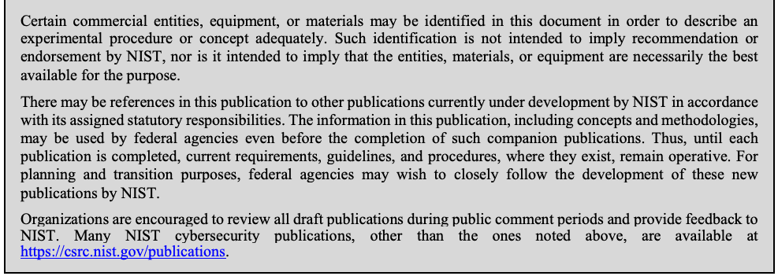
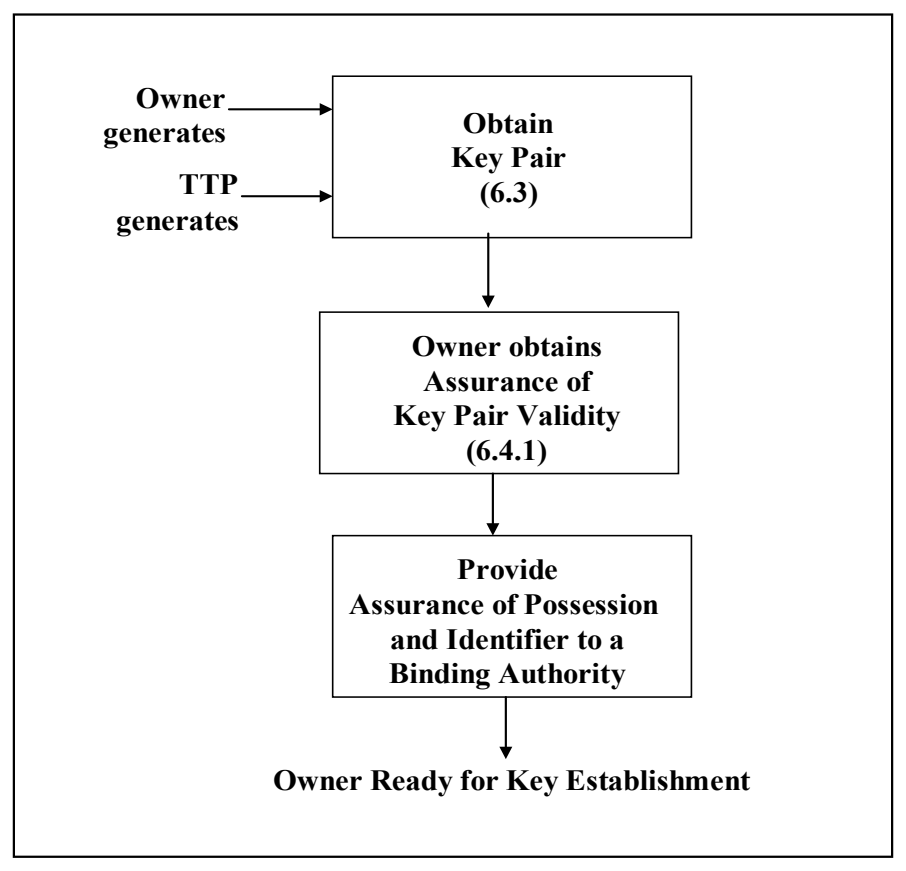
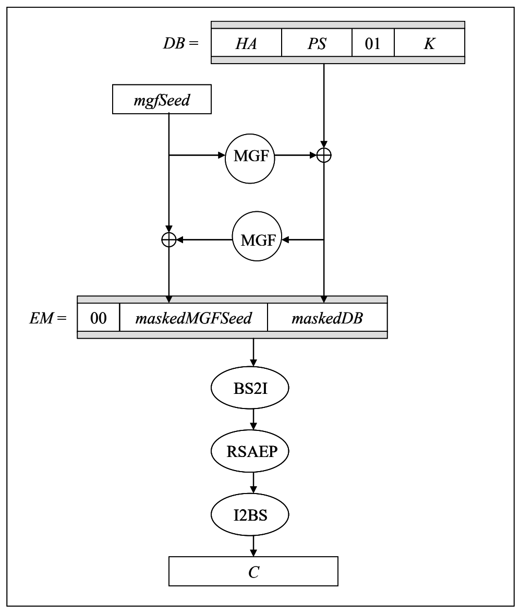
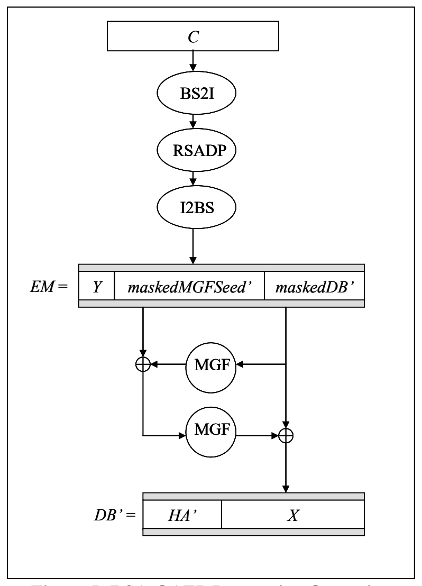

NIST SP 800-56B Rev. 2 日本語訳
英語タイトル : Recommendation for Pair-Wise Key-Establishment Using Integer Factorization Cryptography日本語タイトル : 整数因数分解暗号を用いるペアワイズ鍵確立
公開日 : 2019-03-21
原文URL : https://csrc.nist.gov/pubs/sp/800/56/b/r2/final
翻訳編集 : 自動生成
[要約] SP 800-56B Rev. 2 は、RSAなどの整数因数分解暗号を用いる2者間の鍵確立方式を規定する勧告です。鍵合意方式と鍵転送方式の両方を規定し、両者が同じ鍵素材を共有していることを保証する鍵確認の方法と、各方式のセキュリティ特性を示します。SP 800-57およびFIPS 186とともに、ベンダーがFIPS 140検証済みモジュールで非対称アルゴリズムによる鍵確立を実装するための情報を提供し、プロトコル自体は規定しません。
有志による非公式の日本語訳です。NIST および米国商務省が作成・承認・推奨したものではありません。要件の確認にはNIST の正式版 PDFを参照してください。
NIST Special Publication 800-56B
NIST特別刊行物 800-56B
Revision 2
改訂第2版
Recommendation for Pair-Wise Key Establishment Using Integer Factorization Cryptography
整数因数分解暗号を用いたペアワイズ鍵確立に関する勧告
Elaine Barker Lily Chen Allen Roginsky Apostol Vassilev Richard Davis Scott Simon
Elaine Barker Lily Chen Allen Roginsky Apostol Vassilev Richard Davis Scott Simon
This publication is available free of charge from: https://doi.org/10.6028/NIST.SP.800-56Br2
本刊行物は次のURLから無料で入手できる：https://doi.org/10.6028/NIST.SP.800-56Br2
C O M P U T E R S E C U R I T Y
コンピュータセキュリティ
［NIST のロゴ。公的な標章のため、この非公式サイトには掲載していない。原本 PDF を参照。］
NIST Special Publication 800-56B Revision 2
NIST特別刊行物 800-56B 改訂第2版
Recommendation for Pair-Wise Key Establishment Using Integer Factorization Cryptography
整数因数分解暗号を用いたペアワイズ鍵確立に関する勧告
Elaine Barker Lily Chen Allen Roginsky Apostol Vassilev
Elaine Barker Lily Chen Allen Roginsky Apostol Vassilev
Computer Security Division Information Technology Laboratory
コンピュータセキュリティ部門 情報技術研究所
Richard Davis Scott Simon
Richard Davis Scott Simon
National Security Agency
国家安全保障局
This publication is available free of charge from: https://doi.org/10.6028/NIST.SP.800-56Br2
本刊行物は次のURLから無料で入手できる：https://doi.org/10.6028/NIST.SP.800-56Br2
March 2019
2019年3月
U.S. Department of Commerce Wilbur L. Ross, Jr., Secretary
米国商務省 Wilbur L. Ross, Jr. 長官
National Institute of Standards and Technology
国立標準技術研究所
Walter Copan, NIST Director and Under Secretary of Commerce for Standards and Technology
Walter Copan、NIST所長 兼 商務次官（標準・技術担当）
Authority
権限
This publication has been developed by NIST in accordance with its statutory responsibilities under the Federal Information Security Modernization Act (FISMA) of 2014, 44 U.S.C. § 3551 et seq., Public Law (P.L.) 113-283. NIST is responsible for developing information security standards and guidelines, including minimum requirements for federal information systems, but such standards and guidelines shall not apply to national security systems without the express approval of appropriate federal officials exercising policy authority over such systems. This guideline is consistent with the requirements of the Office of Management and Budget (OMB) Circular A-130.
本刊行物は、2014年連邦情報セキュリティ近代化法（FISMA）、44 U.S.C. § 3551 et seq.、公法（P.L.）113-283に基づく法定責任に従いNISTが作成した。NISTは、連邦情報システムの最低要件を含む情報セキュリティ標準およびガイドラインの策定を担う。ただし、適切な連邦当局者が当該システムに関する政策権限に基づき明示的に承認しない限り、これらの標準およびガイドラインを国家安全保障システムに適用してはならない。本ガイドラインは、行政管理予算局（OMB）通達A-130の要件に準拠する。
Nothing in this publication should be taken to contradict the standards and guidelines made mandatory and binding on federal agencies by the Secretary of Commerce under statutory authority. Nor should these guidelines be interpreted as altering or superseding the existing authorities of the Secretary of Commerce, Director of the OMB, or any other federal official. This publication may be used by nongovernmental organizations on a voluntary basis and is not subject to copyright in the United States. Attribution would, however, be appreciated by NIST.
本刊行物のいかなる内容も、法定権限に基づき商務長官が連邦機関に義務付け、拘束力を持たせた標準およびガイドラインと矛盾するものと解釈すべきではない。また、本ガイドラインを、商務長官、OMB長官またはその他の連邦当局者の既存の権限を変更または置き換えるものと解釈すべきではない。本刊行物は非政府組織が任意に利用でき、米国では著作権の対象ではない。ただし、NISTへの帰属表示を歓迎する。
National Institute of Standards and Technology Special Publication 800-56B Revision 2 Natl. Inst. Stand. Technol. Spec. Publ. 800-56B Rev. 2, 131 pages (March 2019) CODEN: NSPUE2
米国国立標準技術研究所 特別刊行物 800-56B 改訂第2版 Natl. Inst. Stand. Technol. Spec. Publ. 800-56B Rev. 2, 131 pages (March 2019) CODEN: NSPUE2
This publication is available free of charge from: https://doi.org/10.6028/NIST.SP.800-56Br2
本刊行物は次のURLから無料で入手できる：https://doi.org/10.6028/NIST.SP.800-56Br2
Certain commercial entities, equipment, or materials may be identified in this document in order to describe an experimental procedure or concept adequately. Such identification is not intended to imply recommendation or endorsement by NIST, nor is it intended to imply that the entities, materials, or equipment are necessarily the best available for the purpose.
原本PDFの抜粋画像

実験手順または概念を十分に説明する目的で、本書では特定の商業事業体、装置または材料を挙げる場合がある。このような記載は、NISTによる推奨または保証を意味するものではなく、また、それらの事業体、材料または装置が当該目的に必ずしも最適であることを意味するものでもない。
There may be references in this publication to other publications currently under development by NIST in accordance with its assigned statutory responsibilities. The information in this publication, including concepts and methodologies, may be used by federal agencies even before the completion of such companion publications. Thus, until each publication is completed, current requirements, guidelines, and procedures, where they exist, remain operative. For planning and transition purposes, federal agencies may wish to closely follow the development of these new publications by NIST.
本刊行物では、NISTが法定責任に基づいて現在策定中の他の刊行物を参照する場合がある。本刊行物の情報（概念および方法論を含む）は、これらの関連刊行物が完成する前であっても、連邦機関が使用できる。したがって、各刊行物が完成するまでは、現行の要件、ガイドラインおよび手順は、それらが存在する場合、引き続き有効である。計画および移行のため、連邦機関はNISTによるこれらの新しい刊行物の策定状況を注意深く追跡することを望む場合がある。
Organizations are encouraged to review all draft publications during public comment periods and provide feedback to NIST. Many NIST cybersecurity publications, other than the ones noted above, are available at https://csrc.nist.gov/publications.
組織は、パブリックコメント期間中にすべての刊行物の草案を確認し、NISTに意見を提出することが推奨される。上記で特記したものを除き、多くのNISTサイバーセキュリティ刊行物は https://csrc.nist.gov/publications で入手できる。
Comments on this publication may be submitted to: National Institute of Standards and Technology Attn: Computer Security Division, Information Technology Laboratory 100 Bureau Drive (Mail Stop 8930) Gaithersburg, MD 20899-8930 Email: SP800-56b_comments@nist.gov
本刊行物へのコメントは、次の宛先に提出できる。米国国立標準技術研究所 宛先：情報技術研究所コンピュータセキュリティ部門 100 Bureau Drive (Mail Stop 8930) Gaithersburg, MD 20899-8930 電子メール：SP800-56b_comments@nist.gov
All comments are subject to release under the Freedom of Information Act (FOIA).
すべてのコメントは、情報自由法（FOIA）に基づく公開の対象となる。
Reports on Computer Systems Technology
コンピュータシステム技術報告書
The Information Technology Laboratory (ITL) at the National Institute of Standards and Technology (NIST) promotes the U.S. economy and public welfare by providing technical leadership for the Nation’s measurement and standards infrastructure. ITL develops tests, test methods, reference data, proof of concept implementations, and technical analyses to advance the development and productive use of information technology. ITL’s responsibilities include the development of management, administrative, technical, and physical standards and guidelines for the cost-effective security and privacy of other than national security-related information in Federal information systems. The Special Publication 800-series reports on ITL’s research, guidelines, and outreach efforts in information system security, and its collaborative activities with industry, government, and academic organizations.
米国国立標準技術研究所（NIST）の情報技術研究所（ITL）は、米国の計量・標準インフラに技術的リーダーシップを提供し、米国経済と公共の福祉を促進する。ITLは、情報技術の発展と有効活用を推進するため、試験、試験方法、参照データ、概念実証実装および技術分析を開発する。ITLの責務には、連邦情報システムにおける国家安全保障関連以外の情報の費用対効果に優れたセキュリティとプライバシーのための管理、運用、技術および物理的な標準とガイドラインの策定が含まれる。特別刊行物800シリーズは、情報システムセキュリティに関するITLの研究、ガイドライン、普及活動ならびに産業界、政府、学術機関との協力活動を報告する。
Abstract
概要
This Recommendation specifies key-establishment schemes using integer factorization cryptography (in particular, RSA). Both key-agreement and key transport schemes are specified for pairs of entities, and methods for key confirmation are included to provide assurance that both parties share the same keying material. In addition, the security properties associated with each scheme are provided.
本勧告は、整数因数分解暗号（特にRSA）を用いる鍵確立方式を規定する。2者間の鍵合意方式と鍵転送方式の両方を規定し、両者が同じ鍵素材を共有していることを保証する鍵確認方法も含む。また、各方式に関連するセキュリティ特性を示す。
Keywords
キーワード
assurances; integer factorization cryptography; key agreement; key confirmation; key derivation; key establishment; key management; key recovery; key transport.
保証、整数因数分解暗号、鍵合意、鍵確認、鍵導出、鍵確立、鍵管理、鍵回復、鍵転送。
Acknowledgements
謝辞
NIST thanks the many contributions by the public and private sectors whose thoughtful and constructive comments improved the quality and usefulness of this publication. The authors also acknowledge the contributions by Dustin Moody, Andrew Regenscheid and Miles Smid made to previous versions of this Recommendation.
NISTは、本刊行物の質と有用性を高める思慮深く建設的な意見を寄せた官民両部門の多くの貢献に感謝する。また著者らは、本勧告の旧版に貢献したDustin Moody、Andrew RegenscheidおよびMiles Smidにも謝意を表する。
Conformance Testing
適合性試験
Conformance testing for implementations of this Recommendation will be conducted within the framework of the Cryptographic Algorithm Validation Program (CAVP) and the Cryptographic Module Validation Program (CMVP). The requirements of this Recommendation are indicated by the word “shall.” Some of these requirements may be out-of-scope for CAVP or CMVP validation testing, and thus are the responsibility of entities using, implementing, installing or configuring applications that incorporate this Recommendation.
本勧告の実装に対する適合性試験は、暗号アルゴリズム検証プログラム（CAVP）および暗号モジュール検証プログラム（CMVP）の枠組み内で実施される。本勧告の要件は「shall」という語で示す。これらの要件の一部はCAVPまたはCMVPの検証試験の対象外である可能性があり、その場合、本勧告を組み込むアプリケーションを使用、実装、インストールまたは構成する主体が責任を負う。
Table of Contents
目次
1. Introduction — 1
1. はじめに — 1
2. Scope and Purpose — 1
2. 適用範囲および目的 — 1
3. Definitions, Symbols and Abbreviations — 2
3. 定義、記号および略語 — 2
3.1 Definitions — 2
3.1 定義 — 2
3.2 Symbols and Abbreviations — 9
3.2 記号および略語 — 9
4 Key-Establishment Schemes Overview — 16
4 鍵確立方式の概要 — 16
4.1 Key-Establishment Preparations — 17
4.1 鍵確立の準備 — 17
4.2 Key-Agreement Process — 19
4.2 鍵合意プロセス — 19
4.3 Key-Transport Process — 20
4.3 鍵転送プロセス — 20
5 Cryptographic Elements — 22
5 暗号要素 — 22
5.1 Cryptographic Hash Functions — 22
5.1 暗号ハッシュ関数 — 22
5.2 Message Authentication Code (MAC) Algorithms — 22
5.2 メッセージ認証コード（MAC）アルゴリズム — 22
5.2.1 MacTag Computation for Key Confirmation — 23
5.2.1 鍵確認用MacTagの計算 — 23
5.2.2 MacTag Verification for Key Confirmation — 23
5.2.2 鍵確認用MacTagの検証 — 23
5.3 Random Bit Generators — 23
5.3 乱数ビット生成器 — 23
5.4 Nonces — 24
5.4 ノンス — 24
5.5 Key-Derivation Methods for Key-Establishment Schemes — 24
5.5 鍵確立方式のための鍵導出方法 — 24
5.5.1 Performing the Key Derivation — 25
5.5.1 鍵導出の実行 — 25
5.5.2 FixedInfo — 25
5.5.2 FixedInfo — 25
5.5.2.1 One-step Key Derivation — 26
5.5.2.1 ワンステップ鍵導出 — 26
5.5.2.1.1 The Concatenation Format for FixedInfo — 27
5.5.2.1.1 FixedInfoの連結形式 — 27
5.5.2.1.2 The ASN.1 Format for FixedInfo — 28
5.5.2.1.2 FixedInfoのASN.1形式 — 28
5.5.2.2 Two-step Key-Derivation (Extraction-then-Expansion) — 28
5.5.2.2 2段階鍵導出（抽出後に展開） — 28
5.5.2.3 Other Formats for FixedInfo — 29
5.5.2.3 FixedInfoのその他の形式 — 29
5.6 Key Confirmation — 29
5.6 鍵確認 — 29
5.6.1 Unilateral Key Confirmation for Key-Establishment Schemes — 30
5.6.1 鍵確立方式の一方向鍵確認 — 30
5.6.2 Bilateral Key Confirmation for KAS2 Schemes — 33
5.6.2 KAS2方式の双方向鍵確認 — 33
5.6.3 Selecting the MAC and Other Key-Confirmation Parameters — 33
5.6.3 MACおよびその他の鍵確認パラメータの選択 — 33
6 RSA Key Pairs — 36
6 RSA鍵ペア — 36
6.1 General Requirements — 36
6.1 一般要件 — 36
6.2 Criteria for RSA Key Pairs for Key Establishment — 37
6.2 鍵確立用RSA鍵ペアの基準 — 37
6.2.1 Definition of a Key Pair — 37
6.2.1 鍵ペアの定義 — 37
6.2.2 Formats — 37
6.2.2 形式 — 37
6.3 RSA Key-Pair Generators — 38
6.3 RSA鍵ペア生成器 — 38
6.3.1 RSAKPG1 Family: RSA Key-Pair Generation with a Fixed Public Exponent — 39
6.3.1 RSAKPG1ファミリー：固定公開指数によるRSA鍵ペア生成 — 39
6.3.1.1 rsakpg1-basic — 39
6.3.1.1 rsakpg1-basic — 39
6.3.1.2 rsakpg1-prime-factor — 40
6.3.1.2 rsakpg1-prime-factor — 40
6.3.1.3 rsakpg1-crt — 41
6.3.1.3 rsakpg1-crt — 41
6.3.2 RSAKPG2 Family: RSA Key-Pair Generation with a Random Public Exponent. 42
6.3.2 RSAKPG2ファミリー：ランダム公開指数によるRSA鍵ペア生成 — 42
6.3.2.1 rsakpg2-basic — 42
6.3.2.1 rsakpg2-basic — 42
6.3.2.2 rsakpg2-prime-factor — 43
6.3.2.2 rsakpg2-prime-factor — 43
6.3.2.3 rsakpg2-crt — 44
6.3.2.3 rsakpg2-crt — 44
6.4 Required Assurances — 45
6.4 必要な保証 — 45
6.4.1 Assurances Required by the Key-Pair Owner — 45
6.4.1 鍵ペア所有者に必要な保証 — 45
6.4.1.1 Obtaining Owner Assurance of Key-Pair Validity — 45
6.4.1.1 鍵ペアの有効性に関する所有者保証の取得 — 45
6.4.1.2 RSAKPV1 Family: RSA Key-Pair Validation with a Fixed Public Exponent — 47
6.4.1.2 RSAKPV1ファミリー：固定公開指数によるRSA鍵ペア検証 — 47
6.4.1.2.1 rsakpv1-basic — 47
6.4.1.2.1 rsakpv1-basic — 47
6.4.1.2.2 rsakpv1-prime-factor — 49
6.4.1.2.2 rsakpv1-prime-factor — 49
6.4.1.2.3 rsakpv1-crt — 50
6.4.1.2.3 rsakpv1-crt — 50
6.4.1.3 RSAKPV2 Family: RSA Key-Pair Validation (Random Public Exponent) — 51
6.4.1.3 RSAKPV2ファミリー：RSA鍵ペア検証（ランダム公開指数）— 51
6.4.1.3.1 rsakpv2-basic — 51
6.4.1.3.1 rsakpv2-basic — 51
6.4.1.3.2 rsakpv2-prime-factor — 51
6.4.1.3.2 rsakpv2-prime-factor — 51
6.4.1.3.3 rsakpv2-crt — 52
6.4.1.3.3 rsakpv2-crt — 52
6.4.1.4 RSA Key-Pair Validation (Exponent-Creation Method Unknown) — 53
6.4.1.4 RSA鍵ペア検証（指数生成方式が不明の場合）— 53
6.4.1.4.1 basic-pkv — 53
6.4.1.4.1 basic-pkv — 53
6.4.1.4.2 prime-factor-pkv — 54
6.4.1.4.2 prime-factor-pkv — 54
6.4.1.4.3 crt_pkv — 55
6.4.1.4.3 crt_pkv — 55
6.4.1.5 Owner Assurance of Private-Key Possession — 56
6.4.1.5 秘密鍵の保有に関する所有者保証 — 56
6.4.2 Assurances Required by a Public-Key Recipient — 57
6.4.2 公開鍵受領者に必要な保証 — 57
6.4.2.1 Obtaining Assurance of Public-Key Validity for a Received Public Key . 57
6.4.2.1 受領した公開鍵の有効性保証の取得 — 57
6.4.2.2 Partial Public-Key Validation for RSA — 58
6.4.2.2 RSAの部分公開鍵検証 — 58
6.4.2.3 Recipient Assurances of an Owner’s Possession of a Private Key — 58
6.4.2.3 所有者の秘密鍵保有に関する受領者保証 — 58
6.4.2.3.1 Recipient Obtains Assurance from a Trusted Third Party — 59
6.4.2.3.1 信頼できる第三者から保証を得る受領者 — 59
6.4.2.3.2 Recipient Obtains Assurance Directly from the Claimed Owner (i.e., the Other Party) — 59
6.4.2.3.2 受領者が所有者を主張する者（すなわち相手方）から直接保証を取得する — 59
7 Primitives and Operations — 61
7 プリミティブおよび演算 — 61
7.1 Encryption and Decryption Primitives — 61
7.1 暗号化および復号のプリミティブ — 61
7.1.1 RSAEP — 61
7.1.1 RSAEP — 61
7.1.2 RSADP — 61
7.1.2 RSADP — 61
7.1.2.1 Decryption with the Private Key in the Basic Format — 62
7.1.2.1 基本形式の秘密鍵による復号 — 62
7.1.2.2 Decryption with the Private Key in the Prime Factor Format — 62
7.1.2.2 素因数形式の秘密鍵による復号 — 62
7.1.2.3 Decryption with the Private Key in the CRT Format — 63
7.1.2.3 CRT形式の秘密鍵による復号 — 63
7.2 Encryption and Decryption Operations — 63
7.2 暗号化および復号の演算 — 63
7.2.1 RSA Secret-Value Encapsulation (RSASVE) — 63
7.2.1 RSA秘密値カプセル化（RSASVE）— 63
7.2.1.1 RSASVE Components — 63
7.2.1.1 RSASVEコンポーネント — 63
7.2.1.2 RSASVE Generate Operation (RSASVE.GENERATE) — 64
7.2.1.2 RSASVE生成演算（RSASVE.GENERATE）— 64
7.2.1.3 RSASVE Recovery Operation (RSASVE.RECOVER) — 65
7.2.1.3 RSASVE回復演算（RSASVE.RECOVER）— 65
7.2.2 RSA with Optimal Asymmetric Encryption Padding (RSA-OAEP) — 66
7.2.2 最適公開鍵暗号化パディングを用いるRSA（RSA-OAEP）— 66
7.2.2.1 RSA-OAEP Components — 66
7.2.2.1 RSA-OAEPコンポーネント — 66
7.2.2.2 The Mask Generation Function (MGF) — 67
7.2.2.2 マスク生成関数（MGF）— 67
7.2.2.3 RSA-OAEP Encryption Operation (RSA-OAEP.ENCRYPT) — 68
7.2.2.3 RSA-OAEP暗号化演算（RSA-OAEP.ENCRYPT）— 68
7.2.2.4 RSA-OAEP Decryption Operation (RSA-OAEP.DECRYPT) — 70
7.2.2.4 RSA-OAEP復号演算（RSA-OAEP.DECRYPT）— 70
8 Key-Agreement Schemes — 74
8 鍵合意方式 — 74
8.1 Common Components for Key Agreement — 74
8.1 鍵合意の共通コンポーネント — 74
8.2 KAS1 Key Agreement — 75
8.2 KAS1鍵合意 — 75
8.2.1 KAS1 Assumptions — 75
8.2.1 KAS1の前提 — 75
8.2.2 KAS1-basic — 76
8.2.2 KAS1-basic — 76
8.2.3 KAS1 Key Confirmation — 78
8.2.3 KAS1鍵確認 — 78
8.2.3.1 KAS1 Key-Confirmation Components — 78
8.2.3.1 KAS1鍵確認コンポーネント — 78
8.2.3.2 KAS1-Party_V-confirmation — 78
8.2.3.2 KAS1-Party_V-confirmation — 78
8.3 KAS2 Key Agreement — 79
8.3 KAS2鍵合意 — 79
8.3.1 KAS2 Assumptions — 80
8.3.1 KAS2の前提 — 80
8.3.2 KAS2-basic — 81
8.3.2 KAS2-basic — 81
8.3.3 KAS2 Key Confirmation — 83
8.3.3 KAS2鍵確認 — 83
8.3.3.1 KAS2 Key-Confirmation Components — 83
8.3.3.1 KAS2鍵確認コンポーネント — 83
8.3.3.2 KAS2-Party_V-confirmation — 83
8.3.3.2 KAS2-Party_V-confirmation — 83
8.3.3.3 KAS2-Party_U-confirmation — 84
8.3.3.3 KAS2-Party_U-confirmation — 84
8.3.3.4 KAS2-bilateral-confirmation — 86
8.3.3.4 KAS2-bilateral-confirmation — 86
9 Key-Transport Schemes — 88
9 鍵転送方式 — 88
9.1 Additional Input — 88
9.1 追加入力 — 88
9.2 KTS-OAEP: Key-Transport Using RSA-OAEP — 89
9.2 KTS-OAEP：RSA-OAEPを用いた鍵転送 — 89
9.2.1 KTS-OAEP Assumptions — 89
9.2.1 KTS-OAEPの前提 — 89
9.2.2 Common components — 90
9.2.2 共通コンポーネント — 90
9.2.3 KTS-OAEP-basic — 90
9.2.3 KTS-OAEP-basic — 90
9.2.4 KTS-OAEP Key Confirmation — 91
9.2.4 KTS-OAEP鍵確認 — 91
9.2.4.1 KTS-OAEP Common Components for Key Confirmation — 91
9.2.4.1 鍵確認のためのKTS-OAEP共通コンポーネント — 91
9.2.4.2 KTS-OAEP-Party_V-confirmation — 92
9.2.4.2 KTS-OAEP-Party_V-confirmation — 92
9.3 Hybrid Key-Transport Methods — 93
9.3 ハイブリッド鍵転送方式 — 93
10 Rationale for Selecting a Specific Scheme — 94
10 特定方式を選択する根拠 — 94
10.1 Rationale for Choosing a KAS1 Key-Agreement Scheme — 95
10.1 KAS1鍵合意方式を選択する根拠 — 95
10.2 Rationale for Choosing a KAS2 Key-Agreement Scheme — 97
10.2 KAS2鍵合意方式を選択する根拠 — 97
10.3 Rationale for Choosing a KTS-OAEP Key-Transport Scheme — 99
10.3 KTS-OAEP鍵転送方式を選択する根拠 — 99
10.4 Summary of Assurances Associated with Key-Establishment Schemes — 101
10.4 鍵確立方式に関連する保証の要約 — 101
11 Key Recovery — 104
11 鍵回復 — 104
12 Implementation Validation — 105
12 実装検証 — 105
Appendix A: References — 106
付属書A：参考文献 — 106
A.1Normative References — 106
A.1 規範的参考文献 — 106
A.2 Informative References — 108
A.2 参考情報 — 108
Appendix B: Data Conversions (Normative) — 110
付属書B：データ変換（規範）— 110
B.1Integer-to-Byte String (I2BS) Conversion — 110
B.1 整数からバイト文字列への変換（I2BS）— 110
B.2Byte String to Integer (BS2I) Conversion — 110
B.2 バイト文字列から整数への変換（BS2I）— 110
Appendix C: Prime-Factor Recovery (Normative) — 111
付属書C：素因数回復（規範）— 111
C.1Probabilistic Prime-Factor Recovery — 111
C.1 確率的素因数回復 — 111
C.2Deterministic Prime-Factor Recovery — 112
C.2 決定的素因数回復 — 112
Appendix D: Maximum Security Strength Estimates for IFC Modulus Lengths — 117
付属書D：IFC法の長さに対する最大セキュリティ強度の推定 — 117
Appendix E: Revisions (Informative) — 118
付属書E：改訂履歴（参考情報）— 118
Figures
図一覧
Figure 1: Owner Key-establishment Preparations — 17
図1：所有者による鍵確立の準備 — 17
Figure 2: Key-Agreement Process — 19
図2：鍵合意プロセス — 19
Figure 3: Key-transport Process — 21
図3：鍵転送プロセス — 21
Figure 4: RSA-OAEP Encryption Operation — 70
図4：RSA-OAEP暗号化演算 — 70
Figure 5: RSA-OAEP Decryption Operation — 73
図5：RSA-OAEP復号演算 — 73
Figure 6: KAS1-basic Scheme — 76
図6：KAS1-basic方式 — 76
Figure 7: KAS1-Party-V-confirmation Scheme (From Party V to Party U) — 78
図7：KAS1-Party-V-confirmation方式（Party VからParty U）— 78
Figure 8: KAS2-basic Scheme — 81
図8：KAS2-basic方式 — 81
Figure 9: KAS2-Party_V-confirmation Scheme (from Party V to Party U) — 84
図9：KAS2-Party_V-confirmation方式（Party VからParty U）— 84
Figure 10: KAS2-Party_U-confirmation Scheme (from Party U to Party V) — 85
図10：KAS2-Party_U-confirmation方式（Party UからParty V）— 85
Figure 11: KAS2-bilateral-confirmation Scheme — 86
図11：KAS2-bilateral-confirmation方式 — 86
Figure 12: KTS-OAEP-basic Scheme — 90
図12：KTS-OAEP-basic方式 — 90
Figure 13: KTS-OAEP-Party_V-confirmation Scheme — 92
図13：KTS-OAEP-Party_V-confirmation方式 — 92
Tables
表
Table 1: Approved MAC Algorithms for Key Confirmation — 34
表1：鍵確認用の承認済みMACアルゴリズム — 34
Table 2: Security Strengths Supported by Commonly Used Modulus Lengths — 38
表2：一般的な法長でサポートされるセキュリティ強度 — 38
Table 3: Summary of Assurances — 103
表3：保証の要約 — 103
Table 4: Estimated Security Strengths of Common RSA Moduli — 117
表4：一般的なRSA法のセキュリティ強度推定値 — 117
1. Introduction
1. はじめに
Many U.S. Government Information Technology (IT) systems need to employ strong cryptographic schemes to protect the integrity and confidentiality of the data that they process. Algorithms such as the Advanced Encryption Standard (AES), as defined in Federal Information Processing Standard (FIPS) 197,1 and HMAC, as defined in FIPS 198,2 make attractive choices for the provision of these services. These algorithms have been standardized to facilitate interoperability between systems. However, the use of these algorithms requires the establishment of secret keying material that is shared in advance. Trusted couriers may manually distribute this secret keying material, but as the number of entities using a system grows, the work involved in the distribution of the secret keying material grows rapidly. Therefore, it is essential to support the cryptographic algorithms used in modern U.S. Government applications with automated key-establishment schemes.
米国政府の多くの情報技術（IT）システムは、処理するデータの完全性と機密性を保護するために、強力な暗号方式を用いる必要がある。連邦情報処理標準（FIPS）1971 に定義される Advanced Encryption Standard（AES）や、FIPS 1982 に定義される HMAC などのアルゴリズムは、これらのサービスを提供するうえで有力な選択肢である。これらのアルゴリズムは、システム間の相互運用性を促進するために標準化されている。しかし、これらのアルゴリズムを使用するには、事前に共有されたシークレット鍵素材を確立する必要がある。信頼できる運搬者がこのシークレット鍵素材を手作業で配布することもできるが、システムを利用する主体の数が増えるにつれて、シークレット鍵素材の配布に要する作業は急速に増大する。したがって、現代の米国政府のアプリケーションで用いられる暗号アルゴリズムを、自動化された鍵確立方式で支えることが不可欠である。
This Recommendation provides the specifications of key-establishment schemes that are appropriate for use by the U.S. Federal Government, based on a standard that was developed by the Accredited Standards Committee (ASC) X9, Inc: ANS X9.44.3 A key-establishment scheme can be characterized as either a key-agreement scheme or a key-transport scheme. This Recommendation provides key-agreement and key-transport schemes that are based on the Rivest Shamir Adleman (RSA) asymmetric-key algorithm.
本勧告は、米国連邦政府での使用に適した鍵確立スキームの仕様を示すものであり、Accredited Standards Committee（ASC）X9, Inc が策定した標準 ANS X9.443 に基づく。鍵確立スキームは、鍵合意スキームまたは鍵輸送スキームのいずれかに分類できる。本勧告は、Rivest Shamir Adleman（RSA）非対称鍵アルゴリズムに基づく鍵合意スキームと鍵輸送スキームを提供する。
2. Scope and Purpose
2. 適用範囲および目的
This Recommendation is intended for use in conjunction with NIST Special Publication (SP) 800-57.4 This key-establishment Recommendation, SP 800-57, and FIPS 1865 are intended to provide information for a vendor to implement secure key-establishment using asymmetric algorithms in FIPS 1406 validated modules.
本勧告は、NIST Special Publication（SP）800-574 と併せて使用することを意図している。この鍵確立に関する勧告、SP 800-57、および FIPS 1865 は、ベンダーが FIPS 1406 検証済みモジュールにおいて、非対称アルゴリズムを用いた安全な鍵確立を実装するための情報を提供することを意図している。
Note that a key-establishment scheme is a component of a protocol that may provide security properties not provided by the scheme when considered by itself; protocols, per se, are not specified in this Recommendation.
鍵確立スキームは、プロトコルの構成要素であり、プロトコルは、そのスキーム単独で考えた場合には提供されないセキュリティ特性を提供しうることに注意する。プロトコルそのものは、本勧告では規定しない。
3. Definitions, Symbols and Abbreviations
3. 定義、記号および略語
3.1 Definitions
3.1 定義
| Additional input | Information known by two parties that is cryptographically bound to the secret keying material being protected using the encryption operation. |
| Algorithm | A clearly specified mathematical process for computation; a set of rules that, if followed, will give a prescribed result. |
| Approved | FIPS-approved or NIST-Recommended. An algorithm or technique that is either 1) specified in a FIPS or NIST Recommendation, or 2) adopted in a FIPS or NIST Recommendation and specified either (a) in an appendix to the FIPS or NIST Recommendation, or (b) in a document referenced by the FIPS or NIST Recommendation. |
| Assumption | Used to indicate the conditions that are required to be true when an approved key-establishment scheme is executed in accordance with this Recommendation. |
| Assurance of private key possession | Confidence that an entity possesses a private key associated with a given public key. |
| Assurance of validity | Confidence that an RSA key pair is arithmetically correct. |
| Big-endian | The property of a byte string having its bytes positioned in order of decreasing significance. In particular, the leftmost (first) byte is the most significant byte (containing the most significant eight bits of the corresponding bit string) and the rightmost (last) byte is the least significant byte (containing the least significant eight bits of the corresponding bit string). For the purposes of this Recommendation, it is assumed that the bits within each byte of a big-endian byte string are also positioned in order of decreasing significance (beginning with the most significant bit in the leftmost position and ending with the least significant bit in the rightmost position). |
| Binding | Assurance of the integrity of an asserted relationship between items of information that is provided by cryptographic means. Also see Trusted association. |
| Bit length | A positive integer that expresses the number of bits in a bit string. |
| Bit string | An ordered sequence of 0’s and 1’s. Also known as a binary string. |
| 追加入力 | 暗号化演算を用いて保護されるシークレット鍵素材に暗号学的に結び付けられた、両当事者が知る情報。 |
| アルゴリズム | 計算のために明確に規定された数学的手順。従えば所定の結果が得られる一連の規則。 |
| 承認済み | FIPS承認済みまたはNIST推奨。1) FIPSまたはNIST勧告で規定される、または2) FIPSまたはNIST勧告に採用され、(a) 当該FIPSまたはNIST勧告の付属書、あるいは (b) 当該FIPSまたはNIST勧告が参照する文書のいずれかで規定される、アルゴリズムまたは技法。 |
| 前提 | 本勧告に従って承認済み鍵確立方式を実行する際に、真であることが必要な条件を示すために用いる。 |
| 秘密鍵保有の保証 | あるエンティティが、特定の公開鍵に対応する秘密鍵を保有しているという確信。 |
| 有効性の保証 | RSA鍵ペアが算術的に正しいという確信。 |
| ビッグエンディアン | バイト列のバイトが、重要度の高い順に並んでいる性質。具体的には、左端（先頭）のバイトが最上位バイト（対応するビット列の最上位8ビットを含む）であり、右端（末尾）のバイトが最下位バイト（対応するビット列の最下位8ビットを含む）である。 本勧告では、ビッグエンディアンのバイト列の各バイト内のビットも、重要度の高い順に（左端の最上位ビットから右端の最下位ビットまで）並んでいるものとする。 |
| 結合 | 暗号的手段によって提供される、情報項目間で主張された関係の完全性の保証。「信頼された関連付け」も参照。 |
| ビット長 | ビット列内のビット数を表す正の整数。 |
| ビット列 | 0と1の順序付き列。二進列とも呼ばれる。 |
| Byte | A bit string consisting of eight bits. |
| Byte length | A positive integer that expresses the number of bytes in a byte string. |
| Byte string | An ordered sequence of bytes. |
| Certificate Authority (CA) | The entity in a Public Key Infrastructure (PKI) that is responsible for issuing public-key certificates and exacting compliance to a PKI policy. Also known as a Certification Authority. |
| Ciphertext | Data in its enciphered form. |
| Confidentiality | The property that sensitive information is not disclosed to unauthorized entities. |
| Critical security parameter (CSP) | Security-related information whose disclosure or modification can compromise the security of a cryptographic module. Domain parameters, secret or private keys, shared secrets, key-derivation keys, intermediate values and secret salts are examples of quantities that may be considered critical security parameters in this Recommendation. See FIPS 140. |
| Cryptographic key (Key) | A parameter used with a cryptographic algorithm that determines its operation. |
| Decryption | The process of transforming ciphertext into plaintext using a cryptographic algorithm and key. |
| Destroy | In this Recommendation, an action applied to a key or a piece of secret data. After a key or a piece of secret data is destroyed, no information about its value can be recovered. Also known as zeroization in FIPS 140. |
| Encryption | The process of transforming plaintext into ciphertext using a cryptographic algorithm and key. |
| Entity | An individual (person), organization, device, or process. “Party” is a synonym. |
| Fresh | Newly established secret keying material that is statistically independent of any previously established keying material. |
| Greatest common divisor | The largest positive integer that divides each of two or more positive integers without a remainder. |
| バイト | 8ビットから成るビット列。 |
| バイト長 | バイト列内のバイト数を表す正の整数。 |
| バイト列 | バイトの順序付き列。 |
| 認証局（CA） | 公開鍵基盤（PKI）において、公開鍵証明書を発行し、PKIポリシーへの準拠を徹底する責任を負うエンティティ。Certification Authorityとも呼ばれる。 |
| 暗号文 | 暗号化された形式のデータ。 |
| 機密性 | 機微情報が認可されていないエンティティに開示されない性質。 |
| 重要セキュリティパラメータ（CSP） | 開示または改変されると暗号モジュールのセキュリティを損なうおそれのある、セキュリティ関連情報。本勧告では、ドメインパラメータ、共通鍵または秘密鍵、共有シークレット、鍵導出鍵、中間値、秘密ソルトなどが重要セキュリティパラメータとみなされる場合がある。FIPS 140を参照。 |
| 暗号鍵（鍵） | 暗号アルゴリズムとともに用い、その動作を決定するパラメータ。 |
| 復号 | 暗号アルゴリズムと鍵を用いて、暗号文を平文に変換するプロセス。 |
| 破棄 | 本勧告では、鍵または秘密データに適用する措置。鍵または秘密データを破棄すると、その値に関する情報を復元できない。FIPS 140ではゼロ化とも呼ばれる。 |
| 暗号化 | 暗号アルゴリズムと鍵を用いて、平文を暗号文に変換するプロセス。 |
| エンティティ | 個人（人）、組織、装置またはプロセス。「当事者」は同義語。 |
| 新鮮な | 以前に確立された鍵素材とは統計的に独立した、新たに確立されたシークレット鍵素材。 |
| 最大公約数 | 2つ以上の正の整数のそれぞれを余りなく割り切る、最大の正の整数。 |
| Hash function | A function that maps a bit string of arbitrary length to a fixed-length bit string. Approved hash functions are expected to satisfy the following properties: 1. One-way: It is computationally infeasible to find any input that maps to any pre-specified output, and 2. Collision resistant: It is computationally infeasible to find any two distinct inputs that map to the same output. |
| Hash value | The fixed-length bit string produced by a hash function. |
| Identifier | A bit string that is associated with a person, device or organization. It may be an identifying name, or may be something more abstract (for example, a string consisting of an Internet Protocol (IP) address). |
| Integrity | A property whereby data has not been altered in an unauthorized manner since it was created, transmitted or stored. |
| Key agreement | A (pair-wise) key-establishment procedure where the resultant secret keying material is a function of information contributed by two participants so that no party can predetermine the value of the secret keying material independently from the contributions of the other party. Contrast with key-transport. |
| Key-agreement transaction | An execution of a key-agreement scheme. |
| Key confirmation | A procedure to provide assurance to one party (the key-confirmation recipient) that another party (the key-confirmation provider) possesses the correct secret keying material and/or shared secret from which that secret keying material is derived. |
| Key-confirmation provider | The party that provides assurance to the other party (the recipient) that the two parties have indeed established a shared secret or shared keying material. |
| Key-derivation function | As used in this Recommendation, a function used to derive secret keying material from a shared secret (or a key) and other information. |
| Key-derivation method | As used in this Recommendation, a method by which secret keying material is derived from a shared secret and other information. A key-derivation method may use a key-derivation function or a key-derivation procedure. |
| ハッシュ関数 | 任意の長さのビット列を固定長のビット列に写像する関数。承認済みハッシュ関数は、次の性質を満たすことが期待される。 1. 一方向性：事前に指定された出力に写像される入力を見つけることは計算上実行不可能である。 2. 衝突耐性：同一の出力に写像される異なる2つの入力を見つけることは計算上実行不可能である。 |
| ハッシュ値 | ハッシュ関数が生成する固定長のビット列。 |
| 識別子 | 個人、装置または組織に関連付けられたビット列。識別名の場合もあれば、より抽象的なもの（例：インターネットプロトコル（IP）アドレスから成る文字列）の場合もある。 |
| 完全性 | データが、作成、送信または保存されて以降、許可されていない方法で変更されていないという性質。 |
| 鍵合意 | 得られるシークレット鍵素材が2者の寄与する情報の関数となり、どちらの当事者も、相手の寄与とは無関係にシークレット鍵素材の値を事前に決定できない（2者間の）鍵確立手続き。鍵輸送と対比。 |
| 鍵合意トランザクション | 鍵合意方式の1回の実行。 |
| 鍵確認 | 一方の当事者（鍵確認の受領者）に対して、他方の当事者（鍵確認の提供者）が、正しいシークレット鍵素材および／またはそのシークレット鍵素材の導出元となる共有シークレットを保有していることを保証する手続き。 |
| 鍵確認の提供者 | 2者が実際に共有シークレットまたは共有鍵素材を確立したことを、他方の当事者（受領者）に保証する当事者。 |
| 鍵導出関数 | 本勧告で用いる場合、共有シークレット（または鍵）およびその他の情報からシークレット鍵素材を導出するために用いる関数。 |
| 鍵導出方法 | 本勧告で用いる場合、共有シークレットおよびその他の情報からシークレット鍵素材を導出する方法。鍵導出方法は、鍵導出関数または鍵導出手続きを使用する場合がある。 |
| Key-derivation procedure | As used in this Recommendation, a multi-step process to derive secret keying material from a shared secret and other information. |
| Key establishment | A procedure that results in establishing secret keying material that is shared among different parties. |
| Key-establishment key pair | A private/public key pair used in a key-establishment scheme. |
| Key-establishment transaction | An instance of establishing secret keying material using a key-agreement or key-transport transaction. |
| Key pair | See key-establishment key pair. |
| Key transport | A (pair-wise) key-establishment procedure whereby one party (the sender) selects a value for the secret keying material and then securely distributes that value to another party (the receiver). Contrast with key agreement. |
| Key-transport transaction | An execution of a key-transport scheme. |
| Key wrapping | A method of protecting secret keying material (along with associated integrity information) that provides both confidentiality and integrity protection when using symmetric-key algorithms. |
| Key-wrapping key | A symmetric key used with a key-wrapping algorithm to protect keying material. In accordance with this Recommendation (SP 800-56B), a key-wrapping key can be established using a KAS1, KAS2 or KTS-OAEP scheme and then used with a key-wrapping algorithm to protect transported keying material. (See Section 9.3.) |
| Keying material | Data that is represented as a binary string such that any non-overlapping segments of the string with the required lengths can be used as secret keys, secret initialization vectors and other secret parameters. |
| Least common multiple | The smallest positive integer that is divisible by two or more positive integers without a remainder. For example, the least common multiple of 2 and 3 is 6. |
| MAC tag | Data obtained from the output of a MAC algorithm (possibly by truncation) that can be used by an entity to verify the integrity and the origination of the information used as input to the MAC algorithm. |
| 鍵導出手続き | 本勧告で用いる場合、共有シークレットおよびその他の情報からシークレット鍵素材を導出する多段階のプロセス。 |
| 鍵確立 | 異なる当事者間で共有されるシークレット鍵素材を確立する手続き。 |
| 鍵確立鍵ペア | 鍵確立方式で使用する、秘密鍵と公開鍵のペア。 |
| 鍵確立トランザクション | 鍵合意トランザクションまたは鍵輸送トランザクションを用いて、シークレット鍵素材を確立する1回の実行。 |
| 鍵ペア | 「鍵確立鍵ペア」を参照。 |
| 鍵輸送 | 一方の当事者（送信者）がシークレット鍵素材の値を選択し、その値を他方の当事者（受信者）に安全に配布する、（2者間の）鍵確立手続き。鍵合意と対比。 |
| 鍵輸送トランザクション | 鍵輸送方式の1回の実行。 |
| 鍵ラッピング | 共通鍵アルゴリズムを使用して、シークレット鍵素材を（関連する完全性情報とともに）保護し、機密性と完全性保護の両方を提供する方法。 |
| 鍵ラッピング鍵 | 鍵素材を保護するために鍵ラッピングアルゴリズムとともに使用する共通鍵。本勧告（SP 800-56B）に従い、鍵ラッピング鍵はKAS1、KAS2またはKTS-OAEP方式で確立し、その後、鍵ラッピングアルゴリズムとともに使用して、輸送される鍵素材を保護できる。（9.3節を参照。） |
| 鍵素材 | 二進列として表現されるデータであり、必要な長さを持つ、重複しない任意の部分列を、秘密鍵、秘密の初期化ベクトルおよびその他の秘密パラメータとして使用できるもの。 |
| 最小公倍数 | 2つ以上の正の整数のそれぞれで余りなく割り切れる、最小の正の整数。たとえば、2と3の最小公倍数は6である。 |
| MACタグ | MACアルゴリズムの出力から（場合によっては切り詰めて）得られるデータ。エンティティが、MACアルゴリズムへの入力として使用された情報の完全性と出所を検証するために使用できる。 |
| Message Authentication Code (MAC) algorithm | A family of cryptographic functions that is parameterized by a symmetric key. Each of the functions can act on input data (called a “message”) of variable length to produce an output value of a specified length. The output value is called the MAC of the input message. An approved MAC algorithm is expected to satisfy the following property (for each of its supported security levels): It must be computationally infeasible to determine the (as yet unseen) MAC of a message without knowledge of the key, even if one has already seen the results of using that key to compute the MACs of other (different) messages. A MAC algorithm can be used to provide data-origin authentication and data-integrity protection. In this Recommendation, a MAC algorithm is used for key confirmation; the use of MAC algorithms for key derivation is addressed in SP 800-56C.7 |
| Nonce | A time-varying value that has an acceptably small chance of repeating. For example, a nonce is a random value that is generated anew for each use, a timestamp, a sequence number, or some combination of these. |
| Owner | For a key pair, the owner is the entity that is authorized to use the private key associated with a public key, whether that entity generated the key pair itself or a trusted party generated the key pair for the entity. |
| Party | See entity. |
| Prime number | An integer greater than 1 that has no positive integer factors other than 1 and itself. |
| Primitive | A low-level cryptographic algorithm that is used as a basic building block for higher-level cryptographic operations or schemes. |
| Private key | A cryptographic key that is kept secret and is used with a public-key cryptographic algorithm. A private key is associated with a public key. |
| Protocol | A set of rules used by two or more communicating entities that describe the message order and data structures for information exchanged between the entities. |
| メッセージ認証コード（MAC）アルゴリズム | 共通鍵をパラメータとする暗号関数の族。各関数は、可変長の入力データ（「メッセージ」と呼ぶ）に作用して、指定された長さの出力値を生成できる。出力値を入力メッセージのMACと呼ぶ。承認済みMACアルゴリズムは、（サポートする各セキュリティレベルについて）次の性質を満たすことが期待される。 他のさまざまな（異なる）メッセージのMACを、その鍵を使って計算した結果をすでに見ていても、鍵を知らずに、あるメッセージの（まだ見ていない）MACを決定することは、計算上実行不可能でなければならない。 MACアルゴリズムは、データ出所認証とデータ完全性保護を提供するために使用できる。本勧告では、MACアルゴリズムを鍵確認に使用する。鍵導出へのMACアルゴリズムの使用については、SP 800-56Cで扱う。7 |
| ノンス | 繰り返す確率が許容できるほど小さい、時間とともに変化する値。たとえば、ノンスは、使用のたびに新しく生成される乱数値、タイムスタンプ、シーケンス番号、またはこれらの組み合わせである。 |
| 所有者 | 鍵ペアについて、所有者とは、公開鍵に対応する秘密鍵の使用を認可されたエンティティを指す。そのエンティティ自身が鍵ペアを生成した場合も、信頼された当事者がそのエンティティのために鍵ペアを生成した場合も含む。 |
| 当事者 | 「エンティティ」を参照。 |
| 素数 | 1より大きい整数で、1とそれ自身以外に正の整数の約数を持たないもの。 |
| プリミティブ | より高水準の暗号演算または暗号方式の基本的な構成要素として使用される、低水準の暗号アルゴリズム。 |
| 秘密鍵 | 秘密に保たれ、公開鍵暗号アルゴリズムとともに使用される暗号鍵。秘密鍵は公開鍵に対応する。 |
| プロトコル | 通信する2つ以上のエンティティが使用する、エンティティ間で交換される情報のメッセージ順序とデータ構造を記述する一連の規則。 |
| Provider | A party that provides (1) a public key (e.g., in a certificate); (2) assurance, such as an assurance of the validity of a candidate public key or assurance of possession of the private key associated with a public key; or (3) key confirmation. Contrast with recipient. |
| Public key | A cryptographic key that may be made public and is used with a public-key cryptographic algorithm. A public key is associated with a private key. |
| Public-key algorithm | A cryptographic algorithm that uses two related keys: a public key and a private key. The two keys have the property that determining the private key from the public key is computationally infeasible. |
| Public-key certificate | A data structure that contains an entity’s identifier(s), the entity's public key (including an indication of the associated set of domain parameters) and possibly other information, along with a signature on that data set that is generated by a trusted party, i.e., a certificate authority, thereby binding the public key to the included identifier(s). |
| Public-key cryptography | A form of cryptography that uses two related keys, a public key and a private key; the two keys have the property that, given the public key, it is computationally infeasible to derive the private key. For key establishment, public-key cryptography allows different parties to communicate securely without having prior access to a secret key that is shared, by using one or more pairs (public key and private key) of cryptographic keys. |
| Public-key validation | The procedure whereby the recipient of a public key checks that the key conforms to the arithmetic requirements for such a key in order to thwart certain types of attacks. |
| Random nonce | A nonce containing a random-value component that is generated anew for each nonce. |
| Receiver | The party that receives secret keying material via a key-transport transaction. Contrast with sender. |
| Recipient | A party that either (1) receives a public key; or (2) obtains assurance from an assurance provider (e.g., assurance of the validity of a candidate public key or assurance of possession of the private key corresponding to a public key); or (3) receives key confirmation from a key-confirmation provider. |
| 提供者 | (1) 公開鍵（例：証明書内の公開鍵）、(2) 保証（候補となる公開鍵の有効性の保証、または公開鍵に対応する秘密鍵の保有の保証など）、あるいは (3) 鍵確認を提供する当事者。「受領者」と対比。 |
| 公開鍵 | 公開してもよく、公開鍵暗号アルゴリズムとともに使用される暗号鍵。公開鍵は秘密鍵に対応する。 |
| 公開鍵アルゴリズム | 公開鍵と秘密鍵という、関連する2つの鍵を使用する暗号アルゴリズム。2つの鍵には、公開鍵から秘密鍵を求めることが計算上実行不可能であるという性質がある。 |
| 公開鍵証明書 | エンティティの識別子、そのエンティティの公開鍵（対応するドメインパラメータの集合を示す表示を含む）、および場合によってはその他の情報を含むデータ構造であり、それらのデータ集合に対して、信頼された当事者、すなわち認証局が生成した署名を付すことで、公開鍵と含まれる識別子とを結び付けるもの。 |
| 公開鍵暗号 | 公開鍵と秘密鍵という、関連する2つの鍵を使用する暗号の一形態。2つの鍵には、公開鍵が与えられても秘密鍵を導出することが計算上実行不可能であるという性質がある。 鍵確立において、公開鍵暗号は、1組以上の暗号鍵のペア（公開鍵と秘密鍵）を使用することで、共有された共通鍵に事前にアクセスしていなくても、異なる当事者が安全に通信できるようにする。 |
| 公開鍵検証 | 公開鍵の受領者が、特定の種類の攻撃を阻止するために、その鍵がそのような鍵に求められる算術的要件に適合していることを確認する手続き。 |
| ランダムノンス | ノンスごとに新たに生成される乱数値の成分を含むノンス。 |
| 受信者 | 鍵輸送トランザクションによってシークレット鍵素材を受け取る当事者。「送信者」と対比。 |
| 受領者 | (1) 公開鍵を受け取る、(2) 保証提供者から保証（候補となる公開鍵の有効性の保証、または公開鍵に対応する秘密鍵の保有の保証など）を得る、あるいは (3) 鍵確認提供者から鍵確認を受け取る当事者。 |
| Relatively prime | Two positive integers are relatively prime if their greatest common divisor is 1. |
| Scheme | A set of unambiguously specified transformations that provide a (cryptographic) service when properly implemented and maintained. A scheme is a higher-level construct than a primitive and a lower-level construct than a protocol. |
| Security properties | The security features (e.g., replay protection, or key confirmation) that a cryptographic scheme may, or may not, provide. |
| Security strength (also, “Bits of security”) | A number associated with the amount of work (that is, the number of operations) that is required to break a cryptographic algorithm or system. |
| Sender | The party that sends secret keying material to the receiver using a key-transport transaction. Contrast with receiver. |
| Shall | This term is used to indicate a requirement that needs to be fulfilled to claim conformance to this Recommendation. Note that shall may be coupled with not to become shall not. |
| Shared secret | A secret value that has been computed during the execution of a key-establishment scheme, is known by both participants, and is used as input to a key-derivation method to produce secret keying material. |
| Should | This term is used to indicate an important recommendation. Ignoring the recommendation could result in undesirable results. Note that should may be coupled with not to become should not. |
| Support (a security strength) | A security strength of \(s\) bits is said to be supported by a particular choice of algorithm, primitive, auxiliary function, parameters (etc.) for use in the implementation of a cryptographic mechanism if that choice will not prevent the resulting implementation from attaining a security strength of at least \(s\) bits. In this Recommendation, it is assumed that implementation choices are intended to support a security strength of 112 bits or more (see [SP 800-57]8 and [SP 800-131A]9). |
| 互いに素（Relatively prime） | 2つの正整数の最大公約数が1であれば、それらは互いに素である。 |
| スキーム（Scheme） | 適切に実装・維持した場合に（暗号）サービスを提供する、曖昧さなく規定された変換の集合。スキームはプリミティブより高位で、プロトコルより低位の構成概念である。 |
| セキュリティ特性（Security properties） | 暗号スキームが提供する場合としない場合のあるセキュリティ機能（再送防止や鍵確認など）。 |
| セキュリティ強度（Security strength。「セキュリティのビット数」ともいう） | 暗号アルゴリズムまたはシステムを破るために必要な作業量（すなわち演算回数）に対応する数値。 |
| 送信者（Sender） | 鍵転送トランザクションを用いて受信者へシークレット鍵素材を送る当事者。受信者と対比。 |
| Shall | 本勧告への適合を主張するために満たす必要のある要件を示す語。shallにnotを組み合わせてshall notとする場合がある。 |
| 共有シークレット（Shared secret） | 鍵確立スキームの実行中に計算され、両参加者が知り、シークレット鍵素材を生成する鍵導出方法への入力として用いる秘密値。 |
| Should | 重要な推奨事項を示す語。この推奨を無視すると望ましくない結果を招く場合がある。shouldにnotを組み合わせてshould notとする場合がある。 |
| （セキュリティ強度を）サポートする（Support） | 暗号機構の実装に用いる特定のアルゴリズム、プリミティブ、補助関数、パラメータ等の選択が、その実装による少なくとも\(s\)ビットのセキュリティ強度の達成を妨げない場合、その選択は\(s\)ビットのセキュリティ強度をサポートするという。本勧告では、実装上の選択は112ビット以上のセキュリティ強度をサポートすることを意図すると仮定する（[SP 800-57]8および[SP 800-131A]9参照）。 |
| Symmetric key | A cryptographic key that is shared between two or more entities and used with a cryptographic application to process information. |
| Symmetric-key algorithm | A cryptographic algorithm that uses secret keying material that is shared between authorized parties. |
| Targeted security strength | The security strength that is intended to be supported by one or more implementation-related choices (such as algorithms, primitives, auxiliary functions, parameter sizes and/or actual parameters) for the purpose of instantiating a cryptographic mechanism. In this Recommendation, it is assumed that the targeted security strength of any instantiation of an approved key-establishment scheme has a value greater than or equal to 112 bits and less than or equal to 256 bits. |
| Trusted association | Assurance of the integrity of an asserted relationship between items of information that may be provided by cryptographic or non-cryptographic (e.g., physical) means. Also see Binding. |
| Trusted party | A party that is trusted by an entity to faithfully perform certain services for that entity. An entity may choose to act as a trusted party for itself. |
| Trusted third party | A third party, such as a CA, that is trusted by its clients to perform certain services. (By contrast, the two participants in a key-establishment transaction are considered to be the first and second parties.) |
| 共通鍵 | 2つ以上のエンティティ間で共有され、暗号アプリケーションとともに情報を処理するために使用される暗号鍵。 |
| 共通鍵アルゴリズム | 認可された当事者間で共有されるシークレット鍵素材を使用する暗号アルゴリズム。 |
| 目標セキュリティ強度 | 暗号メカニズムをインスタンス化する目的で、アルゴリズム、プリミティブ、補助関数、パラメータサイズおよび／または実際のパラメータなど、1つ以上の実装関連の選択がサポートすることを意図したセキュリティ強度。 本勧告では、承認済み鍵確立方式のあらゆるインスタンス化の目標セキュリティ強度は、112ビット以上256ビット以下の値であるものとする。 |
| 信頼された関連付け | 暗号的手段または非暗号的（例：物理的）手段によって提供され得る、情報項目間で主張された関係の完全性の保証。「結合」も参照。 |
| 信頼された当事者 | あるエンティティのために特定のサービスを忠実に実行するものとして、そのエンティティから信頼されている当事者。エンティティは、自身に対する信頼された当事者として行動することを選択してもよい。 |
| 信頼された第三者 | 特定のサービスを実行するものとして、その利用者から信頼されているCAなどの第三者。（これに対し、鍵確立トランザクションの2つの参加者は、第一者と第二者とみなされる。） |
3.2 Symbols and Abbreviations
3.2 記号および略語
| \(A\) | Additional input that is bound to the secret keying material; a byte string. |
| \([a, b]\) | The set of integers \(x\) such that \(a \le x \le b\). |
| AES | Advanced Encryption Standard (as specified in FIPS 197). |
| ANS | American National Standard. |
| ASC | The Accredited Standards Committee of the American National Standards Institute (ANSI). |
| ASN.1 | Abstract Syntax Notation One. |
| \(A\) | シークレット鍵素材に結び付けられた追加入力。バイト列。 |
| \([a, b]\) | 整数\(x\)のうち\(a \le x \le b\)を満たすものの集合。 |
| AES | 高度暗号化標準（Advanced Encryption Standard。FIPS 197に規定）。 |
| ANS | 米国国家規格。 |
| ASC | 米国規格協会（ANSI）の認定規格委員会。 |
| ASN.1 | 抽象構文記法1。 |
| BS2I | Byte String to Integer conversion routine. |
| \(c\) | Ciphertext (expressed as an integer). |
| \(C\), \(C_U\), \(C_V\) | Ciphertext (expressed as a byte string). |
| CA | Certification Authority. |
| CRT | Chinese Remainder Theorem. |
| \(d\) | RSA private exponent; a positive integer. |
| \(\mathit{Data}\) | A variable-length string of zero or more (eight-bit) bytes. |
| \(\mathit{DerivedKeyingMaterial}\) | Derived keying material; a bit string. |
| \(\mathit{dP}\) | RSA private exponent for the prime factor \(p\) in the CRT format, i.e., \(d \bmod (p - 1)\); an integer. |
| \(\mathit{dQ}\) | RSA private exponent for the prime factor \(q\) in the CRT format, i.e., \(d \bmod (q - 1)\); an integer. |
| \(e\) | RSA public exponent; a positive integer. |
| \(\mathit{eBits}\) | The bit length of the RSA exponent \(e\). |
| \(\mathrm{ES}(\mathit{nBits})\) | The estimated maximum security strength for an RSA modulus of length \(\mathit{nBits}\) (see Table 2). |
| \(\mathrm{GCD}(a, b)\) | Greatest Common Divisor of two positive integers \(a\) and \(b\). For example, \(\mathrm{GCD}(12, 16) = 4\). |
| HMAC | Keyed-hash Message Authentication Code (as specified in FIPS 198). |
| \(\mathrm{HMAC}\text{-}\mathit{hash}\) | Keyed-hash Message Authentication Code (as specified in FIPS 198) with an approved hash function \(\mathit{hash}\). |
| I2BS | Integer to Byte String conversion routine. |
| \(\mathit{ID}\) | The bit string denoting the identifier associated with an entity. |
| \(\mathit{ID}_P\), \(\mathit{ID}_R\), \(\mathit{ID}_U\), \(\mathit{ID}_V\) | Identifier bit strings for parties P, R, U, and V, respectively. |
| IFC | Integer Factorization Cryptography. |
| BS2I | バイト列から整数への変換ルーチン。 |
| \(c\) | 暗号文（整数として表現）。 |
| \(C\), \(C_U\), \(C_V\) | 暗号文（バイト列として表現）。 |
| CA | 認証局。 |
| CRT | 中国剰余定理。 |
| \(d\) | RSA秘密指数。正整数。 |
| \(\mathit{Data}\) | 0個以上の（8ビット）バイトからなる可変長の列。 |
| \(\mathit{DerivedKeyingMaterial}\) | 導出鍵素材。ビット列。 |
| \(\mathit{dP}\) | CRT形式における素因数\(p\)に対するRSA秘密指数、すなわち\(d \bmod (p - 1)\)。整数。 |
| \(\mathit{dQ}\) | CRT形式における素因数\(q\)に対するRSA秘密指数、すなわち\(d \bmod (q - 1)\)。整数。 |
| \(e\) | RSA公開指数。正整数。 |
| \(\mathit{eBits}\) | RSA指数\(e\)のビット長。 |
| \(\mathrm{ES}(\mathit{nBits})\) | 長さ\(\mathit{nBits}\)のRSA法に対する推定最大セキュリティ強度（表2参照）。 |
| \(\mathrm{GCD}(a, b)\) | 2つの正整数\(a\)と\(b\)の最大公約数。例えば、\(\mathrm{GCD}(12, 16) = 4\)。 |
| HMAC | 鍵付きハッシュメッセージ認証コード（FIPS 198に規定）。 |
| \(\mathrm{HMAC}\text{-}\mathit{hash}\) | 承認済みハッシュ関数\(\mathit{hash}\)を用いる鍵付きハッシュメッセージ認証コード（FIPS 198に規定）。 |
| I2BS | 整数からバイト列への変換ルーチン。 |
| \(\mathit{ID}\) | エンティティに関連付けられた識別子を表すビット列。 |
| \(\mathit{ID}_P\), \(\mathit{ID}_R\), \(\mathit{ID}_U\), \(\mathit{ID}_V\) | それぞれ当事者P、R、U、Vの識別子ビット列。 |
| IFC | 整数因数分解暗号。 |
| \(K\) | Keying material; a byte string. |
| \(\mathit{KBits}\) | The bit length of the secret keying material. |
| KAS | Key-Agreement Scheme. |
| KAS1-basic | The basic form of Key-Agreement Scheme 1. |
| KAS1-Party_V-confirmation | Key-Agreement Scheme 1 with confirmation by party V. Previously known as KAS1-responder-confirmation. |
| KAS2-basic | The basic form of Key-Agreement Scheme 2. |
| KAS2-bilateral-confirmation | Key-Agreement Scheme 2 with bilateral confirmation. |
| KAS2-Party_V-confirmation | Key-Agreement Scheme 2 with confirmation by party V. Previously known as KAS2-responder-confirmation. |
| KAS2-Party_U-confirmation | Key-Agreement Scheme 2 with confirmation by party U. Previously known as KAS2-initiator-confirmation. |
| KC | Key Confirmation. |
| KDM | Key-Derivation Method. |
| \(\mathit{KeyData}\) | Keying material other than that which is used for the \(\mathit{MacKey}\) employed in key confirmation. |
| KTS | Key-transport Scheme. |
| KTS-OAEP-basic | The basic form of the key-transport Scheme with Optimal Asymmetric Encryption Padding. |
| KTS-OAEP-Party_V-confirmation | Key-transport Scheme with Optimal Asymmetric Encryption Padding and key confirmation provided by party V. Previously known as KTS-OAEP-receiver-confirmation. |
| \(\mathrm{LCM}(a, b)\) | Least Common Multiple of two positive integers \(a\) and \(b\). For example, \(\mathrm{LCM}(4, 6) = 12\). |
| \(\operatorname{len}(x)\) | For the non-negative integer \(x\), the bit length of the shortest bit string that can be interpreted as a binary (i.e., base two) representation of the integer \(x\). For integer \(x > 0\), \(\operatorname{len}(x) = \lfloor \log_2(x) \rfloor + 1\). (In the case of 0, \(\operatorname{len}(0) = 1\).) |
| \(K\) | 鍵素材。バイト列。 |
| \(\mathit{KBits}\) | シークレット鍵素材のビット長。 |
| KAS | 鍵合意スキーム。 |
| KAS1-basic | 鍵合意スキーム1の基本形。 |
| KAS1-Party_V-confirmation | 当事者Vによる確認を伴う鍵合意スキーム1。旧称はKAS1-responder-confirmation。 |
| KAS2-basic | 鍵合意スキーム2の基本形。 |
| KAS2-bilateral-confirmation | 双方向確認を伴う鍵合意スキーム2。 |
| KAS2-Party_V-confirmation | 当事者Vによる確認を伴う鍵合意スキーム2。旧称はKAS2-responder-confirmation。 |
| KAS2-Party_U-confirmation | 当事者Uによる確認を伴う鍵合意スキーム2。旧称はKAS2-initiator-confirmation。 |
| KC | 鍵確認。 |
| KDM | 鍵導出方法。 |
| \(\mathit{KeyData}\) | 鍵確認で用いる\(\mathit{MacKey}\)に使われるもの以外の鍵素材。 |
| KTS | 鍵転送スキーム。 |
| KTS-OAEP-basic | 最適公開鍵暗号化パディング（OAEP）を用いる鍵転送スキームの基本形。 |
| KTS-OAEP-Party_V-confirmation | 最適公開鍵暗号化パディング（OAEP）を用い、当事者Vが鍵確認を提供する鍵転送スキーム。旧称はKTS-OAEP-receiver-confirmation。 |
| \(\mathrm{LCM}(a, b)\) | 2つの正整数\(a\)と\(b\)の最小公倍数。例えば、\(\mathrm{LCM}(4, 6) = 12\)。 |
| \(\operatorname{len}(x)\) | 非負整数\(x\)について、整数\(x\)の2進（すなわち底が2の）表現として解釈できる最短のビット列のビット長。整数\(x > 0\)については\(\operatorname{len}(x) = \lfloor \log_2(x) \rfloor + 1\)。（0の場合は\(\operatorname{len}(0) = 1\)。） |
| MAC | Message Authentication Code. |
| \(\mathit{MacData}\) | A byte string input to the \(\mathit{MacTag}\) computation. |
| \(\mathit{MacData}_U\), (or \(\mathit{MacData}_V\)) | \(\mathit{MacData}\) associated with party U (or party V, respectively), and used to generate \(\mathit{MacTag}_U\) (or \(\mathit{MacTag}_V\), respectively). Each is a byte string. |
| \(\mathit{MacKey}\) | Key used to compute the MAC; a byte string. |
| \(\mathit{MacKeyBits}\) | The bit length of \(\mathit{MacKey}\) such that \(\mathit{MacKeyBits} = 8 \times \mathit{MacKeyLen}\). |
| \(\mathit{MacKeyLen}\) | The byte length of the \(\mathit{MacKey}\). |
| \(\mathit{MacOutputBits}\) | The bit length of the MAC output block such that \(\mathit{MacOutputBits} = 8 \times \mathit{MacOutputLen}\). |
| \(\mathit{MacOutputLen}\) | The byte length of the MAC output block. |
| \(\mathit{MacTag}\) | A byte string that allows an entity to verify the integrity of the information. \(\mathit{MacTag}\) is the output from the MAC algorithm (possibly after truncation). The literature sometimes refers to \(\mathit{MacTag}\) as a Message Authentication Code (MAC). |
| \(\mathit{MacTag}_V\), (\(\mathit{MacTag}_U\)) | The \(\mathit{MacTag}\) generated by party V (or party U, respectively). Each is a byte string. |
| \(\mathit{MacTagBits}\) | The bit length of the MAC tag such that \(\mathit{MacTagBits} = 8 \times \mathit{MacTagLen}\). |
| \(\mathit{MacTagLen}\) | The byte length of \(\mathit{MacTag}\). |
| \(\mathit{Mask}\) | Mask; a byte string. |
| MGF | Mask Generation Function. |
| \(\mathit{mgfSeed}\) | String from which a mask is derived; a byte string. |
| \(n\) | RSA modulus. \(n = pq\), where \(p\) and \(q\) are distinct odd primes. |
| \((n, d)\) | RSA private key in the basic format. |
| \((n, e)\) | RSA public key. |
| MAC | メッセージ認証コード。 |
| \(\mathit{MacData}\) | \(\mathit{MacTag}\)の計算に入力するバイト列。 |
| \(\mathit{MacData}_U\)（または\(\mathit{MacData}_V\)） | \(\mathit{MacData}\)のうち、当事者U（または当事者V）に関連付けられ、\(\mathit{MacTag}_U\)（または\(\mathit{MacTag}_V\)）の生成に用いるもの。いずれもバイト列。 |
| \(\mathit{MacKey}\) | MACの計算に用いる鍵。バイト列。 |
| \(\mathit{MacKeyBits}\) | \(\mathit{MacKey}\)のビット長。\(\mathit{MacKeyBits} = 8 \times \mathit{MacKeyLen}\)である。 |
| \(\mathit{MacKeyLen}\) | \(\mathit{MacKey}\)のバイト長。 |
| \(\mathit{MacOutputBits}\) | MAC出力ブロックのビット長。\(\mathit{MacOutputBits} = 8 \times \mathit{MacOutputLen}\)である。 |
| \(\mathit{MacOutputLen}\) | MAC出力ブロックのバイト長。 |
| \(\mathit{MacTag}\) | エンティティが情報の完全性を検証できるようにするバイト列。\(\mathit{MacTag}\)はMACアルゴリズムの出力（切り詰め後の場合もある）である。文献では\(\mathit{MacTag}\)をメッセージ認証コード（MAC）と呼ぶこともある。 |
| \(\mathit{MacTag}_V\)（\(\mathit{MacTag}_U\)） | 当事者V（または当事者U）が生成する\(\mathit{MacTag}\)。いずれもバイト列。 |
| \(\mathit{MacTagBits}\) | MACタグのビット長。\(\mathit{MacTagBits} = 8 \times \mathit{MacTagLen}\)である。 |
| \(\mathit{MacTagLen}\) | \(\mathit{MacTag}\)のバイト長。 |
| \(\mathit{Mask}\) | マスク。バイト列。 |
| MGF | マスク生成関数。 |
| \(\mathit{mgfSeed}\) | マスクの導出元となる列。バイト列。 |
| \(n\) | RSA法。\(n = pq\)であり、\(p\)と\(q\)は相異なる奇素数である。 |
| \((n, d)\) | 基本形式のRSA秘密鍵。 |
| \((n, e)\) | RSA公開鍵。 |
| \((n, e, d, p, q, \mathit{dP}, \mathit{dQ}, \mathit{qInv})\) | RSA private key in the Chinese Remainder Theorem (CRT) format. |
| \(N_V\) | Nonce contributed by party V; a byte string. |
| \(\mathit{nBits}\) | The bit length of the RSA modulus \(n\). |
| \(\mathit{nLen}\) | The byte length of the RSA modulus \(n\). (Note that in FIPS 186, \(\mathit{nlen}\) refers to the bit length of \(n\).) |
| \(\mathit{Null}\) | The empty bit string. |
| \(\mathit{OtherInput}\) | Other information for key derivation; a bit string. |
| \(p\) | First prime factor of the RSA modulus \(n\). |
| \((p, q, d)\) | RSA private key in the prime-factor format. |
| \(\mathit{PrivKey}_U\), \(\mathit{PrivKey}_V\) | Private key of party U or V, respectively. |
| \(\mathit{PubKey}_U\), \(\mathit{PubKey}_V\) | Public key of party U or V, respectively. |
| \(q\) | Second prime factor of the RSA modulus \(n\). |
| \(\mathit{qInv}\) | Inverse of \(q\) modulo \(p\) in the CRT format, i.e., \(q^{-1} \bmod p\); an integer. |
| RBG | Random Bit Generator. |
| RSA | Rivest-Shamir-Adleman algorithm |
| RSASVE | RSA Secret Value Encapsulation. |
| RSA-OAEP | RSA with Optimal Asymmetric Encryption Padding. |
| \(S\) | String of bytes. |
| \(s\) | Security strength in bits. |
| SHA | Secure Hash Algorithm. |
| \((n, e, d, p, q, \mathit{dP}, \mathit{dQ}, \mathit{qInv})\) | 中国剰余定理（CRT）形式のRSA秘密鍵。 |
| \(N_V\) | 当事者Vが提供するノンス。バイト列。 |
| \(\mathit{nBits}\) | RSA法\(n\)のビット長。 |
| \(\mathit{nLen}\) | RSA法\(n\)のバイト長。（FIPS 186では、\(\mathit{nlen}\)は\(n\)のビット長を指すことに注意。） |
| \(\mathit{Null}\) | 空のビット列。 |
| \(\mathit{OtherInput}\) | 鍵導出のためのその他の情報。ビット列。 |
| \(p\) | RSA法\(n\)の第1素因数。 |
| \((p, q, d)\) | 素因数形式のRSA秘密鍵。 |
| \(\mathit{PrivKey}_U\), \(\mathit{PrivKey}_V\) | それぞれ当事者UまたはVの秘密鍵。 |
| \(\mathit{PubKey}_U\), \(\mathit{PubKey}_V\) | それぞれ当事者UまたはVの公開鍵。 |
| \(q\) | RSA法\(n\)の第2素因数。 |
| \(\mathit{qInv}\) | CRT形式における、\(q\)の\(p\)を法とする逆元、すなわち\(q^{-1} \bmod p\)。整数。 |
| RBG | 乱数ビット生成器。 |
| RSA | Rivest-Shamir-Adlemanアルゴリズム |
| RSASVE | RSA秘密値カプセル化。 |
| RSA-OAEP | 最適公開鍵暗号化パディングを用いるRSA。 |
| \(S\) | バイトの列。 |
| \(s\) | ビット単位のセキュリティ強度。 |
| SHA | セキュアハッシュアルゴリズム。 |
| \(T_{\mathit{MacTagBits}}(X)\) | A truncation function that outputs the most significant (i.e., leftmost) \(\mathit{MacTagBits}\) bits of the input string, \(X\), when the bit length of \(X\) is greater than \(\mathit{MacTagBits}\); otherwise, the function outputs \(X\). For example, \(T_2(1011) = 10\), \(T_3(1011) = 101\), and \(T_4(1011) = 1011\). |
| \(\mathit{TransportedKeyingMaterial}\) | Transported keying material. |
| TTP | A Trusted Third Party. |
| U | One party in a key-establishment scheme. |
| V | Another party in a key-establishment scheme. |
| \(X\) | Byte string to be converted to or from an integer; the output of conversion from an ASCII string. |
| \(X \mathrel{=?} Y\) | Check for the equality of \(X\) and \(Y\). |
| \(x \bmod n\) | The modular reduction of the (arbitrary) integer \(x\) by the positive integer \(n\) (the modulus). For the purposes of this Recommendation, \(y = x \bmod n\) is the unique integer satisfying the following two conditions: 1) \(0 \le y < n\), and 2) \(x - y\) is divisible by \(n\). |
| \(x^{-1} \bmod n\) | The multiplicative inverse of the integer \(x\) modulo the positive integer \(n\). This quantity is defined if and only if \(x\) is relatively prime to \(n\). For the purposes of this Recommendation, \(y = x^{-1} \bmod n\) is the unique integer satisfying the following two conditions: 1) \(0 \le y < n\), and 2) \(1 = (xy) \bmod n\). |
| \(\{X\}\) | Indicates that the inclusion of \(X\) is optional. |
| \(\{x, y\}\) | A set containing the integers \(x\) and \(y\). |
| \(x \times y\) | The product of \(x\) and \(y\). |
| \(xy\) | |
| \(X \parallel Y\) | Concatenation of two strings \(X\) and \(Y\). |
| \(\lceil x \rceil\) | The ceiling of \(x\); the smallest integer \(\ge x\). For example, \(\lceil 5 \rceil = 5\) and \(\lceil 5.3 \rceil = 6\). |
| \(T_{\mathit{MacTagBits}}(X)\) | 最上位（すなわち左端）の\(\mathit{MacTagBits}\)ビットを入力列\(X\)から出力する切り詰め関数。これは\(X\)のビット長が\(\mathit{MacTagBits}\)より大きい場合であり、それ以外の場合、この関数は\(X\)を出力する。例えば、\(T_2(1011) = 10\)、\(T_3(1011) = 101\)、\(T_4(1011) = 1011\)である。 |
| \(\mathit{TransportedKeyingMaterial}\) | 転送鍵素材。 |
| TTP | 信頼できる第三者。 |
| U | 鍵確立スキームの一方の当事者。 |
| V | 鍵確立スキームのもう一方の当事者。 |
| \(X\) | 整数との間で変換するバイト列。ASCII文字列からの変換の出力。 |
| \(X \mathrel{=?} Y\) | \(X\)と\(Y\)が等しいかを検査する。 |
| \(x \bmod n\) | （任意の）整数\(x\)の、正整数\(n\)（法）による剰余。本勧告では、\(y = x \bmod n\)は次の2条件を満たす一意の整数である：1) \(0 \le y < n\)、2) \(x - y\)が\(n\)で割り切れる。 |
| \(x^{-1} \bmod n\) | 整数\(x\)の、正整数\(n\)を法とする乗法逆元。この量は、\(x\)が\(n\)と互いに素である場合に限り定義される。本勧告では、\(y = x^{-1} \bmod n\)は次の2条件を満たす一意の整数である：1) \(0 \le y < n\)、2) \(1 = (xy) \bmod n\)。 |
| \(\{X\}\) | \(X\)を含めるかどうかが任意であることを示す。 |
| \(\{x, y\}\) | 整数\(x\)と\(y\)を含む集合。 |
| \(x \times y\) | \(x\)と\(y\)の積。 |
| \(xy\) | |
| \(X \parallel Y\) | 2つの列\(X\)と\(Y\)の連結。 |
| \(\lceil x \rceil\) | \(x\)の天井。\(\ge x\)である最小の整数。例えば、\(\lceil 5 \rceil = 5\)、\(\lceil 5.3 \rceil = 6\)である。 |
| \(\lfloor x \rfloor\) | The floor of \(x\); the greatest integer that does not exceed \(x\). For example, \(\lfloor 2.1 \rfloor = 2\), and \(\lfloor 4 \rfloor = 4\). |
| \(\lvert x \rvert\) | The absolute value of \(x\). |
| \(Z\) | A shared secret that is used to derive secret keying material using a key-derivation method; a byte string. |
| \(\lambda(n)\) | Lambda function of the RSA modulus \(n\), i.e., the least positive integer \(i\) such that \(1 = a^i \bmod n\) for all \(a\) relatively prime to \(n\). When \(n = p \times q\), \(\lambda(n) = \mathrm{LCM}(p - 1, q - 1)\). |
| \(\oplus\) | Exclusive-Or (XOR) operation, defined as bit-wise modulo 2 arithmetic with no carry. |
| \(\lfloor x \rfloor\) | \(x\)の床。\(x\)を超えない最大の整数。例えば、\(\lfloor 2.1 \rfloor = 2\)、\(\lfloor 4 \rfloor = 4\)である。 |
| \(\lvert x \rvert\) | \(x\)の絶対値。 |
| \(Z\) | 鍵導出方法を用いたシークレット鍵素材の導出に使う共有シークレット。バイト列。 |
| \(\lambda(n)\) | RSA法\(n\)のラムダ関数、すなわち、最小の正整数\(i\)であって、\(1 = a^i \bmod n\)がすべての\(a\)（\(n\)と互いに素なもの）について成り立つもの。\(n = p \times q\)のとき、\(\lambda(n) = \mathrm{LCM}(p - 1, q - 1)\)である。 |
| \(\oplus\) | 排他的論理和（XOR）演算。桁上げのない、ビットごとの2を法とする算術として定義される。 |
4 Key-Establishment Schemes Overview
4 鍵確立方式の概要
Secret cryptographic keying material may be electronically established between parties by using a key-establishment scheme, that is, by using either a key-agreement scheme or a key-transport scheme. Key-establishment schemes may use either symmetric-key techniques or asymmetric-key techniques or both. The key-establishment schemes described in this Recommendation use asymmetric-key techniques.
シークレット鍵素材は、鍵確立方式、すなわち鍵合意方式または鍵輸送方式のいずれかを用いて、当事者間で電子的に確立できる。鍵確立方式では、共通鍵技術、非対称鍵技術、またはその両方を用いてよい。本勧告に記載する鍵確立方式は、非対称鍵技術を用いる。
In this Recommendation, the approved key-establishment schemes are described in terms of the roles played by parties “U” and “V.” These are specific labels that are used to distinguish between the two participants engaged in key establishment – irrespective of the actual labels that may be used by a protocol employing a particular approved key-establishment scheme.
本勧告では、承認済みの鍵確立方式を、当事者「U」と「V」が担う役割によって記述する。これらは、鍵確立に参加する2者を区別するために用いる固有のラベルであり、特定の承認済み鍵確立方式を採用するプロトコルが実際に用いるラベルとは無関係である。
During key agreement, the derived secret keying material is the result of contributions made by both parties. To be in conformance with this Recommendation, a protocol employing any of the approved pair-wise key-agreement schemes shall unambiguously assign the roles of U and V to the participants by clearly defining which participant performs the actions ascribed by this Recommendation to party U, and which performs the actions ascribed herein to party V.
鍵合意では、導出されるシークレット鍵素材は、両当事者の寄与の結果である。本勧告に適合するには、承認済みのペアワイズ鍵合意方式のいずれかを採用するプロトコルは、本勧告が当事者Uに帰属させる動作をどの参加者が実行し、本書が当事者Vに帰属させる動作をどの参加者が実行するかを明確に定めることにより、UとVの役割を参加者に曖昧さなく割り当てなければならない。
During key transport, one party selects the secret keying material to be transported. The secret keying material is then encrypted using RSA, and sent to the other party. The party that sends the secret keying material is called the sender, and the other party is called the receiver.
鍵輸送では、一方の当事者が、輸送するシークレット鍵素材を選択する。そのシークレット鍵素材をRSAで暗号化し、もう一方の当事者に送る。シークレット鍵素材を送る当事者を送信者、もう一方の当事者を受信者と呼ぶ。
The security of the Integer Factorization Cryptography (IFC) schemes in this Recommendation relies on the intractability of factoring integers that are products of two sufficiently large, distinct prime numbers. All IFC schemes in this Recommendation are based on RSA.
本勧告の整数因数分解暗号（IFC）方式の安全性は、十分に大きい相異なる2つの素数の積である整数の因数分解が困難であることに依拠する。本勧告のIFC方式はすべて、RSAに基づく。
The security of an IFC scheme also depends on its implementation, and this document includes a number of practical recommendations for implementers. For example, good security practice dictates that implementations of procedures employed by primitives, operations, schemes, etc., include steps that destroy any potentially sensitive locally stored data that is created (and/or copied for use) during the execution of a particular procedure, and whose continued local storage is not required after the procedure has been exited. The destruction of such locally stored data ideally occurs prior to or during any exit from the procedure. This is intended to limit opportunities for unauthorized access to sensitive information that might compromise a key-establishment process.
IFC方式の安全性は、その実装にも依存するため、本書には実装者向けの実践的な推奨事項を多数含めている。例えば、優れたセキュリティ実践では、プリミティブ、演算、方式などが採用する手続きの実装に、特定の手続きの実行中に作成された（および／または使用のために複製された）機微になりうるローカル保存データのうち、手続きの終了後にローカルへの保存を継続する必要がないものを破棄する手順を含めることが求められる。そのようなローカル保存データの破棄は、手続きからのあらゆる終了の前または終了中に行われるのが理想的である。これは、鍵確立プロセスを危うくしかねない機微な情報への不正アクセスの機会を限定することを意図している。
Explicit instructions for the destruction of certain potentially sensitive values that are likely to be locally stored by procedures are included in the specifications found in this Recommendation. Examples of such values include local copies of any portions of secret or private keys that are employed or generated during the execution of a procedure, intermediate results produced during computations, and locally stored duplicates of values that are ultimately output by a procedure. However, it is not possible to anticipate the form of all possible implementations of the specified primitives, operations, schemes, etc., making it impossible to enumerate all potentially sensitive data that might be locally stored by a procedure employed in a particular implementation. Nevertheless, the destruction of any potentially sensitive locally stored data is an obligation of all implementations.
手続きによってローカルに保存される可能性が高い、機微である可能性のある特定の値の破棄について、本勧告の仕様には明示的な指示が含まれている。そのような値の例には、手続きの実行中に使用または生成される共通鍵または秘密鍵の一部のローカルコピー、計算中に生成される中間結果、および手続きが最終的に出力する値のローカル保存された複製が含まれる。ただし、規定されたプリミティブ、演算、方式などについて、考えられるすべての実装形態を予測することはできないため、特定の実装で採用された手続きによってローカルに保存される可能性のある機微なデータをすべて列挙することはできない。それでも、機微である可能性のあるローカル保存データを破棄することは、すべての実装の義務である。
Error handling can also be an issue. Section 7 cautions implementers to handle error messages in a manner that avoids revealing even partial information about the decryption/decoding processes that may be performed during the execution of a particular procedure.
エラー処理も問題となりうる。7節は、特定の手続きの実行中に行われうる復号／デコード処理に関する情報を、部分的にでも明らかにしないように、実装者がエラーメッセージを扱うよう注意を促している。
For compliance with this Recommendation, equivalent processes may be used. Two processes are equivalent if, whenever the same values are input to each process (either as input parameters or as values made available during the process), each process produces the same output as the other.
本勧告への適合のために、同等のプロセスを使用してもよい。2つのプロセスは、それぞれに同じ値が入力されるときは常に（入力パラメータとして、またはプロセスの実行中に利用可能となる値として）、一方のプロセスが他方と同じ出力を生成する場合に、同等である。
Some processes are used to provide assurance (for example, assurance of the arithmetic validity of a public key or assurance of the possession of a private key associated with a public key). The party that provides the assurance is called the provider (of the assurance), and the other party is called the recipient (of the assurance).
一部のプロセスは、保証を提供するために用いられる（例：公開鍵の算術的な有効性の保証や、公開鍵に対応する秘密鍵の所持の保証）。保証を提供する当事者は（保証の）提供者と呼ばれ、他方の当事者は（保証の）受領者と呼ばれる。
Several steps are performed to establish secret keying material as described in Sections 4.1, 4.2, and 4.3.
シークレット鍵素材を確立するために、4.1 節、4.2 節、4.3 節に述べるいくつかのステップを実行する。
4.1 Key-Establishment Preparations
4.1 鍵確立の準備
The owner of a private/public key pair is the entity that is authorized to use the private key of that key pair. Figure 1 depicts the steps that may be required of that entity when preparing for a key-establishment process (i.e., either key agreement or key transport).
秘密鍵と公開鍵のペアの所有者とは、その鍵ペアの秘密鍵を使用することを認可された主体である。図 1 は、鍵確立プロセス（すなわち、鍵合意または鍵輸送のいずれか）の準備にあたり、その主体に求められる可能性のあるステップを示す。

Figure 1: Owner Key-establishment Preparations
図 1：所有者の鍵確立の準備
The first step in the preparation is for the entity to obtain a key pair. Either the entity (i.e., the owner) generates the key pair as specified in Section 6.3, or a trusted third party (TTP) generates the key pair as specified in Section 6.3 and provides it to the owner. If the key pair is generated by a trusted third party, then the key pair shall be transported to the owner in a protected manner (providing source authentication and integrity protection for the entire key pair, and confidentiality protection for (at least) the private key). The owner obtains assurance of key-pair validity and, as part of the process, obtains assurance that it actually possesses the (correct) private key. Approved methods for obtaining assurance of key-pair validity by the owner are provided in Section 6.4.1.
準備の最初のステップは、主体が鍵ペアを入手することである。主体（すなわち所有者）が第6.3節の規定に従って鍵ペアを生成するか、信頼できる第三者（TTP）が第6.3節の規定に従って鍵ペアを生成して所有者に提供する。信頼できる第三者が鍵ペアを生成する場合、その鍵ペアは、保護された方法で所有者に輸送しなければならない（鍵ペア全体に対する出所認証と完全性保護、および（少なくとも）秘密鍵に対する機密性保護を提供する）。所有者は、鍵ペアの有効性に関する保証を得るとともに、そのプロセスの一環として、自らが（正しい）秘密鍵を実際に所持しているという保証を得る。所有者が鍵ペアの有効性に関する保証を得るための承認された方法は、第6.4.1節に示す。
An identifier is used to label the entity that owns a key pair used in a key-establishment transaction. This label may uniquely distinguish the entity from all others, in which case it could rightfully be considered an identity. However, the label may be something less specific – an organization, nickname, etc. – hence, the term identifier is used in this Recommendation, rather than the term identity. For example, an identifier could be “NIST123,” rather than an identifier that names a particular person. A key pair’s owner (or an agent trusted to act on the owner’s behalf) is responsible for ensuring that the identifier associated with its public key is appropriate for the applications in which the public key will be used.
識別子は、鍵確立トランザクションで使用する鍵ペアを所有する主体にラベルを付けるために用いる。このラベルは、その主体を他のすべての主体から一意に区別するものであってもよく、その場合は正当にアイデンティティとみなせる。しかし、このラベルは、組織名やニックネームなど、それほど特定的でないものでもよい。そのため、本勧告ではアイデンティティという用語ではなく、識別子という用語を用いる。たとえば、識別子は、特定の個人を指す名前ではなく、「NIST123」のようなものでもよい。鍵ペアの所有者（または所有者に代わって行動することを信頼された代理人）は、その公開鍵に関連付けられた識別子が、その公開鍵を使用するアプリケーションにとって適切であることを確実にする責任を負う。
For each key pair, this Recommendation assumes that there is a trusted association between the owner’s identifier(s) and the owner’s public key. The association may be provided using cryptographic mechanisms or by physical means. The use of cryptographic mechanisms may require the use of a binding authority (i.e., a trusted authority) that binds the information in a manner that can be verified by others; an example of such a trusted authority is a registration authority working with a CA who creates a certificate containing both the public key and the identifier(s). The binding authority shall verify the owner’s intent to associate the public key with the specific identifier(s) chosen for the owner; the means for accomplishing this is beyond the scope of this Recommendation. The binding authority shall obtain assurance of both the arithmetic validity of the owner’s public key and the owner’s possession of the private key corresponding to that public key. (Approved techniques that can be employed by the binding authority to obtain these assurances are described in Section 6.4.2.1 [method 1], Section 6.4.2.2, Section 6.4.2.3 and Section 6.4.2.3.2.)
本勧告は、各鍵ペアについて、所有者の識別子と所有者の公開鍵との間に、信頼された関連付けがあることを前提とする。この関連付けは、暗号学的メカニズムまたは物理的手段によって提供してよい。暗号学的メカニズムを用いる場合、他者が検証できる形で情報を結び付ける結合機関（すなわち、信頼された機関）の利用が必要になることがある。そうした信頼された機関の例として、CA と連携して、公開鍵と識別子の両方を含む証明書を作成する登録局がある。結合機関は、所有者が公開鍵を、その所有者のために選択された特定の識別子と関連付ける意図を持っていることを検証しなければならない。そのための手段は、本勧告の対象外である。結合機関は、所有者の公開鍵の算術的な有効性と、その公開鍵に対応する秘密鍵を所有者が所持していることの両方について、保証を得なければならない。（結合機関がこれらの保証を得るために用いることができる承認された技法は、第6.4.2.1節［方法 1］、第6.4.2.2節、第6.4.2.3節、および第6.4.2.3.2節に記述している。）
As an alternative to reliance upon a binding authority, trusted associations between identifiers and public keys may be established by the direct exchange of this information between entities, using a mutually trusted method (e.g., a trusted courier or a face-to-face exchange). In this case, each entity receiving a public key and associated identifier(s) shall be responsible for obtaining the same assurances that would have been obtained on the entity’s behalf by a binding authority (see the previous paragraph). Entities shall also be responsible for maintaining (by cryptographic or other means) the trusted associations between any identifiers and public keys received through such exchanges.
結合機関に依拠する代わりに、識別子と公開鍵の間の信頼された関連付けは、相互に信頼する方法（例：信頼できる運搬者や、対面での交換）を用いて、主体間でこの情報を直接交換することによって確立してもよい。この場合、公開鍵と関連する識別子を受け取る各主体は、結合機関がその主体に代わって得たであろう保証と同じ保証を得る責任を負わなければならない（前の段落を参照）。また、各主体は、こうした交換を通じて受け取った識別子と公開鍵の間の信頼された関連付けを、（暗号学的手段またはその他の手段で）維持する責任も負わなければならない。
If an entity engaged in a key-establishment transaction owns a key pair that is employed during the transaction, then the identifier used to label that party shall be one that has a trusted association with the public key of that key pair. If an entity engaged in a key-establishment transaction does not employ a key pair during the transaction, but an identifier is still desired/required for that party, then a non-null identifier shall be selected/assigned in accordance with the requirements of the protocol relying upon the transaction.
鍵確立トランザクションに参加する主体が、そのトランザクションで使用する鍵ペアを所有している場合、その当事者にラベルを付けるために用いる識別子は、その鍵ペアの公開鍵との間に信頼された関連付けを持つものでなければならない。鍵確立トランザクションに参加する主体が、そのトランザクションで鍵ペアを使用しないが、それでもその当事者の識別子が望まれる、または必要とされる場合は、そのトランザクションに依拠するプロトコルの要件に従って、ヌルでない識別子を選択または割り当てなければならない。
After the above steps have been performed, the key-pair owner is ready to enter into a key-establishment process.
上記のステップを実行した後、鍵ペアの所有者は鍵確立プロセスに入る準備が整う。
4.2 Key-Agreement Process
4.2 鍵合意プロセス
Figure 2 depicts the steps implemented by an entity when establishing secret keying material with another entity using one of the key-agreement schemes described in Section 8 of this Recommendation. (Some discrepancies in ordering may occur in practice, depending on the communication protocol in which the key-agreement process is performed.) Depending on the key-agreement scheme, the party whose actions are described could be either of the two participants in the key-agreement scheme (i.e., either party U or party V). Note that some of the actions shown may not be a part of every scheme. For example, key confirmation is not provided in the basic key-agreement schemes (see Sections 8.2.2 and 8.3.2). The specifications of this Recommendation indicate when a particular action is required.
図2は、本勧告第8節の鍵合意スキームのいずれかを用いて他の主体とシークレット鍵素材を確立する際に、主体が実行する手順を示す（鍵合意プロセスを実行する通信プロトコルによって、実際には順序に差異が生じることがある）。鍵合意スキームによって、説明対象の動作を行う当事者は参加者のいずれか（当事者Uまたは当事者V）となる。図に示した動作の一部は、すべてのスキームで実施されるとは限らない。例えば、基本鍵合意スキームでは鍵確認を行わない（第8.2.2節および第8.3.2節参照）。特定の動作が必須となる場合は、本勧告の仕様に示す。
![Figure 2: Key-Agreement Process. A framed flowchart. Two boxes at the top, "Obtain other entity's public key and obtain assurance of its validity (6.4.2)" and "Generate (random) secret value or nonce (5.3, 5.4)", have lines joining into an arrow to "Send public-key-encrypted secret value or (plaintext) nonce". This leads to "Receive and decrypt ciphertext (to obtain secret value) or receive nonce", which also receives an arrow from "Retrieve entity's own private key". The flow continues downward: "Generate a shared secret (Z) and derive secret keying material (8.2.2, 8.3.2 and 5.5)"; "Destroy shared secret (Z)"; "Perform key confirmation (if required by scheme) (8.2.3, 8.3.3)"; "Obtain assurance that each key-pair owner possesses the (correct) private key"; and finally "Key agreement completed".](assets/56br2/p0029-figure-01.png)
図2：鍵合意プロセス。枠で囲まれた流れ図である。上の 2 つの箱「他方の主体の公開鍵を入手し、その有効性の保証を得る（6.4.2）」と「（ランダムな）シークレット値またはノンスを生成する（5.3、5.4）」からの線が合流し、「公開鍵で暗号化したシークレット値または（平文の）ノンスを送る」へ矢印が延びる。そこから「暗号文を受信して復号する（シークレット値を得る）、またはノンスを受信する」へ進み、ここには「主体自身の秘密鍵を取り出す」からも矢印が入る。流れはさらに下へ、「共有シークレット（Z）を生成し、シークレット鍵素材を導出する（8.2.2、8.3.2、5.5）」「共有シークレット（Z）を破棄する」「鍵確認を行う（スキームで求められる場合）（8.2.3、8.3.3）」「各鍵ペアの所有者が（正しい）秘密鍵を保有していることの保証を得る」と続き、最後に「鍵合意の完了」となる。
Figure 2: Key-Agreement Process
図2：鍵合意プロセス
Each participant that is required to do so by the key-agreement scheme or the relying application/protocol obtains an identifier associated with the other entity, and verifies that the identifier of the other entity corresponds to the entity with whom the participant wishes to establish secret keying material. Each entity that requires the other entity’s public key for use in the key-agreement scheme obtains a public key that has a trusted association with the other party’s identifier, and obtains assurance of the validity of the public key. Approved methods for obtaining assurance of the validity of another entity’s public key are provided in Section 6.4.2. Each entity generates either a (random) secret value or a nonce, as required by the particular key-agreement scheme. If the scheme requires an entity to generate a secret value, that secret value is generated as specified in Section 5.3 and encrypted using the other entity's public key. The resulting ciphertext is then provided to the other entity. If the key-agreement scheme requires that an entity provide a nonce, that nonce is generated as specified in Section 5.4 and provided (in plaintext form) to the other party. (See Sections 8.2 and 8.3 for details). Each participant in the key-agreement process uses the appropriate public and/or private keys to establish a shared secret (\(Z\)) as specified in Section 8.2.2 or 8.3.2. Each participant then derives secret keying material from the shared secret (and other information), as specified in Section 5.5. If the key-agreement scheme includes key confirmation provided by one or both of the participants, then key confirmation is performed as specified in Section 8.2.3 or 8.3.3. When performed in accordance with those sections, successful key confirmation may also provide assurance that a key-pair owner possesses the (correct) private key (see Section 6.4.2.3.2). The owner of any key pair used during the key-agreement transaction is required to have assurance that the owner is in possession of the correct private key. Likewise, the recipient of another entity’s public key is required to have assurance that its owner is in possession of the corresponding private key. Assurance of private-key possession is obtained prior to using the derived keying material for purposes beyond those of the key-agreement transaction itself. This assurance may be provided/obtained either through key confirmation, or by some other approved means (see Sections 6.4.1 and 6.4.2).
鍵合意スキームまたは利用アプリケーション／プロトコルが求める各参加者は、他方の主体に関連付けられた識別子を取得し、その識別子がシークレット鍵素材を確立しようとする相手主体に対応することを検証する。鍵合意スキームで他方の主体の公開鍵を必要とする各主体は、相手の識別子と信頼できる形で関連付けられた公開鍵を取得し、その公開鍵の妥当性の保証を取得する。他の主体の公開鍵の妥当性の保証を得る承認済み方法は第6.4.2節に示す。各主体は、個々の鍵合意スキームが求めるとおり、（ランダムな）秘密値またはノンスを生成する。スキームが秘密値の生成を求める場合は、第5.3節に従って秘密値を生成し、他方の主体の公開鍵で暗号化する。生成した暗号文を他方の主体に渡す。スキームがノンスの提供を求める場合は、第5.4節に従ってノンスを生成し、平文のまま相手に渡す（詳細は第8.2節および第8.3節参照）。鍵合意プロセスの各参加者は、第8.2.2節または第8.3.2節に従って、適切な公開鍵および／または秘密鍵を使い共有シークレット（\(Z\)）を確立する。続いて各参加者は、第5.5節に従い、共有シークレット（および他の情報）からシークレット鍵素材を導出する。鍵合意スキームに一方または両方の参加者が行う鍵確認が含まれる場合、第8.2.3節または第8.3.3節に従って鍵確認を行う。これらの節に従って実施した場合、鍵確認の成功は、鍵ペアの所有者が正しい秘密鍵を所持する保証も与え得る（第6.4.2.3.2節参照）。鍵合意トランザクション中に使用する鍵ペアの所有者は、正しい秘密鍵を所持している保証を得る必要がある。同様に、他の主体の公開鍵を受領した主体は、その所有者が対応する秘密鍵を所持している保証を得る必要がある。導出鍵素材を鍵合意トランザクション自体の目的以外に使用する前に、秘密鍵所持の保証を取得する。この保証は鍵確認または他の承認済み手段で提供／取得してよい（第6.4.1節および第6.4.2節参照）。
4.3 Key-Transport Process
4.3 鍵転送プロセス
Figure 3 depicts the steps implemented by two entities when using the key-transport schemes described in Section 9.2 of this Recommendation to establish secret keying material.
図3は、本勧告の9.2節に記載する鍵輸送方式を用いてシークレット鍵素材を確立する際に、2つのエンティティが実装するステップを示す。
The entity who will act as the sender obtains the identifier associated with the entity that will act as the receiver, and verifies that the receiver’s identifier corresponds to an entity to whom the sender wishes to send secret keying material.
送信者として動作するエンティティは、受信者として動作するエンティティに関連付けられた識別子を取得し、受信者の識別子が、送信者がシークレット鍵素材を送りたいエンティティに対応していることを検証する。
Prior to performing key transport, the sender obtains the receiver’s public key and obtains assurance of its validity. Approved methods for obtaining assurance of the validity of another entity’s public key are provided in Section 6.4.2. The sender is also required to have assurance that the receiver is in possession of the private key corresponding to the receiver’s public key prior to key transport, unless that assurance is obtained via the key confirmation steps that are included as part of the scheme. (See Section 9.2 for details).
鍵輸送を実行する前に、送信者は受信者の公開鍵を取得し、その有効性の保証を得る。他のエンティティの公開鍵の有効性の保証を得るための承認済みの方法は、6.4.2節に示す。送信者は、方式の一部として含まれる鍵確認のステップによってその保証を得る場合を除き、鍵輸送の前に、受信者が受信者の公開鍵に対応する秘密鍵を保有しているという保証も得ている必要がある。（詳細は9.2節を参照。）
The sender selects the secret keying material (and, perhaps, additional input) to be transported to the other entity. Then, using the intended receiver’s public key, the sender encrypts that material directly (see Section 9.2.3). The resulting ciphertext is transported to the receiver.
送信者は、もう一方のエンティティに輸送するシークレット鍵素材（および場合によっては追加の入力）を選択する。次に、送信者は、想定される受信者の公開鍵を用いて、その素材を直接暗号化する（9.2.3節を参照）。結果として得られた暗号文を受信者に輸送する。
Prior to participating in a key-transport transaction, the receiver is required to have assurance of the validity of its own key pair. This assurance may be renewed whenever desired. Upon (or before) receipt of the transported ciphertext, the receiver retrieves the private key from its own key pair. Using its private key, the receiver takes the necessary steps (as specified in Section 9.2.3) to decrypt the ciphertext and obtain the transported plaintext keying material.
鍵輸送トランザクションに参加する前に、受信者は、自身の鍵ペアの有効性について保証を得ていなければならない。この保証は、必要に応じていつでも更新してよい。輸送された暗号文を受信したとき（またはその前）に、受信者は自身の鍵ペアから秘密鍵を取り出す。受信者は、その秘密鍵を用いて、（9.2.3節に規定するとおり）暗号文を復号し、輸送された平文の鍵素材を得るために必要なステップを実行する。
![Figure 3: Key-Transport Process. A framed flowchart in two parts. Under the heading Key transport sender: "Select the keying material" has an arrow to "Encrypt keying material (9.2.3)", which also receives an arrow from "Obtain receiver's public key and obtain assurance of its validity (6.4.2)". Encrypt keying material has an arrow to "Transport encrypted keying material", which also receives an arrow from "Obtain assurance of receiver's possession of the (correct) private key (if key confirmation is not required by scheme) (9.2)". Transport encrypted keying material has an arrow to the part under the heading Key transport receiver: "Receive encrypted keying material and retrieve receiver's private key", then "Decrypt encrypted keying material", then "Provide key confirmation (if required by scheme) (9.2.4)", and finally "Key transport completed".](assets/56br2/p0031-figure-01.png)
図3：鍵輸送プロセス。枠で囲まれた 2 部構成の流れ図である。見出し Key transport sender（鍵輸送の送信者）の下では、「鍵素材を選択する」から「鍵素材を暗号化する（9.2.3）」へ矢印が延び、ここには「受信者の公開鍵を入手し、その有効性の保証を得る（6.4.2）」からも矢印が入る。「鍵素材を暗号化する」から「暗号化した鍵素材を輸送する」へ矢印が延び、ここには「受信者が（正しい）秘密鍵を保有していることの保証を得る（スキームで鍵確認が求められない場合）（9.2）」からも矢印が入る。「暗号化した鍵素材を輸送する」から、見出し Key transport receiver（鍵輸送の受信者）の下の「暗号化された鍵素材を受信し、自身の秘密鍵を取り出す」へ矢印が延び、続いて「暗号化された鍵素材を復号する」「鍵確認を提供する（スキームで求められる場合）（9.2.4）」と進み、最後に「鍵輸送の完了」となる。
Figure 3: Key-Transport Process
図3：鍵輸送プロセス
If the key-transport scheme includes key confirmation, then key confirmation is provided by the receiver to the sender as specified in Section 9.2.4. Through the use of key confirmation, the sender can obtain assurance that the receiver has correctly recovered the keying material from the ciphertext. Successful key confirmation may also provide assurance that the receiver was in possession of the correct private key (see Section 6.4.2.3.2).
鍵輸送方式に鍵確認が含まれる場合、鍵確認は、9.2.4節に規定するとおり、受信者から送信者に提供される。鍵確認を用いることにより、送信者は、受信者が暗号文から鍵素材を正しく復元したという保証を得られる。鍵確認が成功すれば、受信者が正しい秘密鍵を保有していたという保証も得られる場合がある（6.4.2.3.2節を参照）。
An additional method for key transport is discussed in Section 9.3.
鍵輸送のための追加の方法については、9.3節で論じる。
5 Cryptographic Elements
5 暗号要素
This section describes the basic cryptographic elements that support the development of the key-establishment schemes specified in this Recommendation. The schemes described herein are based upon the correct implementation of these elements.
本節では、本勧告で規定する鍵確立スキームの開発を支える基本的な暗号要素を説明する。本書で説明するスキームは、これらの要素が正しく実装されることを前提とする。
5.1 Cryptographic Hash Functions
5.1 暗号学的ハッシュ関数
In this Recommendation, cryptographic hash functions may be used for mask generation during RSA-OAEP encryption/decryption, in key derivation, and/or in MAC-tag computation during key confirmation. An approved hash function shall be used when a hash function is required (see FIPS 18010 and FIPS 20211).
本勧告では、RSA-OAEP暗号化／復号時のマスク生成、鍵導出、および／または鍵確認時のMACタグ計算に暗号学的ハッシュ関数を使用できる。ハッシュ関数が必要な場合は承認済みのものを使用しなければならない（FIPS 180¹⁰およびFIPS 202¹¹参照）。
5.2 Message Authentication Code (MAC) Algorithms
5.2 メッセージ認証コード（MAC）アルゴリズム
A Message Authentication Code (MAC) algorithm defines a family of one-way (MAC) functions that is parameterized by a symmetric key. The input to a MAC function includes a symmetric key, called \(\mathit{MacKey}\), and a binary data string, called \(\mathit{MacData}\). A MAC function is represented as \(\mathrm{MAC}(\mathit{MacKey}, \mathit{MacData}\ \{, \ldots\})\)12. In this Recommendation, a MAC function is used in key confirmation (see Section 5.6) and may be used for key derivation (see Section 5.5 and SP 800-56C).
メッセージ認証コード（MAC）アルゴリズムは、共通鍵をパラメータとする一方向（MAC）関数の族を定める。MAC関数への入力には、\(\mathit{MacKey}\)と呼ぶ共通鍵と、\(\mathit{MacData}\)と呼ぶ2進データ列が含まれる。MAC関数を\(\mathrm{MAC}(\mathit{MacKey}, \mathit{MacData}\ \{, \ldots\})\)12と表す。本勧告ではMAC関数を鍵確認に用い（第5.6節参照）、鍵導出にも使用できる（第5.5節およびSP 800-56C参照）。
It must be computationally infeasible to determine the MAC of a (newly formed) \(\mathit{MacData}\) value without knowledge of the \(\mathit{MacKey}\) value (even if one has seen the MACs corresponding to other \(\mathit{MacData}\) values that were computed using that same \(\mathit{MacKey}\) value). Key confirmation requires the use of one of the following approved MAC algorithms: HMAC, AES-CMAC or KMAC. HMAC is specified in FIPS 198 and requires the use of an approved hash function. AES-CMAC is specified in SP 800-38B13 for the AES block cipher algorithm specified in FIPS 197. KMAC is specified in SP 800-185.14 When used for key confirmation, the key-confirmation provider is required to compute a "MAC tag" on received or derived data using the agreed-upon MAC function. A symmetric key derived from a shared secret (during a key-agreement transaction) or extracted from transported keying material (during a key-transport transaction) is used as \(\mathit{MacKey}\). The resulting MAC tag is sent to the key-confirmation recipient, who can obtain assurance (via MAC-tag verification) that the shared secret and derived keying material were correctly computed (in the case of key agreement) or that the transported keying material was successfully received (in the case of key transport). MAC-tag computation and verification are defined in Sections 5.2.1 and 5.2.2.
（新たに作成された）\(\mathit{MacData}\)値に対するMACを、\(\mathit{MacKey}\)値を知らずに特定することは、（他の\(\mathit{MacData}\)値に対応する、同じ\(\mathit{MacKey}\)値を用いて計算したMACを既に見ていたとしても）計算上実行不可能でなければならない。鍵確認には、承認済みMACアルゴリズムであるHMAC、AES-CMACまたはKMACのいずれかを使用する必要がある。HMACはFIPS 198に規定され、承認済みハッシュ関数の使用を必要とする。AES-CMACは、FIPS 197で規定されるAESブロック暗号アルゴリズムについてSP 800-38B13に規定される。KMACはSP 800-185に規定される。14 鍵確認に用いる場合、鍵確認提供者は、合意済みのMAC関数を用いて、受信データまたは導出データに対する「MACタグ」を計算する必要がある。（鍵合意トランザクション中に）共有シークレットから導出した共通鍵、または（鍵転送トランザクション中に）転送鍵素材から取り出した共通鍵を\(\mathit{MacKey}\)として用いる。生成したMACタグを鍵確認受領者に送り、受領者は（MACタグの検証により）共有シークレットおよび導出鍵素材が正しく計算されたこと（鍵合意の場合）、または転送鍵素材が正常に受信されたこと（鍵転送の場合）の保証を得られる。MACタグの計算と検証は第5.2.1節および第5.2.2節で定める。
12 Some MAC algorithms (e.g., KMAC) have additional parameters other than \(\mathit{MacKey}\) and \(\mathit{MacData}\).
12 一部のMACアルゴリズム（KMACなど）は、\(\mathit{MacKey}\)と\(\mathit{MacData}\)以外の追加パラメータを持つ。
5.2.1 \(\mathit{MacTag}\) Computation for Key Confirmation
5.2.1 鍵確認用\(\mathit{MacTag}\)の計算
The computation of a MAC tag is represented as follows:
MACタグの計算は次のように表す。
To compute a MAC tag:
MACタグを計算するには、次の手順を行う。
1. An approved, agreed-upon MAC algorithm (see FIPS 198, SP 800-38B or SP 800-185) is used with \(\mathit{MacKey}\) to compute a MAC on the \(\mathit{MacData}\), where \(\mathit{MacKey}\) is a symmetric key, and \(\mathit{MacData}\) represents the data on which the MAC tag is computed. The minimum length of \(\mathit{MacKey}\) is specified in Section 5.6.3.
1. 承認済みで合意されたMACアルゴリズム（FIPS 198、SP 800-38BまたはSP 800-185参照）を\(\mathit{MacKey}\)とともに用いて、\(\mathit{MacData}\)に対するMACを計算する。ここで\(\mathit{MacKey}\)は共通鍵であり、\(\mathit{MacData}\)はMACタグ計算対象のデータを表す。\(\mathit{MacKey}\)の最小長は第5.6.3節に規定する。
\(\mathit{MacKey}\) is obtained from the \(\mathit{DerivedKeyingMaterial}\) (when a key-agreement scheme employs key confirmation) or obtained from the \(\mathit{TransportedKeyingMaterial}\) (when a key-transport scheme employs key confirmation), as specified in Section 5.6.1.1. The resulting MAC consists of \(\mathit{MacOutputBits}\) bits, which is the full output length of the selected MAC algorithm.
\(\mathit{MacKey}\)は、第5.6.1.1節の規定に従い、\(\mathit{DerivedKeyingMaterial}\)（鍵合意スキームが鍵確認を用いる場合）または\(\mathit{TransportedKeyingMaterial}\)（鍵転送スキームが鍵確認を用いる場合）から得る。生成されるMACは\(\mathit{MacOutputBits}\)ビットからなり、これは選択したMACアルゴリズムの全出力長である。
2. The output of the MAC algorithm is input to a truncation function \(T_{\mathit{MacTagBits}}\) to obtain the most significant (i.e., leftmost) \(\mathit{MacTagBits}\) bits, where \(\mathit{MacTagBits}\) represents the intended length of \(\mathit{MacTag}\), which is required to be less than or equal to \(\mathit{MacOutputBits}\). (When \(\mathit{MacTagBits}\) equals \(\mathit{MacOutputBits}\), \(T_{\mathit{MacTagBits}}\) acts as the identity function.) The minimum value for \(\mathit{MacTagBits}\) is specified in Section 5.6.3.
2. MACアルゴリズムの出力を切詰め関数\(T_{\mathit{MacTagBits}}\)に入力し、最上位（すなわち左端）の\(\mathit{MacTagBits}\)ビットを得る。ここで\(\mathit{MacTagBits}\)は意図する\(\mathit{MacTag}\)の長さを表し、\(\mathit{MacOutputBits}\)以下であることが求められる。（\(\mathit{MacTagBits}\)が\(\mathit{MacOutputBits}\)に等しい場合、\(T_{\mathit{MacTagBits}}\)は恒等関数として作用する。）\(\mathit{MacTagBits}\)の最小値は第5.6.3節に規定する。
Note: A routine implementing a Mac-tag computation for key confirmation shall destroy any local copies of \(\mathit{MacKey}\) and \(\mathit{MacData}\), any locally stored portions of \(\mathit{MacTag}\), and any other locally stored values used or produced during the execution of the routine; their destruction shall occur prior to or during any exit from the routine – whether exiting early because of an error or exiting normally with \(\mathit{MacTag}\) as the output.
注：鍵確認用Macタグ計算を実装するルーチンは、\(\mathit{MacKey}\)および\(\mathit{MacData}\)のローカルコピー、ローカルに保存された\(\mathit{MacTag}\)の一部、およびルーチン実行中に使用または生成したその他のローカル保存値をすべて破棄しなければならない。エラーによる早期終了か、\(\mathit{MacTag}\)を出力する正常終了かを問わず、破棄はルーチンの終了前または終了中に行わなければならない。
5.2.2 \(\mathit{MacTag}\) Verification for Key Confirmation
5.2.2 鍵確認用\(\mathit{MacTag}\)の検証
To verify the MAC tag received during key confirmation, a new MAC tag, \(\mathit{MacTag}'\), is computed as specified in Section 5.2.1 using the values of \(\mathit{MacKey}\), \(\mathit{MacTagBits}\), and \(\mathit{MacData}\) possessed by the key-confirmation recipient. \(\mathit{MacTag}'\) is compared with the received MAC tag (i.e., \(\mathit{MacTag}\)). If their values are equal, then it may be inferred that the same \(\mathit{MacKey}\), \(\mathit{MacTagBits}\), and \(\mathit{MacData}\) values were used in the computation of \(\mathit{MacTag}\) and \(\mathit{MacTag}'\). That is, successful verification provides evidence that the key-confirmation provider has obtained the same MAC key as the key-confirmation recipient.
鍵確認中に受信したMACタグを検証するため、新たなMACタグ\(\mathit{MacTag}'\)を、鍵確認受領者が持つ\(\mathit{MacKey}\)、\(\mathit{MacTagBits}\)および\(\mathit{MacData}\)の値を用いて第5.2.1節の規定に従って計算する。\(\mathit{MacTag}'\)を受信したMACタグ（すなわち\(\mathit{MacTag}\)）と比較する。両者の値が等しい場合、同じ\(\mathit{MacKey}\)、\(\mathit{MacTagBits}\)および\(\mathit{MacData}\)の値が\(\mathit{MacTag}\)と\(\mathit{MacTag}'\)の計算に用いられたと推定できる。つまり、検証の成功は、鍵確認提供者が鍵確認受領者と同じMAC鍵を得たことの証拠となる。
5.3 Random Bit Generators
5.3 乱数ビット生成器
Whenever this Recommendation requires the use of a randomly generated value (for example, for obtaining keys or nonces), the values shall be generated using an approved random bit generator (RBG), as specified in SP 800-90,15 that supports an appropriate security strength.
本勧告がランダムに生成された値（例えば鍵またはノンスの取得）を要求する場合、その値は適切なセキュリティ強度をサポートする、SP 800-90¹⁵に規定された承認済み乱数ビット生成器（RBG）を用いて生成しなければならない。
When an approved RBG is used to generate a secret value as part of a key-establishment scheme specified in this Recommendation (e.g., \(Z\) in a scheme from the KAS1 family), that RBG shall be instantiated to support a security strength that is equal to or greater than the security strength associated with the RSA modulus length as specified in SP 800-57, Part 1.
本勧告で規定する鍵確立スキームの一部として承認済みRBGを用いて秘密値（例えばKAS1ファミリーのスキームにおける\(Z\)）を生成する場合、そのRBGは、SP 800-57 Part 1に規定されるRSAの法の長さに対応するセキュリティ強度以上のセキュリティ強度をサポートするようインスタンス化しなければならない。
5.4 Nonces
5.4 ノンス
A nonce is a time-varying value that has a negligible chance of repeating (where the meaning of “negligible” may be application specific). This Recommendation requires party V to supply a nonce, \(N_V\), during the execution of key-agreement schemes in the KAS1 family (see Section 8.2). This nonce is included in the input to the key-derivation process, and (when key confirmation is employed) is also used in the computation of the MAC tag sent from party V to party U.
ナンスとは、時間とともに変化する値であり、繰り返される可能性が無視できるほど小さいものである（「無視できる」の意味は、アプリケーションごとに異なる場合がある）。本勧告は、KAS1 ファミリーの鍵合意スキームの実行中に、当事者 V がナンス \(N_V\) を供給することを要求する（第8.2節を参照）。このナンスは鍵導出プロセスへの入力に含まれ、（鍵確認を使用する場合は）当事者 V から当事者 U に送られる MAC タグの計算にも使用される。
A nonce may be composed of one (or more) of the following components (other components may also be appropriate):
ナンスは、次の構成要素の1つ（または複数）から構成してもよい（他の構成要素も適切な場合がある）。
1.A random bit string that is generated anew for each nonce, using an approved random bit generator. A nonce containing a component of this type is called a random nonce.
1.承認済み乱数ビット生成器を用いて、ノンスごとに新たに生成するランダムビット文字列。この種の要素を含むノンスをランダムノンスという。
2.A timestamp of sufficient resolution (detail) so that it is different each time that it is used.
2.使用するたびに異なる値となる十分な分解能（詳細度）のタイムスタンプ。
3.A monotonically increasing sequence number, or
3.単調増加するシーケンス番号、または
4.A combination of a timestamp and a monotonically increasing sequence number such that the sequence number is reset when and only when the timestamp changes. (For example, a timestamp may show the date but not the time of day, so a sequence number is appended that will not repeat during a particular day.)
4.タイムスタンプが変化したとき、かつそのときに限りシーケンス番号をリセットする、タイムスタンプと単調増加シーケンス番号の組合せ。（例えば、タイムスタンプが日付のみで時刻を示さない場合、当日中に重複しないシーケンス番号を追加する。）
For the KAS1 schemes, the required nonce \(N_V\) should be a random nonce containing a random bit string output from an approved random bit generator (RBG), where both the security strength supported by the instantiation of the random bit generator and the bit length of the random bit string are greater than or equal to the targeted security strength of the key-agreement scheme in which the nonce is used; when feasible, the bit length of the random bit string should be (at least) twice the targeted security strength. For details concerning the security strength supported by an instantiation of a random bit generator, see SP 800-90.
KAS1スキームでは、必須ノンス\(N_V\)は、承認された乱数ビット生成器（RBG）が出力するランダムビット列を含むランダムノンスであるべきである。ここで、乱数ビット生成器のインスタンス化がサポートするセキュリティ強度とランダムビット列のビット長は、いずれもそのノンスを使う鍵合意スキームの目標セキュリティ強度以上とする。実行可能な場合、ランダムビット列のビット長は目標セキュリティ強度の（少なくとも）2倍とすべきである。乱数ビット生成器のインスタンス化がサポートするセキュリティ強度の詳細はSP 800-90を参照。
As part of the proper implementation of this Recommendation, system users and/or agents trusted to act on their behalf should determine that the components selected for inclusion in required nonces meet the security requirements of those users or agents. The application tasked with performing key establishment on behalf of a party should determine whether or not to proceed with a key-establishment transaction, based upon the perceived adequacy of the method(s) used to form the required nonces. Such knowledge may be explicitly provided to the application in some manner, or may be implicitly provided by the operation of the application itself.
本勧告の適切な実装の一環として、システム利用者および／またはその代理として行動することを信頼されたエージェントは、必須ノンスに含めるよう選択した要素が、それらの利用者またはエージェントのセキュリティ要件を満たすことを判断するべきである。当事者に代わって鍵確立を行うアプリケーションは、必須ノンスの生成方法が十分であるかの認識に基づき、鍵確立トランザクションを進めるかどうかを決定するべきである。そのような情報は何らかの方法でアプリケーションに明示的に提供されてもよく、アプリケーション自体の動作を通じて暗黙的に提供されてもよい。
5.5 Key-Derivation Methods for Key-Establishment Schemes
5.5 鍵確立スキーム用の鍵導出方法
An approved key-derivation method shall be used to derive keying material from the shared secret \(Z\) during the execution of a key-establishment scheme from the KAS1 or KAS2 family of schemes. The shared secret shall be used only by an approved key-derivation method and shall not be used for any other purpose.
KAS1またはKAS2ファミリーの鍵確立スキームの実行中、共有シークレット\(Z\)から鍵素材を導出するには承認済み鍵導出方法を使用しなければならない。共有シークレットは承認済み鍵導出方法だけで使用しなければならず、他の目的に使用してはならない。
When employed during the execution of a key-establishment scheme as specified in this Recommendation, the agreed-upon key-derivation method uses input that includes a freshly created shared secret \(Z\) along with other information. The derived keying material shall be computed in its entirety before outputting any portion of it, and (all copies of) \(Z\) shall be treated as a critical security parameter (in a cryptographic module that is compliant with FIPS 140) and destroyed immediately following its use. The output produced by a key-derivation method using input that includes the shared secret created during the execution of any key-establishment scheme specified in this Recommendation shall only be used as secret keying material – such as a symmetric key used for data encryption or message integrity, a secret initialization vector, or, perhaps, a key-derivation key that will be used to generate additional keying material (possibly using a different process – see SP 800-10816). The derived keying material shall not be used as a key stream for a stream cipher. Non-secret keying material (such as a non-secret initialization vector) shall not be generated using a key-derivation method that includes the shared secret, \(Z\), as input (this restriction applies to all one-step and two-step key-derivation methods in SP 800-56C).
本勧告で規定する鍵確立スキームの実行中に用いる場合、合意済み鍵導出方法は、新たに生成した共有シークレット\(Z\)と他の情報を含む入力を使用する。導出鍵素材は、その一部を出力する前に全体を計算しなければならず、\(Z\)（のすべてのコピー）は（FIPS 140準拠の暗号モジュールでは）重要セキュリティパラメータとして扱い、使用後直ちに破棄しなければならない。本勧告で規定する鍵確立スキームの実行中に生成した共有シークレットを入力に含む鍵導出方法の出力は、データ暗号化またはメッセージ完全性に用いる共通鍵、秘密初期化ベクトル、あるいは追加の鍵素材を生成するための鍵導出鍵（別のプロセスを使う場合もある。SP 800-10816参照）など、シークレット鍵素材としてのみ使用しなければならない。導出鍵素材をストリーム暗号の鍵ストリームとして使用してはならない。非シークレット鍵素材（非秘密初期化ベクトルなど）を、共有シークレット\(Z\)を入力に含む鍵導出方法で生成してはならない（この制限はSP 800-56Cのすべての一段階および二段階鍵導出方法に適用される）。
5.5.1 Performing the Key Derivation
5.5.1 鍵導出の実施
Approved methods for key derivation from a shared secret are specified in SP 800-56C. These methods can be accessed using the following call:
where
共有シークレットからの鍵導出に関する承認済み方法はSP 800-56Cに規定する。これらの方法は次の呼出しで利用できる。
ここで、
1. \(Z\) is a byte string that represents the shared secret,
1. \(Z\)は共有シークレットを表すバイト列であり、
2. \(\mathit{OtherInput}\) consists of additional input information that may be required by a given key-derivation method, for example:
2. \(\mathit{OtherInput}\)は、特定の鍵導出方法が要求する場合がある追加入力情報からなる。例えば次のものである。
• \(L\) − an integer that indicates the bit length of the secret keying material to be derived,
• \(L\) − 導出するシークレット鍵素材のビット長を示す整数、
• \(\mathit{salt}\) − a byte string,
• \(\mathit{salt}\) − バイト列、
• \(\mathit{IV}\) – a bit string used as an initialization value, and
• \(\mathit{IV}\) – 初期化値として用いるビット列、および
• \(\mathit{FixedInfo}\) – a bit sting of context-specific data (see Section 5.5.2).
• \(\mathit{FixedInfo}\) – コンテキスト固有データのビット列（第5.5.2節参照）。
See SP 800-56C for details concerning the appropriate form of \(\mathit{OtherInput}\).
\(\mathit{OtherInput}\)の適切な形式の詳細はSP 800-56Cを参照。
5.5.2 FixedInfo
5.5.2 FixedInfo
The bit string \(\mathit{FixedInfo}\) should be used to ensure that the derived keying material is adequately “bound” to the context of the key-establishment transaction. Although other methods may be used to bind keying material to the transaction context, this Recommendation makes no statement as to the adequacy of these other methods. Failure to adequately bind the derived keying material to the transaction context could adversely affect the types of assurance that can be provided by certain key-establishment schemes.
導出鍵素材を鍵確立トランザクションのコンテキストに適切に「結び付ける」ため、ビット列\(\mathit{FixedInfo}\)を使用するべきである。鍵素材をトランザクションのコンテキストに結び付ける他の方法を使ってもよいが、本勧告はそれらの方法の適切性について何も述べない。導出鍵素材をトランザクションのコンテキストに適切に結び付けないと、特定の鍵確立スキームが提供できる保証の種類に悪影響を及ぼすおそれがある。
Context-specific information that may be appropriate for inclusion in \(\mathit{FixedInfo}\) includes the following:
\(\mathit{FixedInfo}\)に含めるのが適切となりうるコンテキスト固有情報には、次のものがある。
•Public information about parties U and V, such as names, e-mail addresses, and/or other identifiers.
•当事者UおよびVに関する公開情報（氏名、電子メールアドレス、および／またはその他の識別子など）。
•The public keys contributed by each party to the key-establishment transaction. (For example, a certificate that contains the public key could be included.)
•鍵確立トランザクションに各当事者が提供した公開鍵（例えば、公開鍵を含む証明書を含めてもよい）。
•An identifier and/or other information associated with the RSA public key employed in the key-establishment transaction. For example, the hash of a certificate that contains that RSA public key could be included.
•鍵確立トランザクションで使用するRSA公開鍵に関連する識別子および／またはその他の情報。例えば、そのRSA公開鍵を含む証明書のハッシュを含めてもよい。
•Other public and/or private information shared between parties U and V before or during the transaction, such as nonces, counters, or pre-shared secret data. (The inclusion of private or secret information shall be limited to situations in which that information is afforded adequate confidentiality protection.)
•トランザクションの前または実行中に当事者UとVの間で共有したその他の公開情報および／または秘密情報（ノンス、カウンタ、事前共有シークレットデータなど）。秘密情報を含めるのは、その情報が十分な機密性保護を受ける場合に限らなければならない。
•An indication of the protocol or application employing the key-establishment scheme.
•鍵確立スキームを用いるプロトコルまたはアプリケーションの識別情報。
•Protocol-related information, such as a label or session identifier.
•ラベルまたはセッション識別子などのプロトコル関連情報。
• Agreed-upon encodings (as bit strings) of the values of one or more of the other parameters used as additional input to the KDM (e.g., \(L\), \(\mathit{salt}\), and/or \(\mathit{IV}\)).
• KDMへの追加入力として用いる他のパラメータ（例えば\(L\)、\(\mathit{salt}\)、および／または\(\mathit{IV}\)）のうち1つ以上の値の、合意済みの（ビット列としての）エンコード。
•An indication of the key-establishment scheme and/or key-derivation method used during the transaction.
•トランザクション中に使用する鍵確立スキームおよび／または鍵導出方法の識別情報。
• An indication of various parameter or primitive choices (e.g., hash functions, MAC algorithms, \(\mathit{MacTag}\) lengths used for key confirmation, etc.).
• 各種のパラメータまたはプリミティブの選択（例えばハッシュ関数、MACアルゴリズム、鍵確認で使う\(\mathit{MacTag}\)の長さなど）を示す情報。
•An indication of how the keying material should be parsed, including an indication of which algorithm(s) will use the (parsed) keying material.
•鍵素材の解析方法（解析後の鍵素材を使用するアルゴリズムの識別情報を含む）。
For rationale in support of including entity identifiers, scheme identifiers, and/or other information in \(\mathit{OtherInput}\), see Appendix B of SP 800-56A.
When \(\mathit{FixedInfo}\) is used, the meaning of each information item and each item’s position within the \(\mathit{FixedInfo}\) bit string shall be specified. In addition, each item of information included in \(\mathit{FixedInfo}\) shall be unambiguously represented. For example, each item of information could take the form of a fixed-length bit string, or, if greater flexibility is needed, an item of information could be represented in a \(\mathit{Datalen} \parallel \mathit{Data}\) format, where \(\mathit{Data}\) is a variable-length string of zero or more (eight-bit) bytes, and \(\mathit{Datalen}\) is a fixed-length, big-endian counter that indicates the byte length of \(\mathit{Data}\). These requirements can be satisfied, for example, by using ASN.1 DER encoding as specified in Section 5.5.2.1.2.
\(\mathit{OtherInput}\)に主体識別子、スキーム識別子および／またはその他の情報を含める根拠は、SP 800-56Aの付録Bを参照。
\(\mathit{FixedInfo}\)を用いる場合、各情報項目の意味と、\(\mathit{FixedInfo}\)ビット列内での各項目の位置を規定しなければならない。さらに、\(\mathit{FixedInfo}\)に含める各情報項目は曖昧さなく表現しなければならない。例えば、各情報項目を固定長ビット列の形にしてもよいし、より高い柔軟性が必要なら、情報項目を\(\mathit{Datalen} \parallel \mathit{Data}\)形式で表現してもよい。ここで\(\mathit{Data}\)は0個以上の（8ビット）バイトからなる可変長の列であり、\(\mathit{Datalen}\)は\(\mathit{Data}\)のバイト長を示す固定長のビッグエンディアンカウンタである。これらの要件は、例えば第5.5.2.1.2節に規定するASN.1 DERエンコードを用いて満たせる。
5.5.2.1 One-step Key Derivation
5.5.2.1 一段階鍵導出
Recommended formats for \(\mathit{FixedInfo}\) when used by a one-step key-derivation method are specified in Sections 5.5.2.1.1 and 5.5.2.1.2. One of those two formats should be used by a one-step key-derivation method specified in SP 800-56C when the auxiliary function employed is \(\mathrm{H} = \mathit{hash}\).
一段階鍵導出方法で用いる場合の\(\mathit{FixedInfo}\)の推奨形式を、第5.5.2.1.1節および第5.5.2.1.2節に規定する。SP 800-56Cに規定する一段階鍵導出方法で、用いる補助関数が\(\mathrm{H} = \mathit{hash}\)である場合は、これら2つの形式のいずれかを使用するべきである。
When \(\mathit{FixedInfo}\) is included during the key-derivation process, and the recommended formats are used, the included items of information shall be divided into (three, four, or five) subfields as defined below.
\(\mathit{AlgorithmID}\): A required non-null subfield that indicates how the derived keying material will be parsed and for which algorithm(s) the derived secret keying material will be used. For example, \(\mathit{AlgorithmID}\) might indicate that bits 1 to 112 are to be used as a 112-bit HMAC key and that bits 113 to 240 are to be used as a 128-bit AES key.
\(\mathit{PartyUInfo}\): A required non-null subfield containing public information about party U. At a minimum, \(\mathit{PartyUInfo}\) shall include \(\mathit{ID}_U\), an identifier for party U, as a distinct item of information. This subfield could also include information about the public key (if any) contributed to the key-establishment transaction by party U. Although the schemes specified in the Recommendation do not require the contribution of a nonce by party U, any nonce provided by party U should be included in this subfield.
\(\mathit{PartyVInfo}\): A required non-null subfield containing public information about party V. At a minimum, \(\mathit{PartyVInfo}\) shall include \(\mathit{ID}_V\), an identifier for party V, as a distinct item of information. This subfield could also include information about the public key contributed to the key-establishment transaction by party V. When the key-derivation method is used in a KAS1 scheme (see Section 8.2), the nonce, \(N_V\), supplied by party V shall be included in this field.
\(\mathit{SuppPubInfo}\): An optional subfield that contains additional, mutually known public information (e.g., \(L\), an identifier for the particular key-establishment scheme that was used to determine \(Z\), an indication of the protocol or application employing that scheme, a session identifier, etc.; this is particularly useful if these aspects of the key-establishment transaction can vary). While an implementation may be capable of including this subfield, the subfield may be \(\mathit{Null}\) for a given transaction.
\(\mathit{SuppPrivInfo}\): An optional subfield that contains additional, mutually known private information (e.g., a secret symmetric key that has been communicated through a separate channel). While an implementation may be capable of including this subfield, the subfield may be \(\mathit{Null}\) for a given transaction.
鍵導出プロセスで\(\mathit{FixedInfo}\)を含め、かつ推奨形式を用いる場合、含める情報項目は、以下に定義する（3つ、4つまたは5つの）サブフィールドに分けなければならない。
\(\mathit{AlgorithmID}\)：導出した鍵素材をどう解析し、導出したシークレット鍵素材をどのアルゴリズムで使うかを示す、必須かつ空でないサブフィールド。例えば\(\mathit{AlgorithmID}\)は、ビット1から112を112ビットのHMAC鍵として使い、ビット113から240を128ビットのAES鍵として使うことを示せる。
\(\mathit{PartyUInfo}\)：当事者Uに関する公開情報を含む、必須かつ空でないサブフィールド。最低限、\(\mathit{PartyUInfo}\)は、当事者Uの識別子である\(\mathit{ID}_U\)を独立した情報項目として含めなければならない。このサブフィールドには、当事者Uが鍵確立トランザクションに提供した公開鍵（ある場合）に関する情報も含めてよい。本勧告に規定するスキームは当事者Uによるノンスの提供を要求しないが、当事者Uが提供したノンスはこのサブフィールドに含めるべきである。
\(\mathit{PartyVInfo}\)：当事者Vに関する公開情報を含む、必須かつ空でないサブフィールド。最低限、\(\mathit{PartyVInfo}\)は、当事者Vの識別子である\(\mathit{ID}_V\)を独立した情報項目として含めなければならない。このサブフィールドには、当事者Vが鍵確立トランザクションに提供した公開鍵に関する情報も含めてよい。鍵導出方法をKAS1スキーム（第8.2節参照）で使う場合、当事者Vが供給するノンス\(N_V\)をこのフィールドに含めなければならない。
\(\mathit{SuppPubInfo}\)：追加の、相互に既知の公開情報（例えば\(L\)、\(Z\)の決定に用いた特定の鍵確立スキームの識別子、そのスキームを用いるプロトコルまたはアプリケーションを示す情報、セッション識別子など。鍵確立トランザクションのこれらの側面が変わり得る場合に特に有用である）を含む任意のサブフィールド。実装がこのサブフィールドを含める能力を備えていても、特定のトランザクションではこのサブフィールドは\(\mathit{Null}\)であってよい。
\(\mathit{SuppPrivInfo}\)：追加の、相互に既知の秘密情報（例えば、別のチャネルで伝達した秘密共通鍵）を含む任意のサブフィールド。実装がこのサブフィールドを含める能力を備えていても、特定のトランザクションではこのサブフィールドは\(\mathit{Null}\)であってよい。
5.5.2.1.1 The Concatenation Format for \(\mathit{FixedInfo}\)
5.5.2.1.1 \(\mathit{FixedInfo}\)の連結形式
This section specifies the concatenation format for \(\mathit{FixedInfo}\). This format has been designed to provide a simple means of binding the derived keying material to the context of the key-establishment transaction, independent of other actions taken by the relying application. Note: When the one-step key-derivation method specified in SP 800-56C is used with \(\mathrm{H} = \mathit{hash}\) as the auxiliary function and this concatenation format for \(\mathit{FixedInfo}\), the resulting key-derivation method is the Concatenation Key-Derivation Function specified in the original version of SP 800-56A.
For this format, \(\mathit{FixedInfo}\) is a bit string equal to the following concatenation:
where the five subfields are bit strings comprised of items of information as described in Section 5.5.2.1.
本節では\(\mathit{FixedInfo}\)の連結形式を規定する。この形式は、利用アプリケーションが行う他の処理とは独立に、導出した鍵素材を鍵確立トランザクションのコンテキストに結び付ける簡単な手段を提供するように設計されている。注：SP 800-56Cに規定する一段階鍵導出方法を、補助関数として\(\mathrm{H} = \mathit{hash}\)を用い、かつ\(\mathit{FixedInfo}\)にこの連結形式を用いて使う場合、得られる鍵導出方法は、SP 800-56Aの初版に規定された連結鍵導出関数である。
この形式では、\(\mathit{FixedInfo}\)は次の連結に等しいビット列である。
ここで、5つのサブフィールドは、第5.5.2.1節で説明した情報項目から構成されるビット列である。
Each of the three required subfields \(\mathit{AlgorithmID}\), \(\mathit{PartyUInfo}\), and \(\mathit{PartyVInfo}\) shall be the concatenation of a pre-determined sequence of substrings in which each substring represents a distinct item of information. Each such substring shall have one of these two formats: either it is a fixed-length bit string, or it has the form \(\mathit{Datalen} \parallel \mathit{Data}\) – where \(\mathit{Data}\) is a variable-length string of zero or more (eight-bit) bytes, and \(\mathit{Datalen}\) is a fixed-length, big-endian counter that indicates the byte length of \(\mathit{Data}\). (In this variable-length format, a null string of data shall be represented by a zero value for \(\mathit{Datalen}\), indicating the absence of following data.) A protocol using this format for \(\mathit{FixedInfo}\) shall specify the number, ordering and meaning of the information-bearing substrings that are included in each of the subfields (i.e., \(\mathit{AlgorithmID}\), \(\mathit{PartyUInfo}\), and \(\mathit{PartyVInfo}\)), and shall also specify which of the two formats (fixed-length or variable-length) is used by each such substring to represent its distinct item of information. The protocol shall specify the lengths for all fixed-length quantities, including the \(\mathit{Datalen}\) counters.
Each of the optional \(\mathit{SuppPrivInfo}\) and \(\mathit{SuppPubInfo}\) subfields (when allowed by the protocol employing the one-step key-derivation method) shall be the concatenation of a pre-determined sequence of substrings representing additional items of information that may be used during key derivation upon mutual agreement of parties U and V. Each substring representing an item of information shall be of the form \(\mathit{Datalen} \parallel \mathit{Data}\), where \(\mathit{Data}\) is a variable-length string of zero or more (eight-bit) bytes, and \(\mathit{Datalen}\) is a fixed-length, big-endian counter that indicates the byte length of \(\mathit{Data}\); the use of this form for the information allows U and V to omit a particular information item without confusion about the meaning of the other information that is provided in the \(\mathit{SuppPrivInfo}\) or \(\mathit{SuppPubInfo}\) subfield. The substrings representing items of information that parties U and V choose not to contribute are set equal to \(\mathit{Null}\), and are represented in this variable-length format by setting \(\mathit{Datalen}\) equal to zero. If a protocol allows the use of the \(\mathit{FixedInfo}\) subfield \(\mathit{SuppPrivInfo}\) and/or the subfield \(\mathit{SuppPubInfo}\), then the protocol shall specify the number, ordering and meaning of additional items of information that may be used in the allowed subfield(s) and shall specify the fixed-length of the \(\mathit{Datalen}\) counters.
3つの必須サブフィールド\(\mathit{AlgorithmID}\)、\(\mathit{PartyUInfo}\)および\(\mathit{PartyVInfo}\)はそれぞれ、各部分列が個別の情報項目を表す、あらかじめ定めた部分列の並びを連結したものでなければならない。そのような各部分列は、次の2つの形式のいずれかでなければならない。すなわち、固定長ビット列であるか、\(\mathit{Datalen} \parallel \mathit{Data}\)の形をとるかである。ここで\(\mathit{Data}\)は0個以上の（8ビット）バイトからなる可変長の列であり、\(\mathit{Datalen}\)は\(\mathit{Data}\)のバイト長を示す固定長のビッグエンディアンカウンタである（この可変長形式では、空のデータ列は\(\mathit{Datalen}\)の値を0にして表さなければならず、これは後続データがないことを示す）。\(\mathit{FixedInfo}\)にこの形式を用いるプロトコルは、各サブフィールド（すなわち\(\mathit{AlgorithmID}\)、\(\mathit{PartyUInfo}\)および\(\mathit{PartyVInfo}\)）に含める、情報を持つ部分列の数、順序および意味を規定しなければならず、また、そのような各部分列が個別の情報項目を表すために2つの形式（固定長または可変長）のどちらを用いるかも規定しなければならない。プロトコルは、\(\mathit{Datalen}\)カウンタを含むすべての固定長の量の長さを規定しなければならない。
任意の\(\mathit{SuppPrivInfo}\)および\(\mathit{SuppPubInfo}\)サブフィールドはそれぞれ（一段階鍵導出方法を用いるプロトコルが許可する場合）、当事者UとVの相互合意のもとで鍵導出に使用してよい追加の情報項目を表す、あらかじめ定めた部分列の並びを連結したものでなければならない。情報項目を表す各部分列は\(\mathit{Datalen} \parallel \mathit{Data}\)の形でなければならない。ここで\(\mathit{Data}\)は0個以上の（8ビット）バイトからなる可変長の列であり、\(\mathit{Datalen}\)は\(\mathit{Data}\)のバイト長を示す固定長のビッグエンディアンカウンタである。情報にこの形を用いることで、UとVは、\(\mathit{SuppPrivInfo}\)または\(\mathit{SuppPubInfo}\)サブフィールドで提供する他の情報の意味を混乱させることなく、特定の情報項目を省略できる。当事者UとVが提供しないことを選んだ情報項目を表す部分列は\(\mathit{Null}\)に等しく設定し、この可変長形式では\(\mathit{Datalen}\)を0に設定して表す。プロトコルが\(\mathit{FixedInfo}\)のサブフィールド\(\mathit{SuppPrivInfo}\)および／またはサブフィールド\(\mathit{SuppPubInfo}\)の使用を許可する場合、そのプロトコルは、許可したサブフィールドで使用してよい追加の情報項目の数、順序および意味を規定しなければならず、\(\mathit{Datalen}\)カウンタの固定長を規定しなければならない。
5.5.2.1.2 The ASN.1 Format for \(\mathit{FixedInfo}\)
5.5.2.1.2 \(\mathit{FixedInfo}\)のASN.1形式
The ASN.1 format for \(\mathit{FixedInfo}\) provides an alternative means of binding the derived keying material to the context of the key-establishment transaction, independent of other actions taken by the relying application. Note: When the one-step key-derivation method specified in SP 800-56C is used with \(\mathrm{H} = \mathit{hash}\) as the auxiliary function and with this ASN.1 format for \(\mathit{FixedInfo}\), the resulting key-derivation method is the ASN.1 Key-Derivation Function specified in the original version of SP 800-56B.
For the ASN.1 format, \(\mathit{FixedInfo}\) is a bit string resulting from the ASN.1 Distinguished Encoding Rules (DER) encoding (see ISO/IEC 8825-1) of a data structure comprised of a sequence of three required subfields \(\mathit{AlgorithmID}\), \(\mathit{PartyUInfo}\), and \(\mathit{PartyVInfo}\), and, optionally, a subfield \(\mathit{SuppPubInfo}\) and/or a subfield \(\mathit{SuppPrivInfo}\) – as described in Section 5.5.2.1. A protocol using this format for \(\mathit{FixedInfo}\) shall specify the type, ordering and number of distinct items of information included in each of the (three, four, or five) subfields employed.
\(\mathit{FixedInfo}\)のASN.1形式は、利用アプリケーションが行う他の処理とは独立に、導出した鍵素材を鍵確立トランザクションのコンテキストに結び付ける別の手段を提供する。注：SP 800-56Cに規定する一段階鍵導出方法を、補助関数として\(\mathrm{H} = \mathit{hash}\)を用い、かつ\(\mathit{FixedInfo}\)にこのASN.1形式を用いて使う場合、得られる鍵導出方法は、SP 800-56Bの初版に規定されたASN.1鍵導出関数である。
このASN.1形式では、\(\mathit{FixedInfo}\)は、3つの必須サブフィールド\(\mathit{AlgorithmID}\)、\(\mathit{PartyUInfo}\)および\(\mathit{PartyVInfo}\)、ならびに任意でサブフィールド\(\mathit{SuppPubInfo}\)および／またはサブフィールド\(\mathit{SuppPrivInfo}\)（第5.5.2.1節で説明）の並びから構成されるデータ構造を、ASN.1識別符号化規則（DER）でエンコード（ISO/IEC 8825-1参照）して得られるビット列である。\(\mathit{FixedInfo}\)にこの形式を用いるプロトコルは、使用する（3つ、4つまたは5つの）各サブフィールドに含める個別の情報項目の型、順序および数を規定しなければならない。
5.5.2.2 Two-step Key-Derivation (Extraction-then-Expansion)
5.5.2.2 二段階鍵導出（抽出後に拡張）
For the two-step key-derivation method specified in SP 800-56C, \(\mathit{FixedInfo}\) is a bit string that contains component data fields such as a \(\mathit{Label}\), \(\mathit{Context}\) information, and \([L]_2\), where:
SP 800-56Cに規定する二段階鍵導出方法では、\(\mathit{FixedInfo}\)は、\(\mathit{Label}\)、\(\mathit{Context}\)情報および\([L]_2\)などの構成データフィールドを含むビット列である。ここで、
• \(\mathit{Label}\) is a binary string that identifies the purpose of the derived keying material. The encoding method for the label is defined in a larger context, for example, in a protocol using the derivation method.
• \(\mathit{Label}\)は、導出した鍵素材の用途を識別する2進列である。ラベルの符号化方法は、より大きな文脈、例えばこの導出方法を用いるプロトコルで定義する。
• \(\mathit{Context}\) is a binary string containing information relating to the derived keying material. Section 5.5.2 provides a list of context-specific information that may be appropriate for the inclusion in this string.
• \(\mathit{Context}\)は、導出した鍵素材に関する情報を含む2進列である。この列に含めるのが適切となり得るコンテキスト固有情報の一覧を第5.5.2節に示す。
• \([L]_2\) is a binary string that specifies the length (in bits) of the keying material to be derived.
• \([L]_2\)は、導出する鍵素材の長さ（ビット単位）を指定する2進列である。
Different orderings of the component data fields of \(\mathit{FixedInfo}\) may be used, and one or more of the data fields may be combined (or omitted under certain circumstances). See SP 800-108 and Section 5 in SP 800-56C for details.
\(\mathit{FixedInfo}\)の構成データフィールドは異なる順序で用いてもよく、1つ以上のデータフィールドを結合（または一定の状況では省略）してもよい。詳細はSP 800-108およびSP 800-56Cの第5節を参照。
5.5.2.3 Other Formats for \(\mathit{FixedInfo}\)
5.5.2.3 \(\mathit{FixedInfo}\)のその他の形式
Formats other than those provided in Sections 5.5.2.1 and 5.5.2.2 (e.g., those providing the items of information in a different arrangement) may be used for \(\mathit{FixedInfo}\), but the context-specific information described in the preceding sections should be included (see the discussion in Section 5.5.2). This Recommendation makes no statement as to the adequacy of other formats.
第5.5.2.1節および第5.5.2.2節に示す形式以外の形式（例えば、情報項目を異なる配置で与える形式）を\(\mathit{FixedInfo}\)に用いてもよいが、前の各節で説明したコンテキスト固有情報を含めるべきである（第5.5.2節の説明を参照）。本勧告は、他の形式の適切性については何も述べない。
5.6 Key Confirmation
5.6 鍵確認
The term key confirmation (KC) refers to actions taken to provide assurance to one party (the key-confirmation recipient) that another party (the key-confirmation provider) is in possession of a (supposedly) shared secret and/or to confirm that the other party has the correct version of keying material that was derived or transported during a key-establishment transaction (correct, that is, from the perspective of the key-confirmation recipient.) Such actions are said to provide unilateral key confirmation when they provide this assurance to only one of the participants in the key-establishment transaction; the actions are said to provide bilateral key confirmation when this assurance is provided to both participants (i.e., when unilateral key confirmation is provided in both directions).
鍵確認（KC）という用語は、一方の当事者（鍵確認の受領者）に対し、もう一方の当事者（鍵確認の提供者）が（想定上の）共有シークレットを保有しているという保証を与えるため、および／または、鍵確立トランザクション中に導出または輸送された鍵素材について、相手方が正しいバージョンを持っていること（鍵確認の受領者の観点から正しいこと）を確認するために行う動作を指す。このような動作が、鍵確立トランザクションの参加者の一方だけにこの保証を与える場合、それらの動作は一方向の鍵確認を提供するといい、両方の参加者にこの保証を与える場合（すなわち、一方向の鍵確認が両方向に提供される場合）は、双方向の鍵確認を提供するという。
Oftentimes, key confirmation is obtained (at least implicitly) by some means that are external to the key-establishment scheme employed during a transaction (e.g., by using a symmetric key that was established during the transaction to decrypt an encrypted message sent later by the key-confirmation provider), but this is not always the case. In some circumstances, it may be appropriate to incorporate the exchange of explicit key-confirmation information as an integral part of the key-establishment scheme itself. The inclusion of key confirmation may enhance the security services that can be offered by a key-establishment scheme. For example, the key-establishment schemes incorporating key confirmation that are specified in this Recommendation could be used to provide the KC recipient with assurance that the KC provider is in possession of the private key corresponding to the provider’s public key-establishment key, from which the recipient may infer that the provider is the owner of that key pair.
鍵確認は、トランザクション中に採用した鍵確立方式の外部にある何らかの手段によって（少なくとも暗黙的に）得られることが多い（例: トランザクション中に確立した共通鍵を用いて、鍵確認の提供者があとで送った暗号化メッセージを復号する）が、常にそうとは限らない。状況によっては、明示的な鍵確認情報の交換を、鍵確立方式そのものの不可欠な一部として組み込むことが適切な場合がある。鍵確認を含めることで、鍵確立方式が提供できるセキュリティサービスを強化できる場合がある。例えば、本勧告に規定する鍵確認を組み込んだ鍵確立方式は、KCの受領者に対し、KCの提供者が、提供者の鍵確立用公開鍵に対応する秘密鍵を保有しているという保証を与えるために使用でき、受領者は、提供者がその鍵ペアの所有者であると推論できる。
For key confirmation to comply with this Recommendation, key confirmation shall be incorporated into an approved key-establishment scheme as specified in Sections 5.6.1, 5.6.2, 8 and 9. If any other methods are used to provide key confirmation, this Recommendation makes no statement as to their adequacy.
鍵確認が本勧告に適合するには、鍵確認を、第5.6.1節、第5.6.2節、第8節および第9節の規定に従って、承認済みの鍵確立方式に組み込まなければならない。鍵確認を提供するためにそれ以外の方法を用いる場合、本勧告はその適切性について何も述べない。
5.6.1 Unilateral Key Confirmation for Key-Establishment Schemes
5.6.1 鍵確立スキームにおける一方向鍵確認
As specified in this Recommendation, unilateral key confirmation occurs when one participant in the execution of a key-establishment scheme (the key-confirmation “provider”) demonstrates to the satisfaction of the other participant (the key-confirmation “recipient”) that both the KC provider and the KC recipient have possession of the same secret \(\mathit{MacKey}\).
\(\mathit{MacKey}\) shall be a symmetric key that is unique to a specific execution of a key-establishment scheme and (from the perspective of the KC provider) shall be unpredictable prior to that key-establishment transaction. In the case of a key-agreement scheme, \(\mathit{MacKey}\) is derived using the shared secret \(Z\) created during the execution of that scheme (see Section 5.5 for the details of key derivation). In the case of a key-transport scheme, \(\mathit{MacKey}\) is included as part of the transported keying material. Step_2 below specifies how \(\mathit{MacKey}\) is to be extracted from the derived or transported keying material.
\(\mathit{MacKey}\) and certain context-specific \(\mathit{MacData}\) (as specified below) are used by the KC provider as input to an approved MAC algorithm to obtain a MAC tag that is sent to the KC recipient. The recipient performs an independent computation of the MAC tag. If the MAC tag value computed by the KC recipient matches the MAC tag value received from the KC provider, then key confirmation is successful. (See Section 5.2 for MAC-tag generation and verification, and Section 5.6.3 for a discussion of MAC-tag security.)
In the case of a scheme providing key-agreement, successful key confirmation following key agreement provides assurance to the KC recipient that the same \(Z\) value has been used by both parties to correctly derive the keying material (which includes \(\mathit{MacKey}\)). In the case of a key-transport scheme (see Section 9.2.4), successful key confirmation provides assurance to the KC recipient (who sent the keying material) that the transported keying material (which includes \(\mathit{MacKey}\)) has been correctly decrypted by the party to whom it was sent.
A close examination of the KC process shows that each of the pair-wise key-establishment schemes specified in this Recommendation that incorporate key confirmation can be used to provide the KC recipient with assurance that the KC provider is currently in possession of the (correct) private key – the one corresponding to the KC provider’s public key-establishment key. The use of transaction-specific values for both \(\mathit{MacKey}\) and \(\mathit{MacData}\) prevents (for all practical purposes) the replay of any previously computed value of \(\mathit{MacTag}\). The receipt of a correctly computed MAC tag provides assurance to the KC recipient that the KC provider has used the correct private key during the current transaction – to successfully recover the secret data that is a prerequisite to learning the value of \(\mathit{MacKey}\).
To include unilateral key confirmation, the following steps shall be incorporated into the scheme. (Additional details will be provided for each scheme in the appropriate subsections of Sections 8 and 9.) In the discussion that follows, the key-confirmation provider, P, may be either party U or party V, as long as the KC provider, P, contributes a key pair to the key-establishment transaction. The key-confirmation recipient, R, is the other party.
本勧告に規定する一方向鍵確認は、鍵確立スキームの実行に参加する一方（鍵確認「提供者」）が、他方の参加者（鍵確認「受領者」）に対し、KC提供者とKC受領者の両方が同じ秘密の\(\mathit{MacKey}\)を所持していることを、相手が納得できるように示す場合に行われる。
\(\mathit{MacKey}\)は、鍵確立スキームの特定の実行に固有の共通鍵でなければならず、（KC提供者から見て）その鍵確立トランザクションより前には予測不可能でなければならない。鍵合意スキームの場合、\(\mathit{MacKey}\)は、そのスキームの実行中に作成した共有シークレット\(Z\)を用いて導出する（鍵導出の詳細は第5.5節参照）。鍵転送スキームの場合、\(\mathit{MacKey}\)は転送する鍵素材の一部として含める。以下のStep_2で、導出または転送した鍵素材から\(\mathit{MacKey}\)を取り出す方法を規定する。
\(\mathit{MacKey}\)と、特定のコンテキストに固有の\(\mathit{MacData}\)（以下で規定）を、KC提供者が承認されたMACアルゴリズムへの入力として用いてMACタグを得て、それをKC受領者に送る。受領者は独立にMACタグを計算する。KC受領者が計算したMACタグの値がKC提供者から受信したMACタグの値と一致すれば、鍵確認は成功である（MACタグの生成と検証は第5.2節、MACタグの安全性の議論は第5.6.3節を参照）。
鍵合意を提供するスキームの場合、鍵合意に続く鍵確認の成功は、両当事者が同じ\(Z\)値を用いて（\(\mathit{MacKey}\)を含む）鍵素材を正しく導出したという保証をKC受領者に与える。鍵転送スキーム（第9.2.4節参照）の場合、鍵確認の成功は、（\(\mathit{MacKey}\)を含む）転送した鍵素材を送信先の当事者が正しく復号したという保証を、（鍵素材を送信した）KC受領者に与える。
KCプロセスを詳しく調べると、本勧告に規定する鍵確認を組み込んだ各ペアワイズ鍵確立スキームは、KC提供者が（正しい）秘密鍵、すなわちKC提供者の鍵確立用公開鍵に対応する秘密鍵を現在所持しているという保証をKC受領者に与えるために使えることが分かる。\(\mathit{MacKey}\)と\(\mathit{MacData}\)の両方にトランザクション固有の値を用いることで、以前に計算した\(\mathit{MacTag}\)の値の再送を（実用上）防ぐ。正しく計算されたMACタグの受信は、KC提供者が現在のトランザクションで正しい秘密鍵を用いて、\(\mathit{MacKey}\)の値を知るための前提となる秘密データの復元に成功したという保証をKC受領者に与える。
一方向鍵確認を含めるには、以下の手順をスキームに組み込まなければならない（各スキームについての追加の詳細は、第8節および第9節の該当する小節に示す）。以下の説明では、鍵確認提供者Pは、鍵確立トランザクションに鍵ペアを提供する限り、当事者Uと当事者Vのいずれでもよい。鍵確認受領者Rは他方の当事者である。
1.The provider, P, computes
1.提供者 P は次を計算する。
where
ここで、
– \(\mathit{message\_string}_P\) is a six-byte character string, with a value of “KC_1_U” when party U is providing the MAC tag, or “KC_1_V” when party V is providing the MAC tag. (Note that these values will be changed for bilateral key confirmation, as specified in Section 5.6.2).
– \(\mathit{message\_string}_P\) は6バイトの文字列であり、当事者 U が MAC タグを提供する場合は値が「KC_1_U」、当事者 V が MAC タグを提供する場合は値が「KC_1_V」である。（これらの値は、第5.6.2節の規定に従い、双方向鍵確認では変更される点に注意する。）
– \(\mathit{ID}_P\) is the identifier used to label the key-confirmation provider.
– \(\mathit{ID}_P\) は、鍵確認の提供者にラベルを付けるために用いる識別子である。
– \(\mathit{ID}_R\) is the identifier used to label the key-confirmation recipient.
– \(\mathit{ID}_R\)は、鍵確認受領者を表すために用いる識別子である。
– \(\mathit{EphemData}_P\) and \(\mathit{EphemData}_R\) are (ephemeral) values contributed by the KC provider and recipient, respectively. These values are specified in the sections describing the schemes that include key confirmation.
– \(\mathit{EphemData}_P\) および \(\mathit{EphemData}_R\) は、それぞれKC提供者および受領者が提供する（一時的な）値である。これらの値は、鍵確認を含むスキームの説明節で規定する。
– \(\mathit{Text}_P\) is an optional bit string that may be used during key confirmation and that is known by both parties.
– \(\mathit{Text}_P\) は鍵確認中に使用してよい任意のビット列であり、両当事者が知っているものである。
The content of each of the components that are concatenated to form \(\mathit{MacData}_P\) shall be precisely defined and unambiguously represented. A particular component’s content may be represented, for example, as a fixed-length bit string or in the form \(\mathit{Datalen} \parallel \mathit{Data}\), where \(\mathit{Data}\) is a variable-length string of zero or more (eight-bit) bytes, and \(\mathit{Datalen}\) is a fixed-length, big-endian counter that indicates the length (in bytes) of \(\mathit{Data}\). These requirements could also be satisfied by using a specific ASN.1 DER encoding of each component. It is imperative that the provider and recipient have agreed upon the content and format that will be used for each component of \(\mathit{MacData}_P\).
\(\mathit{MacData}_P\) を構成するために連結する各要素の内容は、正確に定義し、曖昧さなく表現しなければならない。各要素の内容は、例えば固定長ビット列または \(\mathit{Datalen} \parallel \mathit{Data}\) の形式で表現してよい。ここで \(\mathit{Data}\) は0個以上の（8ビット）バイトからなる可変長の列であり、\(\mathit{Datalen}\) は固定長のビッグエンディアンカウンタで、\(\mathit{Data}\) の（バイト単位の）長さを示す。各要素を特定のASN.1 DER符号化で表すことでも、これらの要件を満たせる。\(\mathit{MacData}_P\) の各要素に使う内容と形式について、提供者と受領者が合意していることが不可欠である。
\(\mathit{MacData}\) shall include a non-null identifier, \(\mathit{ID}_P\), for the key-confirmation provider.
\(\mathit{MacData}\) は、鍵確認提供者の空でない識別子 \(\mathit{ID}_P\) を含まなければならない。
Depending upon the circumstances, the key-confirmation recipient’s identifier, \(\mathit{ID}_R\), may be replaced by a null string. The rules for selecting \(\mathit{ID}_P\) and \(\mathit{ID}_R\) are as follows:
状況に応じて、鍵確認受領者の識別子 \(\mathit{ID}_R\) は空文字列に置き換えてよい。\(\mathit{ID}_P\) と \(\mathit{ID}_R\) の選択規則は次のとおりである。
As specified in this Recommendation, the key-confirmation provider must own a key pair that is employed by the basic key-establishment scheme (KAS1-basic, KAS2-basic or KTS-OAEP-basic) that determines the \(\mathit{MacKey}\) value used in the key-confirmation computations performed during the transaction. The identifier, \(\mathit{ID}_p\), included in \(\mathit{MacData}_P\) shall be one that has a trusted association with the public key of that key pair.
本勧告の規定では、鍵確認提供者は、トランザクション中に行う鍵確認の計算で用いる \(\mathit{MacKey}\) の値を決める基本鍵確立スキーム（KAS1-basic、KAS2-basicまたはKTS-OAEP-basic）で使用する鍵ペアを所有しなければならない。識別子 \(\mathit{ID}_p\)（\(\mathit{MacData}_P\) に含めるもの）は、その鍵ペアの公開鍵と信頼できる関連付けを持つものでなければならない。
For the KAS2 family of schemes, the identifier of the key-confirmation recipient included in \(\mathit{MacData}_P\) (i.e., \(\mathit{ID}_R\)) shall be one that has a trusted association with the public key of the key pair used by the key-confirmation recipient during the transaction.
KAS2ファミリーのスキームでは、\(\mathit{MacData}_P\) に含める鍵確認受領者の識別子（すなわち \(\mathit{ID}_R\)）は、鍵確認受領者がトランザクション中に用いた鍵ペアの公開鍵と信頼できる関連付けを持つものでなければならない。
If the key-confirmation recipient does not own a key pair employed for key-establishment purposes, and no identifier has been used to label that party during the execution of the basic key-establishment scheme employed by the transaction, then \(\mathit{ID}_R\) may be replaced by a null string. However, if an identifier is desired/required for that party for key confirmation purposes, then a non-null value for \(\mathit{ID}_R\), shall be selected/assigned in accordance with the requirements of the protocol relying upon the transaction.
鍵確認の受領者が、鍵確立の目的に用いる鍵ペアを所有しておらず、そのトランザクションで用いる基本の鍵確立スキームの実行中に、その当事者にラベルを付ける識別子が使用されていない場合、\(\mathit{ID}_R\) をヌル文字列に置き換えてもよい。ただし、鍵確認の目的でその当事者の識別子が望まれる、または必要とされる場合は、そのトランザクションに依拠するプロトコルの要件に従って、\(\mathit{ID}_R\) にヌルでない値を選択または割り当てなければならない。
Whenever a particular identifier has been used to label the key-confirmation recipient or key-confirmation provider in the execution of the basic key-establishment scheme used during the transaction, that same identifier shall be used as \(\mathit{ID}_P\) or \(\mathit{ID}_R\), respectively, in the \(\mathit{MacData}_P\) used during key confirmation. For example, if party U is the key-confirmation recipient, and \(\mathit{ID}_U\) has been used to label party U in the \(\mathit{FixedInfo}\) employed by the key-derivation method of a key-agreement scheme used during the transaction, then the \(\mathit{MacData}_P\) used during key confirmation shall have \(\mathit{ID}_R = \mathit{ID}_U\).
トランザクションで用いる基本の鍵確立スキームの実行において、鍵確認の受領者または鍵確認の提供者にラベルを付けるために特定の識別子が使用された場合は常に、その同じ識別子を、それぞれ \(\mathit{ID}_P\)、\(\mathit{ID}_R\) として、鍵確認で用いる \(\mathit{MacData}_P\) の中で使用しなければならない。たとえば、当事者 U が鍵確認の受領者であり、\(\mathit{ID}_U\) が、トランザクションで用いる鍵合意スキームの鍵導出方法が使用する \(\mathit{FixedInfo}\) の中で当事者 U にラベルを付けるために使用されている場合、鍵確認で用いる \(\mathit{MacData}_P\) は \(\mathit{ID}_R = \mathit{ID}_U\) としなければならない。
2. When a KAS1 or KAS2 key-agreement scheme is used: After computing the shared secret \(Z\) and applying the key-derivation function to obtain the derived keying material, \(\mathit{DerivedKeyingMaterial}\) (see Section 5.5), the KC provider uses agreed-upon bit lengths to parse \(\mathit{DerivedKeyingMaterial}\) into two parts, \(\mathit{MacKey}\) and \(\mathit{KeyData}\):
2. KAS1またはKAS2鍵合意スキームを用いる場合：共有シークレット \(Z\) を計算し、鍵導出関数を適用して導出鍵素材 \(\mathit{DerivedKeyingMaterial}\) を得た後（第5.5節参照）、KC提供者は合意済みのビット長を用いて \(\mathit{DerivedKeyingMaterial}\) を \(\mathit{MacKey}\) と \(\mathit{KeyData}\) の2つの部分に分割する。
When the KTS-OAEP key-transport scheme is used: The KC provider parses the \(\mathit{TransportedKeyingMaterial}\) into \(\mathit{MacKey}\) and \(\mathit{KeyData}\):
KTS-OAEP鍵輸送スキームを用いる場合：KC提供者は \(\mathit{TransportedKeyingMaterial}\) を \(\mathit{MacKey}\) と \(\mathit{KeyData}\) に分割する。
3. Using an agreed-upon bit length \(\mathit{MacTagBits}\), the KC provider computes \(\mathit{MacTag}_P\) (see Sections 5.2.1 and 5.6.3):
and sends it to the KC recipient.
3. 合意済みのビット長 \(\mathit{MacTagBits}\) を使い、KC提供者は \(\mathit{MacTag}_P\) を計算し（第5.2.1節および第5.6.3節参照）、
それをKC受領者に送信する。
4. The KC recipient forms \(\mathit{MacData}_P\), determines \(\mathit{MacKey}\), computes \(\mathit{MacTag}_P\) in the same manner as the KC provider, and then compares its computed \(\mathit{MacTag}_P\) to the value received from the provider. If the received value is equal to the computed value, then the recipient is assured that the provider has used the same value for \(\mathit{MacKey}\) and that the provider shares the recipient’s value of \(\mathit{MacTag}_P\).
4. KC受領者は\(\mathit{MacData}_P\)を作成し、\(\mathit{MacKey}\)を決定し、KC提供者と同じ方法で\(\mathit{MacTag}_P\)を計算してから、計算した\(\mathit{MacTag}_P\)を提供者から受信した値と比較する。受信値と計算値が一致すれば、提供者が同じ\(\mathit{MacKey}\)値を使い、提供者が受領者の\(\mathit{MacTag}_P\)値を共有していることが受領者に保証される。
Each participant shall destroy all copies of the \(\mathit{MacKey}\) that was employed for key-confirmation purposes during a particular pair-wise key-establishment transaction when \(\mathit{MacKey}\) is no longer needed to provide or obtain key confirmation as part of that transaction.
各参加者は、特定のペアワイズ鍵確立トランザクションにおいて鍵確認の目的で使用した \(\mathit{MacKey}\) のすべてのコピーを、そのトランザクションの一環として鍵確認を提供または取得するために \(\mathit{MacKey}\) が不要になった時点で、破棄しなければならない。
If \(\mathit{MacTag}_P\) cannot be verified by the KC recipient during a particular key-establishment transaction, then key confirmation has failed, and both participants shall destroy all of their copies of \(\mathit{MacKey}\) and \(\mathit{KeyData}\). In particular, \(\mathit{MacKey}\) and \(\mathit{KeyData}\) shall not be revealed by either participant to any other party (not even to the other participant), and the keying material shall not be used for any further purpose. In the case of a key-confirmation failure, the key-establishment transaction shall be terminated.
特定の鍵確立トランザクションにおいて、KC 受領者が \(\mathit{MacTag}_P\) を検証できない場合、鍵確認は失敗であり、両参加者は \(\mathit{MacKey}\) と \(\mathit{KeyData}\) のすべてのコピーを破棄しなければならない。特に、\(\mathit{MacKey}\) と \(\mathit{KeyData}\) を、いずれの参加者も他のいかなる者にも（他方の参加者に対しても）開示してはならず、その鍵素材をそれ以降のいかなる目的にも使用してはならない。鍵確認が失敗した場合、鍵確立トランザクションは終了しなければならない。
Note: The key-confirmation routines employed by the KC provider and KC recipient shall destroy all local copies of \(\mathit{MacKey}\), \(\mathit{MacData}\), destroyable copies of \(\mathit{KeyData}\) and any other locally stored values used or produced during the execution of those routines. The destruction of those locally stored values shall occur prior to or during any exit from those routines – whether exiting normally or exiting early, because of an error.
注記：KC 提供者と KC 受領者が用いる鍵確認ルーチンは、\(\mathit{MacKey}\)、\(\mathit{MacData}\)、破棄可能な \(\mathit{KeyData}\) のコピー、およびそれらのルーチンの実行中に使用または生成されたその他のローカルに保存された値について、ローカルのコピーをすべて破棄しなければならない。こうしたローカルに保存された値の破棄は、ルーチンからの終了時（正常終了か、エラーによる早期終了かを問わない）より前、または終了の最中に行わなければならない。
Unilateral key confirmation, as specified in this Recommendation, can be incorporated into any key-establishment scheme in which the key-confirmation provider is required to own a key-establishment key pair that is used in the key-establishment process. Unilateral key confirmation may be added in either direction to a KAS2 scheme (see Sections 8.3.3.2 and 8.3.3.3); it may also be added to a KAS1 or KTS-OAEP scheme, but only with party V (the party contributing the key pair) acting as the key-confirmation provider, and party U acting as the key-confirmation recipient (see Sections 8.2.3.1 and 9.2.4.2).
本勧告で規定する一方向鍵確認は、鍵確認の提供者が、鍵確立プロセスで用いる鍵確立用の鍵ペアを所有することが求められる、あらゆる鍵確立スキームに組み込むことができる。一方向鍵確認は、KAS2 スキームにはどちらの方向にも追加できる（第8.3.3.2節および第8.3.3.3節を参照）。KAS1 または KTS-OAEP スキームにも追加できるが、それは当事者 V（鍵ペアを提供する当事者）が鍵確認の提供者を務め、当事者 U が鍵確認の受領者を務める場合に限る（第8.2.3.1節および第9.2.4.2節を参照）。
5.6.2 Bilateral Key Confirmation for KAS2 Schemes
5.6.2 KAS2方式の双方向の鍵確認
Bilateral key confirmation, as specified in this Recommendation, can be incorporated into a KAS2 key-agreement scheme since each party is required to own a key-establishment key pair that is used in the key-agreement process. Bilateral key confirmation is accomplished by performing unilateral key confirmation in both directions (with party U providing \(\mathit{MacTag}_U\) to KC recipient V, and party V providing \(\mathit{MacTag}_V\) to KC recipient U) during the same scheme.
本勧告の双方向鍵確認は、鍵合意プロセスで使用する鍵確立鍵ペアを各当事者が所有する必要があるため、KAS2鍵合意スキームに組み込める。双方向鍵確認は、同じスキームの中で一方向鍵確認を両方向に行うことによって実現する（当事者UがKC受領者Vに\(\mathit{MacTag}_U\)を提供し、当事者VがKC受領者Uに\(\mathit{MacTag}_V\)を提供する）。
To include bilateral key confirmation, two instances of unilateral key confirmation (as specified in Section 5.6.1, subject to the modifications listed below) shall be incorporated into the KAS2 scheme, once with party U as the key-confirmation provider (i.e., \(\mathrm{P} = \mathrm{U}\) and \(\mathrm{R} = \mathrm{V}\)) and once with party V as the key-confirmation provider (i.e., \(\mathrm{P} = \mathrm{V}\) and \(\mathrm{R} = \mathrm{U}\)). Additional details will be provided in Section 8.3.3.4. In addition to setting \(\mathrm{P} = \mathrm{U}\) and \(\mathrm{R} = \mathrm{V}\) in one instance of the unilateral key-confirmation procedure described in Section 5.6.1 and setting \(\mathrm{P} = \mathrm{V}\) and \(\mathrm{R} = \mathrm{U}\) in a second instance, the following changes/clarifications apply when using the procedure for bilateral key confirmation:
双方向鍵確認を含めるには、一方向鍵確認（第5.6.1節の規定に、以下の変更を加えたもの）を2回、KAS2スキームに組み込まなければならない。1回は当事者Uを鍵確認提供者とし（すなわち\(\mathrm{P} = \mathrm{U}\)かつ\(\mathrm{R} = \mathrm{V}\)）、もう1回は当事者Vを鍵確認提供者とする（すなわち\(\mathrm{P} = \mathrm{V}\)かつ\(\mathrm{R} = \mathrm{U}\)）。詳細は第8.3.3.4節に示す。第5.6.1節の一方向鍵確認手順の1回目で\(\mathrm{P} = \mathrm{U}\)かつ\(\mathrm{R} = \mathrm{V}\)とし、2回目で\(\mathrm{P} = \mathrm{V}\)かつ\(\mathrm{R} = \mathrm{U}\)とすることに加え、この手順を双方向鍵確認に使う際には次の変更／明確化を適用する。
1. When computing \(\mathit{MacTag}_U\), the value of \(\mathit{message\_string}_U\) that forms the initial segment of \(\mathit{MacData}_U\) is the six-byte character string “KC_2_U”.
1. \(\mathit{MacTag}_U\)を計算する際、\(\mathit{message\_string}_U\)の値（\(\mathit{MacData}_U\)の先頭部分となる）は6バイトの文字列「KC_2_U」とする。
2. When computing \(\mathit{MacTag}_V\), the value of \(\mathit{message\_string}_V\) that forms the initial segment of \(\mathit{MacData}_V\) is the six-byte character string “KC_2_V”.
2. \(\mathit{MacTag}_V\)を計算する際、\(\mathit{message\_string}_V\)の値（\(\mathit{MacData}_V\)の先頭部分となる）は6バイトの文字列「KC_2_V」とする。
3. If used at all, the value of the (optional) byte string \(\mathit{Text}_U\) used to form the final segment of \(\mathit{MacData}_U\) can be different than the value of the (optional) byte string \(\mathit{Text}_V\) used to form the final segment of \(\mathit{MacData}_V\), provided that both parties are aware of the value(s) used.
3. 使用する場合、任意のバイト列\(\mathit{Text}_U\)の値（\(\mathit{MacData}_U\)の末尾部分となる）は、任意のバイト列\(\mathit{Text}_V\)の値（\(\mathit{MacData}_V\)の末尾部分となる）と異なってもよい。ただし、両当事者が使用する値を認識していること。
4. The identifiers used to label the parties U and V when forming \(\mathit{MacData}_U\) shall be the same as the identifiers used to label the parties U and V when forming \(\mathit{MacData}_V\), although \(\mathit{ID}_U\) and \(\mathit{ID}_V\) will play different roles in the two strings. If \(\mathit{ID}_P = \mathit{ID}_U\) and \(\mathit{ID}_R = \mathit{ID}_V\) are used in \(\mathit{MacData}_U\), then \(\mathit{ID}_P = \mathit{ID}_V\) and \(\mathit{ID}_R = \mathit{ID}_U\) are used in \(\mathit{MacData}_V\).
4. \(\mathit{MacData}_U\)を作成する際に当事者UおよびVを表す識別子は、\(\mathit{MacData}_V\)を作成する際に当事者UおよびVを表す識別子と同一でなければならない。ただし、\(\mathit{ID}_U\)と\(\mathit{ID}_V\)は2つの文字列で異なる役割を持つ。\(\mathit{ID}_P = \mathit{ID}_U\)および\(\mathit{ID}_R = \mathit{ID}_V\)を\(\mathit{MacData}_U\)で用いる場合、\(\mathit{ID}_P = \mathit{ID}_V\)および\(\mathit{ID}_R = \mathit{ID}_U\)を\(\mathit{MacData}_V\)で用いる。
5.6.3 Selecting the MAC and Other Key-Confirmation Parameters
5.6.3 MACおよびその他の鍵確認パラメータの選択
Key confirmation as specified in this Recommendation requires that a \(\mathit{MacKey}\) of an appropriate length be generated or obtained as part of the derived keying material (see Section 5.6.1). The \(\mathit{MacKey}\) is then used with a MAC algorithm to generate a MAC; the length of the MAC output by the MAC algorithm is \(\mathit{MacOutputBits}\) bits. The MAC is subsequently used to form a MAC tag (see Section 5.6.1 for the generation of the MAC and Section 5.2.1 for the formation of the MAC tag from the MAC). Table 1 provides a list of approved MAC algorithms for key confirmation and the security strengths that each can support, along with the corresponding value of \(\mathit{MacOutputBits}\) and permissible \(\mathit{MacKey}\) lengths for each MAC algorithm.
本勧告の鍵確認では、適切な長さの\(\mathit{MacKey}\)を導出鍵素材の一部として生成または取得する必要がある（第5.6.1節参照）。この\(\mathit{MacKey}\)をMACアルゴリズムで用いてMACを生成する。MACアルゴリズムが出力するMACの長さは\(\mathit{MacOutputBits}\)ビットである。続いてMACからMACタグを形成する（MACの生成は第5.6.1節、MACからのMACタグの形成は第5.2.1節参照）。表1は、鍵確認用の承認済みMACアルゴリズムと、それぞれがサポートできるセキュリティ強度を、各MACアルゴリズムに対応する\(\mathit{MacOutputBits}\)の値および許容される\(\mathit{MacKey}\)長とともに示す。
Table 1: Approved MAC Algorithms for Key Confirmation
表1：鍵確認用の承認済みMACアルゴリズム
| MAC Algorithm | \(\mathit{MacOutputBits}\) | Permissable \(\mathit{MacKey}\) Lengths (\(\mu\) bits) | Supported Security |
| Strengths for Key | |||
| Confirmation | |||
| (\(s\) bits) | |||
| HMAC-SHA-1 | 160 | \(s \le \mu \le 512\) | \(112 \le s \le 256\) |
| HMAC-SHA-224 | 224 | ||
| HMAC-SHA-256 | 256 | ||
| HMAC-SHA-512/224 | 224 | ||
| HMAC-SHA-512/256 | 256 | ||
| HMAC-SHA-384 | 384 | ||
| HMAC-SHA-512 | 512 | ||
| HMAC-SHA3-224 | 224 | ||
| HMAC-SHA3-256 | 256 | ||
| HMAC-SHA3-384 | 384 | ||
| HMAC-SHA3-512 | 512 | ||
| KMAC128 | \(\le 2^{2040} - 1\) (see * below) | \(112 \le s \le 128\) | |
| KMAC256 | \(112 \le s \le 256\) | ||
| AES-128-CMAC | 128 | \(\mu = 128\) | \(112 \le s \le 128\) |
| AES-192-CMAC | 128 | \(\mu = 192\) | \(112 \le s \le 192\) |
| AES-256-CMAC | 128 | \(\mu = 256\) | \(112 \le s \le 256\) |
| MACアルゴリズム | \(\mathit{MacOutputBits}\) | 許容\(\mathit{MacKey}\)長（\(\mu\)ビット） | サポートする |
| 鍵確認の | |||
| セキュリティ強度 | |||
| （\(s\)ビット） | |||
| HMAC-SHA-1 | 160 | \(s \le \mu \le 512\) | \(112 \le s \le 256\) |
| HMAC-SHA-224 | 224 | ||
| HMAC-SHA-256 | 256 | ||
| HMAC-SHA-512/224 | 224 | ||
| HMAC-SHA-512/256 | 256 | ||
| HMAC-SHA-384 | 384 | ||
| HMAC-SHA-512 | 512 | ||
| HMAC-SHA3-224 | 224 | ||
| HMAC-SHA3-256 | 256 | ||
| HMAC-SHA3-384 | 384 | ||
| HMAC-SHA3-512 | 512 | ||
| KMAC128 | \(\le 2^{2040} - 1\) （下記の * を参照） | \(112 \le s \le 128\) | |
| KMAC256 | \(112 \le s \le 256\) | ||
| AES-128-CMAC | 128 | \(\mu = 128\) | \(112 \le s \le 128\) |
| AES-192-CMAC | 128 | \(\mu = 192\) | \(112 \le s \le 192\) |
| AES-256-CMAC | 128 | \(\mu = 256\) | \(112 \le s \le 256\) |
The MAC algorithm used to compute a key-confirmation MAC tag in compliance with this Recommendation shall be selected from among the approved MAC algorithms capable of supporting a security strength \(s\) that is at least as large as the targeted security strength of the key-establishment scheme (as indicated in Table 1 above).
本勧告に従って鍵確認の MAC タグを計算するために用いる MAC アルゴリズムは、承認された MAC アルゴリズムのうち、鍵確立スキームの目標とするセキュリティ強度（上の表 1 に示す）以上のセキュリティ強度 \(s\) をサポートできるものから選択しなければならない。
Note that when the HMAC or KMAC algorithm is used for key confirmation as specified in this Recommendation, \(\mathit{MacKey}\) lengths can be no greater than 512 bits (an upper bound that is at least twice the maximum supported security strength). Although the HMAC and KMAC specifications permit the use of longer keys, the 512-bit maximum is sufficient for this key-confirmation application. In the case of HMAC, the 512-bit upper bound has the advantage of being less than or equal to the input block length of whatever hash function is used in the algorithm’s implementation. If \(\mathit{MacKey}\) were allowed to be longer than the input block length, it would be hashed down to a string of length \(\mathit{MacOutputBits}\) during the HMAC computation (see step 2 in Table 1 of FIPS 198); allowing \(\mathit{MacKey}\) to be longer than the input block length would not be an efficient use of keying material.
本勧告の規定に従って鍵確認に HMAC または KMAC アルゴリズムを使用する場合、\(\mathit{MacKey}\) の長さは 512 ビットを超えてはならない点に注意する（これは、サポートされる最大のセキュリティ強度の少なくとも2倍となる上限である）。HMAC と KMAC の仕様はより長い鍵の使用を許容しているが、この鍵確認の用途には 512 ビットの上限で十分である。HMAC の場合、512 ビットの上限には、アルゴリズムの実装で使用されるハッシュ関数の入力ブロック長以下になるという利点がある。\(\mathit{MacKey}\) が入力ブロック長より長いことを認めると、HMAC の計算中にその長さは \(\mathit{MacOutputBits}\) の長さに短縮される（FIPS 198 の表 1 のステップ 2 を参照）。\(\mathit{MacKey}\) が入力ブロック長より長いことを認めるのは、鍵素材の効率的な使用にならない。
The length of the MAC tag for key confirmation also needs to be selected. Note that in many cases, the length of the MAC tag (\(\mathit{MacTagBits}\)) has been selected by the protocol in which the key-establishment is conducted. \(\mathit{MacTagBits}\) shall be at least 64 bits, and its maximum length shall be no more than \(\mathit{MacOutputBits}\) for the MAC algorithm selected for key confirmation. The 64-bit minimum for the MAC tag length assumes that the protocol imposes a limit on the number of retries for key confirmation.
鍵確認のための MAC タグの長さも選択する必要がある。多くの場合、MAC タグの長さ（\(\mathit{MacTagBits}\)）は、鍵確立を行うプロトコルによって選択済みである点に注意する。\(\mathit{MacTagBits}\) は少なくとも 64 ビットでなければならず、その最大長は、鍵確認用に選択した MAC アルゴリズムの \(\mathit{MacOutputBits}\) を超えてはならない。MAC タグ長の下限 64 ビットは、プロトコルが鍵確認の再試行回数に上限を課すことを前提としている。
6 RSA Key Pairs
6 RSA鍵ペア
6.1 General Requirements
6.1 一般要件
The following are requirements on RSA key pairs (see SP 800-57):
RSA鍵ペアに関する要件を以下に示す（SP 800-57参照）。
1.Each key pair shall be created using an approved key-generation method as specified in Section 6.3.
1.各鍵ペアは、第6.3節に規定する承認済み鍵生成方法で生成しなければならない。
2.The private keys and prime factors of the modulus shall be protected from unauthorized access, disclosure, and modification.
2.秘密鍵および法の素因数は、不正なアクセス、開示および改変から保護しなければならない。
3.Public keys shall be protected from unauthorized modification. This is often accomplished by using public-key certificates that have been signed by a trusted Certification Authority (CA).
3.公開鍵は不正な改変から保護しなければならない。これは多くの場合、信頼できる認証局（CA）が署名した公開鍵証明書を用いて実現する。
4.A recipient of a public key shall be assured of the integrity and correct association of (a) the public key and (b) an identifier of the entity that owns the key pair (that is, the party with whom the recipient intends to establish secret keying material). This assurance is often provided by verifying a public-key certificate that was signed by a trusted third party (for example, a CA), but may be provided by direct distribution of the public key and identifier from the owner, provided that the recipient trusts the owner and distribution process to do this.
4.公開鍵の受領者は、(a)公開鍵と(b)鍵ペアを所有する主体（すなわち、受領者がシークレット鍵素材を確立しようとする相手）の識別子との完全性および正しい対応付けについて保証を得なければならない。この保証は、信頼できる第三者（CAなど）が署名した公開鍵証明書の検証によって提供されることが多いが、受領者が所有者および配布過程を信頼している場合は、所有者から公開鍵と識別子を直接配布してもよい。
5.One key pair shall not be used for different cryptographic purposes (for example, a digital-signature key pair shall not be used for key establishment or vice versa), with the following possible exception: when requesting the certificate for a public key-establishment key, the private key-establishment key associated with the public key may be used to sign the certificate request (see SP 800-57, Part 1 on Key Usage for further information). A key pair may be used in more than one key-establishment scheme. However, a key pair used for schemes specified in this Recommendation should not be used for any schemes not specified herein.
5.次の例外が認められる場合を除き、1つの鍵ペアを異なる暗号目的に使用してはならない（例えば、デジタル署名用鍵ペアを鍵確立に使用してはならず、その逆も同様）。例外として、鍵確立用公開鍵の証明書を要求する際、その公開鍵に対応する鍵確立用秘密鍵を証明書要求への署名に使ってもよい（鍵用途の詳細はSP 800-57 Part 1参照）。鍵ペアは複数の鍵確立スキームで使用してもよい。ただし、本勧告で規定するスキーム用の鍵ペアを、本書に規定されていないスキームに使用すべきではない。
6.The owner of a key pair shall have assurance of the key pair’s validity (see Section 6.4.1.1); that is, the owner shall have assurance of the correct generation of the key pair (see Section 6.3), consistent with the criteria of Section 6.2; assurance of private and public-key validity; and assurance of pair-wise consistency.
6.鍵ペアの所有者は、その鍵ペアの妥当性の保証を得なければならない（第6.4.1.1節参照）。すなわち、第6.2節の基準に適合する正しい生成（第6.3節参照）、秘密鍵および公開鍵の妥当性、ならびにペアワイズ整合性について保証を得る。
7.A recipient of a public key shall have assurance of the validity of the public key (see Section 6.4.2.1). This assurance may be provided, for example, through the use of a public-key certificate if the CA obtains sufficient assurance of public-key validity as part of its certification process.
7.公開鍵の受領者は、その公開鍵の妥当性の保証を得なければならない（第6.4.2.1節参照）。例えば、CAが証明書発行プロセスの一環として公開鍵の妥当性について十分な保証を得ている場合、公開鍵証明書を用いてこの保証を提供してもよい。
8.A recipient of a public key shall have assurance of the owner’s possession of the associated private key (see Section 6.4.2.3). This assurance may be provided, for example, through the use of a public key certificate if the CA obtains sufficient assurance of possession as part of its certification process.
8.公開鍵の受領者は、所有者が対応する秘密鍵を所持している保証を得なければならない（第6.4.2.3節参照）。例えば、CAが認証プロセスの一環として所持について十分な保証を得ている場合、公開鍵証明書を用いてこの保証を提供してもよい。
6.2 Criteria for RSA Key Pairs for Key Establishment
6.2 鍵確立用RSA鍵ペアの基準
6.2.1 Definition of a Key Pair
6.2.1 鍵ペアの定義
A valid RSA key pair, in its basic form, shall consist of an RSA public key \((n, e)\) and an RSA private key \((n, d)\), where:
有効なRSA鍵ペアは、その基本形式では、RSA公開鍵\((n, e)\)およびRSA秘密鍵\((n, d)\)で構成しなければならない。ここで、
1. \(n\), the public modulus, shall be the product of exactly two distinct, odd positive prime factors, \(p\) and \(q\), that are kept secret. Let \(\operatorname{len}(n) = \mathit{nBits}\), the bit length of \(n\); \(\operatorname{len}(n)\) is required to be even.
1. \(n\)（公開法）は、ちょうど2つの互いに異なる正の奇素因数\(p\)および\(q\)の積でなければならず、これらは秘密に保持する。\(\operatorname{len}(n) = \mathit{nBits}\)を\(n\)のビット長とする。\(\operatorname{len}(n)\)は偶数でなければならない。
2. The public exponent \(e\) shall be an odd integer that is selected prior to the generation of \(p\) and \(q\) such that:
2. 公開指数\(e\)は、\(p\)および\(q\)の生成前に選択する奇整数でなければならず、次を満たす。
3. The prime factors \(p\) and \(q\) shall be generated using one of the methods specified in Appendix B.3 of FIPS 186 such that:
a. \(2^{(\mathit{nBits} - 1)/2} < p < 2^{\mathit{nBits}/2}\).
b. \(2^{(\mathit{nBits} - 1)/2} < q < 2^{\mathit{nBits}/2}\).
c. \(|p - q| > 2^{\mathit{nBits}/2 - 100}\).
3. 素因数\(p\)および\(q\)は、FIPS 186付録B.3に規定する方法のいずれかを用いて、次を満たすように生成しなければならない。
a. \(2^{(\mathit{nBits} - 1)/2} < p < 2^{\mathit{nBits}/2}\)。
b. \(2^{(\mathit{nBits} - 1)/2} < q < 2^{\mathit{nBits}/2}\)。
c. \(|p - q| > 2^{\mathit{nBits}/2 - 100}\)。
d. The exponent \(e\) must be mutually prime with both \(p - 1\) and \(q - 1\):
d. 指数\(e\)は\(p - 1\)および\(q - 1\)の両方と互いに素でなければならない。
4. The primes \(p\) and \(q\), and the private exponent \(d\) shall be selected such that:
a. \(2^{\mathit{nBits}/2} < d < \operatorname{LCM}(p-1, q-1)\), and
b. \(d = e^{-1} \bmod (\operatorname{LCM}(p-1, q-1))\).
Regarding step 4a: One can be certain that the inequality \(2^{\mathit{nBits}/2} < d\) will be satisfied even before \(d\) is computed by verifying that \(\operatorname{LCM}(p-1, q-1) \ge (e)(2^{\mathit{nBits}/2})\). The second inequality, \(d < \operatorname{LCM}(p-1, q-1)\), will be satisfied if \(d\) is computed as specified in step b).
4. 素数\(p\)と\(q\)、および秘密指数\(d\)は、次を満たすように選択しなければならない。
a. \(2^{\mathit{nBits}/2} < d < \operatorname{LCM}(p-1, q-1)\)、かつ
b. \(d = e^{-1} \bmod (\operatorname{LCM}(p-1, q-1))\)。
手順4aについて：不等式\(2^{\mathit{nBits}/2} < d\)が成立することは、\(d\)を計算する前でも、\(\operatorname{LCM}(p-1, q-1) \ge (e)(2^{\mathit{nBits}/2})\)を検証すれば確認できる。2つ目の不等式\(d < \operatorname{LCM}(p-1, q-1)\)は、手順b)のとおり\(d\)を計算すれば成立する。
Note that these criteria are also specified in FIPS 186.
これらの基準はFIPS 186にも規定されている。
6.2.2 Formats
6.2.2 形式
The RSA private key may be expressed in several formats. The basic format of the RSA private key consists of the modulus \(n\) and a private-key exponent \(d\) that depends on \(n\) and the public-key exponent \(e\); this format is used to specify the RSA primitives and operations in Section 7. The other two formats may be used in implementations, but may require appropriate modifications for correct implementation. To facilitate implementation testing, the format for the private key shall be one of the following:
RSA秘密鍵は複数の形式で表現できる。RSA秘密鍵の基本形式は、法\(n\)と秘密鍵指数\(d\)から成り、後者は\(n\)および公開鍵指数\(e\)に依存する。この形式は第7節でRSAプリミティブおよび操作を規定するために用いる。他の2つの形式も実装で使用できるが、正しく実装するには適切な変更が必要となる場合がある。実装試験を容易にするため、秘密鍵の形式は次のいずれかでなければならない。
1. The basic format: \((n, d)\).
1. 基本形式：\((n, d)\)。
2. The prime-factor format: \((p, q, d)\).
2. 素因数形式：\((p, q, d)\)。
3. The Chinese Remainder Theorem (CRT) format: \((n, e, d, p, q, \mathit{dP}, \mathit{dQ}, \mathit{qInv})\), where \(\mathit{dP} = d \bmod (p - 1)\), \(\mathit{dQ} = d \bmod (q - 1)\), and \(\mathit{qInv} = q^{-1} \bmod p\). Note that Section 7.1.2 discusses the use of the private key expressed using the CRT format during the execution of the RSA decryption primitive.
3. 中国剰余定理（CRT）形式：\((n, e, d, p, q, \mathit{dP}, \mathit{dQ}, \mathit{qInv})\)。ここで\(\mathit{dP} = d \bmod (p - 1)\)、\(\mathit{dQ} = d \bmod (q - 1)\)、\(\mathit{qInv} = q^{-1} \bmod p\)である。第7.1.2節では、RSA復号プリミティブの実行中にCRT形式で表現した秘密鍵を用いることを説明する。
Key-pair generators and key-pair validation methods are given for each of these formats in Sections 6.3 and 6.4, respectively.
各形式の鍵ペア生成器と鍵ペア検証方法は、それぞれ第6.3節および第6.4節に示す。
6.3 RSA Key-Pair Generators
6.3 RSA鍵ペア生成器
The key pairs employed by the key-establishment schemes specified in this Recommendation shall be generated using the techniques specified in Appendix B.3 of FIPS 186, employing the requisite methods for prime-number generation, primality testing, etc., that are specified in Appendix C of that document. Note that these generation methods ensure that the prime factors \(p\) and \(q\) have the same bit length and that their product, \(n\) (the RSA modulus), has a bit length that is exactly twice the length of its factors. An approved RSA key-pair generator and approved random bit generator (RBG) shall be used to produce an RSA key pair. Any modulus with an even bit length that provides at least 112 bits of security strength may be used. Commonly used modulus lengths and their associated security strengths are given in Table 2. For other modulus lengths, Appendix D provides a method for estimating the security strength that can be supported. Table 2: Security Strengths Supported by Commonly Used Modulus Lengths17
本勧告で規定する鍵確立スキームで使用する鍵ペアは、FIPS 186付録B.3に規定する技法を用い、同文書の付録Cに規定する素数生成、素数判定等の必要な方法を用いて生成しなければならない。これらの生成方法により、素因数\(p\)と\(q\)は同じビット長となり、その積\(n\)（RSA法）のビット長は素因数の長さのちょうど2倍となる。承認済みRSA鍵ペア生成器と承認済み乱数ビット生成器（RBG）を用いてRSA鍵ペアを生成しなければならない。少なくとも112ビットのセキュリティ強度を提供する偶数ビット長の法であれば、どれを使用してもよい。一般的に使用される法長と対応するセキュリティ強度を表2に示す。他の法長については、付録Dにサポート可能なセキュリティ強度を推定する方法を示す。表2：一般的に使用される法長がサポートするセキュリティ強度17
| Modulus Bit length (\(\mathit{nBits}\)) | Estimated Maximum |
| Security Strength | |
| 2048 | 112 |
| 3072 | 128 |
| 4096 | 152 |
| 6144 | 176 |
| 8192 | 200 |
| 法のビット長（\(\mathit{nBits}\)） | 推定最大 |
| セキュリティ強度 | |
| 2048 | 112 |
| 3072 | 128 |
| 4096 | 152 |
| 6144 | 176 |
| 8192 | 200 |
Approved RBGs are discussed in Section 5.3. The approved RSA key-pair generators are provided in Sections 6.3.1 and 6.3.2, and are differentiated by the method for determining the public-key exponent \(e\) that is used as part of an RSA public key (i.e., \((n, e)\)); Section 6.3.1 addresses the use of a fixed value for the exponent, whereas Section 6.3.2 uses a randomly generated value. For the following methods in Section 6.3 and the assurances in Section 6.4, let \(\mathrm{ES}(\mathit{nBits})\) denote the estimated maximum security strength for a modulus of bit length \(\mathit{nBits}\) as determined by Table 2 or Appendix D.
承認済みRBGは第5.3節で説明する。承認済みRSA鍵ペア生成器は第6.3.1節および第6.3.2節に示し、公開鍵指数\(e\)（RSA公開鍵、すなわち\((n, e)\)の一部として使う）の決定方法によって区別する。第6.3.1節は指数に固定値を使う場合を扱い、第6.3.2節はランダムに生成した値を使う。第6.3節の以下の方法および第6.4節の保証について、\(\mathrm{ES}(\mathit{nBits})\)は、表2または付録Dで定まる、ビット長\(\mathit{nBits}\)の法に対する推定最大セキュリティ強度を表すものとする。
6.3.1 RSAKPG1 Family: RSA Key-Pair Generation with a Fixed Public Exponent
6.3.1 RSAKPG1ファミリー：固定公開指数によるRSA鍵ペア生成
The RSAKPG1 family of key-pair generation methods consists of three RSA key-pair generators where the public exponent has a fixed value (see Section 6.2). Three representations are addressed:
RSAKPG1ファミリーの鍵ペア生成方法は、公開指数を固定値とする3種類のRSA鍵ペア生成器から成る（第6.2節参照）。次の3形式を扱う。
1. rsakpg1-basic generates the private key in the basic format \((n, d)\);
1. rsakpg1-basicは基本形式\((n, d)\)の秘密鍵を生成する。
2. rsakpg1-prime-factor generates the private key in the prime-factor format \((p, q, d)\); and
2. rsakpg1-prime-factorは素因数形式\((p, q, d)\)の秘密鍵を生成する。
3. rsakpg1-crt generates the private key in the Chinese Remainder Theorem format \((n, e, d, p, q, \mathit{dP}, \mathit{dQ}, \mathit{qInv})\).
3. rsakpg1-crtは中国剰余定理形式\((n, e, d, p, q, \mathit{dP}, \mathit{dQ}, \mathit{qInv})\)の秘密鍵を生成する。
An implementation may perform a key-pair validation before the key pair is output from the generator. The key-pair validation methods for this family are specified in Section 6.4.1.2.
実装は、生成器から鍵ペアを出力する前に鍵ペア検証を行ってもよい。このファミリーの鍵ペア検証方法は第6.4.1.2節に規定する。
6.3.1.1 rsakpg1-basic
6.3.1.1 rsakpg1-basic
rsakpg1-basic is the generator in the RSAKPG1 family where the private key is in the basic format \((n, d)\).
rsakpg1-basicは、秘密鍵が基本形式\((n, d)\)であるRSAKPG1ファミリーの生成器である。
Function call: \(\textit{rsakpg1-basic}(s, \mathit{nBits}, e)\)
Input:
関数呼出し：\(\textit{rsakpg1-basic}(s, \mathit{nBits}, e)\)
入力：
1. \(s\): the targeted security strength;
1. \(s\)：目標セキュリティ強度。
2. \(\mathit{nBits}\): the intended bit length of the RSA modulus; and
2. \(\mathit{nBits}\)：RSA法の意図するビット長。
3. \(e\): a pre-determined public exponent − an odd integer, such that \(65{,}537 \le e < 2^{256}\).
3. \(e\)：事前に決定する公開指数。\(65{,}537 \le e < 2^{256}\)を満たす奇整数。
Process:
処理：
1.Check the values:
1.値を確認する。
a. If \(s\) is not in the range \([112, 256]\), output an indication that the targeted security strength is not acceptable, and exit without further processing.
b. If \(s > \mathrm{ES}(\mathit{nBits})\), output an indication that the modulus length is not adequate for the targeted security strength, and exit without further processing.
c. If \(e\) is not an odd integer such that \(65{,}537 \le e < 2^{256}\), output an indication that the exponent is out of range, and exit without further processing.
a. \(s\)が\([112, 256]\)の範囲外の場合、目標セキュリティ強度が許容されないことを示す情報を出力し、それ以上処理せず終了する。
b. \(s > \mathrm{ES}(\mathit{nBits})\)の場合、法長が目標セキュリティ強度に不十分であることを示す情報を出力し、それ以上処理せず終了する。
c. \(e\)が\(65{,}537 \le e < 2^{256}\)を満たす奇整数でない場合、指数が範囲外であることを示す情報を出力し、それ以上処理せず終了する。
2. Generate the prime factors \(p\) and \(q\), as specified in FIPS 186. Note that the routines ensure that \(p - 1\) and \(q - 1\) are relatively prime to \(e\).
2. FIPS 186に従って素因数\(p\)と\(q\)を生成する。これらのルーチンは\(p - 1\)および\(q - 1\)が\(e\)と互いに素であることを保証する。
3. Determine the private exponent \(d\):
3. 秘密指数\(d\)を決定する：
In the very rare event that \(d \le 2^{\mathit{nBits}/2}\), discard the results of all computations and repeat the process, starting at step 2.
極めてまれに\(d \le 2^{\mathit{nBits}/2}\)となる場合は、すべての計算結果を破棄し、手順2から処理を繰り返す。
4. Determine the modulus \(n\) as \(n = p \times q\), the product of \(p\) and \(q\).
4. 法\(n\)を\(n = p \times q\)、すなわち\(p\)と\(q\)の積として決定する。
5. Perform a pair-wise consistency test18 by verifying that \(m\) is the same as \((m^e)^d \bmod n\) for some integer \(m\) satisfying \(1 < m < (n - 1)\). If an inconsistency is found, output an indication of a pair-wise consistency failure, and exit without further processing.
5. ペアワイズ整合性試験18を行う。\(m\)が\((m^e)^d \bmod n\)と等しいことを、ある整数\(m\)（\(1 < m < (n - 1)\)を満たすもの）について検証する。不整合が見つかった場合、ペアワイズ整合性失敗を示す情報を出力し、それ以上処理せず終了する。
6. Output \((n, e)\) as the public key, and \((n, d)\) as the private key.
6. \((n, e)\)を公開鍵、\((n, d)\)を秘密鍵として出力する。
Output:
出力：
1. \((n, e)\): the RSA public key, and
1. \((n, e)\)：RSA公開鍵。
2. \((n, d)\): the RSA private key in the basic format.
2. \((n, d)\)：基本形式のRSA秘密鍵。
Errors: Indications of the following:
エラー：次の状態を示す。
1.The targeted security strength is not acceptable,
1.目標セキュリティ強度が許容されない。
2.The intended modulus bit length is not adequate for the targeted security strength,
2.意図する法のビット長が目標セキュリティ強度に不十分。
3.The fixed public exponent is out of range, or
3.固定公開指数が範囲外。
4.Pair-wise consistency failure.
4.ペアワイズ整合性の失敗。
Note that key-pair validation, as specified in Section 6.4.1.2.1, can be performed after step 5 and before step 6 of the process above. If an error is detected during the validation process, output an indication of a key-pair validation failure, and exit without further processing.
上記の処理の手順5の後、手順6の前に、第6.4.1.2.1節の鍵ペア検証を行ってもよい。検証中にエラーを検出した場合、鍵ペア検証失敗を示す情報を出力し、それ以上処理せず終了する。
A routine that implements this generation function shall destroy any local copies of \(p\), \(q\), and \(d\), as well as any other locally stored values used or produced during the execution of the routine. The destruction of these locally stored values shall occur prior to or during any exit from the routine (whether exiting early because of an error, or exiting normally with the output of an RSA key pair). Note that the requirement for destruction includes any locally stored portions of the output key pair.
この生成関数を実装するルーチンは、\(p\)、\(q\)、\(d\)のローカルコピー、および実行中に使用または生成したその他のローカル保存値を破棄しなければならない。これらのローカル保存値の破棄は、ルーチンからの終了前または終了中に行わなければならない（エラーによる早期終了でも、RSA鍵ペアを出力する正常終了でも同様である）。破棄の要件は、出力鍵ペアのローカル保存部分にも及ぶ点に注意すること。
6.3.1.2 rsakpg1-prime-factor
6.3.1.2 rsakpg1-prime-factor
rsakpg1-prime-factor is the generator in the RSAKPG1 family such that the private key is in the prime factor format \((p, q, d)\).
Function call: \(\textit{rsakpg1-prime-factor}(s, \mathit{nBits}, e)\)
The inputs, outputs and errors are the same as in rsakpg1-basic (see Section 6.3.1.1) except that the private key is in the prime-factor format: \((p, q, d)\).
The steps are the same as in rsakpg1-basic except that processing Step 6 is replaced by the following:
rsakpg1-prime-factorは、秘密鍵が素因数形式\((p, q, d)\)であるRSAKPG1ファミリーの生成器である。
関数呼出し：\(\textit{rsakpg1-prime-factor}(s, \mathit{nBits}, e)\)
入力、出力およびエラーはrsakpg1-basic（第6.3.1.1節参照）と同じだが、秘密鍵は素因数形式\((p, q, d)\)である。
手順はrsakpg1-basicと同じだが、処理手順6を次のように置き換える。
6. Output \((n, e)\) as the public key, and \((p, q, d)\) as the private key.
6. \((n, e)\)を公開鍵、\((p, q, d)\)を秘密鍵として出力する。
Note that key-pair validation, as specified in Section 6.4.1.2.2, can be performed after step 5 and before step 6. If an error is detected during the validation process, output an indication of a key-pair validation failure, and exit without further processing.
A routine that implements this generation function shall destroy any local copies of \(p\), \(q\), and \(d\), as well as any other locally stored values used or produced during the execution of the routine. The destruction of these locally stored values shall occur prior to or during any exit from the routine (whether exiting early, because of an error, or exiting normally, with the output of an RSA key pair). Note that the requirement for destruction includes any locally stored portions of the output key pair.
第6.4.1.2.2節に規定する鍵ペア検証は、手順5の後、手順6の前に行ってもよい。検証中にエラーが検出された場合、鍵ペア検証失敗を示す情報を出力し、それ以上処理せず終了する。
この生成関数を実装するルーチンは、\(p\)、\(q\)、\(d\)のローカルコピー、および実行中に使用または生成したその他のローカル保存値を破棄しなければならない。これらのローカル保存値の破棄は、ルーチンからの終了前または終了中に行わなければならない（エラーによる早期終了でも、RSA鍵ペアを出力する正常終了でも同様である）。破棄の要件は、出力鍵ペアのローカル保存部分にも及ぶ点に注意すること。
6.3.1.3 rsakpg1-crt
6.3.1.3 rsakpg1-crt
rsakpg1-crt is the generator in the RSAKPG1 family such that the private key is in the Chinese Remainder Theorem format \((n, e, d, p, q, \mathit{dP}, \mathit{dQ}, \mathit{qInv})\).
Function call: \(\textit{rsakpg1-crt}(s, \mathit{nBits}, e)\)
The inputs, outputs and errors are the same as in rsakpg1-basic (see Section 6.3.1.1) except that the private key is in the Chinese Remainder Theorem format: \((n, e, d, p, q, \mathit{dP}, \mathit{dQ}, \mathit{qInv})\).
The steps are the same as in rsakpg1-basic except that processing steps 5 and 6 are replaced by the following:
rsakpg1-crtは、秘密鍵が中国剰余定理形式\((n, e, d, p, q, \mathit{dP}, \mathit{dQ}, \mathit{qInv})\)であるRSAKPG1ファミリーの生成器である。
関数呼出し：\(\textit{rsakpg1-crt}(s, \mathit{nBits}, e)\)
入力、出力およびエラーはrsakpg1-basic（第6.3.1.1節参照）と同じだが、秘密鍵は中国剰余定理形式\((n, e, d, p, q, \mathit{dP}, \mathit{dQ}, \mathit{qInv})\)である。
手順はrsakpg1-basicと同じだが、処理手順5と6を次のように置き換える。
5. Determine the components \(\mathit{dP}\), \(\mathit{dQ}\) and \(\mathit{qInv}\):
5. 成分\(\mathit{dP}\)、\(\mathit{dQ}\)および\(\mathit{qInv}\)を決定する。
a. \(\mathit{dP} = d \bmod (p - 1)\).
b. \(\mathit{dQ} = d \bmod (q - 1)\).
c. \(\mathit{qInv} = q^{-1} \bmod p\).
a. \(\mathit{dP} = d \bmod (p - 1)\)。
b. \(\mathit{dQ} = d \bmod (q - 1)\)。
c. \(\mathit{qInv} = q^{-1} \bmod p\)。
6. Perform a pair-wise consistency test19 by verifying that \(m = (m^e)^d \bmod n\) for some integer \(m\) satisfying \(1 < m < (n - 1)\). If an inconsistency is found, output an indication of a pair-wise consistency failure, and exit without further processing.
6. ペアワイズ整合性試験19を行う。\(m = (m^e)^d \bmod n\)であることを、ある整数\(m\)（\(1 < m < (n - 1)\)を満たすもの）について検証する。不整合が見つかった場合、ペアワイズ整合性失敗を示す情報を出力し、それ以上処理せず終了する。
7. Output \((n, e)\) as the public key, and \((n, e, d, p, q, \mathit{dP}, \mathit{dQ}, \mathit{qInv})\) as the private key.
7. \((n, e)\)を公開鍵、\((n, e, d, p, q, \mathit{dP}, \mathit{dQ}, \mathit{qInv})\)を秘密鍵として出力する。
Note that key-pair validation, as specified in Section 6.4.1.2.3, can be performed after step 6 and before step 7. If an error is detected during the validation process, output an indication of a key-pair validation failure, and exit without further processing.
A routine that implements this generation function shall destroy any local copies of \(p\), \(q\), \(\mathit{dP}\), \(\mathit{dQ}\), \(\mathit{qInv}\), and \(d\), as well as any other locally stored values used or produced during the execution of the routine. The destruction of these locally stored values shall occur prior to or during any exit from the routine (whether exiting early because of an error or exiting normally with the output of an RSA key pair). Note that the requirement for destruction includes any locally stored portions of the output key pair.
第6.4.1.2.3節に規定する鍵ペア検証は、手順6の後、手順7の前に行ってもよい。検証中にエラーが検出された場合、鍵ペア検証失敗を示す情報を出力し、それ以上処理せず終了する。
この生成関数を実装するルーチンは、\(p\)、\(q\)、\(\mathit{dP}\)、\(\mathit{dQ}\)、\(\mathit{qInv}\)、\(d\)のローカルコピー、および実行中に使用または生成したその他のローカル保存値を破棄しなければならない。これらのローカル保存値の破棄は、ルーチンからの終了前または終了中に行わなければならない（エラーによる早期終了でも、RSA鍵ペアを出力する正常終了でも同様である）。破棄の要件は、出力鍵ペアのローカル保存部分にも及ぶ点に注意すること。
6.3.2 RSAKPG2 Family: RSA Key-Pair Generation with a Random Public Exponent
6.3.2 RSAKPG2ファミリー：ランダムな公開指数を用いるRSA鍵ペア生成
The RSAKPG2 family of key-pair generation methods consists of three RSA key-pair generators such that the public exponent \(e\) is a random value in the range \(65{,}537 \le e < 2^{256}\).
Three representations are addressed:
RSAKPG2ファミリーの鍵ペア生成方法は、公開指数\(e\)が\(65{,}537 \le e < 2^{256}\)の範囲のランダム値となる3種類のRSA鍵ペア生成器から成る。
次の3つの表現を扱う。
1. rsakpg2-basic generates the private key in the basic format \((n, d)\);
1. rsakpg2-basicは基本形式\((n, d)\)の秘密鍵を生成する。
2. rsakpg2-prime-factor generates the private key in the prime factor format \((p, q, d)\); and
2. rsakpg2-prime-factorは素因数形式\((p, q, d)\)の秘密鍵を生成する。
3. rsakpg2-crt generates the private key in the Chinese Remainder Theorem format \((n, e, d, p, q, \mathit{dP}, \mathit{dQ}, \mathit{qInv})\).
3. rsakpg2-crtは中国剰余定理形式\((n, e, d, p, q, \mathit{dP}, \mathit{dQ}, \mathit{qInv})\)の秘密鍵を生成する。
An implementation may perform a key-pair validation before outputting the key pair from the generation function. The key-pair validation methods for this family are specified in Section 6.4.1.3.
実装は、生成関数から鍵ペアを出力する前に、鍵ペア検証を実行してもよい。このファミリーの鍵ペア検証方法は、第6.4.1.3節に規定する。
6.3.2.1 rsakpg2-basic
6.3.2.1 rsakpg2-basic
rsakpg2-basic is the generator in the RSAKPG2 family such that the private key is in the basic format \((n, d)\).
Function call: \(\textit{rsakpg2-basic}(s, \mathit{nBits}, \mathit{eBits})\)
Input:
rsakpg2-basicは、秘密鍵が基本形式\((n, d)\)であるRSAKPG2ファミリーの生成器である。
関数呼出し：\(\textit{rsakpg2-basic}(s, \mathit{nBits}, \mathit{eBits})\)
入力：
1. \(s\): the targeted security strength;
1. \(s\)：目標セキュリティ強度。
2. \(\mathit{nBits}\): the intended bit length of the RSA modulus; and
2. \(\mathit{nBits}\)：RSAの法の意図するビット長。
3. \(\mathit{eBits}\): the intended bit length of the public exponent – an integer such that \(17 \le \mathit{eBits} \le 256\). Note that the public exponent shall be an odd integer such that \(65{,}537 \le e < 2^{256}\).
3. \(\mathit{eBits}\)：公開指数の意図するビット長。\(17 \le \mathit{eBits} \le 256\)を満たす整数。公開指数は\(65{,}537 \le e < 2^{256}\)を満たす奇整数でなければならない。
Process:
処理：
1.Check the values:
1.値を確認する。
a. If \(s\) is not in the range \([112, 256]\), output an indication that the targeted security strength is not acceptable, and exit without further processing.
b. If \(s > \mathrm{ES}(\mathit{nBits})\), output an indication that the modulus length is not adequate for the targeted security strength, and exit without further processing.
c. If \(\mathit{eBits}\) is not an integer such that \(17 \le \mathit{eBits} \le 256\), output an indication that the exponent length is out of range, and exit without further processing.
a. \(s\)が\([112, 256]\)の範囲外の場合、目標セキュリティ強度が許容されないことを示す情報を出力し、それ以上処理せず終了する。
b. \(s > \mathrm{ES}(\mathit{nBits})\)の場合、法長が目標セキュリティ強度に不十分であることを示す情報を出力し、それ以上処理せず終了する。
c. \(\mathit{eBits}\)が\(17 \le \mathit{eBits} \le 256\)を満たす整数でない場合、指数長が範囲外であることを示す情報を出力し、それ以上処理せず終了する。
2. Generate an odd public exponent \(e\) in the range \([2^{\mathit{eBits}-1} + 1, 2^{\mathit{eBits}} - 1]\) using an approved RBG (see Section 5.3).
2. 承認済みRBG（第5.3節参照）を用いて、奇数の公開指数\(e\)を範囲\([2^{\mathit{eBits}-1} + 1, 2^{\mathit{eBits}} - 1]\)内で生成する。
3. Generate the prime factors \(p\) and \(q\) as specified in FIPS 186. Note that the routines ensure that \(p - 1\) and \(q - 1\) are relatively prime to \(e\).
3. FIPS 186に従い素因数\(p\)と\(q\)を生成する。これらのルーチンは\(p - 1\)および\(q - 1\)が\(e\)と互いに素であることを保証する。
4. Determine the private exponent \(d\):
4. 秘密指数\(d\)を決定する：
In the event that no such \(d\) exists, or in the very rare event that \(d \le 2^{\mathit{nBits}/2}\), discard the results of all computations and repeat the process, starting at step 2.
そのような\(d\)が存在しない場合、または極めてまれに\(d \le 2^{\mathit{nBits}/2}\)となる場合、すべての計算結果を破棄し、手順2から処理を繰り返す。
5. Determine the modulus \(n\) as \(n = p \times q\), the product of \(p\) and \(q\).
5. 法\(n\)を\(n = p \times q\)、すなわち\(p\)と\(q\)の積として決定する。
6. Perform a pair-wise consistency test20 by verifying that \(m\) is the same as \((m^e)^d \bmod n\) for some integer \(m\) satisfying \(1 < m < (n - 1)\). If an inconsistency is found, output an indication of a pair-wise consistency failure, and exit without further processing.
6. ペアワイズ整合性試験20を行う。\(m\)が\((m^e)^d \bmod n\)と等しいことを、ある整数\(m\)（\(1 < m < (n - 1)\)を満たすもの）について検証する。不整合が見つかった場合、ペアワイズ整合性の失敗を示す情報を出力し、それ以上処理せず終了する。
7. Output \((n, e)\) as the public key and \((n, d)\) as the private key.
7. \((n, e)\)を公開鍵、\((n, d)\)を秘密鍵として出力する。
Output:
出力：
1. \((n, e)\): the RSA public key; and
1. \((n, e)\)：RSA公開鍵。
2. \((n, d)\): the RSA private key in the basic format.
2. \((n, d)\)：基本形式のRSA秘密鍵。
Errors: Indications of the following:
エラー：次の状態を示す。
1.The targeted security strength is not acceptable,
1.目標セキュリティ強度が許容されない。
2.The intended modulus bit length is not adequate for the targeted security strength,
2.意図する法のビット長が目標セキュリティ強度に不十分。
3.The intended exponent bit length is out of range, or
3.意図する指数のビット長が範囲外である、または
4.Pair-wise consistency failure.
4.ペアワイズ整合性の失敗。
Note that key-pair validation, as specified in Section 6.4.1.3.1, can be performed after step 6 and before step 7 of the process above. If an error is detected during the validation process, output an indication of a key-pair validation failure, and exit without further processing.
A routine that implements this generation function shall destroy any local copies of \(p\), \(q\), and \(d\), as well as any other locally stored values used or produced during the execution of the routine. The destruction of these locally stored values shall occur prior to or during any exit from the routine (whether exiting early, because of an error, or exiting normally, with the output of an RSA key pair). Note that the requirement for destruction includes any locally stored portions of the output key pair.
上記処理の手順6の後、手順7の前に、第6.4.1.3.1節に規定する鍵ペア検証を実施してもよい。検証中にエラーが検出された場合、鍵ペア検証失敗を示す情報を出力し、それ以上処理せず終了する。
この生成関数を実装するルーチンは、\(p\)、\(q\)、\(d\)のローカルコピー、およびルーチンの実行中に使用または生成したその他のローカル保存値を破棄しなければならない。これらのローカル保存値の破棄は、ルーチンからの終了の前または終了中に行わなければならない（エラーによる早期終了でも、RSA鍵ペアを出力する正常終了でも同じである）。破棄の要件は、出力鍵ペアのうちローカルに保存された部分にも及ぶ。
6.3.2.2 rsakpg2-prime-factor
6.3.2.2 rsakpg2-prime-factor
rsakpg2-prime-factor is the generator in the RSAKPG2 family such that the private key is in the prime-factor format \((p, q, d)\).
Function call: \(\textit{rsakpg2-prime-factor}(s, \mathit{nBits}, \mathit{eBits})\)
The inputs, outputs and errors are the same as in rsakpg2-basic (see Section 6.3.2.1) except that the private key is in the prime-factor format: \((p, q, d)\).
The steps are the same as in rsakpg2-basic except that processing Step 7 is replaced by the following:
rsakpg2-prime-factorは、秘密鍵が素因数形式\((p, q, d)\)であるRSAKPG2ファミリーの生成器である。
関数呼出し：\(\textit{rsakpg2-prime-factor}(s, \mathit{nBits}, \mathit{eBits})\)
入力、出力およびエラーはrsakpg2-basic（第6.3.2.1節参照）と同じだが、秘密鍵は素因数形式\((p, q, d)\)である。
手順はrsakpg2-basicと同じだが、処理の手順7を次に置き換える。
7. Output \((n, e)\) as the public key, and \((p, q, d)\) as the private key.
7. \((n, e)\)を公開鍵、\((p, q, d)\)を秘密鍵として出力する。
Note that key-pair validation as specified in Section 6.4.1.3.2 can be performed after step 6 and before step 7. If an error is detected during the validation process, output an indication of a key-pair validation failure, and exit without further processing.
A routine that implements this generation function shall destroy any local copies of \(p\), \(q\), and \(d\), as well as any other locally stored values used or produced during the execution of the routine. The destruction of these locally stored values shall occur prior to or during any exit from the routine (whether exiting early because of an error or exiting normally with the output of an RSA key pair). Note that the requirement for destruction includes any locally stored portions of the output key pair.
第6.4.1.3.2節に規定する鍵ペア検証は、手順6の後、手順7の前に行ってもよい。検証中にエラーが検出された場合、鍵ペア検証失敗を示す情報を出力し、それ以上処理せず終了する。
この生成関数を実装するルーチンは、\(p\)、\(q\)、\(d\)のローカルコピー、およびルーチンの実行中に使用または生成したその他のローカル保存値を破棄しなければならない。これらのローカル保存値の破棄は、ルーチンからの終了の前または終了中に行わなければならない（エラーによる早期終了でも、RSA鍵ペアを出力する正常終了でも同じである）。破棄の要件は、出力鍵ペアのうちローカルに保存された部分にも及ぶ。
6.3.2.3 rsakpg2-crt
6.3.2.3 rsakpg2-crt
rsakpg2-crt is the generator in the RSAKPG2 family such that the private key is in the Chinese Remainder Theorem format \((n, e, d, p, q, \mathit{dP}, \mathit{dQ}, \mathit{qInv})\).
Function call: \(\textit{rsakpg2-crt}(s, \mathit{nBits}, \mathit{eBits})\)
The inputs, outputs and errors are the same as in rsakpg2-basic (see Section 6.3.2.1) except that the private key is in the Chinese Remainder Theorem format: \((n, e, d, p, q, \mathit{dP}, \mathit{dQ}, \mathit{qInv})\).
The steps are the same as in rsakpg2-basic except that processing Steps 6 and 7 are replaced by the following:
rsakpg2-crtは、秘密鍵が中国剰余定理形式\((n, e, d, p, q, \mathit{dP}, \mathit{dQ}, \mathit{qInv})\)であるRSAKPG2ファミリーの生成器である。
関数呼出し：\(\textit{rsakpg2-crt}(s, \mathit{nBits}, \mathit{eBits})\)
入力、出力およびエラーはrsakpg2-basic（第6.3.2.1節参照）と同じだが、秘密鍵は中国剰余定理形式\((n, e, d, p, q, \mathit{dP}, \mathit{dQ}, \mathit{qInv})\)である。
手順はrsakpg2-basicと同じだが、処理の手順6と7を次に置き換える。
6. Determine the components \(\mathit{dP}\), \(\mathit{dQ}\) and \(\mathit{qInv}\):
6. 成分\(\mathit{dP}\)、\(\mathit{dQ}\)および\(\mathit{qInv}\)を決定する。
a. \(\mathit{dP} = d \bmod (p - 1)\).
b. \(\mathit{dQ} = d \bmod (q - 1)\).
c. \(\mathit{qInv} = q^{-1} \bmod p\).
a. \(\mathit{dP} = d \bmod (p - 1)\)。
b. \(\mathit{dQ} = d \bmod (q - 1)\)。
c. \(\mathit{qInv} = q^{-1} \bmod p\)。
7. Perform a pair-wise consistency test21 by verifying that \(m\) is the same as \((m^e)^d \bmod n\) for some integer \(m\) satisfying \(1 < m < (n - 1)\). If an inconsistency is found, output an indication of a pair-wise consistency failure, and exit without further processing.
7. ペアワイズ整合性試験21を行う。\(m\)が\((m^e)^d \bmod n\)と等しいことを、ある整数\(m\)（\(1 < m < (n - 1)\)を満たすもの）について検証する。不整合が見つかった場合、ペアワイズ整合性の失敗を示す情報を出力し、それ以上処理せず終了する。
8. Output \((n, e)\) as the public key, and \((n, e, d, p, q, \mathit{dP}, \mathit{dQ}, \mathit{qInv})\) as the private key.
8. \((n, e)\)を公開鍵、\((n, e, d, p, q, \mathit{dP}, \mathit{dQ}, \mathit{qInv})\)を秘密鍵として出力する。
Note that key-pair validation as specified in Section 6.4.1.3.3 can be performed after step 7 and before step 8. If an error is detected during the validation process, output an indication of a key-pair validation failure, and exit without further processing.
A routine that implements this generation function shall destroy any local copies of \(p\), \(q\), \(\mathit{dP}\), \(\mathit{dQ}\), \(\mathit{qInv}\), and \(d\), as well as any other locally stored values used or produced during the execution of the routine. The destruction of these locally stored values shall occur prior to or during any exit from the routine (whether exiting early because of an error, or exiting normally with the output of an RSA key pair). Note that the requirement for destruction includes any locally stored portions of the output key pair.
第6.4.1.3.3節に規定する鍵ペア検証は、手順7の後、手順8の前に行ってもよい。検証中にエラーが検出された場合、鍵ペア検証失敗を示す情報を出力し、それ以上処理せず終了する。
この生成関数を実装するルーチンは、\(p\)、\(q\)、\(\mathit{dP}\)、\(\mathit{dQ}\)、\(\mathit{qInv}\)、\(d\)のローカルコピー、およびルーチンの実行中に使用または生成したその他のローカル保存値を破棄しなければならない。これらのローカル保存値の破棄は、ルーチンからの終了の前または終了中に行わなければならない（エラーによる早期終了でも、RSA鍵ペアを出力する正常終了でも同じである）。破棄の要件は、出力鍵ペアのうちローカルに保存された部分にも及ぶ。
6.4 Required Assurances
6.4 必要な保証
Secure key establishment depends upon the use of valid key-establishment keys. The security of key-establishment schemes also depends on limiting knowledge of the private keys to those who have been authorized to use them (i.e., their respective owners) and to the trusted third party that may have generated them.22 In addition to preventing unauthorized entities from gaining access to private keys, it is also important that owners have possession of the correct private keys.
安全な鍵確立は、有効な鍵確立用鍵の使用に依存する。鍵確立方式の安全性は、秘密鍵に関する知識を、その使用を認可された者（すなわちそれぞれの所有者）と、それらを生成した可能性のある信頼できる第三者に限定することにも依存する。22権限のないエンティティが秘密鍵にアクセスすることを防ぐことに加えて、所有者が正しい秘密鍵を保有していることも重要である。
To explain the assurance requirements, some terminology needs to be defined. The owner of a key pair is the entity that is authorized to use the private key that corresponds to the owner’s public key, whether or not the owner generated the key pair. The recipient of a public key is the entity that is participating in a key-establishment transaction with the owner and obtains the owner’s public key before or during the current transaction.
保証の要件を説明するために、いくつかの用語を定義する必要がある。鍵ペアの所有者とは、所有者の公開鍵に対応する秘密鍵の使用を認可されたエンティティであり、所有者が鍵ペアを生成したかどうかは問わない。公開鍵の受領者とは、所有者との間で鍵確立トランザクションに参加し、現在のトランザクションの前またはその間に所有者の公開鍵を取得するエンティティである。
Prior to or during a key-establishment transaction, the participants in the transaction (i.e., parties U and V) shall obtain the appropriate assurances about the key pairs used during that transaction. The types of assurance that may be sought by one or both of the parties (U and/or V) concerning the components of a key pair (i.e., the private key and public key) are discussed in Sections 6.4.1 and 6.4.2.
鍵確立トランザクションの前または実行中に、そのトランザクションの参加者（すなわち当事者UおよびV）は、そのトランザクションで使用する鍵ペアについて、適切な保証を得なければならない。一方または両方の当事者（U、Vの一方または両方）が、鍵ペアの構成要素（すなわち秘密鍵と公開鍵）に関して求める可能性のある保証の種類については、第6.4.1節および第6.4.2節で論じる。
6.4.1 Assurances Required by the Key-Pair Owner
6.4.1 鍵ペア所有者に必要な保証
Prior to the use of a key pair in a key-establishment transaction, the key-pair owner shall have assurance of the validity of the key pair. Assurance of key-pair validity provides assurance that a key pair was generated in accordance with the requirements in Sections 6.2 and 6.3. Key-pair validity implies public-key validity and assurance of possession of the correct private key. Assurance of key-pair validity can only be provided by an entity that has the private key (e.g., the owner). Depending on an organization’s requirements, a renewal of key-pair validity may be prudent. The method of obtaining initial and renewed assurance of key-pair validity is addressed in Section 6.4.1.1.
鍵確立トランザクションで鍵ペアを使用する前に、鍵ペアの所有者は、その鍵ペアの有効性の保証を得ていなければならない。鍵ペアの有効性の保証は、鍵ペアが第6.2節および第6.3節の要件に従って生成されたという保証を与える。鍵ペアが有効であるということは、公開鍵が有効であり、かつ正しい秘密鍵を保有しているという保証があることを意味する。鍵ペアの有効性の保証を提供できるのは、秘密鍵を持つエンティティ（例: 所有者）のみである。組織の要件によっては、鍵ペアの有効性の更新が賢明な場合がある。鍵ペアの有効性に関する初期保証および更新された保証を得る方法は、第6.4.1.1節で扱う。
Assurance of key-pair validity can be renewed at any time (see Section 6.4.1.1). As time passes, an owner may lose possession of the correct value of the private-key component of their key pair, e.g., due to an error; for this reason, renewed (i.e., current) assurance of possession of a private key can be of value for some applications. See Section 6.4.1.5 for techniques that the owner can use to obtain renewed assurance of private-key possession separately from assurance of key-pair validity.
鍵ペアの有効性の保証は、いつでも更新できる（第6.4.1.1節を参照）。時間の経過とともに、所有者が鍵ペアの秘密鍵の構成要素の正しい値を失うことがある（例: エラーによる）。このため、秘密鍵の保有についての更新された（すなわち最新の）保証は、一部の応用では価値を持ちうる。所有者が、鍵ペアの有効性の保証とは別に、秘密鍵の保有についての更新された保証を得るために使用できる技法については、第6.4.1.5節を参照のこと。
6.4.1.1 Obtaining Owner Assurance of Key-Pair Validity
6.4.1.1 所有者による鍵ペア妥当性の保証取得
Assurance of key-pair validity shall be obtained by its owner prior to the first use of the key pair in a key-establishment transaction (see Section 4.1) by successfully completing the following three-step process:
所有者は、鍵確立トランザクションで鍵ペアを初めて使用する前に（第4.1節参照）、次の3段階のプロセスを正常に完了して鍵ペア妥当性の保証を取得しなければならない。
1.Key-pair generation: Assurance that the key pair has been correctly formed, in a manner consistent with the criteria of Section 6.2, is obtained using one of the following two methods:
1.鍵ペアの生成：鍵ペアが第6.2節の基準に適合する形で正しく構成されたことの保証は、次の2つの方法のいずれかを用いて得られる。
a.Owner generation – The owner obtains the desired assurance if it generates the public/private key pair as specified in Section 6.3.
a.所有者による生成――所有者は、第6.3節の規定に従って公開鍵／秘密鍵ペアを自ら生成すれば、求められる保証を得られる。
b.TTP generation – The owner obtains the desired assurance when a trusted third party (TTP) who is trusted by the owner generates the public/private key pair as specified in Section 6.3 and provides it to the owner.
b.TTPによる生成――所有者は、所有者が信頼する第三者（TTP）が、第6.3節の規定に従って公開鍵／秘密鍵ペアを生成して所有者に提供すれば、求められる保証を得られる。
2. Key-pair consistency: The owner shall perform a pair-wise consistency test by verifying that \(m = (m^e)^d \bmod n\) for some integer \(m\) satisfying \(1 < m < (n - 1)\). Note that if the owner generated the key pair (see method 1.a above), an initial pair-wise consistency test was performed during key-pair generation (see Section 6.3). If a TTP generated the key pair and provided it to the owner (see method 1.b above), the owner shall perform the consistency check separately, prior to the first use of the key pair in a key-establishment transaction (see Section 4.1).
2. 鍵ペアの整合性：所有者は、\(m = (m^e)^d \bmod n\)であることを、ある整数\(m\)（\(1 < m < (n - 1)\)を満たすもの）について検証することにより、ペアワイズ整合性試験を行わなければならない。所有者が鍵ペアを生成した場合（上記の方法1.a参照）、鍵ペア生成中に初期のペアワイズ整合性試験が行われている（第6.3節参照）。TTPが鍵ペアを生成して所有者に提供した場合（上記の方法1.b参照）、所有者は、鍵確立トランザクションで鍵ペアを初めて使用する前に（第4.1節参照）、別途整合性の確認を行わなければならない。
3.Key-pair validation: A key pair shall be validated using one of the following methods:
3.鍵ペアの検証：鍵ペアは、次のいずれかの方法を用いて検証しなければならない。
a.The owner performs key-pair validation: The owner either
a.所有者が鍵ペアの検証を行う：所有者が、次のいずれかを行う。
1.Performs a successful key-pair validation while generating the key pair (see Section 6.3), or
1.鍵ペアの生成中に、鍵ペアの検証を成功裏に実行する（第6.3節を参照）。または、
2.Performs a successful key-pair validation separately from key-pair generation (regardless of whether the owner or a TTP generated the key pair) (see Section 6.4.1.2, 6.4.1.3 or 6.4.1.4).
2.鍵ペアの生成とは別に、鍵ペアの検証を成功裏に実行する（鍵ペアを生成したのが所有者か TTP かを問わない）（第6.4.1.2節、第6.4.1.3節、または第6.4.1.4節を参照）。
b.The TTP performs key-pair validation: A trusted third party (trusted by the owner) either
b.TTP が鍵ペアの検証を行う：（所有者が信頼する）信頼できる第三者が、次のいずれかを行う。
1.Performs a successful key-pair validation while generating the key pair (see Section 6.3), or
1.鍵ペアの生成中に、鍵ペアの検証を成功裏に実行する（第6.3節を参照）。または、
2.Performs a successful key-pair validation separately from key-pair generation (as specified in Sections 6.4.1.2, 6.4.1.3 or 6.4.1.4), and indicates the success to the owner. Note that if the key-pair validation is performed separately from the key-pair generation, and the TTP does not have the key pair, then the party that generated the key pair or owns the key pair must provide it to the TTP.
2.鍵ペアの生成とは別に、鍵ペアの検証を成功裏に実行し（第6.4.1.2節、第6.4.1.3節、または第6.4.1.4節の規定による）、その成功を所有者に通知する。鍵ペアの検証を鍵ペアの生成とは別に行い、かつ TTP が鍵ペアを持っていない場合は、鍵ペアを生成した当事者または鍵ペアを所有する当事者が、それを TTP に提供しなければならない点に注意する。
Note that the use of a TTP to generate a key pair or to perform key-pair validation for an owner means that the TTP must be trusted (by both the owner and any recipient) to not use the owner’s private key to masquerade as the owner or otherwise compromise the key-establishment transaction.
所有者のために鍵ペアを生成する、または鍵ペアの検証を行うために TTP を用いるということは、その TTP が、所有者の秘密鍵を用いて所有者になりすましたり、鍵確立トランザクションを別の形で危殆化させたりしないことを、（所有者と受領者の双方が）信頼しなければならないことを意味する点に注意する。
The key-pair owner can revalidate the key pair at any time using the following steps:
鍵ペアの所有者は、次のステップを用いて、いつでも鍵ペアを再検証できる。
1. Perform a pair-wise consistency test by verifying that \(m = (m^e)^d \bmod n\) for some integer \(m\) satisfying \(1 < m < (n - 1)\), and
1. \(m = (m^e)^d \bmod n\)であることを、ある整数\(m\)（\(1 < m < (n - 1)\)を満たすもの）について検証し、ペアワイズ整合性試験を行う。さらに
2.Perform a successful key-pair validation:
2.鍵ペアの検証を成功裏に実行する。
a.If the intended value or bit length of the public exponent is known, then perform a successful key-pair validation as specified in Section 6.4.1.2 or 6.4.1.3.
a.公開指数の意図された値またはビット長が分かっている場合は、第6.4.1.2節または第6.4.1.3節の規定に従って、鍵ペアの検証を成功裏に実行する。
b.If the intended value or bit length of the public exponent is NOT known, then perform a successful key-pair validation as specified in Section 6.4.1.4.
b.公開指数の意図された値またはビット長が分かっていない場合は、第6.4.1.4節の規定に従って、鍵ペアの検証を成功裏に実行する。
6.4.1.2 RSAKPV1 Family: RSA Key-Pair Validation with a Fixed Public Exponent
6.4.1.2 RSAKPV1ファミリー：固定公開指数によるRSA鍵ペア検証
The RSAKPV1 family of key-pair validation methods corresponds to the RSAKPG1 family of key-pair generation methods (see Section 6.3.1). RSAKPV1 can be used when the public key, the intended fixed value of the public exponent, the intended bit length of the modulus, the targeted security strength, and the value of the private key are all known by the entity performing the validation.
RSAKPV1ファミリーの鍵ペア検証方法は、RSAKPG1鍵ペア生成方法ファミリーに対応する（第6.3.1節参照）。検証を行う主体が公開鍵、意図する固定公開指数値、法の意図するビット長、目標セキュリティ強度、および秘密鍵値をすべて知っている場合にRSAKPV1を使用できる。
6.4.1.2.1 rsakpv1-basic
6.4.1.2.1 rsakpv1-basic
rsakpv1-basic is the key-pair validation method corresponding to rsakpg1-basic (see Section 6.3.1.1).
Function call: \(\mathit{rsakpv1\text{-}basic}\,(s, \mathit{nBits}, e_{\mathit{fixed}}, (n_{\mathit{pub}}, e_{\mathit{pub}}), (n_{\mathit{priv}}, d))\)
Input:
rsakpv1-basicはrsakpg1-basic（第6.3.1.1節参照）に対応する鍵ペア検証方法である。
関数呼出し：\(\mathit{rsakpv1\text{-}basic}\,(s, \mathit{nBits}, e_{\mathit{fixed}}, (n_{\mathit{pub}}, e_{\mathit{pub}}), (n_{\mathit{priv}}, d))\)
入力：
1. \(s\): the targeted security strength;
1. \(s\)：目標セキュリティ強度。
2. \(\mathit{nBits}\): the intended bit length of the RSA modulus;
2. \(\mathit{nBits}\)：RSAの法の意図するビット長。
3. \(e_{\mathit{fixed}}\): the intended fixed public exponent – an odd integer such that \(65{,}537 \le e_{\mathit{fixed}} < 2^{256}\);
3. \(e_{\mathit{fixed}}\)：意図する固定公開指数。\(65{,}537 \le e_{\mathit{fixed}} < 2^{256}\)を満たす奇整数。
4. \((n_{\mathit{pub}}, e_{\mathit{pub}})\): the RSA public key to be validated; and
4. \((n_{\mathit{pub}}, e_{\mathit{pub}})\)：検証対象のRSA公開鍵。
5. \((n_{\mathit{priv}}, d)\): the RSA private key to be validated in the basic format.
5. \((n_{\mathit{priv}}, d)\)：基本形式の検証対象RSA秘密鍵。
Process:
処理：
1. Check the sizes of \(s\) and \(e_{\mathit{fixed}}\):
1. \(s\)および\(e_{\mathit{fixed}}\)のサイズを確認する。
a. If \(s\) is not in the interval \([112, 256]\), output an indication that the security strength is not acceptable, and exit without further processing.
b. If \(s > \mathrm{ES}(\mathit{nBits})\), output an indication that the modulus length is not adequate for the intended security strength, and exit without further processing.
c. If \(e_{\mathit{fixed}}\) is not an odd integer such that \(65{,}537 \le e_{\mathit{fixed}} < 2^{256}\), output an indication that the fixed public exponent is out of range, and exit without further processing.
a. \(s\)が区間\([112, 256]\)にない場合、セキュリティ強度が許容されないことを示す情報を出力し、以降の処理を行わず終了する。
b. \(s > \mathrm{ES}(\mathit{nBits})\)の場合、法の長さが意図するセキュリティ強度に対して不十分であることを示す情報を出力し、以降の処理を行わず終了する。
c. \(e_{\mathit{fixed}}\)が\(65{,}537 \le e_{\mathit{fixed}} < 2^{256}\)を満たす奇整数でない場合、固定公開指数が範囲外であることを示す情報を出力し、以降の処理を行わず終了する。
2.Compare the public exponents:
2.公開指数を比較する。
If \(e_{\mathit{pub}} \ne e_{\mathit{fixed}}\), output an indication of an invalid key pair, and exit without further processing.
\(e_{\mathit{pub}} \ne e_{\mathit{fixed}}\)の場合、無効な鍵ペアを示す情報を出力し、以降の処理を行わず終了する。
3.Check the modulus:
3.法を確認する。
a. If \(n_{\mathit{pub}} \ne n_{\mathit{priv}}\), output an indication of an invalid key pair, and exit without further processing.
a. \(n_{\mathit{pub}} \ne n_{\mathit{priv}}\)の場合、無効な鍵ペアを示す情報を出力し、以降の処理を行わず終了する。
b. If \(\operatorname{len}(n_{\mathit{pub}}) \ne \mathit{nBits}\), output an indication of an invalid key pair, and exit without further processing.
b. \(\operatorname{len}(n_{\mathit{pub}}) \ne \mathit{nBits}\)の場合、無効な鍵ペアを示す情報を出力し、以降の処理を行わず終了する。
c. If \(\mathit{nBits}\) is not a positive even integer, output an indication of an invalid key pair, and exit without further processing.
c. \(\mathit{nBits}\)が正の偶数でない場合、無効な鍵ペアを示す情報を出力し、以降の処理を行わず終了する。
4.Prime-factor recovery:
4.素因数を復元する。
a. Recover the prime factors \(p\) and \(q\) from the modulus \(n_{\mathit{pub}}\), the public exponent \(e_{\mathit{pub}}\) and the private exponent \(d\) (using one of the methods in Appendix C):
b. If RecoverPrimeFactors outputs an indication that the prime factors were not found, output an indication that the request is invalid, and exit without further processing.
c. If \(n_{\mathit{pub}} \ne p \times q\), then output an indication that the request is invalid, and exit without further processing.
a. 素因数\(p\)および\(q\)を、法\(n_{\mathit{pub}}\)、公開指数\(e_{\mathit{pub}}\)および秘密指数\(d\)から（付録Cの方法のいずれかを用いて）復元する：
b. RecoverPrimeFactorsが素因数が見つからなかったことを示す情報を出力した場合、要求が無効であることを示す情報を出力し、以降の処理を行わず終了する。
c. \(n_{\mathit{pub}} \ne p \times q\)の場合、要求が無効であることを示す情報を出力し、以降の処理を行わず終了する。
5.Check the prime factors:
5.素因数を確認する。
a. If \((p < (\sqrt{2})(2^{\mathit{nBits}/2-1}))\) or \((p > 2^{\mathit{nBits}/2} - 1)\), output an indication of an invalid key pair, and exit without further processing.
a. \((p < (\sqrt{2})(2^{\mathit{nBits}/2-1}))\)または\((p > 2^{\mathit{nBits}/2} - 1)\)の場合、無効な鍵ペアを示す情報を出力し、以降の処理を行わず終了する。
b. If \((q < (\sqrt{2})(2^{\mathit{nBits}/2-1}))\) or \((q > 2^{\mathit{nBits}/2} - 1)\), output an indication of an invalid key pair, and exit without further processing.
c. If \(|p - q| \le 2^{(\mathit{nBits}/2-100)}\), output an indication of an invalid key pair, and exit without further processing.
d. If \(\operatorname{GCD}(p - 1, e_{\mathit{pub}}) \ne 1\), output an indication of an invalid key pair, and exit without further processing.
b. \((q < (\sqrt{2})(2^{\mathit{nBits}/2-1}))\)または\((q > 2^{\mathit{nBits}/2} - 1)\)の場合、無効な鍵ペアを示す情報を出力し、以降の処理を行わず終了する。
c. \(|p - q| \le 2^{(\mathit{nBits}/2-100)}\)の場合、無効な鍵ペアを示す情報を出力し、以降の処理を行わず終了する。
d. \(\operatorname{GCD}(p - 1, e_{\mathit{pub}}) \ne 1\)の場合、無効な鍵ペアを示す情報を出力し、以降の処理を行わず終了する。
e. If \(\operatorname{GCD}(q - 1, e_{\mathit{pub}}) \ne 1\), output an indication of an invalid key pair, and exit without further processing.
e. \(\operatorname{GCD}(q - 1, e_{\mathit{pub}}) \ne 1\)の場合、無効な鍵ペアを示す情報を出力し、以降の処理を行わず終了する。
f. Apply an approved primality test* to the factor \(p\) (see FIPS 186, Appendices C.3 and E). If the primality test indicates that \(p\) is not prime, output an indication of an invalid key pair, and exit without further processing.
g. Apply an approved primality test* to the factor \(q\) (see FIPS 186, Appendices C.3 and E). If the primality test indicates that \(q\) is not prime, output an indication of an invalid key pair, and exit without further processing.
* Relying parties (and/or agents trusted to act on their behalf) shall determine which of the approved primality tests in FIPS 186 meet their security requirements. The probability that \(p\) or \(q\) may be incorrectly classified as prime by the test used in step 5 shall be less than or equal to \(2^{-\mathrm{ES}(\mathit{nBits})}\).
f. 承認された素数判定試験*を因数\(p\)に適用する（FIPS 186の付録C.3およびE参照）。素数判定試験が\(p\)は素数でないと示した場合、無効な鍵ペアを示す情報を出力し、以降の処理を行わず終了する。
g. 承認された素数判定試験*を因数\(q\)に適用する（FIPS 186の付録C.3およびE参照）。素数判定試験が\(q\)は素数でないと示した場合、無効な鍵ペアを示す情報を出力し、以降の処理を行わず終了する。
* 依拠当事者（およびその代理として行動する信頼されたエージェント）は、FIPS 186の承認された素数判定試験のうち、どれが自らのセキュリティ要件を満たすかを決定しなければならない。\(p\)または\(q\)が、手順5で用いる試験によって誤って素数と分類される確率は、\(2^{-\mathrm{ES}(\mathit{nBits})}\)以下でなければならない。
6. Check that the private exponent \(d\) satisfies
a. \(2^{\mathit{nBits}/2} < d < \operatorname{LCM}(p - 1, q - 1)\).
6. 秘密指数\(d\)が次を満たすことを確認する。
a. \(2^{\mathit{nBits}/2} < d < \operatorname{LCM}(p - 1, q - 1)\)。
and
b. \(1 = (d \times e_{\mathit{pub}}) \bmod \operatorname{LCM}(p - 1, q - 1)\).
および
b. \(1 = (d \times e_{\mathit{pub}}) \bmod \operatorname{LCM}(p - 1, q - 1)\)。
If either check fails, output an indication of an invalid key pair, and exit without further processing.
いずれかの確認に失敗した場合、無効な鍵ペアを示す情報を出力し、以降の処理を行わず終了する。
7.Output an indication that the key pair is valid.
7.鍵ペアが有効であることを示す情報を出力する。
Output:
出力：
1. \(\mathit{status}\): An indication that the key pair is valid or an indication of an error.
1. \(\mathit{status}\)：鍵ペアが有効であること、またはエラーを示す情報。
Errors: Indications of the following:
エラー：次の状態を示す。
1.The targeted security strength is not acceptable,
1.目標セキュリティ強度が許容されない。
2.The modulus length is not adequate for the targeted security strength,
2.法長が目標セキュリティ強度に不十分。
3.The fixed public exponent is out of range, or
3.固定公開指数が範囲外。
4.The key pair is invalid.
4.鍵ペアが無効。
A routine that implements this validation function shall destroy any local copies of \(p\), \(q\) and \(d\), as well as any other locally stored values used or produced during the execution of the routine. The destruction of these locally stored values shall occur prior to or during any exit from the routine (whether exiting early because of an error, or exiting normally).
この検証関数を実装するルーチンは、\(p\)、\(q\)、\(d\)のローカルコピーおよび実行中に使用または生成したその他のローカル保存値を破棄しなければならない。これらのローカル保存値の破棄は、ルーチンからの終了前または終了中（エラーによる早期終了か正常終了かを問わない）に行わなければならない。
6.4.1.2.2 rsakpv1-prime-factor
6.4.1.2.2 rsakpv1-prime-factor
rsakpv1-prime-factor is the key-pair validation method corresponding to rsakpg1-prime-factor (see Section 6.3.1.2).
Function call: rsakpv1-prime-factor \((s, \mathit{nBits}, e_{\mathit{fixed}}, (n_{\mathit{pub}}, e_{\mathit{pub}}), (p, q, d))\)
The inputs, outputs and errors are the same as in rsakpv1-basic (see Section 6.4.1.2.1) except that the private key is in the prime-factor format: \((p, q, d)\).
The steps are the same as in rsakpv1-basic except that in processing:
A. Step 3 is replaced by the following:
rsakpv1-prime-factorはrsakpg1-prime-factor（第6.3.1.2節参照）に対応する鍵ペア検証方法である。
関数呼出し：rsakpv1-prime-factor \((s, \mathit{nBits}, e_{\mathit{fixed}}, (n_{\mathit{pub}}, e_{\mathit{pub}}), (p, q, d))\)
入力、出力およびエラーはrsakpv1-basic（第6.4.1.2.1節参照）と同じだが、秘密鍵は素因数形式\((p, q, d)\)である。
手順はrsakpv1-basicと同じだが、処理において次の点が異なる。
A. 手順3を次のように置き換える。
3.Check the modulus:
3.法を確認する。
a. If \(n_{\mathit{pub}} \ne p \times q\), output an indication of an invalid key pair, and exit without further processing.
a. \(n_{\mathit{pub}} \ne p \times q\)の場合、無効な鍵ペアを示す情報を出力し、以降の処理を行わず終了する。
b. If \(\operatorname{len}(n_{\mathit{pub}}) \ne \mathit{nBits}\), output an indication of an invalid key pair, and exit without further processing.
b. \(\operatorname{len}(n_{\mathit{pub}}) \ne \mathit{nBits}\)の場合、無効な鍵ペアを示す情報を出力し、以降の処理を行わず終了する。
c. If \(\mathit{nBits}\) is not a positive even integer, output an indication of an invalid key pair, and exit without further processing.
c. \(\mathit{nBits}\)が正の偶数でない場合、無効な鍵ペアを示す情報を出力し、以降の処理を行わず終了する。
B. Step 4 (prime-factor recovery) is omitted (i.e., not used).
B. 手順4（素因数復元）は省略する（すなわち使用しない）。
A routine that implements this validation function shall destroy any local copies of \(p\), \(q\), and \(d\), as well as any other locally stored values used or produced during the execution of the routine. The destruction of these locally stored values shall occur prior to or during any exit from the routine (whether exiting early because of an error, or exiting normally).
この検証関数を実装するルーチンは、\(p\)、\(q\)、\(d\)のローカルコピーおよびルーチンの実行中に使用または生成したその他のローカル保存値を破棄しなければならない。これらのローカル保存値の破棄は、ルーチンからの終了（エラーによる早期終了か正常終了かを問わない）の前または終了中に行われなければならない。
6.4.1.2.3 rsakpv1-crt
6.4.1.2.3 rsakpv1-crt
rsakpv1-crt is the key-pair validation method corresponding to rsakpg1-crt.
Function call: rsakpv1-crt \((s, \mathit{nBits}, e_{\mathit{fixed}}, (n_{\mathit{pub}}, e_{\mathit{pub}}), (n_{\mathit{priv}}, e_{\mathit{priv}}, d, p, q, \mathit{dP}, \mathit{dQ}, \mathit{qInv}))\)
rsakpv1-crtはrsakpg1-crtに対応する鍵ペア検証方法である。
関数呼出し：rsakpv1-crt \((s, \mathit{nBits}, e_{\mathit{fixed}}, (n_{\mathit{pub}}, e_{\mathit{pub}}), (n_{\mathit{priv}}, e_{\mathit{priv}}, d, p, q, \mathit{dP}, \mathit{dQ}, \mathit{qInv}))\)
The inputs, outputs and errors are the same as in rsakpv1-basic (see Section 6.4.1.2.1) except that the private key is in the Chinese Remainder Theorem format: \((n_{\mathit{priv}}, e_{\mathit{priv}}, d, p, q, \mathit{dP}, \mathit{dQ}, \mathit{qInv})\).
入力、出力およびエラーはrsakpv1-basic（第6.4.1.2.1節参照）と同じだが、秘密鍵は中国剰余定理形式\((n_{\mathit{priv}}, e_{\mathit{priv}}, d, p, q, \mathit{dP}, \mathit{dQ}, \mathit{qInv})\)である。
The steps are the same as in rsakpv1-basic except that in processing: A. Step 2 is replaced by the following:
rsakpv1-basicと同じ手順を用いるが、処理のAでは手順2を次のように置き換える。
2.Compare the public exponents:
2.公開指数を比較する。
If \((e_{\mathit{pub}} \ne e_{\mathit{fixed}})\) or \((e_{\mathit{pub}} \ne e_{\mathit{priv}})\), output an indication of an invalid key pair, and exit without further processing.
\((e_{\mathit{pub}} \ne e_{\mathit{fixed}})\)または\((e_{\mathit{pub}} \ne e_{\mathit{priv}})\)の場合、無効な鍵ペアを示す情報を出力し、以降の処理を行わず終了する。
B. Step 3 is replaced by
B. 手順3を次のように置き換える。
3.Check the modulus:
3.法を確認する。
a. If \(n_{\mathit{pub}} \ne p \times q\), or \(n_{\mathit{pub}} \ne n_{\mathit{priv}}\), output an indication of an invalid key pair, and exit without further processing.
a. \(n_{\mathit{pub}} \ne p \times q\)、または\(n_{\mathit{pub}} \ne n_{\mathit{priv}}\)の場合、無効な鍵ペアを示す情報を出力し、以降の処理を行わず終了する。
b. If \(\operatorname{len}(n_{\mathit{pub}}) \ne \mathit{nBits}\), output an indication of an invalid key pair, and exit without further processing.
b. \(\operatorname{len}(n_{\mathit{pub}}) \ne \mathit{nBits}\)の場合、無効な鍵ペアを示す情報を出力し、以降の処理を行わず終了する。
c. If \(\mathit{nBits}\) is not a positive even integer, output an indication of an invalid key pair, and exit without further processing.
c. \(\mathit{nBits}\)が正の偶数でない場合、無効な鍵ペアを示す情報を出力し、以降の処理を行わず終了する。
C. Step 4 (prime-factor recovery) is omitted (i.e., not used), D. Step 7 is replaced by the following two steps:
C. 手順4（素因数復元）は省略する（実行しない）。D. 手順7を次の2手順に置き換える。
7. Check the CRT components: Check that the components \(\mathit{dP}\), \(\mathit{dQ}\) and \(\mathit{qInv}\) satisfy
7. CRT成分を確認する：成分\(\mathit{dP}\)、\(\mathit{dQ}\)および\(\mathit{qInv}\)が次を満たすことを確認する。
a. \(1 < \mathit{dP} < (p - 1)\).
b. \(1 < \mathit{dQ} < (q - 1)\).
c. \(1 < \mathit{qInv} < p\).
d. \(1 = (\mathit{dP} \times e_{\mathit{fixed}}) \bmod (p - 1)\).
e. \(1 = (\mathit{dQ} \times e_{\mathit{fixed}}) \bmod (q - 1)\).
f. \(1 = (\mathit{qInv} \times q) \bmod p\).
If any of the criteria in Section 6.2.1 are not met, output an indication of an invalid key pair, and exit without further processing.
a. \(1 < \mathit{dP} < (p - 1)\)。
b. \(1 < \mathit{dQ} < (q - 1)\)。
c. \(1 < \mathit{qInv} < p\)。
d. \(1 = (\mathit{dP} \times e_{\mathit{fixed}}) \bmod (p - 1)\)。
e. \(1 = (\mathit{dQ} \times e_{\mathit{fixed}}) \bmod (q - 1)\)。
f. \(1 = (\mathit{qInv} \times q) \bmod p\)。
第6.2.1節の基準のいずれかを満たさない場合、無効な鍵ペアを示す情報を出力し、以降の処理を行わず終了する。
8.Output an indication that the key pair is valid.
8.鍵ペアが有効であることを示す情報を出力する。
A routine that implements this validation function shall destroy any local copies of p, q, d, dP, dQ, and qInv, as well as any other locally stored values used or produced during the execution of the routine. The destruction of these locally stored values shall occur prior to or during any exit from the routine (whether exiting early because of an error, or exiting normally).
この検証関数を実装するルーチンは、p、q、d、dP、dQおよびqInvのローカルコピーならびに実行中に使用または生成した他のローカル保存値を破棄しなければならない。これらのローカル保存値の破棄は、ルーチンからの終了（エラーによる早期終了か正常終了かを問わない）の前または終了中に行われなければならない。
6.4.1.3 RSAKPV2 Family: RSA Key-Pair Validation (Random Public Exponent)
6.4.1.3 RSAKPV2ファミリー：RSA鍵ペア検証（ランダム公開指数）
The RSAKPV2 family of key-pair validation methods corresponds to the RSAKPG2 family of key-pair generation methods (see Section 6.3.2). RSAKPV2 can be used when the public key, the intended bit length of the public exponent, the intended bit length of the modulus, the targeted security strength, and the value of the private key are all known by the entity performing the validation.
RSAKPV2ファミリーの鍵ペア検証方法は、RSAKPG2鍵ペア生成方法ファミリーに対応する（第6.3.2節参照）。検証主体が公開鍵、公開指数の意図するビット長、法の意図するビット長、目標セキュリティ強度、および秘密鍵値をすべて知っている場合にRSAKPV2を使用できる。
6.4.1.3.1 rsakpv2-basic
6.4.1.3.1 rsakpv2-basic
rsakpv2-basic is the validation method corresponding to rsakpg2-basic (see Section 6.3.2.1).
Function call: rsapkv2-basic \((s, \mathit{nBits}, \mathit{eBits}, (n_{\mathit{pub}}, e_{\mathit{pub}}), (n_{\mathit{priv}}, d))\)
rsakpv2-basicはrsakpg2-basic（第6.3.2.1節参照）に対応する検証方法である。
関数呼出し：rsapkv2-basic \((s, \mathit{nBits}, \mathit{eBits}, (n_{\mathit{pub}}, e_{\mathit{pub}}), (n_{\mathit{priv}}, d))\)
The method is the same as the rsapkv1-basic method in Section 6.4.1.2.1 except that:
A. The \(e_{\mathit{fixed}}\) input parameter is replaced by \(\mathit{eBits}\), which is the intended bit length of the public exponent – an integer such that \(17 \le \mathit{eBits} \le 256\).
本方法は第6.4.1.2.1節のrsapkv1-basicと同じだが、次の点が異なる。
A. \(e_{\mathit{fixed}}\)入力パラメータを、公開指数の意図するビット長である\(\mathit{eBits}\)に置き換える。これは\(17 \le \mathit{eBits} \le 256\)を満たす整数である。
B. Step 1c is replaced by:
c. If \((\mathit{eBits} < 17)\) or \((\mathit{eBits} > 256)\), output an indication that the exponent is out of range, and exit without further processing.
B. 手順1cを次に置き換える。
c. \((\mathit{eBits} < 17)\)または\((\mathit{eBits} > 256)\)の場合、指数が範囲外であることを示す情報を出力し、以降の処理を行わず終了する。
C. Step 2 is replaced by:
C. 手順2を次に置き換える。
2.Check the public exponent.
2.公開指数を確認する。
If the public exponent \(e_{\mathit{pub}}\) is not odd, or if \(\operatorname{len}(e_{\mathit{pub}}) \ne \mathit{eBits}\), output an indication of
公開指数\(e_{\mathit{pub}}\)が奇数でない場合、または\(\operatorname{len}(e_{\mathit{pub}}) \ne \mathit{eBits}\)の場合、
an invalid key pair, and exit without further processing.
A routine that implements this validation function shall destroy any local copies of \(p\), \(q\), and \(d\), as well as any other locally stored values used or produced during the execution of the routine. The destruction of these locally stored values shall occur prior to or during any exit from the routine (whether exiting early because of an error, or exiting normally).
無効な鍵ペアを示す情報を出力し、以降の処理を行わず終了する。
この検証関数を実装するルーチンは、\(p\)、\(q\)、\(d\) のローカルコピー、およびルーチンの実行中に使用または生成したその他のローカル保存値を破棄しなければならない。これらのローカル保存値の破棄は、ルーチンからの終了前または終了中（エラーによる早期終了か正常終了かを問わない）に行わなければならない。
6.4.1.3.2 rsakpv2-prime-factor
6.4.1.3.2 rsakpv2-prime-factor
rsakpv2-prime-factor is the key-pair validation method corresponding to the rsakpg2-prime-factor key-pair generation method (see Section 6.3.2.2).
Function call: rsakpv2-prime-factor \((s, \mathit{nBits}, \mathit{eBits}, (n_{\mathit{pub}}, e_{\mathit{pub}}), (p, q, d))\)
rsakpv2-prime-factor は、鍵ペア生成方法 rsakpg2-prime-factor（第6.3.2.2節参照）に対応する鍵ペア検証方法である。
関数呼出し：rsakpv2-prime-factor \((s, \mathit{nBits}, \mathit{eBits}, (n_{\mathit{pub}}, e_{\mathit{pub}}), (p, q, d))\)
The inputs, outputs and errors are the same as in rsakpv1-basic (see Section 6.4.1.2.1), except that the private key is in the prime factor format: \((p, q, d)\).
The steps are the same as in rsakpv1-basic (see Section 6.4.1.2.1) except that:
A. The \(e_{\mathit{fixed}}\) input parameter is replaced by \(\mathit{eBits}\), which is the intended bit length of the public exponent, an integer such that \(17 \le \mathit{eBits} \le 256\).
入力、出力、およびエラーは rsakpv1-basic と同じである（第6.4.1.2.1節を参照）。ただし、秘密鍵は素因数形式 \((p, q, d)\) である。
ステップは rsakpv1-basic と同じである（第6.4.1.2.1節を参照）。ただし、次の点が異なる。
A. 入力パラメータ \(e_{\mathit{fixed}}\) は、公開指数の意図されたビット長である \(\mathit{eBits}\) に置き換える。これは、\(17 \le \mathit{eBits} \le 256\) を満たす整数である。
B. Step 1c is replaced by:
c. If \((\mathit{eBits} < 17)\) or \((\mathit{eBits} > 256)\), output an indication that the exponent is out of range, and exit without further processing.
B. ステップ 1c を次のように置き換える。
c. \((\mathit{eBits} < 17)\) または \((\mathit{eBits} > 256)\) の場合は、指数が範囲外であることを示す表示を出力し、以降の処理を行わずに終了する。
C. Step 2 is replaced by:
C. 手順2を次に置き換える。
2.Check the public exponent.
2.公開指数を確認する。
If the public exponent \(e_{\mathit{pub}}\) is not odd, or if \(\operatorname{len}(e_{\mathit{pub}}) \ne \mathit{eBits}\), output an indication of an invalid key pair, and exit without further processing.
公開指数 \(e_{\mathit{pub}}\) が奇数でない場合、または \(\operatorname{len}(e_{\mathit{pub}}) \ne \mathit{eBits}\) の場合、無効な鍵ペアを示す情報を出力し、以降の処理を行わず終了する。
D. Step 3 is replaced by the following:
D. 手順3を次に置き換える。
3.Check the modulus:
3.法を確認する。
a. If \(n_{\mathit{pub}} \ne p \times q\), output an indication of an invalid key pair, and exit without further processing.
a. \(n_{\mathit{pub}} \ne p \times q\) の場合、無効な鍵ペアを示す情報を出力し、以降の処理を行わず終了する。
b. If \(\operatorname{len}(n_{\mathit{pub}}) \ne \mathit{nBits}\), output an indication of an invalid key pair, and exit without further processing.
b. \(\operatorname{len}(n_{\mathit{pub}}) \ne \mathit{nBits}\) の場合、無効な鍵ペアを示す情報を出力し、以降の処理を行わず終了する。
c. If \(\mathit{nBits}\) is not a positive even integer, output an indication of an invalid key pair, and exit without further processing.
c. \(\mathit{nBits}\) が正の偶数でない場合、無効な鍵ペアを示す情報を出力し、以降の処理を行わず終了する。
E. Step 4 (prime-factor recovery) is omitted (i.e., not used).
A routine that implements this validation function shall destroy any local copies of \(p\), \(q\), and \(d\), as well as any other locally stored values used or produced during the execution of the routine. The destruction of these locally stored values shall occur prior to or during any exit from the routine (whether exiting early because of an error or exiting normally).
E. 手順4（素因数復元）は省略する（すなわち、使用しない）。
この検証関数を実装するルーチンは、\(p\)、\(q\)、\(d\) のローカルコピー、およびルーチンの実行中に使用または生成したその他のローカル保存値を破棄しなければならない。これらのローカル保存値の破棄は、ルーチンからの終了前または終了中（エラーによる早期終了か正常終了かを問わない）に行わなければならない。
6.4.1.3.3 rsakpv2-crt
6.4.1.3.3 rsakpv2-crt
rsakpv2-crt is the key-pair validation method corresponding to the rsakpg2-crt key-pair generation method (see Section 6.3.1.3).
Function call: rsakpv2-crt \((s, \mathit{nBits}, \mathit{eBits}, (n_{\mathit{pub}}, e_{\mathit{pub}}), (n_{\mathit{priv}}, e_{\mathit{priv}}, d, p, q, \mathit{dP}, \mathit{dQ}, \mathit{qInv}))\)
The inputs, outputs and errors are the same as in rsakpv1-basic (see Section 6.4.1.2.1) except that the private key is in the Chinese Remainder Theorem format: \((n_{\mathit{priv}}, e_{\mathit{priv}}, d, p, q, \mathit{dP}, \mathit{dQ}, \mathit{qInv})\).
rsakpv2-crt は、鍵ペア生成方法 rsakpg2-crt（第6.3.1.3節参照）に対応する鍵ペア検証方法である。
関数呼出し：rsakpv2-crt \((s, \mathit{nBits}, \mathit{eBits}, (n_{\mathit{pub}}, e_{\mathit{pub}}), (n_{\mathit{priv}}, e_{\mathit{priv}}, d, p, q, \mathit{dP}, \mathit{dQ}, \mathit{qInv}))\)
入力、出力およびエラーは rsakpv1-basic（第6.4.1.2.1節参照）と同じだが、秘密鍵は中国剰余定理形式 \((n_{\mathit{priv}}, e_{\mathit{priv}}, d, p, q, \mathit{dP}, \mathit{dQ}, \mathit{qInv})\) である。
The steps are the same as in rsakpv1-basic (see Section 6.4.1.2.1) except that:
A. The \(e_{\mathit{fixed}}\) input parameter is replaced by \(\mathit{eBits}\), which is the intended bit length of the public exponent, an integer such that \(17 \le \mathit{eBits} \le 256\).
手順は rsakpv1-basic（第6.4.1.2.1節参照）と同じだが、次の点が異なる。
A. 入力パラメータ \(e_{\mathit{fixed}}\) を \(\mathit{eBits}\) に置き換える。これは公開指数の意図するビット長であり、\(17 \le \mathit{eBits} \le 256\) を満たす整数である。
B. Step 1c is replaced by:
c. If (\(\mathit{eBits} < 17\)) or (\(\mathit{eBits} > 256\)), output an indication that the exponent is out of range, and exit without further processing.
B. 手順1cを次に置き換える。
c. (\(\mathit{eBits} < 17\)) または (\(\mathit{eBits} > 256\)) の場合、指数が範囲外であることを示す情報を出力し、以降の処理を行わず終了する。
C. Step 2 is replaced by the following:
C. 手順2を次に置き換える。
2.Compare the public exponents:
2.公開指数を比較する。
If (\(e_{\mathit{pub}} \ne e_{\mathit{priv}}\)) or (\(e_{\mathit{pub}}\) is not odd) or (\(\operatorname{len}(e_{\mathit{pub}}) \ne \mathit{eBits}\)), output an indication of an invalid key pair, and exit without further processing.
(\(e_{\mathit{pub}} \ne e_{\mathit{priv}}\))、または（\(e_{\mathit{pub}}\) が奇数でない）、または (\(\operatorname{len}(e_{\mathit{pub}}) \ne \mathit{eBits}\)) の場合、無効な鍵ペアを示す情報を出力し、以降の処理を行わず終了する。
D. Step 3 is replaced by
D. 手順3を次に置き換える。
3.Check the modulus:
3.法を確認する。
a. If (\(n_{\mathit{pub}} \ne p \times q\)) or (\(n_{\mathit{pub}} \ne n_{\mathit{priv}}\)) output an indication of an invalid key pair, and exit without further processing.
a. (\(n_{\mathit{pub}} \ne p \times q\)) または (\(n_{\mathit{pub}} \ne n_{\mathit{priv}}\)) の場合、無効な鍵ペアを示す情報を出力し、以降の処理を行わず終了する。
b. If \(\operatorname{len}(n_{\mathit{pub}}) \ne \mathit{nBits}\), output an indication of an invalid key pair, and exit without further processing.
b. \(\operatorname{len}(n_{\mathit{pub}}) \ne \mathit{nBits}\) の場合、無効な鍵ペアを示す情報を出力し、以降の処理を行わず終了する。
c. If \(\mathit{nBits}\) is not a positive even integer, output an indication of an invalid key pair, and exit without further processing.
c. \(\mathit{nBits}\) が正の偶数でない場合、無効な鍵ペアを示す情報を出力し、以降の処理を行わず終了する。
E. Step 4 (prime-factor recovery) is omitted (i.e., not used), F. Step 7 is replaced by the following two steps:
E. 手順4（素因数復元）は省略する（実行しない）。F. 手順7を次の2手順に置き換える。
7. Check the CRT components: Check that the components \(\mathit{dP}\), \(\mathit{dQ}\) and \(\mathit{qInv}\) satisfy
7. CRT成分を確認する：成分 \(\mathit{dP}\)、\(\mathit{dQ}\) および \(\mathit{qInv}\) が次を満たすことを確認する。
a. \(1 < \mathit{dP} < (p - 1)\).
b. \(1 < \mathit{dQ} < (q - 1)\).
c. \(1 < \mathit{qInv} < p\).
d. \(1 = (\mathit{dP} \times e_{\mathit{pub}}) \bmod (p - 1)\).
e. \(1 = (\mathit{dQ} \times e_{\mathit{pub}}) \bmod (q - 1)\).
f. \(1 = (\mathit{qInv} \times q) \bmod p\).
If any of the criteria in Section 6.2.1 are not met, output an indication of an invalid key pair, and exit without further processing.
a. \(1 < \mathit{dP} < (p - 1)\)。
b. \(1 < \mathit{dQ} < (q - 1)\)。
c. \(1 < \mathit{qInv} < p\)。
d. \(1 = (\mathit{dP} \times e_{\mathit{pub}}) \bmod (p - 1)\)。
e. \(1 = (\mathit{dQ} \times e_{\mathit{pub}}) \bmod (q - 1)\)。
f. \(1 = (\mathit{qInv} \times q) \bmod p\)。
第6.2.1節の基準のいずれかを満たさない場合、無効な鍵ペアを示す情報を出力し、以降の処理を行わず終了する。
8.Output an indication that the key pair is valid.
8.鍵ペアが有効であることを示す情報を出力する。
A routine that implements this validation function shall destroy any local copies of \(p\), \(q\), \(d\), \(\mathit{dP}\), \(\mathit{dQ}\), and \(\mathit{qInv}\), as well as any other locally stored values used or produced during the execution of the routine. The destruction of these locally stored values shall occur prior to or during any exit from the routine (whether exiting early because of an error, or exiting normally).
この検証関数を実装するルーチンは、\(p\)、\(q\)、\(d\)、\(\mathit{dP}\)、\(\mathit{dQ}\)、\(\mathit{qInv}\) のローカルコピー、およびルーチンの実行中に使用または生成したその他のローカル保存値を破棄しなければならない。これらのローカル保存値の破棄は、ルーチンからの終了前または終了中（エラーによる早期終了か正常終了かを問わない）に行わなければならない。
6.4.1.4 RSA Key-Pair Validation (Exponent-Creation Method Unknown)
6.4.1.4 RSA鍵ペア検証（指数生成方法が不明の場合）
Public-key validation may be performed when the intended fixed value or intended bit length of the public exponent is unknown by the entity performing the validation (i.e., the entity is unaware of whether the key pair was generated as specified in Section 6.3.1 or Section 6.3.2). The following methods can be used as long as the entity performing the validation (i.e., the key-pair owner or a TTP trusted by the owner) knows the intended bit length of the modulus and the targeted security strength, and has possession of some representation of the key pair to be validated (including the private key in either the basic, prime factor or crt format).
検証主体が公開指数の意図する固定値またはビット長を知らない場合（すなわち、鍵ペアが第6.3.1節または第6.3.2節のどちらに従って生成されたか不明の場合）にも公開鍵検証を実施できる。以下の方法を用いるには、検証主体（鍵ペア所有者または所有者が信頼するTTP）が法の意図するビット長と目標セキュリティ強度を知り、検証対象鍵ペアの何らかの表現（基本、素因数またはCRT形式の秘密鍵を含む）を所持していなければならない。
6.4.1.4.1 basic-pkv
6.4.1.4.1 basic-pkv
In this format, the private key is represented as \((n, d)\).
Function call: \(\mathit{basic\_pkv}\ (s, \mathit{nBits}, (n_{\mathit{pub}}, e_{\mathit{pub}}), (n_{\mathit{priv}}, d))\)
この形式では、秘密鍵を \((n, d)\) で表す。
関数呼出し： \(\mathit{basic\_pkv}\ (s, \mathit{nBits}, (n_{\mathit{pub}}, e_{\mathit{pub}}), (n_{\mathit{priv}}, d))\)
The method is the same as the rsapkv1-basic method in Section 6.4.1.2.1 except that:
A. A value for \(e_{\mathit{fixed}}\) is not available as an input parameter.
この方法は第6.4.1.2.1節の rsapkv1-basic 法と同じだが、次の点が異なる。
A. \(e_{\mathit{fixed}}\) の値は入力パラメータとして与えられない。
B. Step 1.c is replaced by:
If \(e_{\mathit{pub}}\) is not an odd integer such that \(65{,}537 \le e_{\mathit{pub}} < 2^{256}\), output an indication that the exponent is out of range, and exit without further processing.
B. 手順1.cを次に置き換える。
\(e_{\mathit{pub}}\) が \(65{,}537 \le e_{\mathit{pub}} < 2^{256}\) を満たす奇整数でない場合、指数が範囲外であることを示す情報を出力し、以降の処理を行わず終了する。
C. Step 2 is omitted (i.e., not used).
A routine that implements this validation function shall destroy any local copies of \(p\), \(q\), and \(d\), as well as any other locally stored values used or produced during the execution of the routine. The destruction of these locally stored values shall occur prior to or during any exit from the routine (whether exiting early because of an error or exiting normally).
C. 手順2は省略する（すなわち、使用しない）。
この検証関数を実装するルーチンは、\(p\)、\(q\)、\(d\) のローカルコピー、およびルーチンの実行中に使用または生成したその他のローカル保存値を破棄しなければならない。これらの値の破棄は、ルーチンからのあらゆる終了（エラーによる早期終了か正常終了かを問わない）の前または終了中に行わなければならない。
6.4.1.4.2 prime-factor-pkv
6.4.1.4.2 prime-factor-pkv
In this format, the private key is represented as \((p, q, d)\).
Function call: \(\mathit{prime\text{-}factor\_pkv}\ (s, \mathit{nBits}, (n_{\mathit{pub}}, e_{\mathit{pub}}), (p, q, d))\)
この形式では、秘密鍵を \((p, q, d)\) で表す。
関数呼出し： \(\mathit{prime\text{-}factor\_pkv}\ (s, \mathit{nBits}, (n_{\mathit{pub}}, e_{\mathit{pub}}), (p, q, d))\)
The inputs, outputs and errors are the same as in rsakpv1-basic (see Section 6.4.1.2.1) except that the private key is in the prime factor format: \((p, q, d)\).
The steps are the same as in rsakpv1-basic (see Section 6.4.1.2.1) except that:
A. A value for \(e_{\mathit{fixed}}\) is not available as an input parameter.
入力、出力およびエラーは rsakpv1-basic（第6.4.1.2.1節参照）と同じだが、秘密鍵は素因数形式 \((p, q, d)\) である。
手順は rsakpv1-basic（第6.4.1.2.1節参照）と同じだが、次の点が異なる。
A. \(e_{\mathit{fixed}}\) の値は入力パラメータとして与えられない。
B. Step 1.c is replaced by:
If \(e_{\mathit{pub}}\) is not an odd integer such that \(65{,}537 \le e_{\mathit{pub}} < 2^{256}\), output an indication that the exponent is out of range, and exit without further processing.
B. 手順1.cを次に置き換える。
\(e_{\mathit{pub}}\) が \(65{,}537 \le e_{\mathit{pub}} < 2^{256}\) を満たす奇整数でない場合、指数が範囲外であることを示す情報を出力し、以降の処理を行わず終了する。
C. Step 2 is omitted (i.e., not used). D. Step 3 is replaced by the following:
C. 手順2は省略する（実行しない）。D. 手順3を次に置き換える。
3.Check the modulus:
3.法を確認する。
a. If \(n_{\mathit{pub}} \ne p \times q\), output an indication of an invalid key pair, and exit without further processing.
a. \(n_{\mathit{pub}} \ne p \times q\) の場合、無効な鍵ペアであることを示す情報を出力し、以降の処理を行わず終了する。
b. If \(\operatorname{len}(n_{\mathit{pub}}) \ne \mathit{nBits}\), output an indication of an invalid key pair, and exit without further processing.
b. \(\operatorname{len}(n_{\mathit{pub}}) \ne \mathit{nBits}\) の場合、無効な鍵ペアであることを示す情報を出力し、以降の処理を行わず終了する。
c. If \(\mathit{nBits}\) is not a positive even integer, output an indication of an invalid key pair, and exit without further processing.
c. \(\mathit{nBits}\) が正の偶数でない場合、無効な鍵ペアであることを示す情報を出力し、以降の処理を行わず終了する。
E. Step 4 (prime-factor recovery) is omitted (i.e., not used).
A routine that implements this validation function shall destroy any local copies of \(p\), \(q\), and \(d\), as well as any other locally stored values used or produced during its the execution of the routine. Their destruction of these values shall occur prior to or during any exit from the routine (whether exiting early because of an error, or exiting normally).
E. 手順4（素因数復元）は省略する（すなわち、使用しない）。
この検証関数を実装するルーチンは、\(p\)、\(q\)、\(d\) のローカルコピー、およびルーチンの実行中に使用または生成したその他のローカル保存値を破棄しなければならない。これらの値の破棄は、ルーチンからのあらゆる終了（エラーによる早期終了か正常終了かを問わない）の前または終了中に行わなければならない。
6.4.1.4.3 crt_pkv
6.4.1.4.3 crt_pkv
In this format, the private key is represented as \((n, e, d, p, q, \mathit{dP}, \mathit{dQ}, \mathit{qInv})\).
Function call: \(\mathit{crt\_pkv}(s, \mathit{nBits}, (n_{\mathit{pub}}, e_{\mathit{pub}}), (n_{\mathit{priv}}, e_{\mathit{priv}}, d, p, q, \mathit{dP}, \mathit{dQ}, \mathit{qInv}))\)
The inputs, outputs and errors are the same as in rsakpv1-basic (see Section 6.4.1.2.1) except that the private key is in the Chinese Remainder Theorem (CRT) format: \((n_{\mathit{priv}}, e_{\mathit{priv}}, d, p, q, \mathit{dP}, \mathit{dQ}, \mathit{qInv})\).
この形式では、秘密鍵を \((n, e, d, p, q, \mathit{dP}, \mathit{dQ}, \mathit{qInv})\) で表す。
関数呼出し： \(\mathit{crt\_pkv}(s, \mathit{nBits}, (n_{\mathit{pub}}, e_{\mathit{pub}}), (n_{\mathit{priv}}, e_{\mathit{priv}}, d, p, q, \mathit{dP}, \mathit{dQ}, \mathit{qInv}))\)
入力、出力およびエラーは rsakpv1-basic（第6.4.1.2.1節参照）と同じだが、秘密鍵は中国剰余定理（CRT）形式 \((n_{\mathit{priv}}, e_{\mathit{priv}}, d, p, q, \mathit{dP}, \mathit{dQ}, \mathit{qInv})\) である。
The steps are the same as in rsakpv1-basic (see Section 6.4.1.2.1) except that:
A. A value for \(e_{\mathit{fixed}}\) is not available as an input parameter.
手順は rsakpv1-basic（第6.4.1.2.1節参照）と同じだが、次の点が異なる。
A. \(e_{\mathit{fixed}}\) の値は入力パラメータとして与えられない。
B. Step 1c is replaced by:
B. 手順1cを次に置き換える。
If \(e_{\mathit{pub}}\) is not an odd integer such that \(65{,}537 \le e_{\mathit{pub}} < 2^{256}\), output an indication that the exponent is out of range, and exit without further processing.
\(e_{\mathit{pub}}\) が \(65{,}537 \le e_{\mathit{pub}} < 2^{256}\) を満たす奇整数でない場合、指数が範囲外であることを示す情報を出力し、以降の処理を行わず終了する。
C. Step 2 is omitted (i.e., not used). D. Step 3 is replaced by
C. 手順2は省略する（実行しない）。D. 手順3を次に置き換える。
3.Check the modulus:
3.法を確認する。
a. If \((n_{\mathit{pub}} \ne p \times q)\) or \((n_{\mathit{pub}} \ne n_{\mathit{priv}})\), output an indication of an invalid key pair, and exit without further processing.
a. \((n_{\mathit{pub}} \ne p \times q)\) または \((n_{\mathit{pub}} \ne n_{\mathit{priv}})\) の場合、無効な鍵ペアであることを示す情報を出力し、以降の処理を行わず終了する。
b. If \(\operatorname{len}(n_{\mathit{pub}}) \ne \mathit{nBits}\), output an indication of an invalid key pair, and exit without further processing.
b. \(\operatorname{len}(n_{\mathit{pub}}) \ne \mathit{nBits}\) の場合、無効な鍵ペアであることを示す情報を出力し、以降の処理を行わず終了する。
c. If \(\mathit{nBits}\) is not a positive even integer, output an indication of an invalid key pair, and exit without further processing.
c. \(\mathit{nBits}\)が正の偶数でない場合、無効な鍵ペアを示す情報を出力し、以降の処理を行わず終了する。
E. Step 4 (prime-factor recovery) is omitted (i.e., not used), F. Step 7 is replaced by the following two steps:
E. 手順4（素因数復元）は省略する（実行しない）。F. 手順7を次の2手順に置き換える。
7. Check the CRT components: Check that the components \(\mathit{dP}\), \(\mathit{dQ}\) and \(\mathit{qInv}\) satisfy
7. CRT成分を確認する：成分\(\mathit{dP}\)、\(\mathit{dQ}\)および\(\mathit{qInv}\)が次を満たすことを確認する。
a. \(1 < \mathit{dP} < (p - 1)\).
b. \(1 < \mathit{dQ} < (q - 1)\).
c. \(1 < \mathit{qInv} < p\).
d. \(1 = (\mathit{dP} \times e_{\mathit{pub}}) \bmod (p - 1)\).
e. \(1 = (\mathit{dQ} \times e_{\mathit{pub}}) \bmod (q - 1)\).
f. \(1 = (\mathit{qInv} \times q) \bmod p\).
If any of the criteria in Section 6.2.1 are not met, output an indication of an invalid key pair, and exit without further processing.
a. \(1 < \mathit{dP} < (p - 1)\)。
b. \(1 < \mathit{dQ} < (q - 1)\)。
c. \(1 < \mathit{qInv} < p\)。
d. \(1 = (\mathit{dP} \times e_{\mathit{pub}}) \bmod (p - 1)\)。
e. \(1 = (\mathit{dQ} \times e_{\mathit{pub}}) \bmod (q - 1)\)。
f. \(1 = (\mathit{qInv} \times q) \bmod p\)。
第6.2.1節の基準のいずれかを満たさない場合、無効な鍵ペアを示す情報を出力し、以降の処理を行わず終了する。
8.Output an indication that the key pair is valid.
8.鍵ペアが有効であることを示す情報を出力する。
A routine that implements this validation function shall destroy any local copies of p, q, dP, dQ, and qInv, as well as any other locally stored values used or produced during the execution of the routine. The destruction of these locally stored values shall occur prior to or during any exit from the routine (whether exiting early because of an error or exiting normally).
この検証関数を実装するルーチンは、p、q、dP、dQおよびqInvのローカルコピーならびに実行中に使用または生成した他のローカル保存値を破棄しなければならない。これらのローカル保存値の破棄は、ルーチンからの終了（エラーによる早期終了か正常終了かを問わない）の前または終了中に行われなければならない。
6.4.1.5 Owner Assurance of Private-Key Possession
6.4.1.5 所有者による秘密鍵所持の保証
An owner’s initial assurance of possession of his private key is obtained when assurance of key-pair validity is obtained (see Section 6.4.1.1); assurance of key-pair validity is required prior to the owner’s use of a key pair for key establishment. As time passes, an owner could lose possession of the private key of a key pair. For this reason, renewing the assurance of possession may be appropriate for some applications (i.e., assurance of possession can be refreshed). A discussion of the effect of time on the assurance of private-key possession is provided in SP 800-89. When renewed assurance that the owner continues to possess the correct associated private key is required, it shall be obtained in one or more of the following ways:
所有者は鍵ペア妥当性の保証を得る際に（第6.4.1.1節参照）、秘密鍵所持について初回の保証も得る。鍵確立に鍵ペアを使用する前にこの妥当性保証が必要である。時間の経過により所有者が鍵ペアの秘密鍵を所持しなくなる可能性がある。そのため、アプリケーションによっては所持保証を更新（再確認）するのが適切な場合がある。秘密鍵所持の保証に対する時間の影響はSP 800-89で説明する。所有者が正しい対応秘密鍵を引き続き所持する更新保証が必要な場合、次の1つ以上の方法で取得しなければならない。
1.The key-pair owner renews assurance of key-pair validity – The owner obtains assurance of renewed key-pair validity as specified in Section 6.4.1.1, thereby also obtaining renewed assurance of private key possession.
1.鍵ペア所有者が鍵ペア妥当性の保証を更新する：所有者は第6.4.1.1節に従って更新後の妥当性保証を取得し、それによって秘密鍵所持についても更新後の保証を得る。
2.The key-pair owner receives renewed assurance via key confirmation – The owner employs the key pair to successfully engage a trusted second party in a key-agreement transaction using a scheme from the KAS2 family that incorporates key confirmation. The key confirmation shall be performed in order to obtain assurance that the private key(s) function correctly.
2.鍵ペア所有者が鍵確認により更新保証を受ける：所有者は鍵ペアを用い、鍵確認を組み込んだKAS2ファミリーのスキームによる鍵合意トランザクションで、信頼できる相手と正常にやり取りする。秘密鍵が正しく機能する保証を得るために鍵確認を実施しなければならない。
- The KAS2-Party_V-confirmation scheme in Section 8.3.3.2 can be used to provide assurance to a key-pair owner, acting as party U, that both parties are in possession of the correct private key; i.e., when the key confirmation is successful, party U obtains assurance that party V possesses the private key corresponding to \(\mathit{PubKey}_V\), and that party U possesses the private key corresponding to \(\mathit{PubKey}_U\), where \(\mathit{PubKey}_V\) and \(\mathit{PubKey}_U\) are the public keys associated with parties V and U, respectively, that were used during that KAS2-Party_V-confirmation transaction.
- 第8.3.3.2節のKAS2-Party_V-confirmationスキームは、当事者Uとして行動する鍵ペア所有者に、両当事者が正しい秘密鍵を所持する保証を提供できる。すなわち、鍵確認が成功すると、当事者Uは、当事者Vが\(\mathit{PubKey}_V\)に対応する秘密鍵を所持し、当事者Uが\(\mathit{PubKey}_U\)に対応する秘密鍵を所持するという保証を得る。ここで\(\mathit{PubKey}_V\)および\(\mathit{PubKey}_U\)は、それぞれ当事者VおよびUに関連付けられ、当該KAS2-Party_V-confirmationトランザクションで使用された公開鍵である。
- The KAS2-Party_U-confirmation scheme in Section 8.3.3.3 can be used to provide assurance to a key-pair owner, acting as party V, that both parties are in possession of the correct private key; i.e., when the key confirmation is successful, party V has obtained assurance that party U possesses the private key corresponding to \(\mathit{PubKey}_U\) and that party V possesses the private key corresponding to \(\mathit{PubKey}_V\), where \(\mathit{PubKey}_U\) and \(\mathit{PubKey}_V\) are the public keys associated with parties U and V, respectively, that were used during that KAS2-Party_U-confirmation transaction.
- 第8.3.3.3節のKAS2-Party_U-confirmationスキームは、当事者Vとして行動する鍵ペア所有者に、両当事者が正しい秘密鍵を所持する保証を提供できる。すなわち、鍵確認が成功すると、当事者Vは、当事者Uが\(\mathit{PubKey}_U\)に対応する秘密鍵を所持し、当事者Vが\(\mathit{PubKey}_V\)に対応する秘密鍵を所持するという保証を得たことになる。ここで\(\mathit{PubKey}_U\)および\(\mathit{PubKey}_V\)は、それぞれ当事者UおよびVに関連付けられ、当該KAS2-Party_U-confirmationトランザクションで使用された公開鍵である。
- The KAS2-bilateral-confirmation scheme in Section 8.3.3.4 can be used to provide assurance to a key-pair owner acting as either party U or party V that both parties are in possession of the correct private key; i.e., when the bilateral key-confirmation is successful, each party has obtained assurance that party U possesses the private key corresponding to \(\mathit{PubKey}_U\), and that party V possesses the private key corresponding to \(\mathit{PubKey}_V\), where \(\mathit{PubKey}_U\) and \(\mathit{PubKey}_V\) are the public keys associated with parties U and V, respectively, that were used during that KAS2-bilateral-confirmation transaction.”
- 第8.3.3.4節のKAS2-bilateral-confirmationスキームは、当事者Uまたは当事者Vのいずれとして行動する鍵ペア所有者にも、両当事者が正しい秘密鍵を所持する保証を提供できる。すなわち、双方向鍵確認が成功すると、各当事者は、当事者Uが\(\mathit{PubKey}_U\)に対応する秘密鍵を所持し、当事者Vが\(\mathit{PubKey}_V\)に対応する秘密鍵を所持するという保証を得たことになる。ここで\(\mathit{PubKey}_U\)および\(\mathit{PubKey}_V\)は、それぞれ当事者UおよびVに関連付けられ、当該KAS2-bilateral-confirmationトランザクションで使用された公開鍵である。”
3.The owner receives assurance via an encrypted certificate - The key-pair owner uses the private key while engaging in a key-establishment transaction with a Certificate Authority (trusted by the owner) using a scheme in this Recommendation after providing the CA with the corresponding public key. As part of this transaction, the CA generates a (new) certificate containing the owner’s public key and encrypts that certificate using (some portion of) the symmetric keying material that has been established. Only the encrypted form of the certificate is provided to the owner. By successfully decrypting the certificate and verifying the CA’s signature, the owner obtains assurance of possession of the correct private key (at the time of the key-establishment transaction).
3.所有者は暗号化証明書を通じて保証を得る：鍵ペア所有者は、所有者が信頼する認証局（CA）に対応する公開鍵を提供したうえで、本勧告のスキームを用いる鍵確立トランザクションにおいて秘密鍵を使用する。このトランザクションの一部としてCAは所有者の公開鍵を含む（新しい）証明書を生成し、確立済み共通鍵素材の一部を用いて証明書を暗号化する。暗号化された証明書だけを所有者に提供する。証明書を正常に復号しCAの署名を検証すれば、トランザクション時点で正しい秘密鍵を所持している保証を所有者は得る。
The key-pair owner (or agents trusted to act on the owner’s behalf) should determine that the method used for obtaining renewed assurance of the owner’s possession of the correct private key is sufficient and appropriate to meet the security requirements of the owner’s intended application(s).
鍵ペア所有者（または所有者に代わって行動することを信頼された代理人）は、正しい秘密鍵の所有継続について更新保証を得る方法が、所有者の意図するアプリケーションのセキュリティ要件を満たすのに十分かつ適切かを判断するべきである。
6.4.2 Assurances Required by a Public-Key Recipient
6.4.2 公開鍵受領者に必要な保証
In this Recommendation, unless otherwise indicated, a recipient of the public key of another party is assumed to be an entity that does not have (and is not authorized to have) access to the corresponding private key. The recipient of the (purported) public key-establishment key of another party shall have:
本勧告では、別段の記載がない限り、他者の公開鍵の受領者は、対応する秘密鍵にアクセスできず、アクセス権限も持たない主体と仮定する。他者の（とされる）鍵確立用公開鍵の受領者は次を得なければならない。
1.Assurance of the arithmetic validity of the other party’s public key before using it in a key-establishment transaction with its claimed owner, and (if used)
1.他者の公開鍵を、その所有者とされる者との鍵確立トランザクションで使用する前に、その公開鍵の算術的妥当性の保証を得ること、および（使用する場合）
2.Assurance that the claimed public-key owner (i.e., the other party) actually possesses the private key corresponding to that public key.
2.主張された公開鍵所有者（すなわち他方の当事者）がその公開鍵に対応する秘密鍵を実際に所持する保証。
6.4.2.1 Obtaining Assurance of Public-Key Validity for a Received Public Key
6.4.2.1 受信公開鍵の妥当性保証の取得
The recipient shall obtain assurance of public-key validity using one or more of the following methods:
受領者は、次の1つ以上の方法により公開鍵妥当性の保証を取得しなければならない。
1.Recipient Partial Public-Key Validation − The recipient performs a successful partial public-key validation (see Section 6.4.2.2).
1.受領者による部分公開鍵検証：受領者が部分公開鍵検証を正常に行う（第6.4.2.2節参照）。
2.TTP Partial Public-Key Validation – The recipient receives assurance that a trusted third party (trusted by the recipient) has performed a successful partial public-key validation (see Section 6.4.2.2).
2.TTPによる部分公開鍵検証：受領者は、受領者が信頼するTTPが部分公開鍵検証を正常に実施した保証を得る（第6.4.2.2節参照）。
3.TTP Key-Pair Validation – The recipient receives assurance that a trusted third party (trusted by the recipient and the owner) has performed key-pair validation in accordance with Section 6.4.1.1 (step 3.b).
3.TTPによる鍵ペア検証：受領者は、受領者と所有者の双方が信頼するTTPが第6.4.1.1節の手順3.bに従って鍵ペア検証を実施した保証を得る。
Note that the use of a TTP to perform key-pair validation (method 3) implies that both the owner and any recipient of the public key trust that the TTP will not use the owner’s private key to masquerade as the owner or otherwise compromise their key-establishment transactions.
TTPを用いて鍵ペア検証（方法3）を行うことは、所有者および公開鍵の受領者の双方が、そのTTPが所有者の秘密鍵を使って所有者になりすましたり、その他の方法で鍵確立トランザクションを危険にさらしたりしないと信頼していることを意味する点に注意すること。
6.4.2.2 Partial Public-Key Validation for RSA
6.4.2.2 RSA公開鍵の部分検証
Partial public-key validation for RSA consists of conducting plausibility tests. These tests determine whether the public modulus and public exponent are plausible, not necessarily whether they are completely valid, i.e., they may not conform to all RSA key-generation requirements as specified in this Recommendation. Plausibility tests can detect unintentional errors with a reasonable probability. Note that full RSA public-key validation is not specified in this Recommendation, as it is an area of ongoing research. Therefore, if an application requires assurance of full public-key validation, then another approved key-establishment method shall be used (e.g., as specified in SP 800-56A).
RSAの部分的な公開鍵検証は、もっともらしさ試験を実施するものである。これらのテストは、公開モジュラスと公開指数がもっともらしいかを判定するものであり、完全に有効かどうかを必ずしも判定するとは限らない。すなわち、本勧告に規定するRSA鍵生成要件のすべてに適合していない可能性がある。もっともらしさ試験は、意図しない誤りを相応の確率で検出できる。なお、RSAの完全な公開鍵検証は、研究が続けられている分野であるため、本勧告では規定していない。したがって、完全な公開鍵検証の保証を必要とするアプリケーションは、別の承認済み鍵確立方法（例：SP 800-56Aに規定される方法）を使用しなければならない。
Plausibility tests shall include the tests specified in Section 5.3.3 of SP 800-89, with the caveat that the bit length of the modulus shall be a length that is approved in this Recommendation.
もっともらしさのテストには、SP 800-89の第5.3.3節に規定するテストを含めなければならない。ただし、モジュラスのビット長は、本勧告で承認されている長さでなければならない。
6.4.2.3 Recipient Assurances of an Owner’s Possession of a Private Key
6.4.2.3 公開鍵受領者が得る所有者の秘密鍵所持保証
When two parties engage in a key-establishment transaction, there is (at least) an implicit claim of ownership made whenever a public key is provided on behalf of a particular party. That party is considered to be a claimed owner of the corresponding key pair – as opposed to being a true owner – until adequate assurance can be provided that the party is actually the one authorized to use the private key. The claimed owner can provide such assurance by demonstrating its knowledge of that private key.
2者の当事者が鍵確立トランザクションを行う場合、特定の当事者に代わって公開鍵が提供されるたびに、（少なくとも）暗黙の所有権の主張がなされる。その当事者は、実際にその秘密鍵を使用することを認可された者であるという十分な保証が提供されるまでは、対応する鍵ペアの真の所有者ではなく、所有者と主張されている者とみなされる。所有者と主張されている者は、その秘密鍵に関する知識を示すことで、そうした保証を提供できる。
The recipient of another party’s public key shall obtain an initial assurance that the other party (i.e., the claimed owner of the public key) actually possesses the associated private key, either prior to or concurrently with performing a key-establishment transaction with that other party. Obtaining this assurance is addressed in Sections 6.4.2.3.1 and 6.4.2.3.2. As time passes, renewing the assurance of possession may be appropriate for some applications; assurance of possession can be renewed as specified in Section 6.4.2.3.2. A discussion of the effect of time on the assurance of private-key possession is provided in SP 800-89.
他の当事者の公開鍵の受領者は、その他の当事者との鍵確立トランザクションを実行する前、またはそれと並行して、当該他の当事者（すなわち公開鍵の所有者を主張する者）が対応する秘密鍵を実際に所持しているという初期の保証を得なければならない。この保証の取得については、第6.4.2.3.1節および第6.4.2.3.2節で扱う。時間の経過とともに、アプリケーションによっては所持の保証を更新することが適切な場合がある。所持の保証は、第6.4.2.3.2節の規定に従って更新できる。秘密鍵の所持の保証に対する時間の影響についての議論は、SP 800-89 に示されている。
As part of the proper implementation of this Recommendation, system users and/or agents trusted to act on their behalf should determine which of the methods for obtaining assurance of possession meet their security requirements. The application tasked with performing key establishment on behalf of a party should determine whether or not to proceed with a key-establishment transaction, based upon the perceived adequacy of the method(s) used. Such knowledge may be explicitly provided to the application in some manner, or may be implicitly provided by the operation of the application itself.
本勧告の適切な実装の一環として、システムの利用者や、利用者に代わって行動することを信頼された代理人は、所持の保証を得るための方法のうち、どれが自らのセキュリティ要件を満たすかを判断すべきである。当事者に代わって鍵確立を実行するアプリケーションは、用いた方法の妥当性についての認識に基づいて、鍵確立トランザクションを続行するかどうかを判断すべきである。そうした知識は、何らかの形でアプリケーションに明示的に与えられる場合もあれば、アプリケーション自体の動作によって暗黙のうちに与えられる場合もある。
If a binding authority is the public-key recipient: At the time of binding an owner’s identifier to his public key, the binding authority (i.e., a trusted third party, such as a CA) shall obtain assurance that the owner is in possession of the correct private key. This assurance shall either be obtained using one of the methods specified in Section 6.4.2.3.2 (e.g., with the binding authority acting as the public-key recipient) or by using an approved alternative (see SP 800-57, Part 1, Sections 5.2 and 8.1.5.1.1.2).
結合機関が公開鍵の受領者である場合：所有者の識別子をその公開鍵に結び付ける時点で、結合機関（すなわち CA などの信頼できる第三者）は、所有者が正しい秘密鍵を所持しているという保証を得なければならない。この保証は、第6.4.2.3.2節に規定する方法のいずれか（例：結合機関が公開鍵の受領者として行動する）、または承認された代替手段（SP 800-57 Part 1 の第5.2節および第8.1.5.1.1.2節を参照）を用いて得なければならない。
Recipients not acting in the role of a binding authority: The recipients shall obtain this assurance either through a trusted third party (see Section 6.4.2.3.1) or directly from the owner (i.e., the other party) (see Section 6.4.2.3.2) before using the derived keying material for purposes beyond those required during the key-establishment transaction itself. If the recipient chooses to obtain this assurance directly from the other party (i.e., the claimed owner of that public key), then to comply with this Recommendation, the recipient shall use one of the methods specified in Section 6.4.2.3.2.
結合機関の役割を果たさない受領者：受領者は、この保証を、信頼できる第三者を通じて（第6.4.2.3.1節を参照）、または所有者（すなわち他方の当事者）から直接（第6.4.2.3.2節を参照）得なければならない。この保証は、導出した鍵素材を、鍵確立トランザクション自体で必要とされる目的を超えて使用する前に得なければならない。受領者がこの保証を他方の当事者（すなわちその公開鍵の所有者を主張する者）から直接得ることを選択する場合、本勧告に適合するには、受領者は第6.4.2.3.2節に規定する方法のいずれかを使用しなければならない。
Note that the requirement that assurance of possession be obtained before using the established keying material for purposes beyond those of the key-establishment transaction itself does not prohibit the parties to a key-establishment transaction from using a portion of the derived or transported keying material during the key-establishment transaction for purposes required by that key-establishment scheme. For example, in a transaction involving a key-agreement scheme that incorporates key confirmation, the parties establish a (purported) shared secret, derive keying material, and − as part of that same transaction − use a portion of the derived keying material as the MAC key in their key-confirmation computations.
確立した鍵素材を鍵確立トランザクション自体の目的を超えて使用する前に所持の保証を得なければならないという要件は、鍵確立トランザクションの当事者が、そのトランザクションの最中に、導出または輸送した鍵素材の一部を、その鍵確立スキームが必要とする目的のために使用することを禁止するものではない点に注意する。たとえば、鍵確認を組み込んだ鍵合意スキームを用いるトランザクションでは、当事者は共有シークレットとされる値を確立し、鍵素材を導出して、同じトランザクションの一環として、導出した鍵素材の一部を鍵確認の計算におけるMAC鍵として使用する。
6.4.2.3.1 Recipient Obtains Assurance from a Trusted Third Party
6.4.2.3.1 受領者が信頼できる第三者から保証を取得
The recipient of a public key may receive assurance that its owner (i.e., the other party in the key-establishment transaction) is in possession of the correct private key from a trusted third party (trusted by the recipient), either before or during a key-establishment transaction that makes use of that public key. The methods used by a third party trusted by the recipient to obtain that assurance are beyond the scope of this Recommendation (see however, the discussions in Sections 6.4.2.3.2 below and in 8.1.5.1.1.2 of SP 800-57).
公開鍵の受領者は、その公開鍵を使用する鍵確立トランザクションの前または最中に、（受領者が信頼する）信頼できる第三者から、公開鍵の所有者（すなわち鍵確立トランザクションの他方の当事者）が正しい秘密鍵を所持しているという保証を受け取ってもよい。受領者が信頼する第三者がその保証を得るために用いる方法は、本勧告の対象外である（ただし、下記の第6.4.2.3.2節および SP 800-57 の第8.1.5.1.1.2節の議論を参照）。
The recipient of a public key (or agents trusted to act on behalf of the recipient) should know the method(s) used by the third party, in order to determine that the assurance obtained on behalf of the recipient is sufficient and appropriate to meet the security requirements of the recipient’s intended application(s).
公開鍵の受領者（または受領者に代わって行動することを信頼された代理人）は、受領者のために得られた保証が、受領者が意図するアプリケーションのセキュリティ要件を満たすのに十分かつ適切であると判断するために、第三者が用いた方法を知っておくべきである。
6.4.2.3.2 Recipient Obtains Assurance Directly from the Claimed Owner (i.e., the Other Party)
6.4.2.3.2 受領者が所有者を主張する者（すなわち他方の当事者）から直接保証を得る場合
The recipient of a public key can directly obtain assurance of the claimed owner’s current possession of the corresponding private key by successfully completing a key-establishment transaction that explicitly incorporates key confirmation, with the claimed owner serving as the key-confirmation provider. Note that the recipient of the public key in question will also be the key-confirmation recipient. Also note that this use of key confirmation is an additional benefit beyond its use to confirm that two parties possess the same keying material.
公開鍵の受領者は、所有者を主張する者が鍵確認の提供者を務め、鍵確認を明示的に組み込んだ鍵確立トランザクションを成功裏に完了することで、所有者を主張する者が対応する秘密鍵を現在所持しているという保証を直接得ることができる。当該公開鍵の受領者は、鍵確認の受領者でもあることに注意する。また、この鍵確認の使い方は、2つの当事者が同じ鍵素材を所持していることを確認する使い方に加えて得られる、追加の利点である点にも注意する。
There are several key-establishment schemes specified in this Recommendation that can be used. In order to claim conformance with this Recommendation, the key-establishment transaction during which the recipient of a public key seeks to obtain assurance of its owner’s current possession of the corresponding private key shall employ one of the following approved key-establishment schemes:
本勧告には、使用できる鍵確立スキームがいくつか規定されている。本勧告への適合を主張するには、公開鍵の受領者がその所有者による対応する秘密鍵の現在の所持に関する保証を得ようとする鍵確立トランザクションは、承認された次の鍵確立スキームのいずれかを用いなければならない。
1. The KAS1-Party_V-confirmation scheme in Section 8.2.3.2 can be used to provide assurance to party U that party V possesses the private key corresponding to \(\mathit{PubKey}_V\), (the public key that was associated with party V when that key pair is used during the key-agreement transaction).
1. 第8.2.3.2節のKAS1-Party_V-confirmationスキームは、当事者Uに対し、当事者Vが\(\mathit{PubKey}_V\)（当該鍵ペアが鍵合意トランザクションで使用される際に当事者Vに関連付けられていた公開鍵）に対応する秘密鍵を所持する保証を提供できる。
2. The KAS2-Party_V-confirmation scheme in Section 8.3.3.2 can be used to provide assurance to party U that party V possesses the private key corresponding to \(\mathit{PubKey}_V\) (the public key that was associated with party V when that key pair is used during the key-agreement transaction).
2. 第8.3.3.2節のKAS2-Party_V-confirmationスキームは、当事者Uに対し、当事者Vが\(\mathit{PubKey}_V\)（当該鍵ペアが鍵合意トランザクションで使用される際に当事者Vに関連付けられていた公開鍵）に対応する秘密鍵を所持する保証を提供できる。
3. The KAS2-Party_U-confirmation scheme in Section 8.3.3.3 can be used to provide assurance to party V that party U possesses the private key corresponding to \(\mathit{PubKey}_U\) (the public key that was associated with party U when that key pair is used during the key-agreement transaction).
3. 第8.3.3.3節のKAS2-Party_U-confirmationスキームは、当事者Vに対し、当事者Uが\(\mathit{PubKey}_U\)（当該鍵ペアが鍵合意トランザクションで使用される際に当事者Uに関連付けられていた公開鍵）に対応する秘密鍵を所持する保証を提供できる。
4. The KAS2-bilateral-confirmation scheme in Section 8.3.3.4 can be used to provide assurance to each party that the other party possesses the correct private key that corresponds to the other party's public key; i.e., when bilateral key-confirmation is successful, party U obtains assurance that party V possesses the private key corresponding to \(\mathit{PubKey}_V\) (the key pair that was associated with party V and that was used during the key-agreement transaction), and party V obtains assurance that party U possesses the private key corresponding to \(\mathit{PubKey}_U\) (the key pair that was associated with party U and that was used during the key-agreement transaction).
4. 第8.3.3.4節のKAS2-bilateral-confirmationスキームは、相手が相手の公開鍵に対応する正しい秘密鍵を所持する保証を各当事者に提供できる。すなわち、双方向鍵確認が成功すると、当事者Uは、当事者Vが\(\mathit{PubKey}_V\)（当事者Vに関連付けられ、鍵合意トランザクションで使用された鍵ペア）に対応する秘密鍵を所持する保証を得て、当事者Vは、当事者Uが\(\mathit{PubKey}_U\)（当事者Uに関連付けられ、鍵合意トランザクションで使用された鍵ペア）に対応する秘密鍵を所持する保証を得る。
5. The KTS-OAEP-Party_V-confirmation scheme in Section 9.2.4.2 can be used to provide assurance to party U (the key-transport sender) that party V (the key-transport receiver) possesses the private key corresponding to \(\mathit{PubKey}_V\) (the key pair that was associated with party V and that was used during the key-agreement transaction).
5. 第9.2.4.2節のKTS-OAEP-Party_V-confirmationスキームは、当事者U（鍵転送送信者）に対し、当事者V（鍵転送受信者）が\(\mathit{PubKey}_V\)（当事者Vに関連付けられ、鍵合意トランザクションで使用された鍵ペア）に対応する秘密鍵を所持する保証を提供できる。
The recipient of a public key (or agents trusted to act on the recipient’s behalf) shall determine whether or not using one of the key-establishment schemes in this Recommendation to obtain assurance of possession through key confirmation is sufficient and appropriate to meet the security requirements of the recipient’s intended application(s). Other approved methods (e.g., see Section 5.4.4 of SP 800-57-Part 1) of directly obtaining this assurance of possession from the owner are also allowed. If obtaining assurance of possession directly from the owner is not acceptable, then assurance of possession shall be obtained indirectly as discussed in Section 6.4.2.3.1.
公開鍵の受領者（または受領者に代わって行動することを信頼された代理人）は、本勧告の鍵確立方式のいずれかを使用して鍵確認によって保有の保証を得ることが、受領者が使用する予定のアプリケーションのセキュリティ要件を満たすのに十分かつ適切かどうかを判断しなければならない。この保有の保証を所有者から直接取得する他の承認済み方法（例えば、SP 800-57-Part 1の第5.4.4節を参照）も許可される。所有者から直接保有の保証を取得することが許容できない場合は、第6.4.2.3.1節で論じるように、間接的に保有の保証を取得しなければならない。
Successful key confirmation (performed in the context described in this Recommendation) demonstrates that the correct private key has been used in the key-confirmation provider’s calculations, and thus also provides assurance that the claimed owner is the true owner.
（本勧告に記載する状況で実行した）鍵確認が成功すれば、鍵確認の提供者の計算に正しい秘密鍵が使用されたことが示され、したがって、主張される所有者が真の所有者であるという保証も得られる。
The assurance of possession obtained via the key-confirmation schemes identified above may be useful even when the recipient has previously obtained independent assurance that the claimed owner of a public key is indeed its true owner. This may be appropriate in situations where the recipient desires renewed assurance that the owner possesses the correct private key (and that the owner is still able to use it correctly), including situations where there is no access to a trusted party who can provide renewed assurance of the owner’s continued possession of the private key.
上記の鍵確認方式によって得られる保有の保証は、公開鍵の主張される所有者が確かにその真の所有者であるという独立した保証を、受領者があらかじめ取得していた場合でも有用なことがある。これは、所有者が正しい秘密鍵を保有している（かつ所有者がそれを今でも正しく使用できる）という更新された保証を受領者が望む状況で適切な場合があり、所有者が秘密鍵を引き続き保有していることについて更新された保証を提供できる信頼できる当事者にアクセスできない状況もこれに含まれる。
7 Primitives and Operations
7 プリミティブおよび操作
Except for RSADP (see Section 7.1.2), the primitives and operations are defined in this section as if the RSA private keys are in the basic format. Equivalent primitives and operations that employ RSA private keys given in the prime-factor or CRT format are permitted (see Section 7.1.2.3).
RSADP（第7.1.2節参照）を除き、本節のプリミティブおよび操作はRSA秘密鍵が基本形式であるものとして定義する。素因数形式またはCRT形式のRSA秘密鍵を用いる同等なプリミティブおよび操作も許される（第7.1.2.3節参照）。
7.1 Encryption and Decryption Primitives
7.1 暗号化および復号プリミティブ
RSAEP and RSADP are the basic encryption and decryption primitives from the RSA cryptosystem [RSA 1978] specified in PKCS 1. RSAEP produces ciphertext from plaintext using a public key; RSADP recovers the plaintext from the ciphertext using the corresponding private key. The primitives assume that the RSA public key is valid.
RSAEPおよびRSADPは、PKCS 1で規定するRSA暗号方式[RSA 1978]の基本暗号化・復号プリミティブである。RSAEPは公開鍵を使って平文から暗号文を生成する。RSADPは対応する秘密鍵を用いて暗号文から平文を復元する。これらのプリミティブはRSA公開鍵が有効であると仮定する。
7.1.1 RSAEP
7.1.1 RSAEP
RSAEP produces ciphertext using an RSA public key.
Function call: \(\mathrm{RSAEP}((n, e), m)\)
Input:
RSAEPはRSA公開鍵を用いて暗号文を生成する。
関数呼出し：\(\mathrm{RSAEP}((n, e), m)\)
入力：
1. \((n, e)\): the RSA public key.
1. \((n, e)\)：RSA公開鍵。
2. \(m\): the plaintext; an integer such that \(1 < m < (n - 1)\).
2. \(m\)：平文。\(1 < m < (n - 1)\)を満たす整数。
Assumption: The RSA public key is valid (see Section 6.4). Process:
仮定：RSA公開鍵は有効である（第6.4節参照）。処理：
1. If \(m\) does not satisfy \(1 < m < (n - 1)\), output an indication that \(m\) is out of range, and exit without further processing.
1. \(m\)が\(1 < m < (n - 1)\)を満たさない場合、\(m\)が範囲外であることを示す情報を出力し、以降の処理を行わず終了する。
2. Let \(c = m^{e} \bmod n\).
2. \(c = m^{e} \bmod n\)とする。
3. Output \(c\).
3. \(c\)を出力する。
Output: \(c\): the ciphertext, an integer such that \(1 < c < (n - 1)\), or an error indicator. A routine that implements this primitive shall destroy any local copies of the input \(m\), as well as any other potentially sensitive locally stored values used or produced during the execution of the routine. The destruction of these values shall occur prior to or during any exit from the routine (whether exiting early because of an error or exiting normally with the output of \(c\)).
出力：\(c\)：暗号文。\(1 < c < (n - 1)\)を満たす整数、またはエラー表示。このプリミティブを実装するルーチンは、入力\(m\)のローカルコピーおよび実行中に使用または生成したその他の機微な可能性のあるローカル保存値を破棄しなければならない。これらの値の破棄は、ルーチンからの終了（エラーによる早期終了であれ、\(c\)を出力する正常終了であれ）の前または終了中に行わなければならない。
7.1.2 RSADP
7.1.2 RSADP
RSADP is the decryption primitive. It recovers the plaintext from ciphertext using an RSA private key. The format of the decryption operation depends on the format of the private key: basic, prime factor or CRT.
RSADPは復号プリミティブである。RSA秘密鍵を用いて、暗号文から平文を復元する。復号操作の形式は、秘密鍵の形式（基本形式、素因数分解形式、CRT形式）に依存する。
A routine that implements this primitive shall destroy any local copies of the private key, as well as any other potentially sensitive locally stored values used or produced during the execution of the routine (such as any locally stored portions of the plaintext). The destruction of these values shall occur prior to or during any exit from the routine (whether exiting early because of an error or exiting normally, with the output of plaintext).
このプリミティブを実装するルーチンは、秘密鍵のローカルコピー、およびルーチンの実行中に使用または生成した、機微になりうるその他のローカル保存値（ローカルに保存された平文の一部など）を破棄しなければならない。これらの値の破棄は、ルーチンからのあらゆる終了（エラーによる早期終了か、平文を出力しての正常終了かを問わない）の前または終了中に行わなければならない。
Note: Care should be taken to ensure that an implementation of RSADP does not reveal even partial information about the value of the plaintext to unauthorized entities. An opponent who can reliably obtain particular bits of the plaintext for sufficiently many chosen ciphertext values may be able to obtain the full decryption of an arbitrary ciphertext by applying the bit-security results of Håstad and Näslund [HN 1998].
注：RSADPの実装が、平文の値について部分的な情報すら権限のない主体に漏らさないよう注意すべきである。十分な数の選択暗号文の値について平文の特定ビットを確実に得られる攻撃者は、HåstadおよびNäslund [HN 1998]のビット安全性の結果を適用し、任意の暗号文を完全に復号できる可能性がある。
7.1.2.1 Decryption with the Private Key in the Basic Format
7.1.2.1 基本形式秘密鍵による復号
Function call: \(\mathrm{RSADP}((n, d), c)\) Input:
関数呼出し：\(\mathrm{RSADP}((n, d), c)\)。入力：
1. \((n, d)\): the RSA private key.
1. \((n, d)\)：RSA秘密鍵。
2. \(c\): the ciphertext; an integer such that \(1 < c < (n - 1)\).
2. \(c\)：暗号文。\(1 < c < (n - 1)\)を満たす整数。
Process:
処理：
1. If the ciphertext \(c\) does not satisfy \(1 < c < (n - 1)\), output an indication that the ciphertext is out of range, and exit without further processing.
1. 暗号文\(c\)が\(1 < c < (n - 1)\)を満たさない場合、暗号文が範囲外であることを示す情報を出力し、以降の処理を行わず終了する。
2. Let \(m = c^{d} \bmod n\).
2. \(m = c^{d} \bmod n\)とする。
3. Output \(m\).
3. \(m\)を出力する。
Output: \(m\): the plaintext; an integer such that \(1 < m < (n - 1)\), or an error indicator.
出力：\(m\)：平文。\(1 < m < (n - 1)\)を満たす整数、またはエラー表示。
7.1.2.2 Decryption with the Private Key in the Prime Factor Format
7.1.2.2 素因数形式秘密鍵による復号
Function call: \(\mathrm{RSADP}((p, q, d), c)\) Input:
関数呼出し：\(\mathrm{RSADP}((p, q, d), c)\)。入力：
1. \((p, q, d)\): the RSA private key.
1. \((p, q, d)\)：RSA秘密鍵。
2. \(c\): the ciphertext; an integer such that \(1 < c < (n - 1)\).
2. \(c\)：暗号文。\(1 < c < (n - 1)\)を満たす整数。
Process:
処理：
1. If the ciphertext \(c\) does not satisfy \(1 < c < (n - 1)\), output an indication that the ciphertext is out of range, and exit without further processing.
1. 暗号文\(c\)が\(1 < c < (n - 1)\)を満たさない場合、暗号文が範囲外であることを示す情報を出力し、以降の処理を行わず終了する。
2. Let \(n = p \times q\), the product of \(p\) and \(q\).
2. \(n = p \times q\)、すなわち\(p\)と\(q\)の積とする。
3. Let \(m = c^{d} \bmod n\).
3. \(m = c^{d} \bmod n\)とする。
4. Output \(m\).
4. \(m\)を出力する。
Output: \(m\): the plaintext; an integer such that \(1 < m < (n - 1)\), or an error indicator.
出力：\(m\)：平文。\(1 < m < (n - 1)\)を満たす整数、またはエラー表示。
7.1.2.3 Decryption with the Private Key in the CRT Format
7.1.2.3 CRT形式秘密鍵による復号
Function call: \(\mathrm{RSADP}(n, e, d, p, q, \mathit{dP}, \mathit{dQ}, \mathit{qInv}, c)\)
関数呼出し：\(\mathrm{RSADP}(n, e, d, p, q, \mathit{dP}, \mathit{dQ}, \mathit{qInv}, c)\)
1. \((n, e, d, p, q, \mathit{dP}, \mathit{dQ}, \mathit{qInv})\): the RSA private key, where \(\mathit{dP} = d \bmod (p - 1)\), \(\mathit{dQ} = d \bmod (q - 1)\) and \(\mathit{qInv} = q \bmod p\).
1. \((n, e, d, p, q, \mathit{dP}, \mathit{dQ}, \mathit{qInv})\)：RSA秘密鍵。ここで\(\mathit{dP} = d \bmod (p - 1)\)、\(\mathit{dQ} = d \bmod (q - 1)\)、\(\mathit{qInv} = q \bmod p\)である。
2. \(c\): the ciphertext; an integer such that \(1 < c < (n - 1)\).
2. \(c\)：暗号文。\(1 < c < (n - 1)\)を満たす整数。
Process:
処理：
1. If the ciphertext \(c\) does not satisfy \(1 < c < (n - 1)\), output an indication that the ciphertext is out of range, and exit without further processing.
1. 暗号文\(c\)が\(1 < c < (n - 1)\)を満たさない場合、暗号文が範囲外であることを示す情報を出力し、以降の処理を行わず終了する。
2. \(m_p = c^{\mathit{dP}} \bmod p\).
2. \(m_p = c^{\mathit{dP}} \bmod p\)。
3. \(m_q = c^{\mathit{dQ}} \bmod q\).
3. \(m_q = c^{\mathit{dQ}} \bmod q\)。
4. Let \(h = ((m_p - m_q) \times \mathit{qInv}) \bmod p\).
4. \(h = ((m_p - m_q) \times \mathit{qInv}) \bmod p\)とする。
5. Let \(m = (m_q + (q \times h)) \bmod n\).
5. \(m = (m_q + (q \times h)) \bmod n\)とする。
6. Output \(m\).
6. \(m\)を出力する。
7.2 Encryption and Decryption Operations
7.2 暗号化および復号操作
7.2.1 RSA Secret-Value Encapsulation (RSASVE)
7.2.1 RSA秘密値カプセル化（RSASVE）
The RSASVE generate operation is used by one party in a key-establishment transaction to generate and encrypt a secret value to produce ciphertext using the public key-establishment key of the other party. When this ciphertext is received by that other party, and the secret value is recovered (using the RSASVE recover operation and the corresponding private key-establishment key), the secret value is then considered to be a shared secret. Secret-value encapsulation employs a Random Bit Generator (RBG) to generate the secret value.
RSASVE の生成操作は、鍵確立トランザクションの一方の当事者が、他方の当事者の鍵確立用公開鍵を用いてシークレット値を生成し、暗号化して暗号文を作成するために使用する。この暗号文を他方の当事者が受け取り、（RSASVE の復元操作と、対応する鍵確立用秘密鍵を用いて）シークレット値を復元すると、そのシークレット値は共有シークレットとみなされる。シークレット値のカプセル化では、乱数ビット生成器（RBG）を用いてシークレット値を生成する。
The RSASVE generate and recovery operations specified in Sections 7.2.1.2 and 7.2.1.3, respectively, are based on the RSAEP and RSADP primitives (see Section 7.1). These operations are used by the KAS1 and KAS2 key-agreement families (see Sections 8.2 and 8.3).
第7.2.1.2節と第7.2.1.3節にそれぞれ規定する RSASVE の生成操作と復元操作は、RSAEP プリミティブと RSADP プリミティブ（第7.1節を参照）に基づく。これらの操作は、KAS1 および KAS2 の鍵合意ファミリーで使用する（第8.2節および第8.3節を参照）。
7.2.1.1 RSASVE Components
7.2.1.1 RSASVE構成要素
RSASVE uses the following components:
RSASVEは次の構成要素を用いる。
1.RBG: An approved random bit generator (see Section 5.3).
1.RBG：承認された乱数ビット生成器（第5.3節を参照）。
2.RSAEP: RSA Encryption Primitive (see Section 7.1.1).
2.RSAEP：RSA暗号化プリミティブ（第7.1.1節参照）。
3.RSADP: RSA Decryption Primitive (see Section 7.1.2).
3.RSADP：RSA復号プリミティブ（第7.1.2節参照）。
7.2.1.2 RSASVE Generate Operation (RSASVE.GENERATE)
7.2.1.2 RSASVE生成操作（RSASVE.GENERATE）
RSASVE.GENERATE generates a secret value and corresponding ciphertext using an RSA public key. Function call: \(\mathrm{RSASVE.GENERATE}((n, e))\) Input:
RSASVE.GENERATEはRSA公開鍵を用いて秘密値と対応する暗号文を生成する。関数呼出し：\(\mathrm{RSASVE.GENERATE}((n, e))\)。入力：
\((n, e)\): an RSA public key. Assumptions: The RSA public key is valid.
\((n, e)\)：RSA公開鍵。仮定：RSA公開鍵は有効である。
Process:
処理：
1. Compute the value of \(\mathit{nLen} = \lceil \operatorname{len}(n)/8 \rceil\), the byte length of the modulus \(n\).
1. \(\mathit{nLen} = \lceil \operatorname{len}(n)/8 \rceil\) の値、すなわち法 \(n\) のバイト長を計算する。
2.Generation:
2.生成：
a. Using the RBG (see Section 5.3), generate \(Z\), a byte string of \(\mathit{nLen}\) bytes.
b. Convert \(Z\) to an integer \(z\) (See Appendix B.2):
c. If \(z\) does not satisfy \(1 < z < (n - 1)\), then go to step 2a.
a. RBG（第5.3節参照）を用いて、\(Z\) を生成する。これは \(\mathit{nLen}\) バイトのバイト列である。
b. \(Z\) を整数 \(z\) に変換する（付録B.2参照）：
c. \(z\) が \(1 < z < (n - 1)\) を満たさない場合、手順2aに戻る。
3.RSA encryption:
3.RSA暗号化：
a. Apply the RSAEP encryption primitive (see Section 7.1.1) to the integer \(z\) using the public key \((n, e)\) to produce an integer ciphertext \(c\):
a. RSAEP暗号化プリミティブ（第7.1.1節参照）を整数 \(z\) に適用し、公開鍵 \((n, e)\) を用いて整数の暗号文 \(c\) を生成する：
b. Convert the ciphertext \(c\) to a ciphertext byte string \(C\) of \(\mathit{nLen}\) bytes (see Appendix B.1):
b. 暗号文 \(c\) を暗号文バイト列 \(C\) に変換する。その長さは \(\mathit{nLen}\) バイトである（付録B.1参照）：
4. Output the string \(Z\) as the secret value, and the ciphertext \(C\).
4. 文字列 \(Z\) を秘密値として出力し、あわせて暗号文 \(C\) を出力する。
Output:
\(Z\): the secret value to be shared (a byte string of \(\mathit{nLen}\) bytes), and \(\mathrm{C}\): the ciphertext (a byte string of \(\mathit{nLen}\) bytes).
出力：
\(Z\)：共有する秘密値（\(\mathit{nLen}\) バイトのバイト列）、および \(\mathrm{C}\)：暗号文（\(\mathit{nLen}\) バイトのバイト列）。
A routine that implements this operation shall destroy any locally stored portions of \(Z\) and \(z\), as well as any other potentially sensitive locally stored values used or produced during the execution of the routine. The destruction of these values shall occur prior to or during any exit from the routine (whether exiting early because of an error or exiting normally with the output of \(Z\) and \(C\)). Note that the requirement for destruction includes any locally stored portions of the secret value \(Z\) included in the output.
この操作を実装するルーチンは、\(Z\) および \(z\) のうちローカルに保存した部分、ならびにルーチンの実行中に使用または生成した、機微である可能性のあるその他のローカル保存値を破棄しなければならない。これらの値の破棄は、ルーチンからの終了の前または終了中に行わなければならない（エラーによる早期終了であっても、\(Z\) と \(C\) を出力する正常終了であっても同じである）。破棄の要件は、出力に含まれる秘密値 \(Z\) のうちローカルに保存した部分にも及ぶことに注意する。
7.2.1.3 RSASVE Recovery Operation (RSASVE.RECOVER)
7.2.1.3 RSASVE復元操作（RSASVE.RECOVER）
RSASVE.RECOVER recovers a secret value from ciphertext using an RSA private key. Once recovered, the secret value is considered to be a shared secret.
RSASVE.RECOVERはRSA秘密鍵を用いて暗号文から秘密値を復元する。復元した秘密値は共有シークレットとみなす。
関数呼出し：
\(\mathrm{RSASVE.RECOVER}((n, d), C)\)
入力：
1. \((n, d)\): an RSA private key.
1. \((n, d)\)：RSA秘密鍵。
2. \(C\): the ciphertext; a byte string of \(\mathit{nLen}\) bytes.
2. \(C\)：暗号文。\(\mathit{nLen}\) バイトのバイト列。
Assumptions: The RSA private key is part of a valid key pair. Process:
仮定：RSA秘密鍵は有効な鍵ペアの一部である。処理：
1. \(\mathit{nLen} = \lceil \operatorname{len}(n)/8 \rceil\), the byte length of \(n\).
1. \(\mathit{nLen} = \lceil \operatorname{len}(n)/8 \rceil\)。これは \(n\) のバイト長である。
2.Length checking:
2.長さの確認：
If the length of the ciphertext \(C\) is not \(\mathit{nLen}\) bytes in length, output an indication of a decryption error, and exit without further processing.
暗号文 \(C\) の長さが \(\mathit{nLen}\) バイトでない場合、復号エラーを示す情報を出力し、以降の処理を行わず終了する。
3.RSA decryption:
3.RSA復号：
a. Convert the ciphertext \(C\) to an integer ciphertext \(c\) (see Appendix B.2):
b. Apply the RSADP decryption primitive (see Section 7.1.2) to the ciphertext \(c\) using the private key \((n, d)\) to produce an integer \(z\):
c. If RSADP indicates that the ciphertext is out of range, output an indication of a decryption error, and exit without further processing.
d. Convert the integer \(z\) to a byte string \(Z\) of \(\mathit{nLen}\) bytes (see Appendix B.1):
a. 暗号文 \(C\) を整数の暗号文 \(c\) に変換する（付録B.2参照）：
b. RSADP復号プリミティブ（第7.1.2節参照）を暗号文 \(c\) に適用し、秘密鍵 \((n, d)\) を用いて整数 \(z\) を生成する：
c. RSADPが暗号文が範囲外であることを示した場合、復号エラーを示す情報を出力し、以降の処理を行わず終了する。
d. 整数 \(z\) をバイト列 \(Z\) に変換する。その長さは \(\mathit{nLen}\) バイトである（付録B.1参照）：
4. Output the string \(Z\) as the secret value (i.e., the shared secret), or an error indicator.
4. 文字列 \(Z\) を秘密値（すなわち共有シークレット）として出力するか、エラー表示を出力する。
Output:
出力：
\(Z\): the secret value/shared secret (a byte string of \(\mathit{nLen}\) bytes), or an error indicator.
\(Z\)：秘密値／共有シークレット（\(\mathit{nLen}\) バイトのバイト列）、またはエラー表示。
Note: Care should be taken to ensure that an implementation does not reveal information about the encapsulated secret value (i.e., the value of the integer z or its byte string equivalent Z). For instance, the observable behavior of the I2BS routine should not reveal even partial information about the byte string Z. An opponent who can reliably obtain particular bits of Z for sufficiently many chosen ciphertext values may be able to obtain the full decryption of an arbitrary RSA-encrypted value by applying the bit-security results of Håstad and Näslund [HN 1998]. A routine that implements this operation shall destroy any local copies of the private key, any locally stored portions of Z and z, and any other potentially sensitive locally stored values used or produced during the execution of this routine. The destruction of these locally stored values shall occur prior to or during any exit from the routine (whether exiting early because of an error or exiting normally with the output of Z). Note that the requirement for destruction includes any locally stored portions of the output.
注：実装がカプセル化されたシークレット値（すなわち、整数 z の値またはそのバイト文字列相当値 Z）に関する情報を漏らさないよう注意すべきである。例えば、I2BSルーチンの観測可能な動作から、バイト文字列 Z の部分的な情報すら漏れるべきではない。十分な数の選択暗号文に対して Z の特定のビットを確実に取得できる攻撃者は、HåstadおよびNäslund [HN 1998]のビット安全性の結果を適用することで、任意のRSA暗号化値を完全に復号できる可能性がある。この操作を実装するルーチンは、秘密鍵のローカルコピー、Zおよびzのローカル保存部分、ならびにこのルーチンの実行中に使用または生成されるその他の機微である可能性のあるローカル保存値を破棄しなければならない。これらのローカル保存値は、ルーチンからのあらゆる終了（エラーによる早期終了か、Zを出力する正常終了かを問わない）の前または終了中に破棄しなければならない。この破棄要件には、出力のローカル保存部分も含まれる点に注意する。
7.2.2 RSA with Optimal Asymmetric Encryption Padding (RSA-OAEP)
7.2.2 最適公開鍵暗号化パディングを用いるRSA（RSA-OAEP）
RSA-OAEP consists of asymmetric encryption and decryption operations that are based on an approved hash function, an approved random bit generator, a mask-generation function, and the RSAEP and RSADP primitives. These operations are used by the KTS-OAEP key-transport scheme (see Section 9.2).
In the RSA-OAEP encryption operation, a data block is constructed by the sender (party U) from the keying material to be transported and the hash of additional input (see Section 9.1) that is shared by party U and the intended receiving party (party V). A random byte string is generated, after which both the random byte string and the data block are masked in a way that binds their values. The masked values are used to form the plaintext that is input to the RSAEP primitive, along with the public key-establishment key of party V. The resulting RSAEP output further binds the random byte string, the keying material and the hash of the additional data in the ciphertext that is sent to party V.
In the RSA-OAEP decryption operation, the ciphertext and the receiving party’s (i.e., party V’s) private key-establishment key are input to the RSADP primitive, recovering the masked values as output. The mask-generation function is then used to reconstruct and remove the masks that obscure the random byte string and the data block. After removing the masks, party V can examine the format of the recovered data and compare its own computation of the hash of the additional data to the hash value contained in the unmasked data block, thus obtaining some measure of assurance of the integrity of the recovered data – including the transported keying material.
RSA-OAEP can process up to \(\mathit{nLen} - 2\mathit{HLen} - 2\) bytes of keying material, where \(\mathit{nLen}\) is the byte length of the recipient’s RSA modulus, and \(\mathit{HLen}\) is the byte length of the values output by the underlying hash function.
RSA-OAEPは、承認済みハッシュ関数、承認済み乱数ビット生成器、マスク生成関数、およびRSAEP／RSADPプリミティブに基づく公開鍵暗号化・復号操作から成る。これらの操作はKTS-OAEP鍵転送スキームで用いる（第9.2節参照）。
RSA-OAEP暗号化操作では、送信者（当事者U）が転送対象の鍵素材と、Uおよび意図する受信者（当事者V）が共有する追加入力（第9.1節参照）のハッシュからデータブロックを構成する。ランダムバイト文字列を生成した後、そのランダム文字列とデータブロックの値を結び付ける方法で双方をマスクする。マスク済み値から平文を構成し、当事者Vの鍵確立用公開鍵とともにRSAEPプリミティブへ入力する。RSAEP出力により、ランダム文字列、鍵素材および追加入力のハッシュがさらに結び付けられ、当事者Vに送る暗号文となる。
RSA-OAEP復号操作では、暗号文と受信者（当事者V）の鍵確立用秘密鍵をRSADPプリミティブへ入力し、マスク済み値を出力として復元する。続いてマスク生成関数で、ランダムバイト文字列とデータブロックを隠すマスクを再構成して除去する。マスク除去後、当事者Vは復元データの形式を検査し、追加入力のハッシュを自ら計算した値と、マスク解除済みデータブロックに含まれるハッシュ値を比較できる。これにより、転送鍵素材を含む復元データの完全性について一定の保証を得る。
RSA-OAEPは最大 \(\mathit{nLen} - 2\mathit{HLen} - 2\) バイトの鍵素材を処理できる。\(\mathit{nLen}\) は受信者のRSA法のバイト長、\(\mathit{HLen}\) は基礎ハッシュ関数が出力する値のバイト長である。
7.2.2.1 RSA-OAEP Components
7.2.2.1 RSA-OAEP構成要素
RSA-OAEP uses the following components:
RSA-OAEPは次の構成要素を用いる。
1. \(\mathrm{H}\): An approved hash function (see Section 5.1). \(\mathit{HLen}\) is used to denote the byte length of the hash function output.
1. \(\mathrm{H}\)：承認済みハッシュ関数（第5.1節参照）。\(\mathit{HLen}\) は、ハッシュ関数出力のバイト長を表すために用いる。
2. \(\mathrm{MGF}\): The mask-generation function (see Section 7.2.2.2). The MGF employs a hash function \(\mathit{hash}\). This hash function need not be the same as the hash function \(\mathrm{H}\) used in step 3a of Section 7.2.2.3 and step 4a of Section 7.2.2.4.
2. \(\mathrm{MGF}\)：マスク生成関数（第7.2.2.2節参照）。MGFはハッシュ関数 \(\mathit{hash}\) を用いる。このハッシュ関数は、第7.2.2.3節の手順3aおよび第7.2.2.4節の手順4aで用いるハッシュ関数 \(\mathrm{H}\) と同じでなくてもよい。
3.RBG: An approved random bit generator (see Section 5.3).
3.RBG：承認された乱数ビット生成器（第5.3節を参照）。
4.RSAEP: RSA Encryption Primitive (see Section 7.1.1).
4.RSAEP：RSA暗号化プリミティブ（第7.1.1節参照）。
5.RSADP: RSA Decryption Primitive (see Section 7.1.2).
5.RSADP：RSA復号プリミティブ（第7.1.2節参照）。
7.2.2.2 The Mask Generation Function (MGF)
7.2.2.2 マスク生成関数（MGF）
MGF is a mask-generation function based on an approved hash function (see Section 5.1). The purpose of the MGF is to generate a string of bits that may be used to “mask” other bit strings. The MGF is used by the RSA-OAEP-based schemes specified in Section 9.2.
Let \(\mathit{hash}\) be an approved hash function.
For the purposes of this Recommendation, the MGF shall not be invoked more than once by each party during a given transaction using a given MGF seed (i.e., a mask shall be derived only once by each party from a given MGF seed).
MGFは承認済みハッシュ関数（第5.1節参照）に基づくマスク生成関数である。MGFの目的は、他のビット列を「マスク」するために使えるビット列を生成することである。MGFは第9.2節で規定するRSA-OAEPベースのスキームで用いる。
\(\mathit{hash}\) を承認済みハッシュ関数とする。
本勧告では、各当事者は、所定のMGFシードを用いる所定のトランザクション中にMGFを2回以上呼び出してはならない（すなわち、各当事者は所定のMGFシードからマスクを1回だけ導出しなければならない）。
Function call: \(\mathrm{MGF}(\mathit{mgfSeed}, \mathit{maskLen})\)
Auxiliary Function:
\(\mathit{hash}\): an approved hash function (see Section 5.1).
Implementation-Dependent Parameters:
関数呼出し：\(\mathrm{MGF}(\mathit{mgfSeed}, \mathit{maskLen})\)
補助関数：
\(\mathit{hash}\)：承認済みハッシュ関数（第5.1節参照）。
実装依存パラメータ：
1. \(\mathit{hashLen}\): an integer that indicates the byte length of the output block of the auxiliary hash function, \(\mathit{hash}\).
1. \(\mathit{hashLen}\)：補助ハッシュ関数 \(\mathit{hash}\) の出力ブロックのバイト長を示す整数。
2. \(\mathit{max\_hash\_inputLen}\): an integer that indicates the maximum-permitted byte length of the bit string, \(x\), that is used as input to the auxiliary hash function, \(\mathit{hash}\).
2. \(\mathit{max\_hash\_inputLen}\)：ビット列 \(x\) の最大許容バイト長を示す整数。このビット列は補助ハッシュ関数 \(\mathit{hash}\) への入力として用いる。
Input:
入力：
1. \(\mathit{mgfSeed}\): a byte string from which the mask is generated.
1. \(\mathit{mgfSeed}\)：マスクを生成する元となるバイト文字列。
2. \(\mathit{maskLen}\): the intended byte length of the mask.
2. \(\mathit{maskLen}\)：マスクの意図するバイト長。
Process:
処理：
1. If \(\mathit{maskLen} > 2^{32}\,\mathit{hashLen}\), output an error indicator, and exit from this process without performing the remaining actions.
1. \(\mathit{maskLen} > 2^{32}\,\mathit{hashLen}\)の場合、エラー表示を出力し、残りの処理を行わずにこの処理を終了する。
2. If \(\mathit{mgfSeed}\) is more than \(\mathit{max\_hash\_inputLen}\) bytes in length, then output an error indicator, and exit this process without performing the remaining actions.
2. \(\mathit{mgfSeed}\)の長さが\(\mathit{max\_hash\_inputLen}\)バイトを超える場合、エラー表示を出力し、残りの処理を行わずにこの処理を終了する。
3. Set \(T =\) the null string.
3. \(T =\) 空文字列に設定する。
4. For \(\mathit{counter}\) from \(0\) to \(\lceil \mathit{maskLen} / \mathit{hashLen} \rceil - 1\), do the following:
4. \(\mathit{counter}\)を\(0\)から\(\lceil \mathit{maskLen} / \mathit{hashLen} \rceil - 1\)まで変化させ、次を行う。
a) Let \(D = \mathrm{I2BS}(\mathit{counter}, 4)\) (see Appendix B.1).
b) Let \(T = T \parallel \mathit{hash}(\mathit{mgfSeed} \parallel D)\).
a) \(D = \mathrm{I2BS}(\mathit{counter}, 4)\)とする（付録B.1参照）。
b) \(T = T \parallel \mathit{hash}(\mathit{mgfSeed} \parallel D)\)とする。
5. Output the leftmost \(\mathit{maskLen}\) bytes of \(T\) as the byte string \(\mathit{mask}\).
5. 左端の\(\mathit{maskLen}\)バイトを\(T\)から取り出し、バイト文字列\(\mathit{mask}\)として出力する。
Output:
The byte string \(\mathit{mask}\) (of \(\mathit{maskLen}\) bytes), or an error indicator.
A routine that implements this function shall destroy any local copies of the input \(\mathit{mgfSeed}\), any locally stored portions of \(\mathit{mask}\) (e.g., any portion of \(T\)), and any other potentially sensitive locally stored values used or produced during the execution of the routine. The destruction of these locally stored values shall occur prior to or during any exit from the routine (whether exiting early because of an error or exiting normally with the output of \(\mathit{mask}\)). Note that the requirement for destruction includes any locally stored portions of the output.
出力：
バイト文字列\(\mathit{mask}\)（\(\mathit{maskLen}\)バイト）、またはエラー表示。
この関数を実装するルーチンは、入力\(\mathit{mgfSeed}\)のローカルコピー、\(\mathit{mask}\)のローカルに保存した部分（例えば\(T\)の任意の部分）、およびルーチンの実行中に使用または生成した、機微である可能性のあるその他のローカル保存値を破棄しなければならない。これらのローカル保存値の破棄は、ルーチンを抜ける前または抜ける間に行わなければならない（エラーによる早期終了であっても、\(\mathit{mask}\)を出力する正常終了であっても）。破棄の要件は、出力のローカルに保存した部分も対象とすることに注意する。
7.2.2.3 RSA-OAEP Encryption Operation (RSA-OAEP.ENCRYPT)
7.2.2.3 RSA-OAEP暗号化操作（RSA-OAEP.ENCRYPT）
The RSA-OAEP.ENCRYPT operation produces ciphertext from keying material and additional input using an RSA public key, as shown in Figure 4. See Section 9.1 for more information on the additional input. Let \(\mathit{HLen}\) be the byte length of the output of hash function \(\mathrm{H}\).
Function call: \(\operatorname{RSA\text{-}OAEP.ENCRYPT}((n, e), K, A)\)
Input:
RSA-OAEP.ENCRYPT操作は、図4に示すように、RSA公開鍵を用いて鍵素材と追加入力から暗号文を生成する。追加入力の詳細は第9.1節を参照。\(\mathit{HLen}\)をハッシュ関数\(\mathrm{H}\)の出力のバイト長とする。
関数呼出し： \(\operatorname{RSA\text{-}OAEP.ENCRYPT}((n, e), K, A)\)
入力：
1. \((n, e)\): the receiver’s RSA public key.
1. \((n, e)\)：受信者のRSA公開鍵。
2. \(K\): the keying material; a byte string of at most \(\mathit{nLen} - 2\mathit{HLen} - 2\) bytes, where \(\mathit{nlen}\) is the byte length of \(n\).
2. \(K\)：鍵素材。最大\(\mathit{nLen} - 2\mathit{HLen} - 2\)バイトのバイト文字列。ここで\(\mathit{nlen}\)は\(n\)のバイト長である。
3. \(A\): additional input; a byte string (which may be the Null string) to be cryptographically bound to the keying material (see Section 9.1).
3. \(A\)：追加入力。鍵素材に暗号学的に結び付けるバイト文字列（Null文字列でもよい）（第9.1節参照）。
Assumptions: The RSA public key is valid. Process:
仮定：RSA公開鍵は有効である。処理：
1. \(\mathit{nLen} = \lceil \operatorname{len}(n)/8 \rceil\), the byte length of \(n\).
1. \(\mathit{nLen} = \lceil \operatorname{len}(n)/8 \rceil\)、すなわち\(n\)のバイト長。
2.Length checking:
2.長さを確認する。
a. \(\mathit{KLen} = \lceil \operatorname{len}(K)/8 \rceil\), the byte length of \(K\).
b. If \(\mathit{KLen} > \mathit{nLen} - 2\mathit{HLen} - 2\), then output an indication that the keying material is too long, and exit without further processing.
a. \(\mathit{KLen} = \lceil \operatorname{len}(K)/8 \rceil\)、すなわち\(K\)のバイト長。
b. \(\mathit{KLen} > \mathit{nLen} - 2\mathit{HLen} - 2\)の場合、鍵素材が長すぎることを示す表示を出力し、以降の処理を行わずに終了する。
3.OAEP encoding:
3.OAEP符号化：
a. Apply the selected hash function to compute:
a. 選択したハッシュ関数を適用して次を計算する。
\(\mathit{HA}\) is a byte string of \(\mathit{HLen}\) bytes. If \(A\) is an empty string, then \(\mathit{HA}\) is the hash value for the empty string.
b. Construct a byte string \(\mathit{PS}\) consisting of \(\mathit{nLen} - \mathit{KLen} - 2\mathit{HLen} - 2\) zero bytes. The length of \(\mathit{PS}\) may be zero.
c. Concatenate \(\mathit{HA}\), \(\mathit{PS}\), a single byte with a hexadecimal value of 01, and the keying material \(K\) to form data \(\mathit{DB}\) of \(\mathit{nLen} - \mathit{HLen} - 1\) bytes as follows:
\(\mathit{HA}\)は\(\mathit{HLen}\)バイトのバイト文字列である。\(A\)が空文字列の場合、\(\mathit{HA}\)は空文字列のハッシュ値である。
b. バイト文字列\(\mathit{PS}\)を\(\mathit{nLen} - \mathit{KLen} - 2\mathit{HLen} - 2\)個のゼロバイトで構成する。\(\mathit{PS}\)の長さは0でもよい。
c. \(\mathit{HA}\)、\(\mathit{PS}\)、16進値01の1バイト、および鍵素材\(K\)を連結し、データ\(\mathit{DB}\)（\(\mathit{nLen} - \mathit{HLen} - 1\)バイト）を次のように構成する。
where 00000001 is a string of eight bits.
d. Using the RBG (see Section 5.3), generate a random byte string \(\mathit{mgfSeed}\) of \(\mathit{HLen}\) bytes.
e. Apply the mask-generation function in Section 7.2.2.2 to compute:
ここで00000001は8ビットの文字列である。
d. RBG（第5.3節参照）を使い、ランダムなバイト文字列\(\mathit{mgfSeed}\)（\(\mathit{HLen}\)バイト）を生成する。
e. 第7.2.2.2節のマスク生成関数を適用して次を計算する。
f. Let \(\mathit{maskedDB} = \mathit{DB} \oplus \mathit{dbMask}\).
g. Apply the mask-generation function in Section 7.2.2.2 to compute:
h. Let \(\mathit{maskedMGFSeed} = \mathit{mgfSeed} \oplus \mathit{mgfSeedMask}\).
i. Concatenate a single byte with hexadecimal value 00, \(\mathit{maskedMGFSeed}\), and \(\mathit{maskedDB}\) to form an encoded message \(\mathit{EM}\) of \(\mathit{nLen}\) bytes as follows:
where 00000000 is a sting of eight bits.
f. \(\mathit{maskedDB} = \mathit{DB} \oplus \mathit{dbMask}\)とする。
g. 第7.2.2.2節のマスク生成関数を適用して次を計算する。
h. \(\mathit{maskedMGFSeed} = \mathit{mgfSeed} \oplus \mathit{mgfSeedMask}\)とする。
i. 16進値00の1バイト、\(\mathit{maskedMGFSeed}\)、および\(\mathit{maskedDB}\)を連結し、符号化メッセージ\(\mathit{EM}\)（\(\mathit{nLen}\)バイト）を次のように構成する。
ここで00000000は8ビットの文字列である。
4.RSA encryption:
4.RSA暗号化：
a. Convert the encoded message \(\mathit{EM}\) to an integer \(\mathit{em}\) (see Appendix B.2):
b. Apply RSAEP (see Section 7.1.1) to the integer \(\mathit{em}\) using the public key \((n, e)\) to produce a ciphertext integer \(c\):
c. Convert the ciphertext integer \(c\) to a ciphertext byte string \(C\) of \(\mathit{nLen}\) bytes (see Appendix B.1):
a. 符号化メッセージ\(\mathit{EM}\)を整数\(\mathit{em}\)に変換する（付録B.2参照）。
b. RSAEP（第7.1.1節参照）を整数\(\mathit{em}\)に公開鍵\((n, e)\)を用いて適用し、暗号文整数\(c\)を生成する。
c. 暗号文整数\(c\)を暗号文バイト文字列\(C\)（\(\mathit{nLen}\)バイト）に変換する（付録B.1参照）。
5. Zeroize all intermediate values and output the ciphertext \(C\).
5. すべての中間値をゼロ化し、暗号文\(C\)を出力する。
Output: C: the ciphertext (a byte string of \(\mathit{nLen}\) bytes), or an error indicator.
A routine that implements this operation shall destroy any local copies of sensitive input values (e.g., \(K\) and any sensitive portions of \(A\)), as well as any other potentially sensitive locally stored values used or produced during the execution of the routine (including \(\mathit{HA}\), \(\mathit{DB}\), \(\mathit{mfgSeed}\), \(\mathit{dbMask}\), \(\mathit{maskedDB}\), \(\mathit{mgfSeedMask}\), \(\mathit{maskedMGFSeed}\), \(\mathit{EM}\), and \(\mathit{em}\)). The destruction of these locally stored values shall occur prior to or during any exit from the routine – whether exiting early because of an error or exiting normally with the output of \(C\).
出力： C：暗号文（\(\mathit{nLen}\)バイトのバイト文字列）、またはエラー表示。
この操作を実装するルーチンは、機微な入力値のローカルコピー（例えば\(K\)および\(A\)の機微な部分）と、ルーチンの実行中に使用または生成した、機微である可能性のあるその他のローカル保存値（\(\mathit{HA}\)、\(\mathit{DB}\)、\(\mathit{mfgSeed}\)、\(\mathit{dbMask}\)、\(\mathit{maskedDB}\)、\(\mathit{mgfSeedMask}\)、\(\mathit{maskedMGFSeed}\)、\(\mathit{EM}\)、\(\mathit{em}\)を含む）を破棄しなければならない。これらのローカル保存値の破棄は、ルーチンを抜ける前または抜ける間に行わなければならない。エラーによる早期終了であっても、\(C\)を出力する正常終了であっても同じである。

Figure 4: RSA-OAEP Encryption Operation
図4：RSA-OAEP暗号化操作
7.2.2.4 RSA-OAEP Decryption Operation (RSA-OAEP.DECRYPT)
7.2.2.4 RSA-OAEP復号操作（RSA-OAEP.DECRYPT）
RSA-OAEP.DECRYPT recovers keying material from a ciphertext string and additional input using an RSA private key as shown in Figure 5. Let \(\mathit{HLen}\) be the byte length of the output of hash function \(\mathrm{H}\).
Function call: \(\operatorname{RSA\text{-}OAEP.DECRYPT}((n, d), C, A)\)
Input:
RSA-OAEP.DECRYPTは、図5に示すように、RSA秘密鍵を用いて暗号文文字列と追加入力から鍵素材を復元する。\(\mathit{HLen}\)をハッシュ関数\(\mathrm{H}\)の出力のバイト長とする。
関数呼出し： \(\operatorname{RSA\text{-}OAEP.DECRYPT}((n, d), C, A)\)
入力：
1. \((n, d)\): the receiver’s RSA private key.
1. \((n, d)\)：受信者のRSA秘密鍵。
2. \(C\): the ciphertext; a byte string.
2. \(C\)：暗号文。バイト文字列。
3. \(A\): additional input; a byte string (which may be the empty string) whose cryptographic binding to the keying material is to be verified (see Section 9.1).
3. \(A\)：追加入力。鍵素材との暗号学的な結び付きを検証する対象のバイト文字列（空文字列でもよい）（第9.1節参照）。
Assumptions: The RSA private key is valid. Process:
仮定：RSA秘密鍵は有効である。処理：
1.Initializations:
1.初期化：
a. \(\mathit{nLen} =\) the byte length of \(n\). For this Recommendation, \(\mathit{nLen} \ge 256\).
b. \(\mathit{DecryptErrorFlag} = \mathit{False}\).
a. \(\mathit{nLen} =\) \(n\)のバイト長。本勧告では\(\mathit{nLen} \ge 256\)である。
b. \(\mathit{DecryptErrorFlag} = \mathit{False}\)。
2.Check for erroneous input:
2.誤った入力を確認する。
a. If the length of the ciphertext \(C\) is not \(\mathit{nLen}\) bytes, output an indication of erroneous input, and exit without further processing.
b. Convert the ciphertext byte string \(C\) to a ciphertext integer \(c\) (see Appendix B.2):
c. If the ciphertext integer \(c\) is not such that \(1 < c < (n - 1)\), output an indication of erroneous input, and exit without further processing.
a. 暗号文\(C\)の長さが\(\mathit{nLen}\)バイトでない場合、誤入力を示す情報を出力し、以降の処理を行わず終了する。
b. 暗号文バイト文字列\(C\)を暗号文整数\(c\)に変換する（付録B.2参照）。
c. 暗号文整数\(c\)が\(1 < c < (n - 1)\)を満たさない場合、誤入力を示す情報を出力し、以降の処理を行わず終了する。
3.RSA decryption:
3.RSA復号：
a. Apply RSADP (see Section 7.1.2) to the ciphertext integer \(c\) using the private key \((n, d)\) to produce an integer \(\mathit{em}\):
b. Convert the integer \(\mathit{em}\) to an encoded message \(\mathit{EM}\), a byte string of \(\mathit{nLen}\) bytes (see Appendix B.1):
a. RSADP（第7.1.2節参照）を暗号文整数\(c\)に、秘密鍵\((n, d)\)を用いて適用し、整数\(\mathit{em}\)を生成する。
b. 整数\(\mathit{em}\)を符号化メッセージ\(\mathit{EM}\)（\(\mathit{nLen}\)バイトのバイト文字列）に変換する（付録B.1参照）。
4.OAEP decoding:
4.OAEP復号：
a. Apply the selected hash function (see Section 5.1) to compute:
a. 選択したハッシュ関数（第5.1節参照）を適用して次を計算する。
\(\mathit{HA}\) is a byte string of \(\mathit{HLen}\) bytes.
b. Separate the encoded message \(\mathit{EM}\) into a single byte \(Y\), a byte string \(\mathit{maskedMGFSeed}'\) of \(\mathit{HLen}\) bytes, and a byte string \(\mathit{maskedDB}'\) of \(\mathit{nLen} - \mathit{HLen} - 1\) bytes as follows:
\(\mathit{HA}\)は\(\mathit{HLen}\)バイトのバイト文字列である。
b. 符号化メッセージ\(\mathit{EM}\)を、1バイトの\(Y\)、バイト文字列\(\mathit{maskedMGFSeed}'\)（\(\mathit{HLen}\)バイト）、およびバイト文字列\(\mathit{maskedDB}'\)（\(\mathit{nLen} - \mathit{HLen} - 1\)バイト）に次のように分ける。
c. Apply the mask-generation function specified in Section 7.2.2.2 to compute:
c. 第7.2.2.2節に規定するマスク生成関数を適用して次を計算する。
d. Let \(\mathit{mgfSeed}' = \mathit{maskedMGFSeed}' \oplus \mathit{mgfSeedMask}'\).
d. \(\mathit{mgfSeed}' = \mathit{maskedMGFSeed}' \oplus \mathit{mgfSeedMask}'\) とする。
e. Apply the mask-generation function specified in Section 7.2.2.2 to compute:
e. 第7.2.2.2節に規定するマスク生成関数を適用して、次を計算する。
f. Let \(\mathit{DB}' = \mathit{maskedDB}' \oplus \mathit{dbMask}'\).
f. \(\mathit{DB}' = \mathit{maskedDB}' \oplus \mathit{dbMask}'\) とする。
g. Separate \(\mathit{DB}'\) into a byte string \(\mathit{HA}'\) of \(\mathit{HLen}\) bytes and a byte string \(X\) of \(\mathit{nLen} - 2\mathit{HLen} - 1\) bytes as follows:
g. \(\mathit{DB}'\) を、バイト列 \(\mathit{HA}'\)（\(\mathit{HLen}\) バイト）とバイト列 \(X\)（\(\mathit{nLen} - 2\mathit{HLen} - 1\) バイト）に、次のように分離する。
5.Check for RSA-OAEP decryption errors:
5.RSA-OAEP復号エラーを確認する。
a. \(\mathit{DecryptErrorFlag} = \mathit{False}\).
b. If \(Y\) is not the 00 byte (i.e., the bit string 00000000), then \(\mathit{DecryptErrorFlag} = \mathit{True}\).
c. If \(\mathit{HA}'\) does not equal \(\mathit{HA}\), then \(\mathit{DecryptErrorFlag} = \mathit{True}\).
d. If \(X\) does not have the form \(\mathit{PS} \parallel 00000001 \parallel K\), where \(\mathit{PS}\) consists of zero or more consecutive 00 bytes, then \(\mathit{DecryptErrorFlag} = \mathit{True}\).
The type(s) of any error(s) found shall not be reported. (See the notes below for more information.)
a. \(\mathit{DecryptErrorFlag} = \mathit{False}\)とする。
b. \(Y\)が00バイト（すなわちビット列00000000）でない場合、\(\mathit{DecryptErrorFlag} = \mathit{True}\)とする。
c. \(\mathit{HA}'\)が\(\mathit{HA}\)と等しくない場合、\(\mathit{DecryptErrorFlag} = \mathit{True}\)とする。
d. \(X\)が\(\mathit{PS} \parallel 00000001 \parallel K\)の形式（ここで\(\mathit{PS}\)は0個以上の連続する00バイトから成る）でない場合、\(\mathit{DecryptErrorFlag} = \mathit{True}\)とする。
検出したエラーの種類を報告してはならない（詳細は以下の注を参照）。
6.Output of the decryption process:
6.復号処理の出力：
a. If \(\mathit{DecryptErrorFlag} = \mathit{True}\), then output an indication of an (unspecified) decryption error, and exit without further processing. (See the notes below for more information.)
b. Otherwise, output \(K\), the portion of the byte string \(X\) that follows the leading 01 byte.
a. \(\mathit{DecryptErrorFlag} = \mathit{True}\)の場合、（詳細未指定の）復号エラーを示す情報を出力し、以降の処理を行わず終了する（詳細は以下の注を参照）。
b. それ以外の場合、\(K\)、すなわちバイト文字列\(X\)のうち先頭の01バイトに続く部分を出力する。
Output:
\(K\): the recovered keying material (a byte string of at most \(\mathit{nLen} - 2\mathit{HLen} - 2\) bytes), or an error indicator.
A routine that implements this operation shall destroy any local copies of sensitive input values (including the private key and any sensitive portions of \(A\)), any locally stored portions of \(K\), and any other potentially sensitive locally stored values used or produced during the execution of the routine (including \(\mathit{DecryptErrorFlag}\), \(\mathit{em}\), \(\mathit{EM}\), \(\mathit{HA}\), \(Y\), \(\mathit{maskedMGFSeed}'\), \(\mathit{maskedDB}'\), \(\mathit{mgfSeedMask}'\), \(\mathit{mfgSeed}'\), \(\mathit{dbMask}'\), \(\mathit{DB}'\), \(\mathit{HA}'\), and \(X\)). The destruction of these locally stored values shall occur prior to or during any exit from the routine – whether exiting because of an error, or exiting normally with the output of \(K\). Note that the requirement for destruction includes any locally stored portions of the recovered keying material.
出力：
\(K\)：復元した鍵素材（最大\(\mathit{nLen} - 2\mathit{HLen} - 2\)バイトのバイト文字列）、またはエラー表示。
この操作を実装するルーチンは、機微な入力値（秘密鍵および\(A\)の機微な部分を含む）のローカルコピー、\(K\)のローカルに保存した部分、およびルーチンの実行中に使用または生成した、機微である可能性のあるその他のローカル保存値（\(\mathit{DecryptErrorFlag}\)、\(\mathit{em}\)、\(\mathit{EM}\)、\(\mathit{HA}\)、\(Y\)、\(\mathit{maskedMGFSeed}'\)、\(\mathit{maskedDB}'\)、\(\mathit{mgfSeedMask}'\)、\(\mathit{mfgSeed}'\)、\(\mathit{dbMask}'\)、\(\mathit{DB}'\)、\(\mathit{HA}'\)、\(X\)を含む）を破棄しなければならない。これらのローカル保存値の破棄は、エラーによる終了であれ\(K\)を出力する正常終了であれ、ルーチンから抜ける前または抜ける際に行わなければならない。破棄の要件は、復元した鍵素材のローカルに保存した部分も対象に含む。
Notes:
注：
1. Care should be taken to ensure that the different error conditions that may be detected in step 5 above cannot be distinguished from one another by an opponent, whether by an error message or by process timing. Otherwise, an opponent may be able to obtain useful information about the decryption of a chosen ciphertext \(C\), leading to the attack observed by Manger in [Manger 2001]. A single error message should be employed and output the same way for each type of decryption error. There should be no difference in the observable behavior for the different RSA-OAEP decryption errors.
1. 上記の手順5で検出されうる異なるエラー条件を、エラーメッセージによっても処理時間によっても、攻撃者が互いに区別できないように注意すべきである。そうでなければ、攻撃者は選択暗号文 \(C\) の復号に関する有用な情報を得られる可能性があり、Manger が [Manger 2001] で示した攻撃につながる。単一のエラーメッセージを用い、どの種類の復号エラーでも同じ方法で出力すべきである。異なるRSA-OAEP復号エラーの間で、観測可能な動作に差がないようにすべきである。
2. In addition, care should be taken to ensure that even if there are no errors, an implementation does not reveal partial information about the encoded message \(\mathit{em}\) or \(\mathit{EM}\). For instance, the observable behavior of the mask-generation function should not reveal even partial information about the MGF seed employed in the process (since that could compromise portions of the \(\mathit{maskedDB}'\) segment of \(\mathit{EM}\)). An opponent who can reliably obtain particular bits of \(\mathit{EM}\) for sufficiently many chosen-ciphertext values may be able to obtain the full decryption of an arbitrary ciphertext by applying the bit-security results of Håstad and Näslund [HN 1998].
2. また、エラーがない場合でも、実装が符号化メッセージ\(\mathit{em}\)または\(\mathit{EM}\)の部分情報を漏らさないよう注意するべきである。例えば、マスク生成関数の観測可能な動作から、処理に用いたMGFシードの部分情報すら漏れるべきではない（漏えいすると\(\mathit{maskedDB}'\)部分、すなわち\(\mathit{EM}\)のその区画の一部が危険にさらされる可能性があるため）。\(\mathit{EM}\)の特定ビットを十分な数の選択暗号文について確実に得られる攻撃者は、HåstadおよびNäslund [HN 1998] のビット安全性の結果を適用し、任意の暗号文の完全な復号を得られる可能性がある。

Figure 5: RSA-OAEP Decryption Operation
図5：RSA-OAEP復号操作
8 Key-Agreement Schemes
8 鍵合意スキーム
In a key-agreement scheme, two parties, party U and party V, establish keying material over which neither has complete control of the result, but both have influence. This Recommendation provides two families of key-agreement schemes: KAS1 and KAS2. The KAS1 family consists of the KAS1-basic and KAS1-Party_V-confirmation schemes, and the KAS2 family consists of the KAS2-basic, KAS2-Party_V-confirmation, KAS2-Party_U-confirmation, and KAS2-bilateral-confirmation schemes. These schemes are based on secret-value encapsulation (see Section 7.2.1).
Key confirmation is included in some of these schemes to provide assurance that the participants share the same keying material; see Section 5.6 for the details of key confirmation. When possible, each party should have such assurance. Although other methods are often used to provide this assurance, this Recommendation makes no statement as to the adequacy of these other methods. Key confirmation may also provide assurance of private-key possession.
For each of the KAS1 and KAS2 schemes, Party V shall have an identifier, \(\mathit{ID}_V\), that has an association with the key pair that is known (or discoverable) and trusted by party U (i.e., there shall be a trusted association between \(\mathit{ID}_V\) and party V’s public key). For the KAS2 key-agreement schemes, party U shall also have such an identifier, \(\mathit{ID}_U\).
鍵合意スキームでは、当事者Uと当事者Vの2者が、結果をどちらも完全には制御できないが双方が影響を与える鍵素材を確立する。本勧告はKAS1およびKAS2の2つの鍵合意スキームのファミリーを規定する。KAS1ファミリーはKAS1-basicおよびKAS1-Party_V-confirmationから成り、KAS2ファミリーはKAS2-basic、KAS2-Party_V-confirmation、KAS2-Party_U-confirmation、KAS2-bilateral-confirmationから成る。これらのスキームは秘密値カプセル化（第7.2.1節参照）に基づく。
一部のスキームには、参加者が同じ鍵素材を共有する保証を与えるため鍵確認を含む。鍵確認の詳細は第5.6節を参照。可能な場合、各当事者はその保証を得るべきである。他の方法でこの保証を提供することも多いが、本勧告はそれらの方法の適切性について何も述べない。鍵確認は秘密鍵所持の保証も提供する場合がある。
KAS1およびKAS2の各スキームで、当事者Vは識別子\(\mathit{ID}_V\)を持たなければならず、その識別子は、当事者Uにとって既知（または発見可能）で信頼される、その鍵ペアとの関連付けを持つ（すなわち、\(\mathit{ID}_V\)と当事者Vの公開鍵との間に信頼できる関連付けがなければならない）。KAS2鍵合意スキームでは、当事者Uもそのような識別子\(\mathit{ID}_U\)を持たなければならない。
A general flow diagram is provided for each key-agreement scheme. The dotted-line arrows represent the distribution of public keys by the parties themselves or by a third party, such as a Certification Authority (CA). The solid-line arrows represent the distribution of nonces or cryptographically protected values that occur during the key-agreement scheme. Note that the flow diagrams in this Recommendation omit explicit mention of various validation checks that are required. The flow diagrams and descriptions in this Recommendation assume a successful completion of the key-agreement process. For each scheme, there are conditions that must be satisfied to enable proper use of that scheme. These conditions are listed as assumptions. Failure to meet all such conditions could yield undesirable results, such as the inability to communicate or the loss of security. As part of the proper implementation of this Recommendation, system users and/or agents trusted to act on their behalf (including application developers, system installers, and system administrators) are responsible for ensuring that all assumptions are satisfied at the time that a key-establishment transaction takes place.
各鍵合意スキームについて一般的なフロー図を示す。点線の矢印は当事者自身または認証局（CA）などの第三者による公開鍵配布を示す。実線の矢印は、鍵合意スキーム中に送られるノンスまたは暗号学的に保護された値の配布を示す。本勧告のフロー図では、必要な各種検証確認を明記していない。本勧告のフロー図および説明は、鍵合意プロセスが正常に完了することを前提とする。各スキームを適切に使用するには満たすべき条件があり、それらは仮定として列挙されている。これらの条件をすべて満たさないと、通信不能やセキュリティ喪失など望ましくない結果が生じる可能性がある。本勧告を適切に実装する一環として、システム利用者および／またはその代理として行動することを信頼された者（アプリケーション開発者、システム設置者、システム管理者を含む）は、鍵確立トランザクションの実施時にすべての仮定が満たされるようにする責任を負う。
8.1 Common Components for Key Agreement
8.1 鍵合意に共通する構成要素
The key-agreement schemes in this Recommendation have the following common components:
本勧告の鍵合意スキームには次の共通構成要素がある。
1.RSASVE: RSA secret-value encapsulation, consisting of a generation operation RSASVE.GENERATE and a recovery operation RSASVE.RECOVER (see Section 7.2.1).
1.RSASVE：RSA秘密値カプセル化。RSASVE.GENERATE生成操作およびRSASVE.RECOVER復元操作から成る（第7.2.1節参照）。
2.KDM: A key-derivation method (see Section 5.5).
2.KDM：鍵導出方法（第5.5節参照）。
8.2 KAS1 Key Agreement
8.2 KAS1鍵合意
For the KAS1 key-agreement schemes, even if both parties have key-establishment key pairs, only party V’s key-establishment key pair is used. The KAS1 key-agreement schemes have the following general form:
KAS1鍵合意スキームでは、双方が鍵確立鍵ペアを持っていても、当事者Vの鍵確立鍵ペアだけを使う。KAS1鍵合意スキームの一般形は次のとおり。
1.Party U generates a secret value (which will become a shared secret) and a corresponding ciphertext using the RSASVE.GENERATE operation and party V’s public key-establishment key, and then sends the ciphertext to party V.
1.当事者UはRSASVE.GENERATE操作と当事者Vの鍵確立用公開鍵を用いて秘密値（共有シークレットとなる）および対応する暗号文を生成し、その暗号文を当事者Vに送る。
2.Party V recovers the secret value from the ciphertext using the RSASVE.RECOVER operation and its private key-establishment key; the secret value is then considered to be the shared secret. Party V generates a nonce and sends it to party U.
2.当事者VはRSASVE.RECOVER操作および自身の鍵確立用秘密鍵を使って暗号文からシークレット値を復元する。復元したシークレット値を共有シークレットとみなす。当事者Vはノンスを生成して当事者Uに送る。
3.Both parties then derive keying material from the shared secret and “other information”, including party V’s nonce, using a key-derivation method. The length of the keying material that can be agreed on is limited only by the length that can be output by the key-derivation method.
3.双方の当事者は、その後、鍵導出方法を用いて共有シークレットおよび当事者Vのノンスを含む「その他の情報」から鍵素材を導出する。合意可能な鍵素材の長さは、鍵導出方法が出力できる長さによってのみ制限される。
4. If key confirmation (KC) is incorporated into the scheme, then the derived keying material is parsed into two parts, \(\mathit{MacKey}\) and \(\mathit{KeyData}\), and a \(\mathit{MacData}\) string is formed (see Sections 5.6 and 8.2.3.2.), \(\mathit{MacKey}\) and \(\mathit{MacData}\) are used to compute a MAC tag of \(\mathit{MacTagBits}\) bits (see Sections 5.2.1, 5.2.2, 5.6.1 and 5.6.3), and \(\mathit{MacTag}\) is sent from party V (the KC provider) to party U (the KC recipient). If the MAC tag computed by party V matches the MAC tag (re)computed by party U, then the successful establishment of keying material is confirmed to party U.
4. スキームに鍵確認（KC）を組み込む場合、導出した鍵素材を\(\mathit{MacKey}\)と\(\mathit{KeyData}\)の2部分に分け、\(\mathit{MacData}\)文字列を作成する（第5.6節および第8.2.3.2節参照）。\(\mathit{MacKey}\)と\(\mathit{MacData}\)を用いて\(\mathit{MacTagBits}\)ビットのMACタグを計算し（第5.2.1節、第5.2.2節、第5.6.1節、第5.6.3節参照）、\(\mathit{MacTag}\)を当事者V（KC提供者）から当事者U（KC受領者）に送る。当事者Vが計算したMACタグと当事者Uが（再）計算したMACタグが一致すれば、当事者Uに対して鍵素材の確立成功が確認される。
The following schemes are defined:
次のスキームを定義する。
1.KAS1-basic, the basic scheme without key confirmation (see Section 8.2.2).
1.KAS1-basic：鍵確認なしの基本スキーム（第8.2.2節参照）。
2.KAS1-Party_V-confirmation, a variant of KAS1-basic with unilateral key confirmation provided by party V to party U (see Section 8.2.3).
2.KAS1-Party_V-confirmation：KAS1-basicの派生であり、当事者VがUに一方向鍵確認を提供する（第8.2.3節参照）。
For the security properties of the KAS1 key-agreement schemes, see Section 10.1.
KAS1鍵合意スキームのセキュリティ特性は第10.1節参照。
8.2.1 KAS1 Assumptions
8.2.1 KAS1の仮定
1.Party V has been designated as the owner of a key-establishment key pair that was generated as specified in Section 6.3. Party V has assurance of possession of the correct value for its private key as specified in Section 6.4.1.5.
1.当事者Vは第6.3節に従って生成された鍵確立鍵ペアの所有者として指定されている。当事者Vは第6.4.1.5節に従い、秘密鍵の正しい値を所持する保証を得ている。
2.Party U and party V have agreed upon an approved key-derivation method (see Section 5.5), as well as an approved algorithm to be used with that method (e.g., a specific hash function) and other associated parameters related to the cryptographic elements to be used.
2.当事者UとVは承認済み鍵導出方法（第5.5節参照）、その方法で用いる承認済みアルゴリズム（特定のハッシュ関数など）、および使用する暗号要素に関するその他のパラメータに合意している。
3. If key confirmation is used, party U and party V have agreed upon an approved MAC algorithm, auxiliary functions (e.g., a hash algorithm) and associated parameters, including the lengths of \(\mathit{MacKey}\) and \(\mathit{MacTag}\) (see Section 5.2).
3. 鍵確認を用いる場合、当事者Uと当事者Vは、承認済みMACアルゴリズム、補助関数（ハッシュアルゴリズムなど）、および\(\mathit{MacKey}\)と\(\mathit{MacTag}\)の長さを含む関連パラメータに合意している（第5.2節参照）。
4.4. When an identifier is used to label either party during the key-agreement process, both parties are aware of the particular identifier employed for that purpose. In particular, when an identifier is used to label party V during the key-agreement process, that identifier’s association with party V’s public key is trusted by party U. When an identifier is used to label party U during the key-agreement process, it has been selected/assigned in accordance with the requirements of the protocol relying upon the use of the key-agreement scheme.
4.4. 鍵合意プロセス中にいずれかの当事者を表すために識別子を用いる場合、両当事者は、その目的に用いる特定の識別子を認識している。特に、鍵合意プロセス中に当事者Vを表すために識別子を用いる場合、その識別子と当事者Vの公開鍵との関連付けを当事者Uが信頼している。鍵合意プロセス中に当事者Uを表すために識別子を用いる場合、その識別子は、鍵合意スキームを利用するプロトコルの要件に従って選択／割り当てられている。
5.Party U has obtained assurance of the validity of party V’s public key, as specified in Section 6.4.2.
5.当事者Uは第6.4.2節に従い、当事者Vの公開鍵の妥当性の保証を得ている。
The following is an assumption for using any keying material derived during a KAS1 key-agreement scheme for purposes beyond those of the scheme itself.
KAS1鍵合意方式の実行中に導出された鍵素材を、その方式自体の目的以外の目的に使用するための前提は、次のとおりである。
Party U has obtained (or will obtain) assurance that party V is (or was) in possession of the private key corresponding to the public key used during the key-agreement transaction, as specified in Section 6.4.2.3.
当事者Uは、第6.4.2.3節に規定するとおり、当事者Vが、鍵合意トランザクションで使用した公開鍵に対応する秘密鍵を保有している（または保有していた）という保証を取得している（または取得する予定である）。
This assumption recognizes the possibility that assurance of private-key possession may be provided/obtained by means of key confirmation performed as part of a particular KAS1 transaction.
この前提は、秘密鍵の保有の保証が、特定のKAS1トランザクションの一部として実行される鍵確認によって提供／取得される可能性を認めている。
8.2.2 KAS1-basic
8.2.2 KAS1-basic
KAS1-basic is the basic key-agreement scheme in the KAS1 family. In this scheme, party V does not contribute to the formation of the shared secret; instead, a nonce is used as a party V-selected contribution to the key-derivation method, ensuring that both parties influence the derived keying material. Let \((\mathit{PubKey}_V, \mathit{PrivKey}_V)\) be party V’s key-establishment key pair. Let \(\mathit{KBits}\) be the intended length in bits of the keying material to be established. The parties shall perform the following or an equivalent sequence of steps, as illustrated in Figure 6.
KAS1-basicはKAS1ファミリーの基本鍵合意スキームである。このスキームでは、当事者Vは共有シークレットの形成に寄与しない。代わりに、当事者Vが選んだノンスを鍵導出方法への寄与として用い、導出鍵素材に双方の当事者の影響が及ぶようにする。\((\mathit{PubKey}_V, \mathit{PrivKey}_V)\)を当事者Vの鍵確立鍵ペアとする。\(\mathit{KBits}\)を、確立する鍵素材の目標ビット長とする。当事者は、図6に示す以下の手順または同等の手順を実行しなければならない。
| Party U | Party V | |
| \((\mathit{PubKey}_V, \mathit{PrivKey}_V)\) | ||
| Obtain party V’s public key-establishment key | \(\mathit{PubKey}_V\) | |
| \((Z, C) = \mathrm{RSASVE.GENERATE}(\mathit{PubKey}_V)\) | \(C\) | \(Z = \mathrm{RSASVE.RECOVER}(\mathit{PrivKey}_V, C)\) |
| Compute DerivedKeyingMaterial and Destroy Z | \(N_V\) | Compute DerivedKeyingMaterial and Destroy Z |
| 当事者U | 当事者V | |
| \((\mathit{PubKey}_V, \mathit{PrivKey}_V)\) | ||
| 当事者Vの鍵確立用公開鍵を取得する | \(\mathit{PubKey}_V\) | |
| \((Z, C) = \mathrm{RSASVE.GENERATE}(\mathit{PubKey}_V)\) | \(C\) | \(Z = \mathrm{RSASVE.RECOVER}(\mathit{PrivKey}_V, C)\) |
| DerivedKeyingMaterialを計算し、Zを破棄する | \(N_V\) | DerivedKeyingMaterialを計算し、Zを破棄する |
Figure 6: KAS1-basic Scheme Party U shall execute the following key-agreement steps in order to a) establish a shared secret \(Z\) with party V, and b) derive secret keying material from \(Z\). Actions: Party U generates a shared secret and derives secret keying material as follows:
図6：KAS1-basicスキーム。当事者Uは、a) 当事者Vとの共有シークレット\(Z\)を確立し、b) \(Z\)からシークレット鍵素材を導出するため、次の鍵合意手順を実行しなければならない。動作：当事者Uは次のとおり共有シークレットを生成し、シークレット鍵素材を導出する。
1. Use the RSASVE.GENERATE operation in Section 7.2.1.2 to generate a secret value \(Z\) and a corresponding ciphertext \(C\) using party V’s public key-establishment key, \(\mathit{PubKey}_V\). Note that the secret value \(Z\) will become a shared secret when recovered by Party V.
1. 第7.2.1.2節のRSASVE.GENERATE操作を用い、秘密値\(Z\)と対応する暗号文\(C\)を、当事者Vの鍵確立用公開鍵\(\mathit{PubKey}_V\)により生成する。秘密値\(Z\)は、当事者Vが復元した時点で共有シークレットとなることに注意。
2. Send the ciphertext \(C\) to party V.
2. 暗号文\(C\)を当事者Vに送信する。
3. Obtain party V’s nonce \(N_V\) from party V. If \(N_V\) is not available, return an error indicator without performing the remaining actions.
3. 当事者Vのノンス\(N_V\)を当事者Vから取得する。\(N_V\)が利用できない場合、残りの動作を行わずにエラー表示を返す。
4. Assemble the \(\mathit{OtherInput}\) for key derivation, including the required nonce, \(N_V\), and any other requisite information (see Section 5.5).
4. 鍵導出用の\(\mathit{OtherInput}\)を、必須のノンス\(N_V\)およびその他の必要な情報を含めて組み立てる（第5.5節参照）。
5. Use the agreed-upon key-derivation method (see Section 5.5) to derive secret keying material of the agreed-upon length from the shared secret value \(Z\) and \(\mathit{OtherInput}\) (see step 4). If the key-derivation method outputs an error indicator, return an error indicator without performing the remaining actions.
5. 合意済みの鍵導出方法（第5.5節参照）を用い、共有シークレット値\(Z\)および\(\mathit{OtherInput}\)（手順4参照）から、合意済みの長さのシークレット鍵素材を導出する。鍵導出方法がエラー表示を出力した場合、残りの動作を行わずにエラー表示を返す。
6. Output the \(\mathit{DerivedKeyingMaterial}\).
6. \(\mathit{DerivedKeyingMaterial}\)を出力する。
Any local copies of \(Z\), \(\mathit{OtherInput}\), \(\mathit{DerivedKeyingMaterial}\) and any intermediate values used during the execution of party U’s actions shall be destroyed prior to the early termination of the actions due to an error, or (in the absence of errors), prior to or during the the completion of step 6. Party V shall execute the following key-agreement steps in order to a) establish a shared secret \(Z\) with party U, and b) derive secret keying material from \(Z\). Actions: Party V obtains the shared secret and derives secret keying material as follows:
\(Z\)、\(\mathit{OtherInput}\)、\(\mathit{DerivedKeyingMaterial}\)のローカルコピー、および当事者Uの動作の実行中に用いた中間値は、エラーによる動作の早期終了の前、または（エラーがない場合は）手順6の完了前もしくは完了中に破棄しなければならない。当事者Vは、a) 当事者Uとの共有シークレット\(Z\)を確立し、b) \(Z\)からシークレット鍵素材を導出するため、次の鍵合意手順を実行しなければならない。動作：当事者Vは次のとおり共有シークレットを取得し、シークレット鍵素材を導出する。
1. Receive a ciphertext \(C\) from party U.
1. 暗号文\(C\)を当事者Uから受信する。
2. Use the RSASVE.RECOVER operation in Section 7.2.1.3 to recover the secret value \(Z\) from the ciphertext \(C\) using the private key-establishment key, \(\mathit{PrivKey}_V\); hereafter, \(Z\) is considered to be a shared secret. If the call to RSASVE.RECOVER outputs an error indicator, return an error indicator without performing the remaining actions.
2. 第7.2.1.3節のRSASVE.RECOVER操作を用い、秘密値\(Z\)を暗号文\(C\)から、鍵確立用秘密鍵\(\mathit{PrivKey}_V\)を使って復元する。以後、\(Z\)を共有シークレットとみなす。RSASVE.RECOVERの呼び出しがエラー表示を出力した場合、残りの動作を行わずにエラー表示を返す。
3. Obtain a nonce \(N_V\) (see Section 5.4), and send \(N_V\) to party U.
3. ノンス\(N_V\)を取得し（第5.4節参照）、\(N_V\)を当事者Uに送信する。
4. Assemble the \(\mathit{OtherInpu}\), for key derivation using the nonce \(N_V\) and the identifiers \(\mathit{ID}_U\) and \(\mathit{ID}_V\), if available (see Section 5.5).
4. 鍵導出用の\(\mathit{OtherInpu}\)を、ノンス\(N_V\)と、利用可能であれば識別子\(\mathit{ID}_U\)および\(\mathit{ID}_V\)を用いて組み立てる（第5.5節参照）。
5. Use the agreed-upon key-derivation method to derive secret keying material with the agreed upon length from the shared secret value \(Z\) and other input. If the key-derivation method outputs an error indicator, return an error indicator without performing the remaining actions.
5. 合意済みの鍵導出方法を用い、共有シークレット値\(Z\)およびその他の入力から、合意済みの長さのシークレット鍵素材を導出する。鍵導出方法がエラー表示を出力した場合、残りの動作を行わずにエラー表示を返す。
6. Output the \(\mathit{DerivedKeyingMaterial}\).
6. \(\mathit{DerivedKeyingMaterial}\)を出力する。
Any local copies of \(Z\), \(\mathit{PrivKey}_V\), \(\mathit{OtherInput}\) \(\mathit{DerivedKeyingMaterial}\) and any intermediate values used during the execution of party V’s actions shall be destroyed prior to the early termination of the actions due to an error, or (in the absence of errors) prior to or during the the completion of step 6. The messages may be sent in a different order, i.e., \(N_V\) may be sent before \(C\). It is extremely important that an implementation not reveal any sensitive information. It is also important to conceal partial information about the shared secret \(Z\) to prevent chosen-ciphertext attacks on the secret-value encapsulation scheme.
\(Z\)、\(\mathit{PrivKey}_V\)、\(\mathit{OtherInput}\)、\(\mathit{DerivedKeyingMaterial}\)のローカルコピー、および当事者Vの動作の実行中に用いた中間値は、エラーによる動作の早期終了の前、または（エラーがない場合は）手順6の完了前もしくは完了中に破棄しなければならない。メッセージは異なる順序で送ってもよい。すなわち、\(N_V\)を\(C\)より先に送ってもよい。実装が機微な情報を一切漏らさないことが極めて重要である。また、秘密値カプセル化スキームに対する選択暗号文攻撃を防ぐため、共有シークレット\(Z\)に関する部分的な情報を隠すことも重要である。
8.2.3 KAS1 Key Confirmation
8.2.3 KAS1鍵確認
The KAS1-Party_V-confirmation scheme is based on the KAS1-basic scheme.
KAS1-Party_V-confirmationスキームはKAS1-basicスキームに基づく。
8.2.3.1 KAS1 Key-Confirmation Components
8.2.3.1 KAS1鍵確認の構成要素
The components for KAS1 key agreement with key confirmation are the components listed in Section 8.1, plus the following:
鍵確認を伴うKAS1鍵合意の構成要素は、第8.1節に挙げた構成要素に、次を加えたものである。
MAC: A message authentication code algorithm with the following parameters (see Section 5.2),
MAC：次のパラメータを持つメッセージ認証コードアルゴリズム（第5.2節を参照）。
a. \(\mathit{MacKeyLen}\): the byte length of \(\mathit{MacKey}\), and b. \(\mathit{MacTagLen}\): the byte length of \(\mathit{MacTag}\). (\(\mathit{MacTagBits}\), as used in Section 5.2, is equal to \(8 \times \mathit{MacTagLen}\).) \(\mathit{MacKey}\) shall be the first \(\mathit{MacKeyLen}\) bytes of the keying material and shall be used only for the key-confirmation operation of a single transaction. For KAS1 key confirmation, the length of the derived keying material shall be at least \(\mathit{MacKeyLen}\) bytes in length. The keying material is usually longer than \(\mathit{MacKeyLen}\) bytes so that other keying material is available for subsequent operations.
a. \(\mathit{MacKeyLen}\)：\(\mathit{MacKey}\)のバイト長。b. \(\mathit{MacTagLen}\)：\(\mathit{MacTag}\)のバイト長。（\(\mathit{MacTagBits}\)は、第5.2節で用いるとおり、\(8 \times \mathit{MacTagLen}\)に等しい。）\(\mathit{MacKey}\)は鍵素材の先頭\(\mathit{MacKeyLen}\)バイトでなければならず、単一のトランザクションの鍵確認操作にだけ使用しなければならない。KAS1鍵確認では、導出鍵素材の長さは少なくとも\(\mathit{MacKeyLen}\)バイトでなければならない。鍵素材は通常\(\mathit{MacKeyLen}\)バイトより長く、その後の操作に他の鍵素材を使えるようにしてある。
8.2.3.2 KAS1-Party_V-confirmation
8.2.3.2 KAS1-Party_V-confirmation
Figure 7 depicts a typical flow for a KAS1 scheme with unilateral key confirmation from party V to party U. In this scheme, party V and party U assume the roles of key-confirmation provider and recipient, respectively. The successful completion of the key-confirmation process provides party U with a) assurance that party V has derived the same secret \(Z\) value, and b) assurance that party V has actively participated in the process.
図7は、当事者Vから当事者Uへの一方向の鍵確認を伴うKAS1スキームの典型的な流れを示す。このスキームでは、当事者Vと当事者Uがそれぞれ鍵確認の提供者と受領者の役割を担う。鍵確認プロセスが正常に完了すると、当事者Uは、a) 当事者Vが同じ秘密値\(Z\)を導出したことの保証と、b) 当事者Vがプロセスに能動的に参加したことの保証を得る。
| Party U | Party V | |
| \((\mathit{PubKey}_V, \mathit{PrivKey}_V)\) | ||
| Obtain party V’s public key-establishment key | \(\mathit{PubKey}_V\) \(\dashleftarrow\) | |
| \((Z, C) = \mathrm{RSASVE.GENERATE}(\mathit{PubKey}_V)\) | \(\xrightarrow{C}\) | \(Z = \mathrm{RSASVE.RECOVER}(\mathit{PrivKey}_V, C)\) |
| Compute \(\mathit{DerivedKeyingMaterial}\) and Destroy \(Z\) | \(\xleftarrow{N_V}\) | Compute \(\mathit{DerivedKeyingMaterial}\) and Destroy \(Z\) |
| \(\mathit{MacTag}_V \mathrel{=?} T_{\mathit{MacTagBits}}[\mathrm{MAC}(\mathit{MacKey}, \mathit{MacData}_V)]\) | \(\xleftarrow[\mathit{MacTag}_V]{}\) | \(\mathit{MacTag}_V = T_{\mathit{MacTagBits}}[\mathrm{MAC}(\mathit{MacKey}, \mathit{MacData}_V)]\) |
| 当事者U | 当事者V | |
| \((\mathit{PubKey}_V, \mathit{PrivKey}_V)\) | ||
| 当事者Vの鍵確立用公開鍵を取得する | \(\mathit{PubKey}_V\) \(\dashleftarrow\) | |
| \((Z, C) = \mathrm{RSASVE.GENERATE}(\mathit{PubKey}_V)\) | \(\xrightarrow{C}\) | \(Z = \mathrm{RSASVE.RECOVER}(\mathit{PrivKey}_V, C)\) |
| \(\mathit{DerivedKeyingMaterial}\)を計算し、\(Z\)を破棄する | \(\xleftarrow{N_V}\) | \(\mathit{DerivedKeyingMaterial}\)を計算し、\(Z\)を破棄する |
| \(\mathit{MacTag}_V \mathrel{=?} T_{\mathit{MacTagBits}}[\mathrm{MAC}(\mathit{MacKey}, \mathit{MacData}_V)]\) | \(\xleftarrow[\mathit{MacTag}_V]{}\) | \(\mathit{MacTag}_V = T_{\mathit{MacTagBits}}[\mathrm{MAC}(\mathit{MacKey}, \mathit{MacData}_V)]\) |
Figure 7: KAS1-Party-V-confirmation Scheme (From Party V to Party U) Each party first performs the appropriate steps of the KAS1-basic scheme as described in Section 8.2.2. To provide (and receive) key confirmation (as described in Section 5.6.1), both parties set \(\mathit{EphemData}_V = N_V\), and \(\mathit{EphemData}_U = C\):
図7：KAS1-Party-V-confirmationスキーム（当事者Vから当事者Uへ）。各当事者はまず、第8.2.2節で説明するKAS1-basicスキームの該当する手順を実行する。鍵確認を提供（および受領）するため（第5.6.1節で説明）、両当事者は\(\mathit{EphemData}_V = N_V\)、\(\mathit{EphemData}_U = C\)とする：
Party V provides \(\mathit{MacTag}_V\) to party U (as specified in Section 5.6.1, with \(P = \mathrm{V}\) and \(R = \mathrm{U}\)), where
当事者Vは\(\mathit{MacTag}_V\)を当事者Uに提供する（第5.6.1節の規定に従い、\(P = \mathrm{V}\)、\(R = \mathrm{U}\)とする）。ここで
\(\mathit{MacTag}_V\) is computed (as specified in Section 5.2.1) using
\(\mathit{MacTag}_V\)は（第5.2.1節の規定に従い）次を用いて計算する。
Party U uses the identical format and values to compute \(T_{\mathit{MacTagBits}}[\mathit{MAC}(\mathit{MacKey}, \mathit{MacData}_V)\), and then verify that it matches the \(\mathit{MacTag}_V\) value provided by party V.
当事者Uは同一の形式と値を用いて\(T_{\mathit{MacTagBits}}[\mathit{MAC}(\mathit{MacKey}, \mathit{MacData}_V)\)を計算し、それが当事者Vから提供された\(\mathit{MacTag}_V\)の値と一致することを検証する。
The \(\mathit{MacKey}\) used during key confirmation shall be destroyed by party V immediately after the computation of \(\mathit{MacTag}_V\), and by party U immediately after the verification of the received \(\mathit{MacTag}_V\) or a (final) determination that the received \(\mathit{MacTag}_V\) is in error.
鍵確認で使用した\(\mathit{MacKey}\)は、当事者Vが\(\mathit{MacTag}_V\)を計算した直後に破棄し、当事者Uが、受信した\(\mathit{MacTag}_V\)を検証した直後、または受信した\(\mathit{MacTag}_V\)が誤りであると（最終的に）判断した直後に破棄しなければならない。
Certain messages may be combined or sent in a different order (e.g., \(N_V\) and \(\mathit{MacTag}_V\) may be sent together, or \(N_V\) may be sent before \(C\)).
一部のメッセージは、まとめて送ったり、異なる順序で送ったりしてよい（例えば、\(N_V\)と\(\mathit{MacTag}_V\)を一緒に送ってもよいし、\(N_V\)を\(C\)より先に送ってもよい）。
8.3 KAS2 Key Agreement
8.3 KAS2鍵合意
In this family of key-agreement schemes, key-establishment key pairs are used by both party U and party V.
この鍵合意方式ファミリーでは、当事者Uと当事者Vの両方が鍵確立用公開鍵・秘密鍵ペアを使用する。
The schemes in this family have the following general form:
このファミリーの方式は、次の一般形を持つ。
1.Party U generates a secret value (which will become a component of the shared secret) and a corresponding ciphertext using the RSASVE.GENERATE operation and party V’s public key-establishment key, and sends the ciphertext to party V.
1.当事者Uは、RSASVE.GENERATE操作と当事者Vの鍵確立用公開鍵を用いて、（共有シークレットの構成要素となる）シークレット値と対応する暗号文を生成し、暗号文を当事者Vに送る。
2.Party V recovers party U’s secret component from the ciphertext received from party U using the RSASVE.RECOVER operation and its private key-establishment key.
2.当事者Vは、RSASVE.RECOVER操作と自身の鍵確立用秘密鍵を用いて、当事者Uから受け取った暗号文から当事者Uのシークレット構成要素を復元する。
3.Party V generates a secret value (which will become a second component of the shared secret) and the corresponding ciphertext using the RSASVE.GENERATE operation and party U’s public key-establishment key, and sends the ciphertext to party U.
3.当事者Vは、RSASVE.GENERATE操作と当事者Uの公開鍵確立用鍵を用いて、（共有シークレットの2番目の構成要素となる）シークレット値と対応する暗号文を生成し、暗号文を当事者Uに送る。
4.Party U recovers party V’s secret component from the ciphertext received from party V using the RSASVE.RECOVER operation and its private key-establishment key.
4.当事者Uは、RSASVE.RECOVER操作と自身の鍵確立用秘密鍵を用いて、当事者Vから受け取った暗号文から当事者Vのシークレット構成要素を復元する。
5.Both parties concatenate the two secret components to form the shared secret, and then derive keying material from the shared secret and “other information” using a key-derivation method. The length of the keying material that can be agreed on is limited only by the length that can be output by the key-derivation method.
5.両当事者は2つのシークレット構成要素を連結して共有シークレットを形成し、その後、鍵導出方法を用いて、共有シークレットと「その他の情報」から鍵素材を導出する。合意できる鍵素材の長さは、鍵導出方法が出力できる長さによってのみ制限される。
6. Party U and/or party V may additionally provide key confirmation. If key confirmation is incorporated, then the derived keying material is parsed into two parts, \(\mathit{MacKey}\) and \(\mathit{KeyData}\). \(\mathit{MacKey}\) is then used to compute a MAC tag of \(\mathit{MacTagLen}\) bytes on \(\mathit{MacData}\) (see Sections 5.2.1, 5.2.2, 5.6.1 and 5.6.3). Key confirmation may be either unilateral or bilateral. When key confirmation is performed, a \(\mathit{MacTag}\) is sent from a KC provider to a KC recipient.
6. 当事者Uおよび／または当事者Vは、さらに鍵確認を提供してもよい。鍵確認を組み込む場合、導出した鍵素材を\(\mathit{MacKey}\)と\(\mathit{KeyData}\)の2つの部分に分ける。次に、\(\mathit{MacKey}\)を用いて、\(\mathit{MacTagLen}\)バイトのMACタグを\(\mathit{MacData}\)に対して計算する（第5.2.1節、第5.2.2節、第5.6.1節および第5.6.3節参照）。鍵確認は一方向でも双方向でもよい。鍵確認を行う場合、KC提供者からKC受領者に\(\mathit{MacTag}\)を送る。
When unilateral key confirmation in performed: One party assumes the role of the KC provider, and the other party assumes the role of the KC recipient. If the MAC tag computed by the provider matches the MAC tag computed by the recipient, then the successful establishment of keying material is confirmed by the recipient.
一方向鍵確認を行う場合、一方がKC提供者、他方がKC受領者となる。提供者の計算したMACタグと受領者の計算したMACタグが一致すれば、受領者は鍵素材の確立成功を確認する。
When bilateral key confirmation is performed: The key confirmation process requires two interactions (e.g., two messages). In the first interaction, one party assumes the role of the KC provider, and the other party assumes the role of the KC recipient. In the second interaction, the roles are reversed. If each party acting as a recipient determines that the computed MAC tag matches the MAC tag provided by the other party (acting as the provider), then the successful establishment of keying material is confirmed by both parties, and each party has obtained assurance that the other party has actively participated in the transaction.
双方向鍵確認を行う場合、鍵確認プロセスは2回のやり取り（例えば2つのメッセージ）を必要とする。1回目は一方がKC提供者、他方がKC受領者となり、2回目は役割を逆にする。受領者として動作する各当事者が計算したMACタグと他方（提供者として動作）が送ったMACタグの一致を確認すれば、双方が鍵素材の確立成功を確認し、相手がトランザクションに能動的に参加した保証を得る。
The following schemes are defined:
次のスキームを定義する。
1.KAS2-basic, the basic scheme without key confirmation (see Section 8.3.2).
1.KAS2-basic：鍵確認なしの基本スキーム（第8.3.2節参照）。
2.KAS2-Party_V-confirmation, a variant of KAS2-basic with unilateral key confirmation provided by party V to party U (see Section 8.3.3.2).
2.KAS2-Party_V-confirmation：KAS2-basicの派生であり、当事者VがUに一方向鍵確認を提供する（第8.3.3.2節参照）。
3.KAS2-Party_U-confirmation, a variant of KAS2-basic with unilateral key confirmation probided by party U to party V (see Section 8.3.3.3).
3.KAS2-Party_U-confirmation：KAS2-basicの派生であり、当事者UがVに一方向鍵確認を提供する（第8.3.3.3節参照）。
4.KAS2-bilateral-confirmation, a variant of KAS2-basic with bilateral key confirmation between party U and party V (see Section 8.3.3.4).
4.KAS2-bilateral-confirmation：当事者UとVの間で双方向鍵確認を行うKAS2-basicの派生（第8.3.3.4節参照）。
For the security properties of the KAS2 key-agreement schemes, see Section 10.2.
KAS2鍵合意スキームのセキュリティ特性は第10.2節参照。
8.3.1 KAS2 Assumptions
8.3.1 KAS2の仮定
1.Each party has been designated as the owner of a key-establishment key pair that was generated as specified in Section 6.3. Prior to or during the key-agreement process, each party has obtained assurance of its possession of the correct value for its own private key as specified in Section 6.4.1.5.
1.各当事者は、第6.3節に従って生成された鍵確立鍵ペアの所有者として指定されている。鍵合意プロセスの前または実行中に、各当事者は第6.4.1.5節に従い自身の秘密鍵の正しい値を所持する保証を取得している。
2.The parties have agreed upon an approved key-derivation method (see Section 5.5), as well as an approved algorithm to be used with that method (e.g., a specific hash function) and other associated parameters to be used for key derivation.
2.当事者は承認済み鍵導出方法（第5.5節参照）、その方法で用いる承認済みアルゴリズム（特定のハッシュ関数など）、および鍵導出に用いる関連パラメータに合意している。
3. If key confirmation is used, party U and party V have agreed upon an approved MAC algorithm and associated parameters, including the lengths of \(\mathit{MacKey}\) and \(\mathit{MacTag}\) (see Section 5.2). The parties must also agree on whether one party or both parties will send \(\mathit{MacTag}\), and in what order.
3. 鍵確認を用いる場合、当事者Uと当事者Vは、承認済みMACアルゴリズムと、\(\mathit{MacKey}\)および\(\mathit{MacTag}\)の長さを含む関連パラメータに合意している（第5.2節参照）。両当事者は、一方の当事者と双方の当事者のどちらが\(\mathit{MacTag}\)を送るか、またその順序についても合意しなければならない。
4.When an identifier is used to label a party during the key-agreement process, that identifier has a trusted association to that party’s public key. (In other words, whenever both the identifier and public key of one participant are employed in the key-agreement process, they are associated in a manner that is trusted by the other participant.) When an identifier is used to label a party during the key-agreement process, both parties are aware of the particular identifier employed for that purpose.
4.鍵合意プロセスで当事者を表す識別子を用いる場合、その識別子は当事者の公開鍵と信頼できる関連付けを持つ。（すなわち、参加者の識別子と公開鍵を双方ともプロセスで用いる場合、他方の参加者が信頼する方法で関連付けられている。）また、両当事者は使用する識別子を認識している。
5.Each party has obtained assurance of the validity of the public keys that are used during the transaction, as specified in Section 6.4.2.3.
5.各当事者は、第6.4.2.3節に規定するように、トランザクションで使用する公開鍵の妥当性保証を得ている。
The following is an assumption for using any keying material derived during a KAS2 key-agreement scheme for purposes beyond those of the scheme itself.
KAS2鍵合意スキーム中に導出した鍵素材をスキーム自体の目的を超えて使用するための仮定：
Each party has obtained (or will obtain) assurance that the other party is (or was) in possession of the private key corresponding to their public key that was used during the key-agreement transaction, as specified in Section 6.4.2.3.
各当事者は、第6.4.2.3節の規定に従って、鍵合意トランザクションで使用された自らの公開鍵に対応する秘密鍵を、他方の当事者が所持している（または所持していた）という保証を得ている（または得る）。
This assumption recognizes the possibility that assurance of private-key possession may be provided/obtained by means of key confirmation performed as part of a particular KAS2 transaction.
この前提は、秘密鍵の所持の保証が、特定の KAS2 トランザクションの一環として実行される鍵確認によって提供または取得される可能性があることを認めるものである。
8.3.2 KAS2-basic
8.3.2 KAS2-basic
Figure 8 depicts the typical flow for the KAS2-basic scheme. The parties exchange secret values that are concatenated to form the mutually determined shared secret to be input to the key-derivation method. Party U shall execute the following key-agreement steps in order to a) establish a mutually determined shared secret \(Z\) with party V, and b) derive secret keying material from \(Z\).
図8はKAS2-basicスキームの典型的な流れを示す。両当事者は秘密値を交換し、それらを連結して、鍵導出方法への入力となる相互に決定した共有シークレットを形成する。当事者Uは、a) 当事者Vとの間で相互に決定した共有シークレット\(Z\)を確立し、b) \(Z\)からシークレット鍵素材を導出するために、次の鍵合意手順を実行しなければならない。
| Party U | Party V | |
| \((\mathit{PubKey}_U, \mathit{PrivKey}_U)\) | \((\mathit{PubKey}_V, \mathit{PrivKey}_V)\) | |
| Obtain party V’s public key-establishment key | \(\mathit{PubKey}_V\) ← | |
| \(\mathit{PubKey}_U\) → | Obtain party U’s public key-establishment key | |
| \((Z_U, C_U) = \text{RSASVE.GENERATE}(\mathit{PubKey}_V)\) | \(C_U\) → | \(Z_U = \text{RSASVE.RECOVER}(\mathit{PrivKey}_V, C_U)\) |
| \(Z_V = \text{RSASVE.RECOVER}(\mathit{PrivKey}_U, C_V)\) | \(C_V\) ← | \((Z_V, C_V) = \text{RSASVE.GENERATE}(\mathit{PubKey}_U)\) |
| \(Z = Z_U \parallel Z_V\) | \(Z = Z_U \parallel Z_V\) | |
| Compute \(\mathit{DerivedKeyingMaterial}\) and destroy \(Z\) | Compute \(\mathit{DerivedKeyingMaterial}\) and destroy \(Z\) |
| 当事者U | 当事者V | |
| \((\mathit{PubKey}_U, \mathit{PrivKey}_U)\) | \((\mathit{PubKey}_V, \mathit{PrivKey}_V)\) | |
| 当事者Vの鍵確立用公開鍵を取得する | \(\mathit{PubKey}_V\) ← | |
| \(\mathit{PubKey}_U\) → | 当事者Uの鍵確立用公開鍵を取得する | |
| \((Z_U, C_U) = \text{RSASVE.GENERATE}(\mathit{PubKey}_V)\) | \(C_U\) → | \(Z_U = \text{RSASVE.RECOVER}(\mathit{PrivKey}_V, C_U)\) |
| \(Z_V = \text{RSASVE.RECOVER}(\mathit{PrivKey}_U, C_V)\) | \(C_V\) ← | \((Z_V, C_V) = \text{RSASVE.GENERATE}(\mathit{PubKey}_U)\) |
| \(Z = Z_U \parallel Z_V\) | \(Z = Z_U \parallel Z_V\) | |
| \(\mathit{DerivedKeyingMaterial}\)を計算し、\(Z\)を破棄する | \(\mathit{DerivedKeyingMaterial}\)を計算し、\(Z\)を破棄する |
Figure 8: KAS2-basic Scheme
図 8：KAS2-basic スキーム
Actions: Party U generates a shared secret and derives secret keying material as follows:
動作：当事者 U は、次のように共有シークレットを生成し、シークレット鍵素材を導出する。
1. Use the RSASVE.GENERATE operation in Section 7.2.1.2 to generate a secret value \(Z_U\) and a corresponding ciphertext \(C_U\) using party V’s public key-establishment key \(\mathit{PubKey}_V\).
1. 第7.2.1.2節のRSASVE.GENERATE操作を用いて、秘密値\(Z_U\)とそれに対応する暗号文\(C_U\)を、当事者Vの鍵確立用公開鍵\(\mathit{PubKey}_V\)を使って生成する。
2. Send the ciphertext \(C_U\) to party V.
2. 暗号文\(C_U\)を当事者Vに送る。
3. Receive a ciphertext \(C_V\) from party V. If \(C_V\) is not available, return an error indicator without performing the remaining actions.
3. 当事者Vから暗号文\(C_V\)を受け取る。\(C_V\)が得られない場合は、残りの動作を行わずにエラー表示を返す。
4. Use the RSASVE.RECOVER operation in Section 7.2.1.3 to recover \(Z_V\) from the ciphertext \(C_V\) using the private key-establishment key \(\mathit{PrivKey}_U\). If the call to RSASVE.RECOVER outputs an error indicator, return an error indicator without performing the remaining actions.
4. 第7.2.1.3節の RSASVE.RECOVER 操作を用いて、\(Z_V\) を、暗号文 \(C_V\) から、鍵確立用秘密鍵 \(\mathit{PrivKey}_U\) を用いて復元する。RSASVE.RECOVER の呼び出しがエラー表示を出力した場合は、残りの動作を実行せずにエラー表示を返す。
5. Construct the mutually determined shared secret \(Z\) from \(Z_U\) and \(Z_V\)
5. 相互決定共有シークレット \(Z\) を \(Z_U\) と \(Z_V\) から構成する。
6. Assemble the \(\mathit{OtherInput}\) for key derivation, including all requisite information (see Section 5.5).
6. 鍵導出に必要な情報をすべて含めて \(\mathit{OtherInput}\) を組み立てる（第5.5節参照）。
7 Use the agreed-upon key-derivation method (see Section 5.5) to derive secret keying material with the specified length from the shared secret \(Z\) and other input. If the key-derivation method outputs an error indicator, return an error indicator without performing the remaining actions.
7 合意済み鍵導出方法（第5.5節参照）を用いて、共有シークレット \(Z\) およびその他の入力から指定長のシークレット鍵素材を導出する。鍵導出方法がエラー表示を出力した場合、残りの動作を行わずエラー表示を返す。
8. Output the \(\mathit{DerivedKeyingMaterial}\).
8. \(\mathit{DerivedKeyingMaterial}\) を出力する。
Any local copies of \(Z\), \(Z_U\), \(Z_V\), \(\mathit{PrivKey}_U\), \(\mathit{OtherInput}\), \(\mathit{DerivedKeyingMaterial}\) and any intermediate values used during the execution of party U’s actions shall be destroyed prior to the early termination of the actions due to an error, or (in the absence of errors), prior to or during the completion of step 8.
\(Z\)、\(Z_U\)、\(Z_V\)、\(\mathit{PrivKey}_U\)、\(\mathit{OtherInput}\)、\(\mathit{DerivedKeyingMaterial}\) のローカルコピー、および当事者Uの動作の実行中に使用した中間値は、エラーによる動作の早期終了より前に、または（エラーがない場合は）手順8の完了前もしくは完了中に破棄しなければならない。
Party V shall execute the following key-agreement steps in order to a) establish a mutually determined shared secret \(Z\) with party U, and b) derive secret keying material from \(Z\). Actions: Party V generates a shared secret and derives secret keying material as follows:
当事者Vは、a) 当事者Uとの相互決定共有シークレット \(Z\) を確立し、b) \(Z\) からシークレット鍵素材を導出するため、以下の鍵合意手順を実行しなければならない。動作：当事者Vは以下のとおり共有シークレットを生成し、シークレット鍵素材を導出する。
1. Receive a ciphertext \(C_U\) from party U.
1. 当事者Uから暗号文 \(C_U\) を受信する。
2. Use the RSASVE.RECOVER operation in Section 7.2.1.3 to recover \(Z_U\) from the ciphertext \(C_U\) using the private key-establishment key \(\mathit{PrivKey}_U\). If the call to RSASVE.RECOVER outputs an error indicator, return an error indicator without performing the remaining actions.
2. 第7.2.1.3節のRSASVE.RECOVER操作を用い、\(Z_U\) を暗号文 \(C_U\) から鍵確立用秘密鍵 \(\mathit{PrivKey}_U\) を使って復元する。RSASVE.RECOVERの呼び出しがエラー表示を出力した場合、残りの動作を行わずエラー表示を返す。
3. Use the RSASVE.GENERATE operation in Section 7.2.1.2 to generate a secret value \(Z_V\) and a corresponding ciphertext \(C_V\) using party U’s public key-establishment key \(\mathit{PubKey}_U\).
3. 第7.2.1.2節のRSASVE.GENERATE操作を用いて、秘密値 \(Z_V\) および対応する暗号文 \(C_V\) を、当事者Uの鍵確立用公開鍵 \(\mathit{PubKey}_U\) を使って生成する。
4. Send the ciphertext \(C_V\) to party U.
4. 暗号文 \(C_V\) を当事者Uに送信する。
5. Construct the mutually determined shared secret \(Z\) from \(Z_U\) and \(Z_V\)
5. 相互決定共有シークレット \(Z\) を \(Z_U\) と \(Z_V\) から構成する。
6. Assemble the \(\mathit{OtherInput}\) for key derivation, including all requisite information (see Section 5.5).
6. 鍵導出に必要な情報をすべて含めて \(\mathit{OtherInput}\) を組み立てる（第5.5節参照）。
7. Use the agreed-upon key-derivation method (see Section 5.5) to derive \(\mathit{KBits}\) of secret keying material \(\mathit{DerivedKeyingMaterial}\) from the shared secret \(Z\) and \(\mathit{OtherInput}\). If the key-derivation method outputs an error indicator, return an error indicator without performing the remaining actions.
7. 合意済み鍵導出方法（第5.5節参照）を用いて、\(\mathit{KBits}\) のシークレット鍵素材 \(\mathit{DerivedKeyingMaterial}\) を共有シークレット \(Z\) および \(\mathit{OtherInput}\) から導出する。鍵導出方法がエラー表示を出力した場合、残りの動作を行わずエラー表示を返す。
8. Output the \(\mathit{DerivedKeyingMaterial}\).
8. \(\mathit{DerivedKeyingMaterial}\) を出力する。
Any local copies of \(Z\), \(Z_U\), \(Z_V\), \(\mathit{PrivKey}_V\), \(\mathit{OtherInput}\), \(\mathit{DerivedKeyingMaterial}\) and any intermediate values used during the execution of party V’s actions shall be destroyed prior to the early termination of the actions due to an error, or (in the absence of errors), prior to or during the completion of step 8.
The messages may be sent in a different order, i.e., \(C_V\) may be sent before \(C_U\).
\(Z\)、\(Z_U\)、\(Z_V\)、\(\mathit{PrivKey}_V\)、\(\mathit{OtherInput}\)、\(\mathit{DerivedKeyingMaterial}\) のローカルコピー、および当事者Vの動作の実行中に用いた中間値は、エラーによる動作の早期終了の前、または（エラーがない場合は）手順8の完了前もしくは完了中に破棄しなければならない。
メッセージは異なる順序で送ってもよい。すなわち、\(C_V\)を\(C_U\)より先に送ってもよい。
It is extremely important that an implementation not reveal any sensitive information. It is also important to conceal partial information about \(Z_U\), \(Z_V\) and \(Z\) to prevent chosen-ciphertext attacks on the secret-value encapsulation scheme. In particular, the observable behavior of the key-agreement process should not reveal partial information about the shared secret \(Z\).
実装が機微情報を一切漏らさないことが極めて重要である。また、秘密値カプセル化スキームへの選択暗号文攻撃を防ぐため、\(Z_U\)、\(Z_V\) および \(Z\) の部分情報を隠すことも重要である。特に、鍵合意プロセスの観測可能な動作から共有シークレット \(Z\) の部分情報が漏れないようにすべきである。
8.3.3 KAS2 Key Confirmation
8.3.3 KAS2鍵確認
The KAS2 key-confirmation schemes are based on the KAS2-basic scheme.
KAS2鍵確認スキームはKAS2-basicスキームに基づく。
8.3.3.1 KAS2 Key-Confirmation Components
8.3.3.1 KAS2鍵確認の構成要素
The components for KAS2 key agreement with key confirmation are the components in Section 8.1, plus the following:
鍵確認を伴うKAS2鍵合意の構成要素は、第8.1節の構成要素に、次を加えたものである。
MAC: A message authentication code algorithm with the following parameters (see Section 5.2)
MAC：次のパラメータを持つメッセージ認証コードアルゴリズム（第5.2節を参照）
a. \(\mathit{MacKeyLen}\): the byte length of \(\mathit{MacKey}\). b. \(\mathit{MacTagLen}\): the byte length of \(\mathit{MacTag}\). (\(\mathit{MacTagBits}\), as used in Section 5.2, is equal to \(8 \times \mathit{MacTagLen}\).) \(\mathit{MacKey}\) shall be the first \(\mathit{MacKeyLen}\) bytes of the keying material and shall be used only for the key-confirmation operation of a single transaction. For KAS2 key confirmation, the length of the keying material shall be at least \(\mathit{MacKeyLen}\) bytes. The keying material is usually longer than \(\mathit{MacKeyLen}\) bytes so that other keying material is available for subsequent operations.
a. \(\mathit{MacKeyLen}\)：\(\mathit{MacKey}\) のバイト長。b. \(\mathit{MacTagLen}\)：\(\mathit{MacTag}\) のバイト長。（\(\mathit{MacTagBits}\) は、第5.2節で用いるとおり、\(8 \times \mathit{MacTagLen}\) に等しい。）\(\mathit{MacKey}\) は鍵素材の先頭 \(\mathit{MacKeyLen}\) バイトでなければならず、単一トランザクションの鍵確認操作にのみ使用しなければならない。KAS2鍵確認では、鍵素材の長さは少なくとも \(\mathit{MacKeyLen}\) バイトでなければならない。通常、鍵素材は \(\mathit{MacKeyLen}\) バイトより長く、後続の操作に他の鍵素材を利用できる。
8.3.3.2 KAS2-Party_V-confirmation
8.3.3.2 KAS2-Party_V-confirmation
Figure 9 depicts a typical flow for a KAS2 scheme with unilateral key confirmation from party V to party U. In this scheme, party V and party U assume the roles of the key-confirmation provider and recipient, respectively. The successful completion of the key-confirmation process provides party U with a) assurance that party V has derived the same secret \(Z\) value, and b) assurance that party V has actively participated in the process.
図9は、当事者Vから当事者Uへの一方向鍵確認を伴うKAS2スキームの典型的な流れを示す。このスキームでは、当事者Vと当事者Uがそれぞれ鍵確認の提供者と受領者の役割を担う。鍵確認プロセスが正常に完了すると、当事者Uは、a) 当事者Vが同じ秘密値\(Z\)を導出したことの保証と、b) 当事者Vがプロセスに能動的に参加したことの保証を得る。
| Party U | Party V | |
| \((\mathit{PubKey}_U, \mathit{PrivKey}_U)\) | \((\mathit{PubKey}_V, \mathit{PrivKey}_V)\) | |
| Obtain party V’s public key-establishment key | \(\mathit{PubKey}_V\) ← | |
| \(\mathit{PubKey}_U\) → | Obtain party U’s public key establishment-key | |
| \((Z_U, C_U) = \text{RSASVE.Generate}(\mathit{PubKey}_V)\) | \(C_U\) → | \(Z_U = \text{RSASVE.Recover}(\mathit{PrivKey}_V, C_U)\) |
| \(Z_V = \text{RSASVE.RECOVER}(\mathit{PrivKey}_U, C_V)\) | \(C_V\) ← | \((Z_V, C_V) = \text{RSASVE.GENERATE}(\mathit{PubKey}_U)\) |
| \(Z = Z_U \parallel Z_V\) | \(Z = Z_U \parallel Z_V\) | |
| Compute \(\mathit{DerivedKeyingMaterial} = \mathit{MacKey} \parallel \mathit{KeyData}\) and destroy \(Z\) | Compute \(\mathit{DerivedKeyingMaterial} = \mathit{MacKey} \parallel \mathit{KeyData}\) and destroy \(Z\) | |
| \(\mathit{MacTag}_V \mathrel{=?} T_{\mathit{MacTagBits}}[\mathrm{MAC}(\mathit{MacKey}, \mathit{MacData}_V)]\) | \(\mathit{MacTag}_V\) ← | \(\mathit{MacTag}_V = T_{\mathit{MacTagBits}}[\mathrm{MAC}(\mathit{MacKey}, \mathit{MacData}_V)]\) |
| 当事者U | 当事者V | |
| \((\mathit{PubKey}_U, \mathit{PrivKey}_U)\) | \((\mathit{PubKey}_V, \mathit{PrivKey}_V)\) | |
| 当事者Vの鍵確立用公開鍵を取得する | \(\mathit{PubKey}_V\) ← | |
| \(\mathit{PubKey}_U\) → | 当事者Uの鍵確立用公開鍵を取得する | |
| \((Z_U, C_U) = \text{RSASVE.Generate}(\mathit{PubKey}_V)\) | \(C_U\) → | \(Z_U = \text{RSASVE.Recover}(\mathit{PrivKey}_V, C_U)\) |
| \(Z_V = \text{RSASVE.RECOVER}(\mathit{PrivKey}_U, C_V)\) | \(C_V\) ← | \((Z_V, C_V) = \text{RSASVE.GENERATE}(\mathit{PubKey}_U)\) |
| \(Z = Z_U \parallel Z_V\) | \(Z = Z_U \parallel Z_V\) | |
| \(\mathit{DerivedKeyingMaterial} = \mathit{MacKey} \parallel \mathit{KeyData}\)を計算し、\(Z\)を破棄する | \(\mathit{DerivedKeyingMaterial} = \mathit{MacKey} \parallel \mathit{KeyData}\)を計算し、\(Z\)を破棄する | |
| \(\mathit{MacTag}_V \mathrel{=?} T_{\mathit{MacTagBits}}[\mathrm{MAC}(\mathit{MacKey}, \mathit{MacData}_V)]\) | \(\mathit{MacTag}_V\) ← | \(\mathit{MacTag}_V = T_{\mathit{MacTagBits}}[\mathrm{MAC}(\mathit{MacKey}, \mathit{MacData}_V)]\) |
Figure 9: KAS2-Party_V-confirmation Scheme (from Party V to Party U)
図9：KAS2-Party_V-confirmation方式（当事者Vから当事者Uへ）
Each party first performs the appropriate steps of the KAS2-basic scheme as described in Section 8.3.2.
各当事者は、まず、第8.3.2節に記載するKAS2-basic方式の該当するステップを実行する。
To provide (and receive) key confirmation (as described in Section 5.6.1), both parties set \(\mathit{EphemData}_V = C_V\), and \(\mathit{EphemData}_U = C_U\).
鍵確認を提供（および受領）するため（第5.6.1節の記述のとおり）、両当事者は\(\mathit{EphemData}_V = C_V\)、および\(\mathit{EphemData}_U = C_U\)と設定する。
Party V provides \(\mathit{MacTag}_V\) to party U (as specified in Section 5.6.1, with \(P = \mathrm{V}\) and \(R = \mathrm{U}\)), where \(\mathit{MacTag}_V\) is computed (as specified in Section 5.2.1) on
当事者Vは\(\mathit{MacTag}_V\)を当事者Uに提供する（第5.6.1節の規定のとおり、\(P = \mathrm{V}\)および\(R = \mathrm{U}\)とする）。ここで\(\mathit{MacTag}_V\)は、（第5.2.1節の規定のとおり）次に対して計算する。
Party U (the KC recipient) uses the identical format and values to compute \(T_{\mathit{MacTagBits}}[\mathrm{MAC}(\mathit{MacKey}, \mathit{MacData}_V)]\) and then verify that it equals \(\mathit{MacTag}_V\) as provided by party V.
当事者U（KCの受領者）は、同一の形式と値を用いて\(T_{\mathit{MacTagBits}}[\mathrm{MAC}(\mathit{MacKey}, \mathit{MacData}_V)]\)を計算し、それが当事者Vから提供された\(\mathit{MacTag}_V\)と等しいことを検証する。
The MAC key used during key confirmation (i.e., \(\mathit{MacKey}\)) shall be destroyed by party V immediately after the computation of \(\mathit{MacTag}_V\), and by party U immediately after the verification of the received \(\mathit{MacTag}_{\mathrm{V}}\) or a (final) determination that the received \(\mathit{MacTag}_V\) is in error.
鍵確認で用いるMAC鍵（すなわち\(\mathit{MacKey}\)）は、当事者Vが\(\mathit{MacTag}_V\)の計算直後に、当事者Uが受信した\(\mathit{MacTag}_{\mathrm{V}}\)の検証直後、または受信した\(\mathit{MacTag}_V\)が誤りであるとの（最終的な）判断の直後に、破棄しなければならない（shall）。
Certain messages may be combined or sent in a different order (e.g., \(C_V\) and \(\mathit{MacTag}_V\) may be sent together, or \(\mathrm{C}_{\mathrm{V}}\) may be sent before \(C_U\)).
一部のメッセージは、まとめて送ったり、異なる順序で送ったりしてもよい（例えば、\(C_V\)と\(\mathit{MacTag}_V\)を一緒に送る、あるいは\(\mathrm{C}_{\mathrm{V}}\)を\(C_U\)より先に送る）。
8.3.3.3 KAS2-Party_U-confirmation
8.3.3.3 KAS2-Party_U-confirmation
Figure 10 depicts a typical flow for a KAS2 scheme with unilateral key confirmation from party U to party V. In this scheme, party U and party V assume the roles of key-confirmation provider and recipient, respectively. The successful completion of the key-confirmation process provides party V with a) assurance that party U has derived the same secret Z value, and b) assurance that party U has actively participated in the process.
図10は当事者Uから当事者Vへの一方向鍵確認を伴うKAS2スキームの典型的な流れを示す。このスキームではUとVはそれぞれ鍵確認提供者と受領者の役割を担う。鍵確認プロセスの成功により、Vはa)Uが同じ秘密値Zを導出し、b)Uがプロセスに能動的に参加した保証を得る。
| Party U | Party V | |
| \((\mathit{PubKey}_U, \mathit{PrivKey}_U)\) | \((\mathit{PubKey}_V, \mathit{PrivKey}_V)\) | |
| Obtain party V’s public key-establishment key | \(\mathit{PubKey}_V\) ← | |
| \(\mathit{PubKey}_U\) → | Obtain party U’s public key-establishment key | |
| \((Z_U, C_U) = \text{RSASVE.GENERATE}(\mathit{PubKey}_V)\) | \(C_U\) → | \(Z_U = \text{RSASVE.RECOVER}(\mathit{PrivKey}_V, C_U)\) |
| \(Z_V = \text{RSASVE.RECOVER}(\mathit{PrivKey}_U, C_V)\) | \(C_V\) ← | \((Z_V, C_V) = \text{RSASVE.GENERATE}(\mathit{PubKey}_U)\) |
| \(Z = Z_U \parallel Z_V\) | \(Z = Z_U \parallel Z_V\) | |
| Compute \(\mathit{DerivedKeyingMaterial} = \mathit{MacKey} \parallel \mathit{KeyData}\) and destroy \(Z\) | Compute \(\mathit{DerivedKeyingMaterial} = \mathit{MacKey} \parallel \mathit{KeyData}\) and destroy \(Z\) | |
| \(\mathit{MacTag}_U = T_{\mathit{MacTagBits}}[\mathrm{MAC}(\mathit{MacKey}, \mathit{MacData}_U)]\) | \(\mathit{MacTag}_U\) → | \(\mathit{MacTag}_U \mathrel{=?} T_{\mathit{MacTagBits}}[\mathrm{MAC}(\mathit{MacKey}, \mathit{MacData}_U)]\) |
| 当事者U | 当事者V | |
| \((\mathit{PubKey}_U, \mathit{PrivKey}_U)\) | \((\mathit{PubKey}_V, \mathit{PrivKey}_V)\) | |
| 当事者Vの鍵確立用公開鍵を取得する | \(\mathit{PubKey}_V\) ← | |
| \(\mathit{PubKey}_U\) → | 当事者Uの鍵確立用公開鍵を取得する | |
| \((Z_U, C_U) = \text{RSASVE.GENERATE}(\mathit{PubKey}_V)\) | \(C_U\) → | \(Z_U = \text{RSASVE.RECOVER}(\mathit{PrivKey}_V, C_U)\) |
| \(Z_V = \text{RSASVE.RECOVER}(\mathit{PrivKey}_U, C_V)\) | \(C_V\) ← | \((Z_V, C_V) = \text{RSASVE.GENERATE}(\mathit{PubKey}_U)\) |
| \(Z = Z_U \parallel Z_V\) | \(Z = Z_U \parallel Z_V\) | |
| \(\mathit{DerivedKeyingMaterial} = \mathit{MacKey} \parallel \mathit{KeyData}\)を計算し、\(Z\)を破棄する | \(\mathit{DerivedKeyingMaterial} = \mathit{MacKey} \parallel \mathit{KeyData}\)を計算し、\(Z\)を破棄する | |
| \(\mathit{MacTag}_U = T_{\mathit{MacTagBits}}[\mathrm{MAC}(\mathit{MacKey}, \mathit{MacData}_U)]\) | \(\mathit{MacTag}_U\) → | \(\mathit{MacTag}_U \mathrel{=?} T_{\mathit{MacTagBits}}[\mathrm{MAC}(\mathit{MacKey}, \mathit{MacData}_U)]\) |
Figure 10: KAS2-Party_U-confirmation Scheme (from Party U to Party V) Each party first performs the appropriate steps of the KAS2-basic scheme as described in Section
図10：KAS2-Party_U-confirmationスキーム（当事者Uから当事者Vへ）。各当事者はまず、第
To provide (and receive) key confirmation (as described in Section 5.6.1), both parties set \(\mathit{EphemData}_V = C_V\), and \(\mathit{EphemData}_U = C_U\).
鍵確認を提供（および受領）するため（第5.6.1節の記述のとおり）、両当事者は\(\mathit{EphemData}_V = C_V\)、および\(\mathit{EphemData}_U = C_U\)と設定する。
Party U provides \(\mathit{MacTag}_U\) to party V (as specified in Section 5.6.1, with \(P = \mathrm{U}\) and \(R = \mathrm{V}\)), where \(\mathit{MacTag}_U\) is computed (as specified in Section 5.2.1) on
当事者Uは\(\mathit{MacTag}_U\)を当事者Vに提供する（第5.6.1節の規定のとおり、\(P = \mathrm{U}\)および\(R = \mathrm{V}\)とする）。ここで\(\mathit{MacTag}_U\)は、（第5.2.1節の規定のとおり）次に対して計算する。
Party V (the KC recipient) uses the identical format and values to compute \(T_{\mathit{MacTagBits}}[\mathrm{MAC}(\mathit{MacKey}, \mathit{MacData}_U)]\) and then verify that it matches the \(\mathit{MacTag}_U\) value provided by party U.
当事者V（KCの受領者）は、同一の形式と値を用いて\(T_{\mathit{MacTagBits}}[\mathrm{MAC}(\mathit{MacKey}, \mathit{MacData}_U)]\)を計算し、それが当事者Uから提供された\(\mathit{MacTag}_U\)の値と一致することを検証する。
by party U. The MAC key used during key confirmation shall be destroyed by party U immediately after the computation of \(\mathit{MacTag}_U\), and by party V immediately after the verification of the received \(\mathit{MacTag}_{\mathrm{U}}\) or a (final) determination that the received \(\mathit{MacTag}_U\) is in error.
当事者Uによる。鍵確認に用いるMAC鍵は、当事者Uが\(\mathit{MacTag}_U\)を計算した直後に、また当事者Vが受信した\(\mathit{MacTag}_{\mathrm{U}}\)を検証した直後、または受信した\(\mathit{MacTag}_U\)が誤りであると（最終的に）判断した直後に、破棄しなければならない。
Note that \(C_V\) may be sent before \(C_U\), in which case \(C_U\) and \(\mathit{MacTag}_U\) may be sent together.
なお、\(C_V\)は\(C_U\)より先に送ってもよく、その場合は\(C_U\)と\(\mathit{MacTag}_U\)を一緒に送ってもよい。
8.3.3.4 KAS2-bilateral-confirmation
8.3.3.4 KAS2-bilateral-confirmation
Figure 11 depicts a typical flow for a KAS2 scheme with bilateral key confirmation. In this scheme, party U and party V assume the roles of both the KC provider and recipient in order to obtain bilateral key confirmation. The successful completion of the key-confirmation process provides each party with a) assurance that other party has derived the same secret \(Z\) value, and b) assurance that the other party has actively participated in the process.
図11は、双方向鍵確認を伴うKAS2スキームの典型的な流れを示す。このスキームでは、双方向鍵確認を得るために、当事者Uと当事者VがともにKC提供者と受領者の両方の役割を担う。鍵確認プロセスが正常に完了すると、各当事者は、a) 相手が同じ秘密値\(Z\)を導出したことの保証、および b) 相手がプロセスに能動的に参加したことの保証を得る。
| Party U | Party V | |
| \((\mathit{PubKey}_U, \mathit{PrivKey}_U)\) | \((\mathit{PubKey}_V, \mathit{PrivKey}_V)\) | |
| Obtain party V’s public key-establishment key | \(\mathit{PubKey}_V\) ← | |
| \(\mathit{PubKey}_U\) → | Obtain party U’s public key-establishment key | |
| \((Z_U, C_U) = \mathrm{RSASVE.GENERATE}(\mathit{PubKey}_V)\) | \(C_U\) → | \(Z_U = \mathrm{RSASVE.RECOVER}(\mathit{PrivKey}_V, C_U)\) |
| \(Z_V = \mathrm{RSASVE.RECOVER}(\mathit{PrivKey}_U, C_V)\) | \(C_V\) ← | \((Z_V, C_V) = \mathrm{RSASVE.GENERATE}(\mathit{PubKey}_U)\) |
| \(Z = Z_U \parallel Z_V\) | \(Z = Z_U \parallel Z_V\) | |
| Compute \(\mathit{DerivedKeyingMaterial} = \mathit{MacKey} \parallel \mathit{KeyData}\) and destroy \(Z\) | Compute \(\mathit{DerivedKeyingMaterial} = \mathit{MacKey} \parallel \mathit{KeyData}\) and destroy \(Z\) | |
| \(\mathit{MacTag}_V \mathrel{=?} T_{\mathit{MacTagBits}}[\mathrm{MAC}(\mathit{MacKey}, \mathit{MacData}_V)]\) | \(\mathit{MacTag}_V\) ← | \(\mathit{MacTag}_V = T_{\mathit{MacTagBits}}[\mathrm{MAC}(\mathit{MacKey}, \mathit{MacData}_V)]\) |
| \(\mathit{MacTag}_U = T_{\mathit{MacTagBits}}[\mathrm{MAC}(\mathit{MacKey}, \mathit{MacData}_U)]\) | \(\mathit{MacTag}_U\) → | \(\mathit{MacTag}_U \mathrel{=?} T_{\mathit{MacTagBits}}[\mathrm{MAC}(\mathit{MacKey}, \mathit{MacData}_U)]\) |
| 当事者U | 当事者V | |
| \((\mathit{PubKey}_U, \mathit{PrivKey}_U)\) | \((\mathit{PubKey}_V, \mathit{PrivKey}_V)\) | |
| 当事者Vの鍵確立用公開鍵を取得する | \(\mathit{PubKey}_V\) ← | |
| \(\mathit{PubKey}_U\) → | 当事者Uの鍵確立用公開鍵を取得する | |
| \((Z_U, C_U) = \mathrm{RSASVE.GENERATE}(\mathit{PubKey}_V)\) | \(C_U\) → | \(Z_U = \mathrm{RSASVE.RECOVER}(\mathit{PrivKey}_V, C_U)\) |
| \(Z_V = \mathrm{RSASVE.RECOVER}(\mathit{PrivKey}_U, C_V)\) | \(C_V\) ← | \((Z_V, C_V) = \mathrm{RSASVE.GENERATE}(\mathit{PubKey}_U)\) |
| \(Z = Z_U \parallel Z_V\) | \(Z = Z_U \parallel Z_V\) | |
| \(\mathit{DerivedKeyingMaterial} = \mathit{MacKey} \parallel \mathit{KeyData}\)を計算し、\(Z\)を破棄する | \(\mathit{DerivedKeyingMaterial} = \mathit{MacKey} \parallel \mathit{KeyData}\)を計算し、\(Z\)を破棄する | |
| \(\mathit{MacTag}_V \mathrel{=?} T_{\mathit{MacTagBits}}[\mathrm{MAC}(\mathit{MacKey}, \mathit{MacData}_V)]\) | \(\mathit{MacTag}_V\) ← | \(\mathit{MacTag}_V = T_{\mathit{MacTagBits}}[\mathrm{MAC}(\mathit{MacKey}, \mathit{MacData}_V)]\) |
| \(\mathit{MacTag}_U = T_{\mathit{MacTagBits}}[\mathrm{MAC}(\mathit{MacKey}, \mathit{MacData}_U)]\) | \(\mathit{MacTag}_U\) → | \(\mathit{MacTag}_U \mathrel{=?} T_{\mathit{MacTagBits}}[\mathrm{MAC}(\mathit{MacKey}, \mathit{MacData}_U)]\) |
Figure 11: KAS2-bilateral-confirmation Scheme
図11：KAS2-bilateral-confirmation方式
Each party first performs the appropriate steps of the KAS2-basic scheme as described in Section 8.3.2.
各当事者は、まず、第8.3.2節に記載するKAS2-basic方式の該当するステップを実行する。
To provide bilateral key confirmation (as described in Section 5.6.2), party U and party V exchange and verify \(\mathit{MacTags}\) that have been computed (as specified in Section 5.6.1) using \(\mathit{EphemData}_U = C_U\), and \(\mathit{EphemData}_V = C_V\).
双方向鍵確認（第5.6.2節に記載）を提供するため、当事者Uと当事者Vは\(\mathit{MacTags}\)を交換し、検証する。これらは、\(\mathit{EphemData}_U = C_U\)および\(\mathit{EphemData}_V = C_V\)を用いて（第5.6.1節の規定どおりに）計算したものである。
Party V provides \(\mathit{MacTag}_V\) to party U (as specified in Section 5.6.1, with \(P = \mathrm{V}\) and \(R = \mathrm{U}\)); \(\mathit{MacTag}_V\) is computed by party V (and verified by party U) using
当事者Vは\(\mathit{MacTag}_V\)を当事者Uに提供する（第5.6.1節の規定どおり、\(P = \mathrm{V}\)、\(R = \mathrm{U}\)とする）。\(\mathit{MacTag}_V\)は、当事者Vが次を用いて計算する（当事者Uが検証する）。
Party U provides \(\mathit{MacTag}_U\) to party V (as specified in Section 5.6.1, with \(P = \mathrm{U}\) and \(R = \mathrm{V}\)); \(\mathit{MacTag}_U\) is computed by party U (and verified by party V) using
当事者Uは\(\mathit{MacTag}_U\)を当事者Vに提供する（第5.6.1節の規定どおり、\(P = \mathrm{U}\)、\(R = \mathrm{V}\)とする）。\(\mathit{MacTag}_U\)は、当事者Uが次を用いて計算する（当事者Vが検証する）。
The MAC key used during key confirmation shall be destroyed by each party immediately following its use to compute and verify the MAC tags used for key confirmation. Once party U has computed \(\mathit{MacTag}_U\) and has either verified the received \(\mathit{MacTag}_V\) or made a (final) determination that the received \(\mathit{MacTag}_U\) is in error, party U shall immediately destroy its copy of \(\mathit{MacKey}\). Similarly, after party V has computed \(\mathit{MacTag}_V\) and has either verified the received \(\mathit{MacTag}_U\) or made a (final) determination that the received \(\mathit{MacTag}_U\) is in error, party V shall immediately destroy its copy of \(\mathit{MacKey}\).
鍵確認に用いるMAC鍵は、鍵確認用のMACタグの計算と検証に使用した直後に、各当事者が破棄しなければならない。当事者Uは、\(\mathit{MacTag}_U\)を計算し、かつ受信した\(\mathit{MacTag}_V\)を検証するか、受信した\(\mathit{MacTag}_U\)が誤りであると（最終的に）判断したら、直ちに自身の\(\mathit{MacKey}\)の複製を破棄しなければならない。同様に、当事者Vは、\(\mathit{MacTag}_V\)を計算し、かつ受信した\(\mathit{MacTag}_U\)を検証するか、受信した\(\mathit{MacTag}_U\)が誤りであると（最終的に）判断したら、直ちに自身の\(\mathit{MacKey}\)の複製を破棄しなければならない。
immediately destroy its copy of \(\mathit{MacKey}\). Certain messages may be sent in a different order (and/or combined with others), e.g., \(C_V\) may be sent before \(C_U\) and/or \(\mathit{MacTag}_V\) may be sent before \(\mathit{MacTag}_U\).
\(\mathit{MacKey}\)のコピーを直ちに破棄する。メッセージを異なる順序で送信（および／またはまとめて送信）してもよい。例えば\(C_V\)を\(C_U\)より先に送ったり、\(\mathit{MacTag}_V\)を\(\mathit{MacTag}_U\)より先に送ったりできる。
9 Key-Transport Schemes
9 鍵転送スキーム
In a key-transport scheme, two parties, the sender and receiver, establish keying material selected by the sender. The keying material may be cryptographically bound to additional input (see Section 9.1). In this Recommendation, the KTS-OAEP family of key-transport schemes is specified (see Section 9.2). In addition, a hybrid method for key transport is discussed whereby a key-establishment scheme specified in this Recommendation is followed by a key-wrapping scheme (see Section 9.3). Key confirmation is included in one of the KTS-OAEP schemes to provide assurance to the sender that the participants share the same keying material (see Section 5.6 for further details on key confirmation). A general flow diagram is provided for each KTS-OAEP key-transport scheme. The dotted-line arrows represent the distribution of public keys by the parties themselves or by a third party, such as a Certification Authority (CA). The solid-line arrows represent the distribution of cryptographically protected values that occur during the key-transport or key-confirmation process. Note that the flow diagrams in this Recommendation omit explicit mention of various validation checks that are required. The flow diagrams and descriptions in this Recommendation assume a successful completion of the key-transport process. As in Section 8, there are conditions that must be satisfied for each key-transport scheme to enable the proper use of that scheme. These conditions are listed as assumptions. Failure to meet any of these conditions could yield undesirable results, such as the inability to communicate or the loss of security. As part of the proper implementation of this Recommendation, system users and/or agents trusted to act on their behalf (including application developers, system installers, and system administrators) are responsible for ensuring that all assumptions are satisfied at the time that a key-establishment transaction takes place.
鍵輸送スキームでは、送信者と受信者の2者が、送信者が選択した鍵素材を確立する。鍵素材は追加入力に暗号学的に結び付けてもよい（第9.1節参照）。本勧告ではKTS-OAEPファミリーの鍵輸送スキームを規定する（第9.2節参照）。さらに、本勧告で規定する鍵確立スキームの後に鍵ラッピングスキームを用いるハイブリッド鍵輸送方式を説明する（第9.3節参照）。KTS-OAEPスキームの1つには、参加者が同じ鍵素材を共有するという保証を送信者に与えるため、鍵確認が含まれている（鍵確認の詳細は第5.6節参照）。各KTS-OAEP鍵輸送スキームに一般的なフロー図を示す。点線の矢印は当事者自身または認証局（CA）などの第三者による公開鍵配布を表す。実線の矢印は鍵輸送または鍵確認プロセス中に配布される、暗号学的に保護された値を表す。本勧告のフロー図では、必要な各種検証確認を明記していない。本勧告のフロー図および説明は、鍵輸送プロセスが正常に完了することを前提とする。第8節と同様に、各鍵輸送スキームを適切に使用するには満たすべき条件があり、それらは仮定として列挙されている。これらの条件のいずれかを満たさないと、通信不能またはセキュリティ喪失など望ましくない結果が生じる可能性がある。本勧告を適切に実装する一環として、システム利用者および／またはその代理として行動することを信頼された者（アプリケーション開発者、システム設置者、システム管理者を含む）は、鍵確立トランザクションの実施時にすべての仮定が満たされるようにする責任を負う。
9.1 Additional Input
9.1 追加入力
Additional input to the key-transport process may be employed to ensure that the keying material is adequately “bound” to the context of the key-transport transaction. The use of additional input, \(A\), is explicitly supported by the key-transport schemes specified in Section 9.2. Each party to a key-transport transaction shall know whether or not additional input is employed in that transaction. Context-specific information that may be appropriate for inclusion in the additional input is listed in Section 5.5.2. (The suggestions for the content of \(\mathit{FixedfInfo}\) apply to the additional input as well.) Both parties to the key-transport transaction shall know the format of the additional input, \(A\), and shall acquire \(A\) in time to use it as required by the scheme. The methods used for formatting and distributing the additional input are application-defined. System users and/or agents trusted to act on their behalf should determine that the information selected for inclusion in \(A\) and the methods used for formatting and distributing \(A\) meet the security requirements of those users.
鍵転送プロセスでは、鍵素材を鍵転送トランザクションのコンテキストに適切に「結び付ける」ため、追加入力を使用してもよい。第9.2節の鍵転送スキームは追加入力\(A\)を明示的にサポートする。鍵転送トランザクションの各当事者は、そのトランザクションで追加入力を用いるか否かを把握していなければならない。追加入力に含めるのが適切なコンテキスト固有情報を第5.5.2節に列挙する（\(\mathit{FixedfInfo}\)の内容に関する提案は追加入力にも適用される）。両当事者は追加入力\(A\)の形式を知り、スキームの要求に応じて利用できるよう適時に\(A\)を取得しなければならない。追加入力の形式設定および配布方法はアプリケーションで定義する。システム利用者および／または信頼された代理人は、\(A\)に含める情報と\(A\)の形式設定・配布方法がそれらの利用者のセキュリティ要件を満たすと判断するべきである。
9.2 KTS-OAEP: Key-Transport Using RSA-OAEP
9.2 KTS-OAEP：RSA-OAEPを用いる鍵転送
The KTS-OAEP family of key-transport schemes is based on the RSA-OAEP encrypt and decrypt operations (see Section 7.2.2), which are, in turn, based on the asymmetric encryption and decryption primitives, RSAEP and RSADP (see Section 7.1). In this family, only party V’s key pair is used.
鍵輸送方式のKTS-OAEPファミリーは、RSA-OAEPの暗号化操作と復号操作（第7.2.2節を参照）に基づく。これらはさらに、公開鍵暗号の暗号化・復号プリミティブであるRSAEPとRSADP（第7.1節を参照）に基づく。このファミリーでは、当事者Vの鍵ペアのみを使用する。
The key-transport schemes of this family have the following general form:
このファミリーの鍵輸送方式は、次の一般形を持つ。
1.Party U (the sender) encrypts the keying material (and possibly additional input – see Section 7.2.2.3) to be transported using the RSA-OAEP.ENCRYPT operation and party V’s (the receiver’s) public key-establishment key to produce ciphertext, and sends the ciphertext to party V.
1.当事者U（送信者）は、RSA-OAEP.ENCRYPT操作と当事者V（受信者）の鍵確立用公開鍵を用いて、輸送する鍵素材（および場合によっては追加の入力。第7.2.2.3節を参照）を暗号化して暗号文を作成し、暗号文を当事者Vに送る。
2.Party V decrypts the ciphertext using its private key-establishment key and the RSA-OAEP.DECRYPT operation to recover the transported keying material (see Section 7.2.2.4).
2.当事者Vは、自身の鍵確立用秘密鍵とRSA-OAEP.DECRYPT操作を用いて暗号文を復号し、輸送された鍵素材を復元する（第7.2.2.4節を参照）。
3. If key confirmation is incorporated, then the transported keying material is parsed into two parts, a transaction-specific (random) value for \(\mathit{MacKey}\), followed by \(\mathit{KeyData}\) (see Section 5.6.1). The \(\mathit{Mackey}\) portion of the keying material and an approved MAC algorithm are used by each party to compute a MAC tag (of an appropriate, agreed-upon length) on what should be the same \(\mathit{MacData}\) (see Sections 5.6 and 9.2.4.2). The MAC tag computed by party V (the key-confirmation provider) is sent to party U (the key-confirmation recipient). If the value of the MAC tag sent by party V matches the MAC tag value computed by party U, then party U obtains a confirmation of the success of the key-transport transaction.
3. 鍵確認を組み込む場合、転送鍵素材をトランザクション固有の（ランダムな）値\(\mathit{MacKey}\)と、その後に続く\(\mathit{KeyData}\)の2部分に解析する（第5.6.1節参照）。双方の当事者は鍵素材の\(\mathit{Mackey}\)部分と承認済みMACアルゴリズムを用い、同一であるべき\(\mathit{MacData}\)に対するMACタグを合意済みの適切な長さで計算する（第5.6節および第9.2.4.2節参照）。当事者V（鍵確認提供者）が計算したMACタグを当事者U（鍵確認受領者）に送る。VのMACタグ値とUが計算した値が一致すれば、Uは鍵転送トランザクションの成功を確認する。
The common components of the schemes in the KTS-OAEP family are listed in Section 9.2.2. The following schemes are then defined:
KTS-OAEPファミリーに共通する構成要素を第9.2.2節に列挙し、次のスキームを定義する。
1.KTS-OAEP-basic, the basic scheme without key confirmation (see Section 9.2.3).
1.KTS-OAEP-basic：鍵確認なしの基本スキーム（第9.2.3節参照）。
2.KTS-OAEP-Party_V-confirmation, a variant of KTS-OAEP-basic with unilateral key confirmation from party V to party U (see Section 9.2.4).
2.KTS-OAEP-Party_V-confirmation。当事者Vから当事者Uへの一方向の鍵確認を伴う、KTS-OAEP-basicの変種（第9.2.4節を参照）。
For the security attributes of the KTS-OAEP family, see Section 10.3.
KTS-OAEPファミリーのセキュリティ属性については、第10.3節を参照のこと。
9.2.1 KTS-OAEP Assumptions
9.2.1 KTS-OAEPの仮定
1.Party V has been designated as the owner of a key-establishment key pair that was generated as specified in Section 6.3. Party V has obtained assurance of its possession of the correct value for its private key as specified in Section 6.4.1.5.
1.当事者Vは、第6.3節に従って生成された鍵確立鍵ペアの所有者として指定されている。Vは第6.4.1.5節に従い、正しい秘密鍵値を所持する保証を得ている。
2. The parties have agreed upon an approved hash function, \(\mathit{hash}\), appropriate for use with the mask-generation function used by RSA-OAEP, as well as an approved hash function, \(\mathrm{H}\), used to hash the additional input (see Sections 5.1, and 7.2.2). The same hash function may be used for both functions.
2. 当事者は、RSA-OAEPのマスク生成関数用の承認済みハッシュ関数\(\mathit{hash}\)と、追加入力をハッシュする承認済みハッシュ関数\(\mathrm{H}\)に合意している（第5.1節および第7.2.2節参照）。両関数に同じハッシュ関数を用いてもよい。
3. Prior to or during the transport process, the sender and receiver have either agreed upon the form and content of the additional input \(A\) (a byte string to be cryptographically bound to the transported keying material so that the ciphertext is a function of both values), or agreed that \(A\) will be a null string (see Section 9.1).
3. 転送処理の前または実行中に、送信者と受信者は追加入力\(A\)の形式と内容（転送鍵素材に暗号学的に結び付け、暗号文が両値の関数となるバイト文字列）に合意するか、\(A\)を空文字列とすることに合意している（第9.1節参照）。
4. If key confirmation is used, the parties have agreed upon an approved MAC algorithm and associated parameters, including the lengths of \(\mathit{MacKey}\) and \(\mathit{MacTag}\) (see Section 5.2).
4. 鍵確認を使用する場合、当事者は承認済みMACアルゴリズムと関連パラメータ（\(\mathit{MacKey}\)および\(\mathit{MacTag}\)の長さを含む）に合意している（第5.2節参照）。
5.When an identifier is used to label either party during the key-transport process, both parties are aware of the particular identifier employed for that purpose. In particular, the association of the identifier used to label party V with party V’s public key is trusted by party U. When an identifier is used to label party U during the key-transport process, it has been selected/assigned in accordance with the requirements of the protocol relying upon the use of the key-transport scheme.
5.鍵転送中にどちらかの当事者を表す識別子を用いる場合、双方は使用する識別子を認識している。特に、当事者Vを表す識別子とVの公開鍵との関連付けをUが信頼している。Uを表す識別子を使用する場合、鍵転送スキームを利用するプロトコルの要件に従って選択／割り当てている。
6.Party U has obtained assurance of the validity of party V’s public key, as specified in Section 6.4.2.
6.当事者Uは第6.4.2節に従い、当事者Vの公開鍵の妥当性保証を取得している。
7.Prior to or during the key-transport process, party U has obtained (or will obtain) assurance that party V is (or was) in possession of the (correct) private key corresponding to the public key-establishment key used during the transaction, as specified in Section 6.4.2.
7.鍵転送プロセスの前または実行中に、当事者Uは第6.4.2節に従い、トランザクション中に使用する鍵確立用公開鍵に対応する（正しい）秘密鍵を当事者Vが所持している（または所持していた）保証を取得済み、または取得する。
8.Prior to or during the key-transport process, the keying material to be transported has been/is determined and has a format as specified in Section 9.
8.転送する鍵素材は、鍵転送プロセスの前または実行中に決定され、第9節の形式に従う。
9.2.2 Common components
9.2.2 共通構成要素
The schemes in the KTS-OAEP family have the following common component:
KTS-OAEPファミリーのスキームには、次の共通構成要素がある。
1.RSA-OAEP: asymmetric operations, consisting of an encryption operation RSA-OAEP.ENCRYPT and a decryption operation RSA-OAEP.DECRYPT (see Section 7.2.2).
1.RSA-OAEP：暗号化操作RSA-OAEP.ENCRYPTと復号操作RSA-OAEP.DECRYPTからなる公開鍵操作（第7.2.2節を参照）。
9.2.3 KTS-OAEP-basic
9.2.3 KTS-OAEP-basic
KTS-OAEP-basic is the basic key-transport scheme in the KTS-OAEP family without key confirmation. Let \((\mathit{PubKey}_V, \mathit{PrivKey}_V)\) be party V’s (the receiver’s) key-establishment key pair. Let \(K\) be the keying material to be transported from party U (the sender) to party V; note that the length of \(K\) is restricted by the length of the RSA modulus and the length of the output of the hash-function used to hash the additional input during the RSA-OAEP process (see Section 7.2.2.3). The parties shall perform the following or an equivalent sequence of steps, which are also illustrated in Figure 12.
KTS-OAEP-basicは、KTS-OAEPファミリーの鍵確認なしの基本鍵転送スキームである。\((\mathit{PubKey}_V, \mathit{PrivKey}_V)\)を当事者V（受信者）の鍵確立鍵ペアとする。\(K\)を当事者U（送信者）からVに転送する鍵素材とする。\(K\)の長さは、RSA法の長さおよびRSA-OAEPプロセスで追加入力のハッシュに使うハッシュ関数の出力長によって制限される（第7.2.2.3節参照）。当事者は、図12にも示す次の手順または同等の手順を実行しなければならない。
| Party U | Party V | |
| \(K\) to be transported | \((\mathit{PubKey}_V, \mathit{PrivKey}_V)\) | |
| Obtain party V’s public key-establishment key | \(\mathit{PubKey}_V\) ← | |
| \(C = \mathrm{RSA\text{-}OAEP.ENCRYPT}(\mathit{PubKey}_V, K, A)\) | \(C\) → | \(K = \mathrm{RSA\text{-}OAEP.DECRYPT}(\mathit{PrivKey}_V, C, A)\) |
| 当事者U | 当事者V | |
| 転送する\(K\) | \((\mathit{PubKey}_V, \mathit{PrivKey}_V)\) | |
| 当事者Vの鍵確立用公開鍵を取得 | \(\mathit{PubKey}_V\) ← | |
| \(C = \mathrm{RSA\text{-}OAEP.ENCRYPT}(\mathit{PubKey}_V, K, A)\) | \(C\) → | \(K = \mathrm{RSA\text{-}OAEP.DECRYPT}(\mathit{PrivKey}_V, C, A)\) |
Figure 12: KTS-OAEP-basic Scheme
図12：KTS-OAEP-basic方式
Party U shall execute the following steps in order to transport keying material to party V.
当事者Uは、鍵素材を当事者Vに輸送するために、次のステップを順に実行しなければならない。
Party U Actions:
当事者Uの動作：
1. Encrypt the keying material \(K\) using party V’s public key-establishment key \(\mathit{PubKey}_V\) and the additional input \(A\), to produce a ciphertext \(C\) (see Section 7.2.2.3):
1. 鍵素材\(K\)を、当事者Vの鍵確立用公開鍵\(\mathit{PubKey}_V\)と追加入力\(A\)を用いて暗号化し、暗号文\(C\)を生成する（第7.2.2.3節参照）：
2.If an error indication has been returned, then return an error indication without performing the remaining actions.
2.エラー標識が返された場合は、残りの動作を実行せずにエラー標識を返す。
3. Send the ciphertext \(C\) to party V.
3. 暗号文\(C\)を当事者Vに送る。
Any local copies of \(K\), \(A\), and any intermediate values used during the execution of party U’s actions shall be destroyed prior to the early termination of the actions due to an error, or (in the absence of errors), prior to or during the the completion of step 3.
当事者Uの動作中に使用した\(K\)、\(A\)のローカルコピーおよび中間値は、エラーによる早期終了前、またはエラーがない場合は手順3の完了前もしくは完了中に破棄しなければならない。
Party V shall execute the following steps when receiving keys transported from party U.
当事者Vは、当事者Uから輸送された鍵を受信したときに、次のステップを実行しなければならない。
Party V Actions:
当事者Vの動作：
1. Receive the ciphertext \(C\).
1. 暗号文\(C\)を受信する。
2. Decrypt the ciphertext \(C\) using the private key-establishment key \(\mathit{PrivKey}_V\) and the additional input \(A\), to recover the transported keying material \(K\) (see Section 7.2.2.4):
2. 暗号文\(C\)を、鍵確立用秘密鍵\(\mathit{PrivKey}_V\)および追加入力\(A\)を用いて復号し、転送された鍵素材\(K\)を復元する（第7.2.2.4節参照）：
If the decryption operation outputs an error indicator, return an error indication without performing the remaining action.
復号操作がエラー標識を出力した場合は、残りの動作を実行せずにエラー標識を返す。
3. Output \(K\).
3. \(K\)を出力する。
Any local copies of \(K\), \(\mathit{PrivKey}_V\), \(A\), and any intermediate values used during the execution of party V’s actions shall be destroyed prior to the early termination of the actions due to an error, or (in the absence of errors), prior to or during the the completion of step 3.
当事者Vの動作中に使用した\(K\)、\(\mathit{PrivKey}_V\)、\(A\)のローカルコピーおよび中間値は、エラーによる早期終了前、またはエラーがない場合は手順3の完了前もしくは完了中に破棄しなければならない。
9.2.4 KTS-OAEP Key Confirmation
9.2.4 KTS-OAEPの鍵確認
The KES-OAEP-Party_V-confirmation scheme is based on the KTS-OAEP-basic scheme.
KES-OAEP-Party_V-confirmationスキームは、KTS-OAEP-basicスキームに基づく。
9.2.4.1 KTS-OAEP Common Components for Key Confirmation
9.2.4.1 鍵確認のためのKTS-OAEP共通構成要素
The components for KTS-OAEP with key confirmation are the same as for KTS-OAEP-basic (see Section 9.2.2), plus the following:
鍵確認を伴うKTS-OAEPの構成要素は、KTS-OAEP-basicの構成要素（第9.2.2節を参照）と同じものに、次を加えたものである。
MAC: A message authentication code algorithm with the following parameters (see Section 5.2):
MAC：次のパラメータを持つメッセージ認証コードアルゴリズム（第5.2節を参照）。
a.MacKeyLen: the byte length of MacKey.
a.MacKeyLen：MacKeyのバイト長。
b.MacTagLen: the byte length of MacTag. (MacTagBits, as used in Section 5.2, is equal to 8 × MacTagLen.)
b.MacTagLen：MacTagのバイト長。（第5.2節で用いるMacTagBitsは、8 × MacTagLenに等しい。）
\(\mathit{MacKey}\) shall be the first \(\mathit{MacKeyLen}\) bytes of the keying material and shall be used only for the key-confirmation operation. For KTS-OAEP key confirmation, the length of the keying material shall be at least \(\mathit{MacKeyLen}\) bytes, and usually longer so that keying material other than \(\mathit{MacKey}\) is available for subsequent operations.
\(\mathit{MacKey}\)は鍵素材の先頭\(\mathit{MacKeyLen}\)バイトでなければならず、鍵確認操作にのみ使用しなければならない。KTS-OAEP鍵確認では、鍵素材の長さは少なくとも\(\mathit{MacKeyLen}\)バイトでなければならず、通常はさらに長くして、\(\mathit{MacKey}\)以外の鍵素材を後続の操作で利用できるようにする。
9.2.4.2 KTS-OAEP-Party_V-confirmation
9.2.4.2 KTS-OAEP-Party_V-confirmation
KTS-OAEP-Party_V-confirmation is a variant of KTS-OAEP-basic with unilateral key confirmation from party V to party U. The successful completion of the key-confirmation process provides party U with a) assurance that party V has derived the same secret \(Z\) value, and b) assurance that party V has actively participated in the process. Figure 13 depicts a typical flow for the KTS-OAEP-Party_V-confirmation scheme. In this scheme, party V and party U assume the roles of key-confirmation provider and recipient, respectively.
KTS-OAEP-Party_V-confirmationは、当事者Vから当事者Uへの一方向鍵確認を行うKTS-OAEP-basicの派生スキームである。鍵確認プロセスが正常に完了すると、当事者Uはa)当事者Vが同じ秘密値\(Z\)を導出した保証と、b)当事者Vがプロセスに能動的に参加した保証を得る。図13はKTS-OAEP-Party_V-confirmationスキームの典型的な流れを示す。このスキームでは当事者Vと当事者Uがそれぞれ鍵確認提供者と受領者の役割を担う。
| Party U | Party V | |
| \(K = \mathit{MacKey} \parallel \mathit{KeyData}\) | \((\mathit{PubKey}_V, \mathit{PrivKey}_V)\) | |
| Obtain party V’s public key-establishment key | \(\mathit{PubKey}_V\) ← | |
| \(C = \operatorname{RSA\text{-}OAEP.ENCRYPT}(\mathit{PubKey}_V, K, A)\) | \(C\) → | \(K = \operatorname{RSA\text{-}OAEP.DECRYPT}(\mathit{PrivKey}_V, C, A)\) |
| \(\mathit{MacKey} \parallel \mathit{KeyData} = K\) | ||
| \(\mathit{MacTag}_V \mathrel{=?} T_{\mathit{MacTagBits}}[\mathrm{MAC}(\mathit{MacKey}, \mathit{MacData}_V)]\) | \(\mathit{MacTag}_V\) ← | \(\mathit{MacTag}_V = T_{\mathit{MacTagBits}}[\mathrm{MAC}(\mathit{MacKey}, \mathit{MacData}_V)]\) |
| 当事者U | 当事者V | |
| \(K = \mathit{MacKey} \parallel \mathit{KeyData}\) | \((\mathit{PubKey}_V, \mathit{PrivKey}_V)\) | |
| 当事者Vの鍵確立用公開鍵を取得 | \(\mathit{PubKey}_V\) ← | |
| \(C = \operatorname{RSA\text{-}OAEP.ENCRYPT}(\mathit{PubKey}_V, K, A)\) | \(C\) → | \(K = \operatorname{RSA\text{-}OAEP.DECRYPT}(\mathit{PrivKey}_V, C, A)\) |
| \(\mathit{MacKey} \parallel \mathit{KeyData} = K\) | ||
| \(\mathit{MacTag}_V \mathrel{=?} T_{\mathit{MacTagBits}}[\mathrm{MAC}(\mathit{MacKey}, \mathit{MacData}_V)]\) | \(\mathit{MacTag}_V\) ← | \(\mathit{MacTag}_V = T_{\mathit{MacTagBits}}[\mathrm{MAC}(\mathit{MacKey}, \mathit{MacData}_V)]\) |
Figure 13: KTS-OAEP-Party_V-confirmation Scheme
図13：KTS-OAEP-Party_V-confirmation方式
Each party first performs the appropriate steps of the KTS-OAEP-basic scheme as described in Section 9.2.3.
各当事者は、まず、第9.2.3節に記載するKTS-OAEP-basic方式の該当するステップを実行する。
Section 9.2.3. To provide (and receive) key confirmation (as described in Section 5.6.1), both parties form \(\mathit{MacData}\) with \(\mathit{EphemData}_V = \mathit{Null}\), and \(\mathit{EphemData}_U = C\).
第9.2.3節。鍵確認の提供（および受領）のため（第5.6.1節で説明）、両当事者は\(\mathit{MacData}\)を作成し、\(\mathit{EphemData}_V = \mathit{Null}\)、\(\mathit{EphemData}_U = C\)とする。
Party V provides \(\mathit{MacTag}_V\) to party U (as specified in Section 5.6.1, with \(P = \mathrm{V}\) and \(R = \mathrm{U}\)), where \(\mathit{MacTag}_V\) is computed (as specified in Section 5.2.1) using
当事者Vは\(\mathit{MacTag}_V\)を当事者Uに提供する（第5.6.1節の規定に従い、\(P = \mathrm{V}\)、\(R = \mathrm{U}\)とする）。ここで\(\mathit{MacTag}_V\)は（第5.2.1節の規定に従い）次を用いて計算する。
Party U uses the identical format and values to compute \(T_{\mathit{MacTagBits}}[\mathrm{MAC}(\mathit{MacKey}, \mathit{MacData}_V)]\) and then verify that it matches the \(\mathit{MacTag}_V\) value provided by party V.
当事者Uは同じ形式と値を用いて\(T_{\mathit{MacTagBits}}[\mathrm{MAC}(\mathit{MacKey}, \mathit{MacData}_V)]\)を計算し、それが当事者Vから提供された\(\mathit{MacTag}_V\)の値と一致することを検証する。
The MAC tag used during key confirmation shall be destroyed by party V immediately after the computation of \(\mathit{MacTag}_V\), and by party U immediately after the verification of the received \(\mathit{MacTag}_V\) or a (final) determination that the received \(\mathit{MacTag}_V\) is in error.
鍵確認に用いるMACタグは、\(\mathit{MacTag}_V\)の計算直後に当事者Vが、受信した\(\mathit{MacTag}_V\)の検証直後または受信した\(\mathit{MacTag}_V\)が誤りであるとの（最終）判断直後に当事者Uが破棄しなければならない。
9.3 Hybrid Key-Transport Methods
9.3 ハイブリッド鍵転送方式
Key transport may be accomplished following any of the key-establishment schemes in this Recommendation (i.e, any KAS1, KAS2 or KTS-OAEP scheme) by using an approved key-wrapping algorithm (see SP 800-38F25) with a key-wrapping key established during the execution of that key-establishment scheme. The security properties for this hybrid key-establishment process depend on the key-establishment scheme, the key-wrapping algorithm and the communication protocol used; the roles assumed by the participants during the process; and all other parameters used during the entire process.
本勧告の任意の鍵確立スキーム（KAS1、KAS2またはKTS-OAEP）に続けて、そのスキームの実行中に確立した鍵ラッピング鍵と承認済み鍵ラッピングアルゴリズム（SP 800-38F25参照）を用いることで鍵転送を実現できる。このハイブリッド鍵確立プロセスのセキュリティ特性は、鍵確立スキーム、鍵ラッピングアルゴリズム、通信プロトコル、参加者の役割、および全プロセスで使うその他すべてのパラメータに依存する。
10 Rationale for Selecting a Specific Scheme
10 特定のスキームを選ぶ根拠
The subsections that follow describe the security properties that may be considered when a user and/or developer is choosing a key-establishment scheme from among the various schemes described in this Recommendation. The descriptions are intended to highlight certain similarities and differences between families of key-establishment schemes and/or between schemes within a particular family; they do not constitute an in-depth analysis of all possible security properties of every scheme under all adversary models. The (brief) discussions will focus on the extent to which each participant in a particular transaction has assurance that fresh keying material has been successfully established with the intended party (and no one else). To that end, it is important to distinguish between the actual identifier of a participant in a key-establishment transaction and the role (party U or party V) assumed by that participant during the transaction. To simplify matters, in what follows, assume that the actual identifiers of the (honest) participants in a key-establishment transaction are the proverbial “Alice,” acting as party U, and “Bob,” acting as party V. (Pretend, for the sake of discussion, that these identifiers are unique among the universe of possible participants.) The identifier associated with their malevolent adversary is “Eve.” The discussions will also consider the ill effects of certain compromises that might occur. The basic security properties that are cited depend on such factors as how a shared secret is calculated, how keying material is established, and what types of key-confirmation (if any) are incorporated into a given scheme. Note 1: In order to provide concise descriptions of security properties possessed by the various schemes, it is necessary to make some assumptions concerning the format and type of data that is used as input during key derivation. The following assumptions are made solely for the purposes of Sections 10.1 through 10.3; they are not intended to preclude the options specified elsewhere in this Recommendation.
以下の小節では、本勧告で説明する複数の鍵確立スキームから利用者および／または開発者が選択する際に考慮し得るセキュリティ特性を説明する。説明は、鍵確立スキームのファミリー間または各ファミリー内のスキーム間にある特定の類似点・相違点を示すものであり、あらゆる攻撃者モデルの下ですべてのスキームの全セキュリティ特性を詳細に分析するものではない。簡潔な考察では、各トランザクションの参加者が意図した相手（他の誰でもない）と新鮮な鍵素材を正常に確立できたという保証の程度に焦点を当てる。そのため、鍵確立トランザクションの参加者の実際の識別子と、トランザクション中にその参加者が担う役割（当事者UまたはV）を区別することが重要である。簡単のため、以下では（正直な）参加者の実際の識別子を、Uとして動作する「Alice」とVとして動作する「Bob」とする（説明上、これらの識別子は参加者全体で一意と仮定する）。悪意ある攻撃者の識別子は「Eve」とする。また、発生し得る特定の侵害による悪影響も考察する。挙げる基本的セキュリティ特性は、共有シークレットの計算方法、鍵素材の確立方法、スキームに組み込む鍵確認の種類（あれば）などに依存する。注1：各スキームのセキュリティ特性を簡潔に記述するため、鍵導出入力データの形式と種類について仮定が必要である。以下の仮定は第10.1節から第10.3節の目的に限って用い、本勧告の他の箇所で指定する選択肢を排除しない。
1. When discussing the security properties of schemes, it is assumed that the \(\mathit{FixedInfo}\) input to a (single-step) key-derivation function employed during a particular key-agreement transaction uses either the concatenation format or the ASN.1 format (see Section 5.5). It is also assumed that \(\mathit{FixedInfo}\) includes sufficiently specific identifiers for the participants in the transaction, an identifier for the key-establishment scheme being used during the transaction, and additional input (e.g., a nonce, and/or session identifier) that may provide assurance to one or both participants that the derived keying material will reflect the specific context in which the transaction occurs (see Section 5.5 and Appendix B of SP 800-56A for further discussion concerning context-specific information that may be appropriate for inclusion in \(\mathit{FixedInfo}\)).
1. スキームのセキュリティ特性を論じる際、特定の鍵合意トランザクション中に使用される（一段階）鍵導出関数への\(\mathit{FixedInfo}\)入力は、連結形式またはASN.1形式（第5.5節参照）のいずれかを用いると仮定する。また\(\mathit{FixedInfo}\)には、トランザクションの参加者を十分具体的に示す識別子、トランザクション中に使用される鍵確立スキームの識別子、ならびに、導出鍵素材がトランザクションの発生する特定のコンテキストを反映するという保証を一方または両方の参加者に与え得る追加入力（ノンスおよび／またはセッション識別子など）が含まれるものと仮定する（\(\mathit{FixedInfo}\)に含めるのが適切なコンテキスト固有情報に関するさらなる議論は、第5.5節およびSP 800-56A付録Bを参照）。
2. In general, \(\mathit{FixedInfo}\) may include additional secret information (already shared between parties U and V), but the following analyses of the security properties of each scheme type assume that additional secret information is not included in the \(\mathit{FixedInfo}\).
2. 一般に\(\mathit{FixedInfo}\)には当事者UとVが既に共有している追加秘密情報を含めてもよいが、各スキーム種別のセキュリティ特性の以下の分析では、追加秘密情報は\(\mathit{FixedInfo}\)に含めないと仮定する。
3. In cases where an approved extraction-then-expansion key-derivation procedure is employed (see Section 5.5 and SP 800-56C), it is assumed that the \(\mathit{FixedInfo}\) is used as the \(\mathit{Context}\) input during the key-expansion step, as specified in SP 800-56C.
3. 承認済み抽出後拡張鍵導出手順を用いる場合（第5.5節およびSP 800-56C参照）、SP 800-56Cの指定どおり、\(\mathit{FixedInfo}\)を鍵拡張段階の\(\mathit{Context}\)入力として用いるものと仮定する。
4.Finally, it is assumed that all required nonces employed during a transaction are random nonces that include a component consisting of a random bit string formed in accordance with the recommendations of Section 5.4.
4.最後に、トランザクションで必要なすべてのノンスは、第5.4節の推奨に従って生成したランダムビット文字列要素を含むランダムノンスであると仮定する。
Note 2: Different schemes may possess different security properties. A scheme should be selected based on how well the scheme fulfills system requirements. For instance, if messages are exchanged over a large-scale network where each exchange consumes a considerable amount of time, a scheme with fewer exchanges during a single key-agreement transaction might be preferable to a scheme with more exchanges, even though the latter may possess more security benefits. It is important to keep in mind that a key-establishment scheme is usually a component of a larger protocol that may offer security-related assurances beyond those that can be provided by the key-establishment scheme alone. For example, the protocol may include specific features that limit opportunities for accidental or intentional misuse of the key-establishment component of the protocol. Protocols, per se, are not specified in this Recommendation.
注2：スキームごとにセキュリティ特性は異なり得る。スキームはシステム要件をどの程度満たすかに基づいて選択するべきである。例えば、各交換に相当な時間を要する大規模ネットワーク上でメッセージを交換する場合、単一の鍵合意トランザクション中の交換回数が少ないスキームの方が、交換回数が多いスキームより望ましいことがある。交換回数が多いスキームの方がセキュリティ上の利点を多く持ち得るとしてもである。鍵確立スキームは通常、より大きなプロトコルの構成要素であり、そのプロトコルは鍵確立スキーム単独で提供できる以上のセキュリティ関連の保証を提供することがある点に留意することが重要である。例えば、プロトコルには、プロトコルの鍵確立要素の偶発的または意図的な誤用の機会を制限する特定の機能を含み得る。プロトコル自体は本勧告では規定しない。
10.1 Rationale for Choosing a KAS1 Key-Agreement Scheme
10.1 KAS1鍵合意スキームを選ぶ根拠
In both schemes included in the KAS1 family, only Bob (assumed to be acting as party V) is required to own an RSA key pair that is used in the key-agreement transaction. Assume that the identifier used to label party V during the transaction is one that is associated with Bob’s RSA public key in a manner that is trusted by Alice (who is acting as party U). This can provide Alice with some level of assurance that she has correctly identified the party with whom she will be establishing keying material if the transaction is successfully completed. Each KAS1 scheme requires Alice to employ the RSASVE.GENERATE operation to select a (random) secret value \(Z\) and encrypt it as ciphertext \(C\) using Bob’s RSA public key. Unless Bob’s corresponding private key has been compromised, Alice has assurance that no unintended entity (i.e., no one but Bob) could employ the RSASVE.RECOVER operation to obtain \(Z\) from \(C\). Absent the compromise of Bob’s RSA private key and/or \(Z\), Alice may attain a certain level of confidence that she has correctly identified party V as Bob. Alice’s level of confidence is dependent upon:
KAS1ファミリーの両スキームでは、鍵合意トランザクションで使用するRSA鍵ペアを所有する必要があるのはBob（当事者Vと仮定）のみである。トランザクションでVを表す識別子は、Alice（当事者U）が信頼する方法でBobのRSA公開鍵に関連付けられていると仮定する。これによりトランザクションが正常完了した場合、Aliceは鍵素材を確立する相手を正しく識別したとの一定の保証を得られる。各KAS1スキームでAliceはRSASVE.GENERATE操作を使って（ランダムな）秘密値\(Z\)を選び、BobのRSA公開鍵で暗号化して暗号文\(C\)にする必要がある。Bobの対応する秘密鍵が侵害されていなければ、Bob以外の意図しない主体がRSASVE.RECOVER操作を使って\(Z\)を\(C\)から得ることはできないとAliceは保証される。Bobの秘密鍵および／または\(Z\)が侵害されていなければ、AliceはVをBobと正しく識別した確信を一定程度得られる。その確信の程度は次に依存する。
•The specificity of the identifier that is associated with Bob’s RSA public key,
•BobのRSA公開鍵に関連付けられた識別子の具体性。
•The degree of trust in the association between that identifier and the public key,
•その識別子と公開鍵の関連付けに対する信頼の程度。
•The assurance of the validity of the public key, and
•公開鍵の有効性の保証、および
• The availability of evidence that the keying material has been correctly derived by Bob using \(Z\) (and the other information input to the agreed-upon key-derivation method), e.g., through key confirmation with Bob as the provider.
• Bobが\(Z\)（および合意済み鍵導出方法への他の入力情報）を使って鍵素材を正しく導出した証拠の有無（例えばBobが提供者となる鍵確認による）。
In general, Bob has no assurance that party U is Alice, since Bob has no assurance concerning the accuracy of any identifier that may be used to label party U (unless, for example, the protocol using a key-agreement scheme from the KAS1 family also includes additional elements that establish a trusted association between an identifier for Alice and the ciphertext C that she contributes to the transaction while acting as party U).
一般に、Bobは、当事者Uが Alice であるという保証を持たない。これは、当事者Uに付すラベルとして使用されうる識別子の正確さについて、Bobが保証を持たないためである（ただし、例えば、KAS1ファミリーの鍵合意方式を用いるプロトコルが、Aliceの識別子と、当事者Uとして行動するAliceがトランザクションに提供する暗号文Cとの間に信頼できる関連付けを確立する追加の要素も含んでいる場合を除く）。
The assurance of freshness of the derived keying material that can be obtained by a participant in a KAS1 transaction is commensurate with the participant’s assurance that different input will be supplied to the agreed-upon key-derivation method during each such transaction. Alice can obtain assurance that fresh keying material will be derived based on her unilateral selection and contribution of the random \(Z\) value. Bob can obtain similar assurance owing to his selection and contribution of the nonce \(N_V\), which is also used as input to the agreed-upon key-derivation method.
KAS1 トランザクションの参加者が得られる、導出した鍵素材の新鮮性の保証は、そのトランザクションのたびに、合意した鍵導出方法に異なる入力が供給されるという、その参加者の保証の程度に見合う。Alice は、ランダムな \(Z\) の値を自ら一方的に選択して提供することにより、新鮮な鍵素材が導出されるという保証を得られる。Bob は、合意した鍵導出方法への入力としても使用されるナンス \(N_V\) を自ら選択して提供することにより、同様の保証を得られる。
The KAS1-Party_V-confirmation scheme permits party V to provide evidence to party U that keying material has been correctly derived. When the KAS1-Party_V-confirmation scheme is employed during a key-agreement transaction, party V provides a key-confirmation MAC tag, \(\mathit{MacTag}_V\), to party U as specified in Section 8.2.3.2. This allows Alice (who is acting as party U, the key-confirmation recipient) to obtain assurance that party V has possession of the \(\mathit{MacKey}\) derived from the shared secret \(Z\) (and nonce \(N_V\)) and has used it with the appropriate \(\mathit{MacData}_V\) to compute the received \(\mathit{MacTag}_V\). In the absence of a compromise of secret information (e.g., Bob’s RSA private key and/or \(Z\)), Alice can also obtain assurance that the appropriate identifier has been used to label party V, and that the participant acting as party V is indeed Bob, the owner of the RSA public key associated with that identifier.
KAS1-Party_V-confirmationスキームにより、当事者VはUに鍵素材が正しく導出された証拠を提供できる。KAS1-Party_V-confirmationスキームを鍵合意トランザクションで用いる場合、第8.2.3.2節に従ってVは鍵確認MACタグ\(\mathit{MacTag}_V\)をUに提供する。これによりAlice（当事者Uとして動作する鍵確認受領者）は、当事者Vが\(\mathit{MacKey}\)（共有シークレット\(Z\)およびノンス\(N_V\)から導出したもの）を所持し、それを適切な\(\mathit{MacData}_V\)とともに使って、受信した\(\mathit{MacTag}_V\)を計算したという保証を得られる。秘密情報（例えばBobのRSA秘密鍵および／または\(Z\)）が侵害されていない場合、Aliceは適切な識別子が当事者Vを表すために使用され、Vとして動作する参加者が実際にBob（その識別子に関連付けられたRSA公開鍵の所有者）であるという保証も得られる。
Specifically, by successfully comparing the received value of \(\mathit{MacTag}_V\) with her own computation, Alice (acting as party U, the key-confirmation recipient) may obtain assurance that
特に、受信した\(\mathit{MacTag}_V\)の値を自らの計算値と正常に比較することによって、Alice（当事者Uとして動作する鍵確認受領者）は、次の保証を得られる。
1. Party V has correctly recovered \(Z\) from \(C\), and, therefore, possesses the RSA private key corresponding to Bob’s RSA public key – from which it may be inferred that party V is Bob;
1. 当事者Vは\(Z\)を\(C\)から正しく復元し、したがってBobのRSA公開鍵に対応するRSA秘密鍵を所持する（よってVはBobであると推定できる）。
2. Both parties have correctly computed (at least) the same \(\mathit{MacKey}\) portion of the derived keying material;
2. 双方が導出鍵素材の（少なくとも）同じ\(\mathit{MacKey}\)部分を正しく計算した。
3. Both parties agree on the values (and representation) of \(\mathit{ID}_V\), \(\mathit{ID}_U\), \(N_V\), \(C\), and any other data included in \(\mathit{MacData}_V\); and
3. 双方が\(\mathit{ID}_V\)、\(\mathit{ID}_U\)、\(N_V\)、\(C\)および\(\mathit{MacData}_V\)に含まれる他のデータの値（と表現形式）に合意している。
4.Bob (acting as party V) has actively participated in the transaction.
4.Bob（当事者V）がトランザクションに能動的に参加した。
Consequently, when the KAS1-Party_V-confirmation scheme is employed during a particular key-agreement transaction (and neither \(Z\) nor Bob’s RSA private key has been compromised), Alice can obtain assurance of the active (and successful) participation by Bob in the transaction. The acquisition of Bob’s RSA private key by their adversary, Eve, may lead to the compromise of shared secrets and derived keying material from past, current, and future legitimate transactions (i.e., transactions that involve honest parties and are not actively influenced by an adversary) that employ the compromised private key. For example, Eve may be able to compromise a particular KAS1 transaction between Alice and Bob as long as she acquires the ciphertext, \(C\), contributed by Alice and the nonce, \(N_V\), contributed by Bob (as well as any other data used as input during key derivation). In addition to compromising legitimate KAS1 transactions, once Eve has learned Bob’s RSA private key, she may be able to impersonate Bob while acting as party V in future KAS1 transactions (with Alice or any other party). Other schemes and applications that rely on the compromised private key may also be adversely affected. (See the appropriate subsection for details.)
したがって、KAS1-Party_V-confirmationスキームを特定の鍵合意トランザクションに用い、\(Z\)とBobのRSA秘密鍵のいずれも侵害されていなければ、AliceはBobがそのトランザクションに能動的かつ正常に参加した保証を得られる。敵対者EveがBobのRSA秘密鍵を取得すると、その侵害鍵を使う過去、現在および将来の正当なトランザクション（正直な当事者が攻撃者から能動的な影響を受けずに行うトランザクション）の共有シークレットと導出鍵素材が侵害され得る。例えば、Aliceが寄与した暗号文\(C\)とBobが寄与したノンス\(N_V\)（および鍵導出の入力として使う他のデータ）をEveが入手すれば、AliceとBob間の特定のKAS1トランザクションを侵害できる場合がある。正当なKAS1トランザクションを侵害するほか、BobのRSA秘密鍵を知ったEveは、将来の（Aliceまたは他の当事者との）KAS1トランザクションで当事者Vとして動作しながらBobになりすませる場合がある。侵害された秘密鍵に依存する他のスキームやアプリケーションも悪影響を受け得る（詳細は該当小節を参照）。
Even without knowledge of Bob’s private key, if Eve learns the value of Z that has been (or will be) used in a particular KAS1 transaction between Alice and Bob, then she may be able to derive the keying material resulting from that transaction as easily as Alice and Bob (as long as Eve also acquires the value of \(N_V\) and any other data used as input during key derivation). Alternatively, armed with knowledge of the Z value that has been (or will be) selected by Alice, Eve might be able to insert herself into the transaction (in the role of party V) while masquerading as Bob.
Bobの秘密鍵を知らなくても、AliceとBobの間の特定のKAS1トランザクションで使用された（または使用される予定の）Zの値をEveが知った場合、Eveは、そのトランザクションから得られる鍵素材を、AliceおよびBobと同じくらい容易に導出できる可能性がある（Eveが \(N_V\) の値と、鍵導出の入力として使用されるその他のデータも入手する限りにおいて）。あるいは、Aliceが選択した（または選択する予定の）Zの値を知っていれば、Eveは、Bobになりすまして、（当事者Vの役割で）自らをトランザクションに割り込ませることができる可能性がある。
10.2 Rationale for Choosing a KAS2 Key-Agreement Scheme
10.2 KAS2鍵合意スキームを選ぶ根拠
In the schemes included in the KAS2 family, both Alice (assumed to be acting as party U) and Bob (assumed to be acting as party V) are required to own an RSA key pair that is used in their key-agreement transaction. Assume that the identifier used to label party V during the transaction is one that is associated with Bob’s RSA public key in a manner that is trusted by Alice. Similarly, assume that the identifier used to label party U during the transaction is one that is associated with Alice’s RSA public key in a manner that is trusted by Bob. This can provide each party with some level of assurance concerning the identifier of the other party, with whom keying material will be established if the transaction is successfully completed. Each KAS2 scheme requires Alice to employ the RSASVE.GENERATE operation to select a (random) secret value \(Z_U\) and encrypt it as ciphertext \(C_U\) using Bob’s RSA public key. Unless Bob’s corresponding private key has been compromised, Alice has assurance that no unintended entity (i.e., no one but Bob) could employ the RSASVE.RECOVER operation to obtain \(Z_U\) from \(C_U\). Similarly, each KAS2 scheme requires Bob to employ the RSASVE.GENERATE operation to select a (random) secret value \(Z_V\) and encrypt it as ciphertext \(C_V\) using Alice’s RSA public key. Unless Alice’s corresponding private key has been compromised, Bob has assurance that no unintended entity (i.e., no one but Alice) could employ the RSASVE.RECOVER operation to obtain \(Z_V\) from \(C_V\).
KAS2ファミリーのスキームでは、Alice（当事者Uと仮定）とBob（当事者Vと仮定）の双方が、鍵合意トランザクションで用いるRSA鍵ペアを所有する必要がある。トランザクション中にVを表す識別子はAliceが信頼する方法でBobのRSA公開鍵に関連付けられていると仮定する。同様に、Uを表す識別子はBobが信頼する方法でAliceのRSA公開鍵に関連付けられていると仮定する。これにより、トランザクションが正常に完了すれば鍵素材を確立することになる相手の識別子について、双方が一定の保証を得る。各KAS2スキームでAliceはRSASVE.GENERATE操作により（ランダムな）秘密値\(Z_U\)を選択し、BobのRSA公開鍵で暗号化して暗号文\(C_U\)にする必要がある。Bobの対応する秘密鍵が侵害されていなければ、Bob以外の意図しない主体がRSASVE.RECOVER操作で\(Z_U\)を\(C_U\)から得ることはできないとAliceは保証される。同様に、各KAS2スキームでBobはRSASVE.GENERATE操作により（ランダムな）秘密値\(Z_V\)を選択し、AliceのRSA公開鍵で暗号化して暗号文\(C_V\)にする必要がある。Aliceの対応する秘密鍵が侵害されていなければ、Alice以外の意図しない主体がRSASVE.RECOVER操作で\(Z_V\)を\(C_V\)から得ることはできないとBobは保証される。
Absent the compromise of Bob’s RSA private key and/or \(Z_U\), Alice may attain a certain level of confidence that she has correctly identified party V as Bob. Alice’s level of confidence is commensurate with:
BobのRSA秘密鍵および／または \(Z_U\) が危殆化していない場合、Aliceは、当事者VをBobとして正しく識別したという一定の確信を得られることがある。Aliceの確信の程度は、次の事項に応じる：
•The specificity of the identifier that is associated with Bob’s RSA public key,
•BobのRSA公開鍵に関連付けられた識別子の具体性。
•The degree of trust in the association between that identifier and Bob’s public key,
•その識別子とBobの公開鍵の関連付けに対する信頼の程度。
•The assurance of the validity of the public key, and
•公開鍵の妥当性保証。
• The availability of evidence that the keying material has been correctly derived by Bob using \(Z = Z_U \parallel Z_V\) (and the other information input to the agreed-upon key-derivation method), e.g., through key-confirmation, with Bob as the provider.
• Bobが \(Z = Z_U \parallel Z_V\)（および合意済みの鍵導出方法へのその他の入力情報）を使って鍵素材を正しく導出したことを示す証拠が得られるかどうか（例えば、Bobを提供者とする鍵確認による）。
Similarly, absent the compromise of Alice’s private key and/or \(Z_V\), Bob may attain a certain level of confidence that he has correctly identified party U as Alice. Bob’s level of confidence is commensurate with:
同様に、Aliceの秘密鍵および／または \(Z_V\) が侵害されていない場合、Bobは当事者UをAliceと正しく識別したことについて一定程度の確信を得られる。Bobの確信の程度は次に応じる。
•The specificity of the identifier that is associated with Alice’s RSA public key,
•AliceのRSA公開鍵に関連付けられた識別子の具体性。
•The degree of trust in the association between that identifier and Alice’s public key,
•その識別子とAliceの公開鍵の関連付けに対する信頼の程度。
•The assurance of the validity of the public key, and
•公開鍵の妥当性保証。
• The availability of evidence that the keying material has been correctly derived by Alice using \(Z = Z_U \parallel Z_V\) (and the other information input to the agreed-upon key-derivation method), e.g., through key-confirmation, with Alice as the provider.
• Aliceが \(Z = Z_U \parallel Z_V\)（および合意済みの鍵導出方法へのその他の入力情報）を使って鍵素材を正しく導出したことを示す証拠が得られるかどうか（例えば、Aliceを提供者とする鍵確認による）。
The assurance of freshness of the derived keying material that can be obtained by a participant in a KAS2 transaction is commensurate with the participant’s assurance that different input will be supplied to the agreed-upon key-derivation method during each such transaction. Alice can obtain assurance that fresh keying material will be derived, based on her selection and contribution of the random \(Z_U\) component of \(Z\). Bob can obtain similar assurance owing to his selection and contribution of the random \(Z_V\) component of \(Z\).
KAS2トランザクションの参加者が得られる導出鍵素材の新鮮性の保証は、そのようなトランザクションのたびに合意済みの鍵導出方法へ異なる入力が与えられるという、その参加者の保証に応じる。Aliceは、ランダムな \(Z_U\) 成分を自ら選択して \(Z\) に提供することに基づき、新鮮な鍵素材が導出される保証を得られる。Bobも、ランダムな \(Z_V\) 成分を自ら選択して \(Z\) に提供することから、同様の保証を得られる。
contribution of the random \(Z_V\) component of \(Z\).
Evidence that keying material has been correctly derived may be provided by using one of the three schemes from the KAS2 family that incorporates key confirmation. The KAS2-Party_V-confirmation scheme permits party V (Bob) to provide evidence of correct key derivation to party U (Alice); the KAS2-Party_U-confirmation scheme permits party U (Alice) to provide evidence of correct key derivation to party V (Bob); the KAS2-bilateral-confirmation scheme permits each party to provide evidence of correct key derivation to the other party.
\(Z\) のランダムな \(Z_V\) 成分の寄与。
鍵素材が正しく導出されたことの証拠は、KAS2 ファミリーのうち鍵確認を組み込んだ3つのスキームのいずれかを用いて提供できる。KAS2-Party_V-confirmation スキームでは、当事者V（Bob）が当事者U（Alice）に正しい鍵導出の証拠を提供できる。KAS2-Party_U-confirmation スキームでは、当事者U（Alice）が当事者V（Bob）に正しい鍵導出の証拠を提供できる。KAS2-bilateral-confirmation スキームでは、各当事者が相手の当事者に正しい鍵導出の証拠を提供できる。
When the KAS2-Party_V-confirmation scheme or the KAS2-bilateral-confirmation scheme is employed during a key-agreement transaction, party V provides a key-confirmation MAC tag, \(\mathit{MacTag}_V\), to party U as specified in Section 8.3.3.2 or Section 8.3.3.4, respectively. This allows Alice (who is the recipient of \(\mathit{MacTag}_V\)) to obtain assurance that party V has possession of the \(\mathit{MacKey}\) derived from the shared secret \(Z\) and has used it with the appropriate \(\mathit{MacData}_V\) to compute the received \(\mathit{MacTag}_V\). In the absence of a compromise of secret information (e.g., Bob’s RSA private key and/or \(Z_U\)), Alice can also obtain assurance that the appropriate identifier has been used to label party V, and that the participant acting as party V is indeed Bob, the owner of the RSA public key associated with that identifier.
鍵合意トランザクションで KAS2-Party_V-confirmation スキームまたは KAS2-bilateral-confirmation スキームを用いる場合、当事者Vは、それぞれ第8.3.3.2節または第8.3.3.4節の規定に従い、鍵確認MACタグ \(\mathit{MacTag}_V\) を当事者Uに提供する。これによりAlice（\(\mathit{MacTag}_V\) の受領者）は、当事者Vが \(\mathit{MacKey}\)（共有シークレット \(Z\) から導出したもの）を所持し、それを適切な \(\mathit{MacData}_V\) とともに用いて、受信した \(\mathit{MacTag}_V\) を計算したという保証を得られる。秘密情報（例えば、BobのRSA秘密鍵および／または \(Z_U\)）が侵害されていなければ、Aliceは、当事者Vを表すために適切な識別子が用いられたこと、および当事者Vとして動作する参加者が確かにBob、すなわちその識別子に関連付けられたRSA公開鍵の所有者であることの保証も得られる。
Similarly, when the KAS2-Party_U-confirmation scheme or the KAS2-bilateral-confirmation scheme is employed during a key-agreement transaction, party U provides a key-confirmation MAC tag, \(\mathit{MacTag}_U\), to party V as specified in Section 8.3.3.3 or Section 8.3.3.4, respectively. This allows Bob (who is the recipient of \(\mathit{MacTag}_U\)) to obtain assurance that party U has possession of the \(\mathit{MacKey}\) derived from the shared secret \(Z\) and has used it with the appropriate \(\mathit{MacData}_U\) to compute the received \(\mathit{MacTag}_U\). In the absence of a compromise of secret information (e.g., Alice’s RSA private key and/or \(Z_V\)), Bob can also obtain assurance that the appropriate identifier has been used to label party U, and that the participant acting as party U is indeed Alice, the owner of the RSA public key associated with that identifier.
同様に、鍵合意トランザクションでKAS2-Party_U-confirmationスキームまたはKAS2-bilateral-confirmationスキームを用いる場合、当事者Uは、それぞれ第8.3.3.3節または第8.3.3.4節の規定に従い、鍵確認MACタグ \(\mathit{MacTag}_U\) を当事者Vに提供する。これによりBob（\(\mathit{MacTag}_U\) の受領者）は、当事者Uが \(\mathit{MacKey}\)（共有シークレット \(Z\) から導出したもの）を所持し、それを適切な \(\mathit{MacData}_U\) とともに使って、受信した \(\mathit{MacTag}_U\) を計算したという保証を得られる。秘密情報（例えば、AliceのRSA秘密鍵および／または \(Z_V\)）が侵害されていなければ、Bobは、当事者Uを表すのに適切な識別子が使われたこと、および当事者Uとして動作する参加者が確かにAlice、すなわちその識別子に関連付けられたRSA公開鍵の所有者であることの保証も得られる。
Specifically, by successfully comparing the value of a received MAC tag with his/her own computation, a key-confirmation recipient in a KAS2 transaction (be it Alice or Bob) may obtain the following assurances.
具体的には、受信したMACタグの値を自ら計算した値と比較して一致を確認することで、KAS2トランザクションにおける鍵確認受領者（AliceまたはBob）は、次の保証を得る場合がある。
1. He/She has correctly decrypted the ciphertext that was produced by the other party and, thus, that he/she possesses the RSA private key corresponding to the RSA public key that was used by the other party to produce that ciphertext – from which it may be inferred that the other party had access to the RSA public key owned by the key-confirmation recipient. For example, if Alice is a key-confirmation recipient, she may obtain assurance that she has correctly decrypted the ciphertext \(C_V\) using her RSA private key, and so may also obtain assurance that her corresponding RSA public key was used by party V to produce \(C_V\).
1. 相手が生成した暗号文を自分が正しく復号したこと、したがって、相手がその暗号文の生成に使ったRSA公開鍵に対応するRSA秘密鍵を自分が所持していること。ここから、相手は鍵確認受領者が所有するRSA公開鍵を利用できたと推定できる。例えばAliceが鍵確認受領者であれば、自身のRSA秘密鍵で暗号文 \(C_V\) を正しく復号した保証を得られるため、対応する自身のRSA公開鍵が当事者Vによる \(C_V\) の生成に使われた保証も得られる。
2. The ciphertext sent to the other party was correctly decrypted and, thus, the other party possesses the RSA private key corresponding to the RSA public key that was used to produce that ciphertext – from which it may be inferred that the other party is the owner of that RSA public key. For example, if Alice is a key-confirmation recipient, she can obtain assurance that party V has correctly decrypted the ciphertext \(C_U\) using the RSA private key corresponding to Bob’s RSA public key – from which she may infer that party V is Bob.
2. 相手に送った暗号文が正しく復号されたこと、したがって、その暗号文の生成に使われたRSA公開鍵に対応するRSA秘密鍵を相手が所持していること。ここから、相手はそのRSA公開鍵の所有者であると推定できる。例えばAliceが鍵確認受領者であれば、当事者VがBobのRSA公開鍵に対応するRSA秘密鍵を使って暗号文 \(C_U\) を正しく復号した保証を得られ、そこから当事者VはBobであると推定できる。
3. Both parties have correctly computed (at least) the same \(\mathit{MacKey}\) portion of the derived keying material.
3. 双方が、導出鍵素材のうち（少なくとも）同じ \(\mathit{MacKey}\) 部分を正しく計算したこと。
4. Both parties agree on the values (and representation) of \(\mathit{ID}_V\), \(\mathit{ID}_U\), \(C_V\), \(C_U\), and any other data included as input to the MAC algorithm.
4. 双方が、\(\mathit{ID}_V\)、\(\mathit{ID}_U\)、\(C_V\)、\(C_U\)、およびMACアルゴリズムへの入力に含めるその他のデータの値（および表現）について一致していること。
5. Assuming that there has been no compromise of either participant’s RSA private key and/or either component of \(Z\), a key-confirmation recipient in a KAS2 transaction can obtain assurance of the active (and successful) participation in that transaction by the owner of the RSA public key associated with the key-confirmation provider. For example, if Alice is a key-confirmation recipient, she can obtain assurance that Bob has actively – and successfully – participated in that KAS2 transaction.
5. いずれの参加者のRSA秘密鍵も、\(Z\) のいずれの成分も侵害されていないと仮定すると、KAS2トランザクションの鍵確認受領者は、鍵確認提供者に関連付けられたRSA公開鍵の所有者がそのトランザクションに能動的に（かつ成功裏に）参加したことの保証を得られる。例えばAliceが鍵確認受領者であれば、BobがそのKAS2トランザクションに能動的に、かつ成功裏に参加した保証を得られる。
The acquisition of a single RSA private key by their adversary, Eve, will not (by itself) lead to the compromise of derived keying material from legitimate KAS2 transactions between Alice and Bob that employ the compromised RSA key pair. (In this context, a “legitimate transaction” is one in which Alice and Bob act honestly, and there is no active influence exerted by Eve.) However, if Eve acquires an RSA private key, she may be able to impersonate that RSA key pair’s owner while participating in KAS2 transactions. (For example, If Eve acquires Alice’s private key, she may be able to impersonate Alice – acting as party U or as party V – in KAS2 transactions with Bob or any other party). Other schemes and applications that rely on the compromised private key may also be adversely affected. (See the appropriate subsection for details.) Similarly, the acquisition of one (but not both) of the secret \(Z\) components, \(Z_U\) or \(Z_V\), would not (by
敵対者EveがRSA秘密鍵を1つ取得しても、（それだけでは）侵害されたRSA鍵ペアを用いるAliceとBobの間の正当な KAS2 トランザクションで導出された鍵素材の侵害にはつながらない。（ここでいう「正当なトランザクション」とは、AliceとBobが正直に行動し、Eveによる能動的な影響がないトランザクションである。）しかし、EveがRSA秘密鍵を取得すると、KAS2 トランザクションに参加する際に、そのRSA鍵ペアの所有者になりすませる場合がある。（例えば、EveがAliceの秘密鍵を取得すると、Bobまたは他の当事者との KAS2 トランザクションで、当事者Uまたは当事者VとしてAliceになりすませる場合がある。）侵害された秘密鍵に依存する他のスキームやアプリケーションも悪影響を受けることがある。（詳細は該当する小節を参照。）同様に、秘密の \(Z\) 成分の一方（両方ではない）、すなわち \(Z_U\) または \(Z_V\) を取得しても、（それ
Similarly, the acquisition of one (but not both) of the secret \(Z\) components, \(Z_U\) or \(Z_V\), would not (by itself) compromise the keying material derived during a legitimate KAS2 transaction between Alice and Bob in which the compromised value was used as one of the two components of \(Z\). However, armed with knowledge of only one \(Z\) component, Eve could attempt to launch an active attack against the party that generated it. For example, if Eve learns the value of \(Z_U\) that has been
同様に、秘密の \(Z\) 成分である \(Z_U\) または \(Z_V\) の一方（両方ではない）が取得されても、（それだけでは）侵害された値を \(Z\) の2つの成分の一方として用いたAliceとBobの間の正当な KAS2 トランザクションで導出された鍵素材は侵害されない。しかし、\(Z\) 成分を1つだけ知ったEveは、その成分を生成した当事者に対して能動的攻撃を試みることができる。例えば、Eveが \(Z_U\) の値を知り、その値が
(or will be) contributed by Alice, then Eve might be able to insert herself into the transaction by masquerading as Bob (while acting as party V). Likewise, an adversary who knows the value of \(Z_V\) that has been (or will be) selected by Bob might be able to participate in the transaction by masquerading as Alice (while acting as party U).
Aliceが提供した（または提供する）ものである場合、EveはBobになりすまして（当事者Vとして動作しながら）トランザクションに割り込める可能性がある。同様に、Bobが選択した（または選択する）\(Z_V\)の値を知る敵対者は、Aliceになりすまして（当事者Uとして動作しながら）トランザクションに参加できる可能性がある。
10.3 Rationale for Choosing a KTS-OAEP Key-Transport Scheme
10.3 KTS-OAEP鍵転送スキームを選ぶ根拠
In each of the key-transport schemes included in the KTS-OAEP family, only Bob (assumed to be acting as party V, the key-transport receiver) is required to own an RSA key pair that is used in the transaction. Assume that the identifier used to label party V during the transaction is one that is associated with Bob’s RSA public key in a manner that is trusted by Alice (who is acting as party U, the key-transport sender). This can provide Alice with some level of assurance that she has correctly identified the party with whom she will be establishing keying material if the key-transport transaction is successfully completed.
KTS-OAEPファミリーに含まれる各鍵輸送方式では、トランザクションで使用するRSA鍵ペアの所有が求められるのは、Bob（鍵輸送の受信者である当事者Vとして動作すると仮定する）のみである。トランザクション中に当事者Vに付すラベルとして使用する識別子が、（当事者Uである鍵輸送の送信者として動作する）Aliceが信頼できる方法でBobのRSA公開鍵に関連付けられているものと仮定する。これにより、鍵輸送トランザクションが正常に完了した場合に、鍵素材を確立する相手を正しく特定したことについて、Aliceにある程度の保証を与えることができる。
Each KTS-OAEP scheme requires Alice to employ the RSA-OAEP.ENCRYPT operation to encrypt the selected keying material (and any additional input) as ciphertext \(C\), using Bob’s RSA public key. Unless Bob’s corresponding private key has been compromised, Alice has assurance that no unintended entity (i.e., no one but Bob) could employ the RSA-OAEP.DECRYPT operation to obtain the transported keying material from \(C\). Absent the compromise of Bob’s RSA private key (or some compromise of the keying material itself – perhaps prior to transport), Alice may attain a certain level of confidence that she has correctly identified party V as Bob. Alice’s level of confidence is commensurate with:
各KTS-OAEPスキームでAliceはRSA-OAEP.ENCRYPT操作を用い、選択した鍵素材（および追加入力があればそれも）をBobのRSA公開鍵で暗号化して暗号文\(C\)にする。Bobの対応する秘密鍵が侵害されていなければ、意図しない主体（すなわちBob以外の者）がRSA-OAEP.DECRYPT操作により\(C\)から転送された鍵素材を得ることはできないという保証をAliceは得る。BobのRSA秘密鍵の侵害（または鍵素材自体の何らかの侵害。例えば転送前の侵害）がなければ、Aliceは当事者VをBobと正しく識別したという一定水準の確信を得られる。Aliceの確信の水準は次に応じる。
•The specificity of the identifier that is associated with Bob’s RSA public key,
•BobのRSA公開鍵に関連付けられた識別子の具体性、
•The degree of trust in the association between that identifier and the public key,
•その識別子と公開鍵の関連付けに対する信頼度。
•The assurance of the validity of the public key, and
•公開鍵の妥当性保証。
• The availability of evidence that the transported keying material has been correctly recovered from \(C\) by Bob, e.g., through key confirmation, with Bob as the provider.
• Bobが\(C\)から転送された鍵素材を正しく復元した証拠が得られるかどうか（例えばBobが提供者となる鍵確認による）。
In general, Bob has no assurance that party U is Alice, since Bob has no assurance concerning the accuracy of any identifier that may be used to label party U (unless, for example, the protocol using a key-transport scheme from the KTS-OAEP family also includes additional elements that establish a trusted association between an identifier for Alice and the ciphertext, \(C\), that she sends to Bob while acting as party U). Due to Alice’s unilateral selection of the keying material, only she can obtain assurance of its freshness. (Her level of confidence concerning its freshness is dependent upon the actual manner in which the keying material is generated by/for her.) Given that Bob simply accepts the keying material that is transported to him by Alice, he has no assurance that it is fresh. The randomized plaintext encoding used during the RSA-OAEP.ENCRYPT operation can provide assurance to Alice that the value of \(C\) will change from one KTS-OAEP transaction with Bob to the next, which may help obfuscate the occurrence of a repeated transport of the same keying material from Alice to Bob, should that ever be necessary. The KTS-OAEP-Party_V-confirmation scheme permits party V to provide evidence to party U that keying material has been correctly recovered from the ciphertext \(C\). When the KTS-OAEP-Party_V-confirmation scheme is employed during a key-transport transaction, party V provides a key-confirmation MAC tag (\(\mathit{MacTag}_V\)) to party U as specified in Section 9.2.4.2. This allows
一般にBobは当事者UがAliceであるという保証を持たない。当事者Uを表すのに使われる識別子の正確性について保証がないためである（例えば、KTS-OAEPファミリーの鍵転送スキームを使うプロトコルが、Aliceの識別子と、Aliceが当事者UとしてBobに送る暗号文\(C\)との信頼できる関連付けを確立する追加要素を含む場合を除く）。鍵素材はAliceが一方的に選択するので、その新鮮性の保証を得られるのはAliceだけである（新鮮性に関するAliceの確信の水準は、鍵素材がAliceによって、またはAliceのために生成される実際の方法に依存する）。BobはAliceから転送された鍵素材を受け入れるだけなので、それが新鮮であるという保証を持たない。RSA-OAEP.ENCRYPT操作で使われるランダム化された平文符号化は、BobとのKTS-OAEPトランザクションごとに\(C\)の値が変わるという保証をAliceに与える。これは、同じ鍵素材をAliceからBobへ繰り返し転送する必要が生じた場合に、その事実を分かりにくくするのに役立ち得る。KTS-OAEP-Party_V-confirmationスキームでは、鍵素材が暗号文\(C\)から正しく復元された証拠を当事者Vが当事者Uに提供できる。鍵転送トランザクションでKTS-OAEP-Party_V-confirmationスキームを用いる場合、当事者Vは第9.2.4.2節の規定に従って鍵確認MACタグ（\(\mathit{MacTag}_V\)）を当事者Uに提供する。これにより
Alice (who is acting as party U, the key-confirmation recipient) to obtain assurance that party V has recovered the fresh MAC key (\(\mathit{MacKey}\)) that was included in the transported keying material and that party V has used it with the appropriate \(\mathit{MacData}_V\) to compute the received \(\mathit{MacTag}_V\). In
Alice（当事者U、すなわち鍵確認の受領者として動作する）は、当事者Vが転送された鍵素材に含まれていた新鮮なMAC鍵（\(\mathit{MacKey}\)）を復元し、それを適切な\(\mathit{MacData}_V\)とともに使って受信した\(\mathit{MacTag}_V\)を計算したという保証を得られる。
the absence of a compromise of secret information (e.g., Bob’s RSA private key and/or the MAC key), Alice can also obtain assurance that the appropriate identifier has been used to label party V, and that the participant acting as party V is indeed Bob, the owner of the RSA public key associated with that identifier. Specifically, by successfully comparing the received value of \(\mathit{MacTag}_V\) with her own computation,
秘密情報（例えばBobのRSA秘密鍵および／またはMAC鍵）が侵害されていなければ、Aliceは当事者Vを表すのに適切な識別子が使われたこと、および当事者Vとして動作する参加者が確かにその識別子に関連付けられたRSA公開鍵の所有者Bobであることの保証も得られる。具体的には、受信した\(\mathit{MacTag}_V\)の値と自身の計算結果との比較に成功することで、
Specifically, by successfully comparing the received value of MacTagV with her own computation, Alice (acting as party U, the key-confirmation recipient) may obtain assurance that
具体的には、受信したMacTagVの値を自らの計算値と正常に比較することにより、Alice（当事者Uとして動作する鍵確認受領者）は、次のことについて保証を得る場合がある。
1. Party V has correctly recovered \(\mathit{MacKey}\) from \(C\), and, therefore, possesses the RSA private key corresponding to Bob’s RSA public key – from which it may be inferred that party V is Bob;
1. 当事者Vは\(\mathit{MacKey}\)を\(C\)から正しく復元した。したがってBobのRSA公開鍵に対応するRSA秘密鍵を所持しており、そこから当事者VはBobであると推定できる。
2. Both parties agree on the values (and representation) of \(\mathit{ID}_V\), \(\mathit{ID}_U\), \(C\), and any other data included in \(\mathit{MacData}_V\); and
2. 両当事者が、\(\mathit{ID}_V\)、\(\mathit{ID}_U\)、\(C\)、および\(\mathit{MacData}_V\)に含まれるその他のデータの値（および表現）について一致している。
3.Bob has actively participated in the transaction (as party V), assuming that neither the transported MAC key nor Bob’s RSA private key has been compromised. Alice’s level of confidence is commensurate with her confidence in the freshness of the MAC key.
3.Bob（当事者V）がトランザクションに能動的に参加した（転送MAC鍵もBobのRSA秘密鍵も侵害されていないと仮定）。Aliceの確信度はMAC鍵の新鮮性に対する確信に応じる。
The acquisition of Bob’s RSA private key by their adversary, Eve, may lead to the compromise of keying material established during past, current, and future legitimate transactions (i.e., transactions that involve honest parties and are not actively influenced by an adversary) that employ the compromised private key. For example, Eve may be able to compromise a particular KTS-OAEP transaction between Alice and Bob, as long as she also acquires the ciphertext, \(C\), sent from Alice to Bob. In addition to compromising legitimate KTS-OAEP transactions, once Eve has learned Bob’s RSA private key, she may be able to impersonate Bob while acting as party V in future KTS-OAEP transactions (with Alice or any other party). Other schemes and applications that rely on the compromised private key may also be adversely affected. (See the discussions of other schemes in this section.) Even without knowledge of Bob’s private key, if the KTS-OAEP-Party_V-confirmation scheme is used during a particular key-transport transaction, and Eve learns the value of \(\mathit{MacKey}\) that Alice will send to Bob, then it may be possible for Eve to mislead Alice about Bob’s (active and successful) participation. As long as Eve also acquires the value of \(C\) intended for Bob (and any other data needed to form \(\mathit{MacData}_V\)), it may be possible for Eve to correctly compute \(\mathit{MacTag}_V\) and return it to Alice as if it had come from Bob (who may not even be aware that Alice has initiated a transaction with him). Such circumstances could arise, for example, if (in violation of this Recommendation) Alice were to use the same MAC key while attempting to transport keying material to multiple parties (including both Bob and Eve).
敵対者EveがBobのRSA秘密鍵を取得すると、その侵害された秘密鍵を使う過去、現在および将来の正当なトランザクション（すなわち、正直な当事者が関与し、敵対者から能動的な影響を受けないトランザクション）で確立された鍵素材が侵害され得る。例えばEveは、AliceからBobに送られた暗号文\(C\)も入手すれば、AliceとBobの間の特定のKTS-OAEPトランザクションを侵害できる場合がある。正当なKTS-OAEPトランザクションを侵害できるほか、BobのRSA秘密鍵を知ったEveは、将来のKTS-OAEPトランザクション（相手はAliceでも他の当事者でもよい）で当事者Vとして動作しながらBobになりすませる場合がある。侵害された秘密鍵に依存する他のスキームやアプリケーションも悪影響を受け得る（本節の他のスキームの説明を参照）。Bobの秘密鍵を知らなくても、特定の鍵転送トランザクションでKTS-OAEP-Party_V-confirmationスキームが使われ、AliceがBobに送る\(\mathit{MacKey}\)の値をEveが知れば、Bobが（能動的に、かつ正常に）参加したとAliceに誤信させられる場合がある。Bob宛ての\(C\)の値（および\(\mathit{MacData}_V\)を構成するのに必要な他のデータ）もEveが取得すれば、Eveは\(\mathit{MacTag}_V\)を正しく計算し、Bobから来たかのようにAliceへ返せる場合がある（BobはAliceが自分とのトランザクションを開始したことにすら気付いていない可能性がある）。こうした状況は、例えば（本勧告に違反して）Aliceが複数の相手（BobとEveの両方を含む）に鍵素材を転送しようとして同じMAC鍵を使った場合に起こり得る。
10.4 Summary of Assurances Associated with Key-Establishment Schemes
10.4 鍵確立スキームに伴う保証の概要
The security-related features discussed in the preceding subsections of Section 10 can be summarized in terms of the following types of assurance that may be obtained when participating in a key-establishment transaction.
第10節の前各小節で論じたセキュリティ機能を、鍵確立トランザクションへの参加時に得られる次の種類の保証として要約できる。
•Implicit Key Authentication (IKA): In the case of a key-agreement scheme from the KAS1 or KAS2 family, this is the assurance obtained by one party in a key-agreement transaction that only a specifically identified entity (the intended second party in that transaction) could also derive the key(s) of interest. In the case of a key-transport scheme from the KTS-OAEP family, this is the assurance obtained by the sender that only a specifically identified entity (the intended receiver in that transaction) could successfully decrypt the encrypted keying material to obtain the key(s) of interest.
•暗黙的鍵認証（IKA）：KAS1またはKAS2ファミリーの鍵合意スキームでは、鍵合意トランザクションの一方の当事者が、特定の識別された主体（そのトランザクションで意図する第二の当事者）だけが対象鍵を同様に導出できるという保証を得ることをいう。KTS-OAEPファミリーの鍵転送スキームでは、送信者が、特定の識別された主体（そのトランザクションで意図する受信者）だけが暗号化された鍵素材を正常に復号して対象鍵を得られるという保証を得ることをいう。
•• Key Freshness (KF): This is the assurance obtained by one party in a key-establishment transaction that keying material established during that transaction is statistically independent of the keying material established during that party’s previous key-establishment transactions.
•• 鍵の新鮮性（KF）：鍵確立トランザクションで確立した鍵素材が、その当事者の以前の鍵確立トランザクションで確立した鍵素材と統計的に独立しているという、当該トランザクションの一方の当事者が得る保証である。
•Key Confirmation (KC): This is the assurance obtained by one party in a key-establishment transaction that a specifically identified entity (the intended second party in that key-establishment transaction) has correctly acquired and is able to use, the key(s) of interest.
•鍵確認（KC）：鍵確立トランザクションの一方が、特定の識別された主体（当該トランザクションで意図する相手）が対象鍵を正しく取得し、使用できる保証を得ること。
Notes: A participant in a key-establishment transaction cannot hope to distinguish between the actions of another entity and the actions of those who share knowledge of that entity’s private key-establishment key and/or any other secret data sufficient for that entity’s successful participation in a particular key-agreement transaction. In what follows, references to a “specifically identified entity” must be interpreted as an umbrella term including all those who are legitimately in possession of that entity’s private key, etc., and are trusted to act on the entity’s behalf. Any assurance obtained with respect to the actions of a specifically identified entity is conditioned upon the assumption that the identified entity’s relevant private/secret data has not been misused by a trusted party or compromised by an adversary. IKA assurance, as used in this Recommendation, does not address the potential compromise of established keying material owing to such problems as improper storage, the failure to prevent the leakage of sensitive information during computations involving the established keys, and/or inadequate methods for the timely destruction of sensitive data (including the keys themselves). These are just a few examples of misuse, mishandling, side-channel leakage, etc. that could lead to an eventual compromise. In the definition of KC assurance, this Recommendation’s requirement that it be a specifically identified entity who demonstrates the ability to use (some portion of) the established keying material is a stricter condition than is sometimes found in the literature. In this Recommendation, KC assurance presupposes IKA assurance with respect to (at least) the MAC key used in the key-confirmation computations. KC assurance can be obtained by employing a key-establishment scheme that includes key-confirmation as specified in this Recommendation. In particular, the KC provider is expected to use an RSA private key, and the KC recipient is expected to contribute random/ephemeral data that affects the values of both the \(\mathit{MacKey}\) and the \(\mathit{MacData}\) used to compute a key-confirmation \(\mathit{MacTag}\).
注：鍵確立トランザクションの参加者は、他の主体の行動と、その主体の秘密の鍵確立鍵および／または特定の鍵合意トランザクションへの当該主体の参加成功に十分な他の秘密データを共有する者の行動とを区別することは望めない。以下で「特定の識別された主体」という場合、その主体の秘密鍵などを正当に所持し、その主体に代わって行動することを信頼された者すべてを含む包括的な用語として解釈しなければならない。特定の識別された主体の行動に関して得られる保証はすべて、その主体の関連する私有／秘密データが、信頼された者に悪用されておらず、敵対者に侵害されてもいないという仮定を条件とする。本勧告でいうIKA保証は、不適切な保存、確立済みの鍵を使う計算中の機微情報の漏えい防止の失敗、および／または機微データ（鍵自体を含む）を適時に破棄する方法の不備といった問題による、確立済み鍵素材の侵害の可能性を扱わない。これらは、最終的な侵害につながり得る悪用、不適切な取扱い、サイドチャネル漏えいなどの例のごく一部にすぎない。KC保証の定義において、確立された鍵素材（の一部）を使用できる能力を示すのが特定の識別された主体であることを求める本勧告の要件は、文献で見られることのある条件より厳しい。本勧告では、KC保証は（少なくとも）鍵確認の計算に使うMAC鍵に関するIKA保証を前提とする。KC保証は、本勧告の規定どおりに鍵確認を含む鍵確立スキームを用いることで得られる。特に、KC提供者はRSA秘密鍵を使うことが想定され、KC受領者は、\(\mathit{MacKey}\)と\(\mathit{MacData}\)（鍵確認の\(\mathit{MacTag}\)の計算に使うもの）の両方の値に影響するランダム／一時データを提供することが想定される。
The following table shows which types of assurance can be obtained and by whom (i.e., party U and/or party V) in a key-establishment transaction by using appropriately implemented schemes from the indicated scheme families. The previous assumptions in Section 10 concerning the format and content of \(\mathit{FixedInfo}\), the specificity of identifiers bound to RSA public keys, the randomness of nonces, etc., still hold.
次の表は、指定されたスキームファミリーのスキームを適切に実装して使用した場合、鍵確立トランザクションにおいて、どの種類の保証を誰（すなわち当事者Uおよび／または当事者V）が得られるかを示す。第10節で述べた、\(\mathit{FixedInfo}\)の形式および内容、RSA公開鍵に結び付けられる識別子の具体性、ノンスのランダム性などに関する前提は、引き続き成り立つ。
Table 3: Summary of Assurances.
表3：保証の概要。
| Scheme Family | Sections | Assurance that can be Obtained by the Indicated Parties | ||
|---|---|---|---|---|
| IKA | KF | KC | ||
| KAS1 | 8.2 and 10.1 | U | U & V | U |
| KAS2 | 8.3 and 10.2 | U & V | U & V | U & V |
| KTS-OAEP | 9.2 and 10.3 | U | U | U |
| 方式ファミリー | 節 | 示された当事者が得られる保証 | ||
|---|---|---|---|---|
| IKA | KF | KC | ||
| KAS1 | 8.2 および 10.1 | U | U & V | U |
| KAS2 | 8.3 および 10.2 | U & V | U & V | U & V |
| KTS-OAEP | 9.2 および 10.3 | U | U | U |
In key-agreement transactions that employ a scheme from the KAS2 family, there is an additional type of assurance that can be obtained by both participants:
KAS2ファミリーのスキームを用いる鍵合意トランザクションでは、双方の参加者が得られる追加の保証がある。
•Key-Compromise Impersonation Resilience (K-CI): This is the assurance obtained by one party in a KAS2 key-agreement transaction that the compromise of that party’s RSA private key would not permit an adversary to impersonate another entity (the owner of a second, uncompromised, RSA key pair) while acting as the second party in the transaction.
•鍵侵害なりすまし耐性（K-CI）：KAS2鍵合意トランザクションにおいて一方の当事者が得る保証であり、その当事者のRSA秘密鍵が侵害されても、攻撃者がそのトランザクションの第二の当事者として振る舞いながら、別のエンティティ（侵害されていない別のRSA鍵ペアの所有者）になりすますことはできない。
For example, suppose that Alice participates in a KAS2 key-agreement transaction with a second party that she believes to be Bob (based on the identifier associated with the second party’s RSA public key). Alice has assurance that even if a malicious party, Eve, has obtained Alice’s RSA private key, that would not (by itself) permit Eve to impersonate Bob in the transaction and successfully establish shared keying material with Alice.
例えば、Aliceが、（第二の当事者のRSA公開鍵に関連付けられた識別子に基づいて）Bobだと信じている第二の当事者との間で、KAS2鍵合意トランザクションに参加するとする。悪意ある当事者Eveが、AliceのRSA秘密鍵を入手していたとしても、それだけでは、EveがトランザクションでBobになりすまし、Aliceとの間で共有鍵素材を正常に確立することはできない、という保証をAliceは得ている。
The notion of key-compromise impersonation resilience, as defined in this Recommendation, is not applicable to transactions employing a scheme from the KAS1 or KTS-OAEP family. In such schemes, only one party owns an RSA key pair, and the scheme (by itself) provides no means of ensuring the accuracy of any identifier that may be associated with the other party.
本勧告で定義する鍵危殆化なりすまし耐性の概念は、KAS1またはKTS-OAEPファミリーの方式を採用するトランザクションには適用されない。これらの方式では、一方の当事者だけがRSA鍵ペアを所有し、方式は（それ自体では）もう一方の当事者に関連付けられうる識別子の正確さを確保する手段を提供しない。
Under the assumptions made in Section 10, there is an often-desirable type of assurance that is not supported by the use of (only) the key-establishment schemes specified in this Recommendation:
第10節で置いた前提の下では、本勧告に規定する鍵確立方式だけを使用しても得られない、しばしば望まれる種類の保証がある：
•Forward Secrecy (FS): This is the assurance obtained by one party in a key-establishment transaction that the keying material established during that transaction is secure against the future compromise of (any and all of) the long-term private/secret keys of the participants.
•前方秘匿性（FS）：鍵確立トランザクションにおいて一方の当事者が得る保証であり、そのトランザクション中に確立された鍵素材は、参加者の長期の秘密鍵／共通鍵のいずれか、またはすべてが将来侵害されても安全である。
(Key-agreement transactions that employ a scheme from the KAS2 family afford some security against the compromise of a single participant’s RSA private key, but may not be secure against the compromise of the RSA private keys of both participants.) If a user or application requires assurance of forward secrecy, then an appropriate choice of key-agreement scheme from the C(2) category of schemes specified in SP 800-56A may be employed.
（KAS2ファミリーのスキームを使用する鍵合意トランザクションは、単一参加者のRSA秘密鍵の侵害に対して一定の安全性を提供するが、双方の参加者のRSA秘密鍵が侵害された場合には安全でない可能性がある。）ユーザーまたはアプリケーションが前方秘匿性の保証を必要とする場合、SP 800-56Aで指定されているスキームのC(2)カテゴリから適切な鍵合意スキームを選択してもよい。
11 Key Recovery
11 鍵回復
For some applications, the secret keying material used to protect data or to process protected data may need to be recovered (for example, if the normal reference copy of the secret keying material is lost or corrupted). In this case, either the secret keying material or sufficient information to reconstruct the secret keying material needs to be available (for example, the keys and other inputs to the scheme used to perform the key-establishment process).
一部の応用では、データの保護や保護されたデータの処理に使用するシークレット鍵素材を復旧する必要が生じることがある（例えば、シークレット鍵素材の通常の参照用コピーが失われた場合や破損した場合）。この場合、シークレット鍵素材そのもの、またはシークレット鍵素材を再構築するのに十分な情報（例えば、鍵確立プロセスの実行に用いた方式の鍵やその他の入力）を利用できるようにしておく必要がある。
When a key-recover capability is required, the handling/management of keys and other information used during the key-establishment process shall require long-term storage of the following data, as needed, to facilitate recovery of established keying material:
鍵復旧の機能が必要な場合、鍵確立プロセスで使用した鍵およびその他の情報の取扱い／管理では、確立された鍵素材の復旧を容易にするため、必要に応じて次のデータの長期保存を求めなければならない。
1.One or both keys of a key pair and/or.
1.鍵ペアの一方または両方の鍵、および／または
2.A key-wrapping key.
2.鍵ラッピング鍵。
In addition, the following information that is used during key-establishment may need to be saved:
さらに、鍵確立時に使用する次の情報を保存する必要がある場合がある。
3.The nonce(s),
3.ノンス（複数可）、
4.The ciphertext,
4.暗号文、
5.Additional input, and
5.追加入力、および
6. \(\mathit{OtherInput}\), or its equivalent.
6. \(\mathit{OtherInput}\)、またはその同等物。
General guidance on key recovery and the protections required for each type of key is provided in SP 800-57.
鍵回復、および鍵の種類ごとに必要な保護に関する一般的な指針は、SP 800-57に示されている。
12 Implementation Validation
12 実装の検証
When the NIST Automatic Cryptographic Validation Protocol (ACVP) has extended its testing capabilities with this Recommendation, a vendor shall have its implementation tested and validated by the Cryptographic Algorithm Validation Program (CAVP) and Cryptographic Module Validation Program (CMVP) in order to claim conformance to this Recommendation. Information on the CAVP and CMVP is available at https://csrc.nist.gov/projects/cryptographic-algorithm-validation-program and https://csrc.nist.gov/projects/cryptographic-module-validation-program, respectively.
NIST自動暗号検証プロトコル（ACVP）の試験機能が本勧告に対応するよう拡張された時点で、ベンダーは、本勧告への適合を主張するために、自社の実装を暗号アルゴリズム検証プログラム（CAVP）および暗号モジュール検証プログラム（CMVP）による試験と検証に付さなければならない。CAVPおよびCMVPに関する情報は、それぞれ https://csrc.nist.gov/projects/cryptographic-algorithm-validation-program および https://csrc.nist.gov/projects/cryptographic-module-validation-program で入手できる。
An implementation claiming conformance to this Recommendation shall include one or more of the following capabilities:
本勧告への適合を主張する実装は、以下の機能の1つ以上を備えなければならない。
•Key-pair generation as specified in Section 6.3, together with an approved random bit generator;
•承認されたランダムビット生成器と組み合わせた、第6.3節に規定する鍵ペア生成。
•Public-key validation as specified in Section 6.4.2;
•第6.4.2節に規定する公開鍵の検証。
•A key-agreement scheme from Section 8, together with an approved key-derivation method from Section 5.5 and an approved random bit generator;
•承認された鍵導出方法（第5.5節）および承認されたランダムビット生成器と組み合わせた、第8節の鍵合意スキーム。
•The key-transport scheme specified in Section 9.2, together with an approved random bit generator and approved hash function(s); and/or
•承認されたランダムビット生成器および承認されたハッシュ関数と組み合わせた、第9.2節に規定する鍵転送スキーム、および／または
•Unilateral or bilateral key confirmation as specified in Section 5.6.
•第5.6節に規定する一方向または双方向の鍵確認。
An implementer shall also identify the appropriate specifics of the implementation, including:
実装者は、次に示すものを含む、実装の適切な具体的内容も特定しなければならない。
•The hash function(s) to be used (see Section 5.1);
•使用するハッシュ関数（第5.1節参照）。
•The MAC function used for key confirmation;
•鍵確認に使用するMAC関数。
• The \(\mathit{MacKey}\) length(s) (see Table 1 in Section 5.6.3);
• \(\mathit{MacKey}\)の長さ（第5.6.3節の表1を参照）。
•The key-establishment schemes available (see Sections 8 and 9);
•利用可能な鍵確立スキーム（第8節および第9節参照）。
• The key-derivation method to be used if a key-agreement scheme is implemented, including the format of \(\mathit{OtherInput}\) or its equivalent (see Section 5.5);
• 鍵合意スキームを実装する場合に使用する鍵導出方法。\(\mathit{OtherInput}\)またはその同等物の形式を含む（第5.5節を参照）。
•The type of nonces to be generated (see Section 5.4);
•生成するノンスの種類（第5.4節参照）。
•How assurance of private-key possession and assurance of public-key validity are expected to be achieved by both the owner and the recipient (see Section 6.4);
•秘密鍵の所持および公開鍵の有効性について、鍵の所有者と受領者の双方がどのように保証を得るか（第6.4節参照）。
•Whether or not a capability is available to handle additional input (see Section 9.1); and
•追加入力を扱う機能が利用可能かどうか（第9.1節参照）、および
•The RBG used, and its security strength (see Section 5.3).
•使用するRBGとそのセキュリティ強度（第5.3節参照）。
Appendix A: References
付録A：参考文献
A.1 Normative References
A.1 規範参考文献
[ANS X9.44] Accredited Standards Committee X9 (2007) Public Key Cryptography for the Financial Services Industry: Key Establishment Using Integer Factorization Cryptography. (American National Standards Institute), American National Standard for Financial Services (ANS) X9.44-2007 (R2017), August 2007, 2017 release, Withdrawn.
[ANS X9.44] Accredited Standards Committee X9 (2007) Public Key Cryptography for the Financial Services Industry: Key Establishment Using Integer Factorization Cryptography。（American National Standards Institute）、American National Standard for Financial Services（ANS）X9.44-2007（R2017）、2007年8月、2017年リリース、廃止。
[FIPS 140] National Institute of Standards and Technology (2002) Security Requirements for Cryptographic Modules. (U.S. Department of Commerce, Washington, D.C.), Federal Information Processing Standards Publication (FIPS) 140-2, May 25, 2001 (Change Notice 2, 12/3/2002). https://doi.org/10.6028/NIST.FIPS.140-2
[FIPS 140] National Institute of Standards and Technology (2002) Security Requirements for Cryptographic Modules。（米国商務省、ワシントンD.C.）、連邦情報処理規格出版物（FIPS）140-2、2001年5月25日（変更通知2、2002年12月3日）。https://doi.org/10.6028/NIST.FIPS.140-2
[FIPS 140 IG] National Institute of Stanards and Technology, Canadian Centre for Cyber Security (2003) Implementation Guidance for FIPS 140-2 and the Cryptographic Module Validation Program, [Amended]. Available at https://csrc.nist.gov/csrc/media/projects/cryptographic-module-validation-program/documents/fips140-2/fips1402ig.pdf.
[FIPS 140 IG] National Institute of Stanards and Technology、Canadian Centre for Cyber Security (2003) Implementation Guidance for FIPS 140-2 and the Cryptographic Module Validation Program、［改訂版］。入手先：https://csrc.nist.gov/csrc/media/projects/cryptographic-module-validation-program/documents/fips140-2/fips1402ig.pdf
[FIPS 180] National Institute of Standards and Technology (2015) Secure Hash Standard (SHS). (U.S. Department of Commerce, Washington, D.C.), Federal Information Processing Standards Publication (FIPS) 180-4, August 2015. https://doi.org/10.6028/NIST.FIPS.180-4
[FIPS 180] National Institute of Standards and Technology (2015) Secure Hash Standard (SHS). (U.S. Department of Commerce, Washington, D.C.), Federal Information Processing Standards Publication (FIPS) 180-4, August 2015. https://doi.org/10.6028/NIST.FIPS.180-4
[FIPS 186] National Institute of Standards and Technology (2013) Digital Signature Standard (DSS). (U.S. Department of Commerce, Washington, D.C.), Federal Information Processing Standards Publication (FIPS) 186-4, July 2013. https://doi.org/10.6028/NIST.FIPS.186-4
[FIPS 186] National Institute of Standards and Technology (2013) Digital Signature Standard (DSS). (U.S. Department of Commerce, Washington, D.C.), Federal Information Processing Standards Publication (FIPS) 186-4, July 2013. https://doi.org/10.6028/NIST.FIPS.186-4
[FIPS 197] National Institute of Standards and Technology (2001) Advanced Encryption Standard (AES). (U.S. Department of Commerce, Washington, D.C.), Federal Information Processing Standards Publication (FIPS) 197, November 2001. https://doi.org/10.6028/NIST.FIPS.197
[FIPS 197] National Institute of Standards and Technology (2001) Advanced Encryption Standard (AES)。（米国商務省、ワシントンD.C.）、連邦情報処理規格出版物（FIPS）197、2001年11月。https://doi.org/10.6028/NIST.FIPS.197
[FIPS 198] National Institute of Standards and Technology (2008) The Keyed-Hash Message Authentication Code (HMAC). (U.S. Department of Commerce, Washington, D.C.), Federal Information Processing Standards Publication (FIPS) 198-1, July 2008. https://doi.org/10.6028/NIST.FIPS.198-1
[FIPS 198] National Institute of Standards and Technology (2008) The Keyed-Hash Message Authentication Code (HMAC).（U.S. Department of Commerce、ワシントンD.C.）、Federal Information Processing Standards Publication (FIPS) 198-1、2008年7月。https://doi.org/10.6028/NIST.FIPS.198-1
[FIPS 202] National Institute of Standards and Technology (2015) SHA-3 Standard:
[FIPS 202] National Institute of Standards and Technology (2015) SHA-3 Standard:
Permutation-Based Hash and Extendable-Output Functions. (U.S. Department of Commerce, Washington, D.C.), Federal Information Processing Standards Publication (FIPS) 202, August 2015. https://doi.org/10.6028/NIST.FIPS.202
Permutation-Based Hash and Extendable-Output Functions. （U.S. Department of Commerce、ワシントンD.C.）、Federal Information Processing Standards Publication（FIPS）202、2015年8月。https://doi.org/10.6028/NIST.FIPS.202
[ISO/IEC 8825] International Organization for Standardization/International Electrotechnical Commission (2015) ISO/IEC 8825-1:2015 – Information Technology – ASN.1 encoding rules: Specification of Basic Encoding Rules (BER), Canonical Encoding Rules (CER) and Distinguished Encoding Rules (DER) (International Organization for Standardization, Geneva, Switzerland), 5th Ed.
[ISO/IEC 8825] International Organization for Standardization/International Electrotechnical Commission (2015) ISO/IEC 8825-1:2015 – Information Technology – ASN.1 encoding rules: Specification of Basic Encoding Rules (BER), Canonical Encoding Rules (CER) and Distinguished Encoding Rules (DER)（International Organization for Standardization、スイス・ジュネーブ）、第5版。
[PKCS 1] Moriarty K (ed.), Kaliski B, Jonsson J, Rush A (2016) PKCS #1: RSA Cryptography Specifications Version 2.2. (Internet Engineering Task Force), IETF Request for Comments (RFC) 8017. https://doi.org/10.17487/RFC8017
[PKCS 1] Moriarty K（編）、Kaliski B、Jonsson J、Rush A (2016) PKCS #1: RSA Cryptography Specifications Version 2.2。（Internet Engineering Task Force）、IETF Request for Comments（RFC）8017。https://doi.org/10.17487/RFC8017
[SP 800-38B] Dworkin MJ (2016) Recommendation for Block Cipher Modes of Operation: the CMAC Mode for Authentication. (National Institute of Standards and Technology, Gaithersburg, Maryland), NIST Special Publication (SP) 800-38B, May 2005 (includes updates as of 10/06/2016). https://doi.org/10.6028/NIST.SP.800-38B
[SP 800-38B] Dworkin MJ (2016) Recommendation for Block Cipher Modes of Operation: the CMAC Mode for Authentication。（National Institute of Standards and Technology、メリーランド州ゲイサーズバーグ）、NIST Special Publication（SP）800-38B、2005年5月（2016年10月6日現在の更新を含む）。https://doi.org/10.6028/NIST.SP.800-38B
[SP 800-38C] Dworkin MJ (2007) Recommendation for Block Cipher Modes of Operation: the CCM Mode for Authentication and Confidentiality. (National Institute of Standards and Technology, Gaithersburg, Maryland), NIST Special Publication (SP) 800-38C, May 2004 (includes updates as of 07/20/2007). https://doi.org/10.6028/NIST.SP.800-38C
[SP 800-38C] Dworkin MJ (2007) Recommendation for Block Cipher Modes of Operation: the CCM Mode for Authentication and Confidentiality。（National Institute of Standards and Technology、メリーランド州ゲイサーズバーグ）、NIST Special Publication（SP）800-38C、2004年5月（2007年7月20日現在の更新を含む）。https://doi.org/10.6028/NIST.SP.800-38C
[SP 800-38F] Dworkin MJ (2012) Recommendation for Block Cipher Modes of Operation:
[SP 800-38F] Dworkin MJ (2012) Recommendation for Block Cipher Modes of Operation:
Methods for Key Wrapping. (National Institute of Standards and Technology, Gaithersburg, Maryland), NIST Special Publication (SP) 800-38F, December 2012. https://doi.org/10.6028/NIST.SP.800-38F
Methods for Key Wrapping. （National Institute of Standards and Technology、メリーランド州ゲイサーズバーグ）、NIST Special Publication（SP）800-38F、2012年12月。https://doi.org/10.6028/NIST.SP.800-38F
[SP 800-56A] Barker EB, Chen L, Roginsky A, Vassilev A, Davis R (2018) Recommendation for Pair-Wise Key-Establishment Schemes Using Discrete Logarithm Cryptography. (National Institute of Standards and Technology, Gaithersburg, Maryland), NIST Special Publication (SP) 800-56A, Rev. 3, April 2018. https://doi.org/10.6028/NIST.SP.800-56Ar3
[SP 800-56A] Barker EB、Chen L、Roginsky A、Vassilev A、Davis R (2018) Recommendation for Pair-Wise Key-Establishment Schemes Using Discrete Logarithm Cryptography。（National Institute of Standards and Technology、メリーランド州ゲイサーズバーグ）、NIST Special Publication（SP）800-56A、改訂3、2018年4月。https://doi.org/10.6028/NIST.SP.800-56Ar3
[SP 800-56C] Barker EB, Chen L, Davis R (2018) Recommendation for Key-Derivation Methods in Key-Establishment Schemes. (National Institute of Standards and Technology, Gaithersburg, Maryland), NIST Special Publication (SP) 800-56C, Rev. 1, April 2018. https://doi.org/10.6028/NIST.SP.800-56Cr1
[SP 800-56C] Barker EB, Chen L, Davis R (2018) Recommendation for Key-Derivation Methods in Key-Establishment Schemes.（National Institute of Standards and Technology、メリーランド州ゲイサーズバーグ）、NIST Special Publication (SP) 800-56C, Rev. 1、2018年4月。https://doi.org/10.6028/NIST.SP.800-56Cr1
[SP 800-57] Barker EB (2016) Recommendation for Key Management, Part 1: General.
[SP 800-57] Barker EB (2016) 鍵管理に関する勧告、第1部：一般事項。
(National Institute of Standards and Technology, Gaithersburg, Maryland), NIST Special Publication (SP) 800-57 Part 1, Rev. 4, January 2016. https://doi.org/10.6028/NIST.SP.800-57pt1r4
（National Institute of Standards and Technology、メリーランド州ゲイサーズバーグ）、NIST Special Publication（SP）800-57第1部、改訂4、2016年1月。https://doi.org/10.6028/NIST.SP.800-57pt1r4
[SP 800-89] Barker EB (2006) Recommendation for Obtaining Assurances for Digital Signature Applications. (National Institute of Standards and Technology, Gaithersburg, Maryland), NIST Special Publication (SP) 800-89, November 2006. https://doi.org/10.6028/NIST.SP.800-89
[SP 800-89] Barker EB (2006) Recommendation for Obtaining Assurances for Digital Signature Applications。（National Institute of Standards and Technology、メリーランド州ゲイサーズバーグ）、NIST Special Publication（SP）800-89、2006年11月。https://doi.org/10.6028/NIST.SP.800-89
[SP 800-90] Recommendation for Random Number Generation
[SP 800-90] Recommendation for Random Number Generation
Barker EB, Kelsey JM (2015) Recommendation for Random Number Generation Using Deterministic Random Bit Generators. (National Institute of Standards and Technology, Gaithersburg, Maryland), NIST Special Publication (SP) 800-90A, Rev. 1, June 2015. https://doi.org/10.6028/NIST.SP.800-90Ar1
Barker EB, Kelsey JM (2015) Recommendation for Random Number Generation Using Deterministic Random Bit Generators.（National Institute of Standards and Technology、メリーランド州ゲイサーズバーグ）、NIST Special Publication (SP) 800-90A、改訂1、2015年6月。https://doi.org/10.6028/NIST.SP.800-90Ar1
Sönmez Turan M, Barker EB, Kelsey JM, McKay KA, Baish M, Boyle M (2018) Recommendation for the Entropy Sources Used for Random Bit Generation. (National Institute of Standards and Technology, Gaithersburg, Maryland), NIST Special Publication (SP) 800-90B, January 2018. https://doi.org/10.6028/NIST.SP.800-90B
Sönmez Turan M, Barker EB, Kelsey JM, McKay KA, Baish M, Boyle M (2018) Recommendation for the Entropy Sources Used for Random Bit Generation. (National Institute of Standards and Technology, Gaithersburg, Maryland), NIST Special Publication (SP) 800-90B, January 2018. https://doi.org/10.6028/NIST.SP.800-90B
Barker EB, Kelsey JM (2016) Recommendation for Random Bit Generator (RBG) Constructions. (National Institute of Standards and Technology, Gaithersburg, Maryland), Draft (2nd) NIST Special Publication (SP) 800-90B, April 2016. Available at: https://csrc.nist.gov/publications/detail/sp/800-90c/draft
Barker EB, Kelsey JM (2016) Recommendation for Random Bit Generator (RBG) Constructions. (National Institute of Standards and Technology, Gaithersburg, Maryland), Draft (2nd) NIST Special Publication (SP) 800-90B, April 2016. 入手先：https://csrc.nist.gov/publications/detail/sp/800-90c/draft
[SP 800-108] Chen L (2008) Recommendation for Key Derivation Using Pseudorandom Functions (Revised). (National Institute of Standards and Technology, Gaithersburg, Maryland), NIST Special Publication (SP) 800-108, October 2009. https://doi.org/10.6028/NIST.SP.800-108
[SP 800-108] Chen L (2008) Recommendation for Key Derivation Using Pseudorandom Functions (Revised)。（National Institute of Standards and Technology、メリーランド州ゲイサーズバーグ）、NIST Special Publication（SP）800-108、2009年10月。https://doi.org/10.6028/NIST.SP.800-108
[SP 800-133] Barker EB, Roginsky A (2012) Recommendation for Cryptographic Key Generation. (National Institute of Standards and Technology, Gaithersburg, Maryland), NIST Special Publication (SP) 800-133, December 2012. https://doi.org/10.6028/NIST.SP.800-133
[SP 800-133] Barker EB、Roginsky A (2012) Recommendation for Cryptographic Key Generation。（National Institute of Standards and Technology、メリーランド州ゲイサーズバーグ）、NIST Special Publication（SP）800-133、2012年12月。https://doi.org/10.6028/NIST.SP.800-133
[SP 800-135] Dang QH (2015) Recommendation for Existing Application-Specific Key Derivation Functions. (National Institute of Standards and Technology, Gaithersburg, Maryland), NIST Special Publication (SP) 800-135, Rev. 1, December 2011. https://doi.org/10.6028/NIST.SP.800-135r1
[SP 800-135] Dang QH (2015) Recommendation for Existing Application-Specific Key Derivation Functions。（National Institute of Standards and Technology、メリーランド州ゲイサーズバーグ）、NIST Special Publication（SP）800-135、改訂1、2011年12月。https://doi.org/10.6028/NIST.SP.800-135r1
[SP 800-185] Kelsey JM, Chang S-jH, Perlner RA (2016) SHA-3 Derived Functions: cSHAKE, KMAC, TupleHash, and ParallelHash. (National Institute of Standards and Technology, Gaithersburg, Maryland), NIST Special Publication (SP) 800-185, December 2016. https://doi.org/10.6028/NIST.SP.800-185
[SP 800-185] Kelsey JM、Chang S-jH、Perlner RA (2016) SHA-3 Derived Functions: cSHAKE, KMAC, TupleHash, and ParallelHash。（National Institute of Standards and Technology、メリーランド州ゲイサーズバーグ）、NIST Special Publication（SP）800-185、2016年12月。https://doi.org/10.6028/NIST.SP.800-185
A.2 Informative References
A.2 参考情報
[Boneh 1999] Boneh D (1999) Twenty Years of Attacks on the RSA Cryptosystem. Notices of the American Mathematical Society 46(2):203-213. Available at https://www.ams.org/notices/199902/boneh.pdf
[Boneh 1999] Boneh D (1999) Twenty Years of Attacks on the RSA Cryptosystem。Notices of the American Mathematical Society 46(2):203-213。入手先：https://www.ams.org/notices/199902/boneh.pdf
[HN 1998] Håstad J, Näslund M (1998) The Security of Individual RSA Bits. Proceedings of the 39th Annual Symposium on Foundations of Computer Science (FOCS), (IEEE Computer Society, Palo Alto, California), pp. 1-10. https://doi.org/10.1109/SFCS.1998.743502
[HN 1998] Håstad J, Näslund M (1998) The Security of Individual RSA Bits. Proceedings of the 39th Annual Symposium on Foundations of Computer Science (FOCS),（IEEE Computer Society、カリフォルニア州パロアルト）、pp. 1-10。https://doi.org/10.1109/SFCS.1998.743502
[Manger 2001] Manger J (2001) A Chosen Ciphertext Attack on RSA Optimal Asymmetric Encryption Padding (OAEP) as Standardized in PKCS #1 v2.0. Advances in Cryptology – Crypto 2001 (Springer, Berlin), pp. 230-238. https://doi.org/10.1007/3-540-44647-8_14
[Manger 2001] Manger J (2001) A Chosen Ciphertext Attack on RSA Optimal Asymmetric Encryption Padding (OAEP) as Standardized in PKCS #1 v2.0. Advances in Cryptology – Crypto 2001（Springer、ベルリン）、pp. 230-238。https://doi.org/10.1007/3-540-44647-8_14
[RSA 1978] Rivest RL, Shamir A, Adleman L (1978) A Method for Obtaining Digital Signatures and Public-Key Cryptosystems. Communications of the ACM 21(2):120-126. https://doi.org/10.1145/359340.359342
[RSA 1978] Rivest RL, Shamir A, Adleman L (1978) A Method for Obtaining Digital Signatures and Public-Key Cryptosystems. Communications of the ACM 21(2):120-126。https://doi.org/10.1145/359340.359342
Appendix B: Data Conversions (Normative)
付属書B：データ変換（規範）
B.1 Integer-to-Byte String (I2BS) Conversion
B.1 整数からバイト列への変換（I2BS）
Input: A non-negative integer \(X\) and the intended length \(n\) of the byte string satisfying \(2^{8n} > X\).
入力：非負整数 \(X\)、およびバイト列の意図した長さ \(n\)。これらは \(2^{8n} > X\) を満たす。
Output: A byte string \(S\) of length \(n\) bytes.
出力：バイト列 \(S\)。長さは \(n\) バイトである。
1. \(Q_{n+1} = X\).
1. \(Q_{n+1} = X\)。
2. For \(i = n\) to \(1\) by \(-1\)
2. \(i = n\) から \(1\) まで \(-1\) ずつ変えながら繰り返す。
2.1 \(Q_i = \lfloor (Q_{i+1})/256 \rfloor\).
2.1 \(Q_i = \lfloor (Q_{i+1})/256 \rfloor\)。
2.2 \(X_i = Q_{i+1} - (Q_i \times 256)\).
2.2 \(X_i = Q_{i+1} - (Q_i \times 256)\)。
2.3 \(S_i = (a_{i1}, a_{i2}, a_{i3}, a_{i4}, a_{i5}, a_{i6}, a_{i7}, a_{i8})\),
2.3 \(S_i = (a_{i1}, a_{i2}, a_{i3}, a_{i4}, a_{i5}, a_{i6}, a_{i7}, a_{i8})\)、
the 8-bit binary representation of the non-negative integer \(X_i = a_{i1} 2^{7} + a_{i2} 2^{6} + a_{i3} 2^{5} + a_{i4} 2^{4} + a_{i5} 2^{3} + a_{i6} 2^{2} + a_{i7} 2 + a_{i8}\).
これは非負整数 \(X_i = a_{i1} 2^{7} + a_{i2} 2^{6} + a_{i3} 2^{5} + a_{i4} 2^{4} + a_{i5} 2^{3} + a_{i6} 2^{2} + a_{i7} 2 + a_{i8}\) の8ビット2進表現である。
3. Let \(S_1\), \(S_2\),…, \(S_n\) be the bytes of \(S\) from leftmost to rightmost.
3. \(S_1\)、\(S_2\)、…、\(S_n\) を、左端から右端へ並ぶ \(S\) のバイトとする。
4. Output \(S\).
4. \(S\) を出力する。
B.2 Byte String to Integer (BS2I) Conversion
B.2 バイト列から整数への変換（BS2I）
Input: A non-empty byte string \(S\) (\(\mathit{SLen}\) is used to denote the length of the byte string).
Output: A non-negative integer \(X\).
入力：空でないバイト列 \(S\)（\(\mathit{SLen}\) はバイト列の長さを表す）。
出力：非負整数 \(X\)。
1. Let \(S_1\), \(S_2\),… \(S_{\mathit{SLen}}\) be the bytes of \(S\) from first to last (i.e., from leftmost to rightmost).
1. \(S_1\)、\(S_2\)、… \(S_{\mathit{SLen}}\) を、先頭から末尾へ（すなわち左端から右端へ）並ぶ \(S\) のバイトとする。
2. Let \(X = 0\).
2. \(X = 0\) とする。
3. For \(i = 1\) to \(\mathit{SLen}\) by \(1\)
3. \(i = 1\) から \(\mathit{SLen}\) まで \(1\) ずつ増やしながら繰り返す。
3.1 Let \(X_i = (a_{i1} 2^{7} + a_{i2} 2^{6} + a_{i3} 2^{5} + a_{i4} 2^{4} + a_{i5} 2^{3} + a_{i6} 2^{2} + a_{i7} 2 + a_{i8})\),
3.1 \(X_i = (a_{i1} 2^{7} + a_{i2} 2^{6} + a_{i3} 2^{5} + a_{i4} 2^{4} + a_{i5} 2^{3} + a_{i6} 2^{2} + a_{i7} 2 + a_{i8})\) とする。
where \(a_{i1}\), \(a_{i2}\), \(a_{i3}\), \(a_{i4}\), \(a_{i5}\), \(a_{i6}\), \(a_{i7}\), \(a_{i8}\) are the bits of \(S_i\) from leftmost to rightmost;
ここで、\(a_{i1}\)、\(a_{i2}\)、\(a_{i3}\)、\(a_{i4}\)、\(a_{i5}\)、\(a_{i6}\)、\(a_{i7}\)、\(a_{i8}\) は \(S_i\) のビットを左端から右端へ並べたものである。
i.e., \(S_i = (a_{i1}, a_{i2}, a_{i3}, a_{i4}, a_{i5}, a_{i6}, a_{i7}, a_{i8})\).
すなわち、\(S_i = (a_{i1}, a_{i2}, a_{i3}, a_{i4}, a_{i5}, a_{i6}, a_{i7}, a_{i8})\)。
3.2 Replace \(X\) by \((X \times 256) + Xi\).
3.2 \(X\) を \((X \times 256) + Xi\) に置き換える。
4. Output \(X\).
4. \(X\)を出力する。
Appendix C: Prime-Factor Recovery (Normative)
付録C：素因数の復元（規範）
Two methods for prime-factor recovery are provided below: Appendix C.1 provides a probabilistic method, and Appendix C.2 provides a determinitic method. Prime-factor recovery is required during key-pair validation using the basic format (see Section 6.4.1.2.1).
以下に素因数復元の2つの方法を示す。付録C.1は確率的方法、付録C.2は決定論的方法を示す。基本形式を用いる鍵ペア検証では、素因数の復元が必要である（第6.4.1.2.1節参照）。
C.1 Probabilistic Prime-Factor Recovery
C.1 確率的素因数復元
The following algorithm recovers the prime factors of a modulus, given the public and private exponents. The algorithm is based on Fact 1 in [Boneh 1999].
Function call: \(\mathrm{RecoverPrimeFactors}(n, e, d)\)
Input:
次のアルゴリズムは、公開指数と秘密指数から法の素因数を復元する。このアルゴリズムは[Boneh 1999]の事実1に基づく。
関数呼び出し： \(\mathrm{RecoverPrimeFactors}(n, e, d)\)
入力：
1. \(n\): modulus.
1. \(n\)：法。
2. \(e\): public exponent.
2. \(e\)：公開指数。
3. \(d\): private exponent.
3. \(d\)：秘密指数。
Output:
出力：
1. \((p, q)\): prime factors of modulus.
1. \((p, q)\)：法の素因数。
Errors: “prime factors not found”
Assumptions: The modulus \(n\) is the product of two prime factors \(p\) and \(q\); the public and private exponents satisfy \(de \equiv 1 \pmod{\lambda(n)}\) where \(\lambda(n) = \operatorname{LCM}(p - 1, q - 1)\).
エラー：「素因数が見つからない」
前提条件：法\(n\)は2つの素因数\(p\)および\(q\)の積であり、公開指数と秘密指数は\(de \equiv 1 \pmod{\lambda(n)}\)を満たす。ここで\(\lambda(n) = \operatorname{LCM}(p - 1, q - 1)\)である。
Process:
処理：
1. Let \(m = de - 1\). If \(m\) is odd, then go to Step 4.
1. \(m = de - 1\)とする。\(m\)が奇数ならステップ4へ進む。
2. Write \(m\) as \(m = 2^{t}r\), where \(r\) is the largest odd integer dividing \(m\), and \(t \ge 1\).
2. \(m\)を\(m = 2^{t}r\)と表す。ここで\(r\)は\(m\)を割り切る最大の奇数であり、\(t \ge 1\)である。
3. For \(i = 1\) to \(100\) do:
3. \(i = 1\)から\(100\)まで繰り返す。
a. Generate a random integer \(g\) in the range \([0, n-1]\).
b. Let \(y = g^{r} \bmod n\).
c. If \(y = 1\) or \(y = n - 1\), then go to Step g.
d. For \(j = 1\) to \(t - 1\) do:
a. ランダムな整数\(g\)を範囲\([0, n-1]\)から生成する。
b. \(y = g^{r} \bmod n\)とする。
c. \(y = 1\)または\(y = n - 1\)ならステップgへ進む。
d. \(j = 1\)から\(t - 1\)まで繰り返す。
i. Let \(x = y^{2} \bmod n\).
ii. If \(x = 1\), go to Step 5.
iii. If \(x = n - 1\), go to Step g.
iv. Let \(y = x\).
i. \(x = y^{2} \bmod n\)とする。
ii. \(x = 1\)ならステップ5へ進む。
iii. \(x = n - 1\)ならステップgへ進む。
iv. \(y = x\)とする。
e. Let \(x = y^{2} \bmod n\).
e. \(x = y^{2} \bmod n\) とする。
f. If \(x = 1\), go to Step 5.
f. \(x = 1\) の場合は、ステップ 5 へ進む。
g. Continue.
g. 続行する。
4.Output “prime factors not found,” and exit without further processing.
4.「素因数が見つからない」を出力し、それ以上処理せず終了する。
5. Let \(p = \operatorname{GCD}(y - 1, n)\) and let \(q = n/p\).
5. \(p = \operatorname{GCD}(y - 1, n)\)とし、\(q = n/p\)とする。
6. Output \((p, q)\) as the prime factors.
6. \((p, q)\)を素因数として出力する。
Any local copies of \(d\), \(p\), \(q\), \(m\), \(t\), \(r\), \(x\), \(y\), \(g\) and any intermediate values used during the execution of the RecoverPrimeFactors function shall be destroyed prior to or during steps 4 and 6. Note that this includes the values for \(p\) and \(q\) that are output in step 6.
RecoverPrimeFactors関数の実行中に使用した\(d\)、\(p\)、\(q\)、\(m\)、\(t\)、\(r\)、\(x\)、\(y\)、\(g\)および中間値のローカルコピーは、ステップ4および6の前または実行中に破棄しなければならない。これには、ステップ6で出力される\(p\)および\(q\)の値も含まれることに注意する。
Notes:
注記：
1. According to Fact 1 in [Boneh 1999], the probability that one of the values of \(y\) in an iteration of Step 3 reveals the factors of the modulus is at least \(1/2\), so on average, no more than two iterations of that step will be required. If the prime factors are not revealed after \(100\) iterations, then the probability is overwhelming that the modulus is not the product of two prime factors, or that the public and private exponents are not consistent with each other.
1. [Boneh 1999]の事実1によれば、ステップ3の1回の反復において、\(y\)の値のいずれかから法の因数が得られる確率は少なくとも\(1/2\)であるため、平均して必要な反復回数は2回以下である。\(100\)回の反復後も素因数が得られない場合、法が2つの素因数の積ではないか、公開指数と秘密指数が互いに整合していない可能性が極めて高い。
2.The algorithm bears some resemblance to the Miller-Rabin primality-testing algorithm (see, e.g., FIPS 186).
2.このアルゴリズムは、Miller-Rabin素数判定アルゴリズムにいくらか類似している（例えばFIPS 186参照）。
3. The order of the recovered prime factors \(p\) and \(q\) may be the reverse of the order in which the factors were generated originally.
3. 復元された素因数\(p\)および\(q\)の順序は、元の因数生成時の順序と逆になることがある。
4. All local copies of \(d\), \(p\), \(q\), and and any other local/intermediate values used during the execution of the RecoverPrimeFactors function shall be destroyed prior to the early termination of the process due to an error, or (in the absence of errors), prior to or during the the completion of step 6.
4. RecoverPrimeFactors関数の実行中に使用した\(d\)、\(p\)、\(q\)のすべてのローカルコピーおよびその他のローカル値／中間値は、エラーによるプロセスの早期終了前、または（エラーがない場合）ステップ6の完了前もしくは完了中に破棄しなければならない。
C.2 Deterministic Prime-Factor Recovery
C.2 決定的素因数回復
The following (deterministic) algorithm also recovers the prime factors of a modulus, given the public and private exponents. A proof of correctness is provided below.
Function call: \(\mathrm{RecoverPrimeFactors}(n, e, d)\)
Input:
次の（決定論的）アルゴリズムも、公開指数と秘密指数から法の素因数を復元する。正当性の証明を以下に示す。
関数呼び出し： \(\mathrm{RecoverPrimeFactors}(n, e, d)\)
入力：
1. \(n\): modulus.
1. \(n\)：法。
2. \(e\): public exponent.
2. \(e\)：公開指数。
3. \(d\): private exponent.
3. \(d\)：秘密指数。
Output:
\((p, q)\): prime factors of modulus, with \(p > q\).
出力：
\((p, q)\)：法の素因数。ただし\(p > q\)である。
Assumptions:
前提条件：
1. The modulus \(n\) is the product of two prime factors \(p\) and \(q\), with \(p > q\).
1. 法\(n\)は2つの素因数\(p\)および\(q\)の積であり、\(p > q\)である。
2. Both \(p\) and \(q\) are less than \(2^{(\mathit{nBits}/2)}\), where \(\mathit{nBits} \ge 2048\) is the bit length of \(n\).
2. \(p\)および\(q\)はともに\(2^{(\mathit{nBits}/2)}\)未満である。ここで\(\mathit{nBits} \ge 2048\)は\(n\)のビット長である。
3. The public exponent \(e\) is an odd integer between \(2^{16}\) and \(2^{256}\).
3. 公開指数\(e\)は\(2^{16}\)と\(2^{256}\)の間の奇数である。
4. The private exponent \(d\) is a positive integer that is less than \(\lambda(n) = \operatorname{LCM}(p - 1, q - 1)\).
4. 秘密指数\(d\)は、\(\lambda(n) = \operatorname{LCM}(p - 1, q - 1)\)未満の正の整数である。
5. The exponents \(e\) and \(d\) satisfy \(de \equiv 1 \pmod{\lambda(n)}\).
5. 指数\(e\)および\(d\)は\(de \equiv 1 \pmod{\lambda(n)}\)を満たす。
Note: For more general applications of the process below, assumptions 2 and 3 above can be replaced by the more general assumption that the public exponent \(e\) is an odd integer satisfying \(1 < e^{2} \le n/(p + q - 1)\). (See the discussion following Lemma 3 below.) That condition will be satisfied, e.g., if \(e^{2}\) is greater than one, but no greater than one-half of the smallest prime factor of \(n\), as is the case for any RSA key pair generated in conformance with this Recommendation.
注： 以下の手順をより一般的な用途に適用する場合、上記の前提条件2および3は、公開指数\(e\)が\(1 < e^{2} \le n/(p + q - 1)\)を満たす奇数であるという、より一般的な前提条件に置き換えてよい（以下の補題3に続く説明を参照）。この条件は、例えば\(e^{2}\)が1より大きく、\(n\)の最小素因数の2分の1以下である場合に満たされる。本勧告に適合して生成されたRSA鍵ペアはいずれもこれに該当する。
Process:
処理：
1. Let \(a = (de - 1) \times \operatorname{GCD}(n - 1, de - 1)\).
1. \(a = (de - 1) \times \operatorname{GCD}(n - 1, de - 1)\)とする。
2. Let \(m = \lfloor a/n \rfloor\) and \(r = a - mn\), so that
2. \(m = \lfloor a/n \rfloor\)、\(r = a - mn\)とする。すると
\(a = mn + r\) and \(0 \le r < n\).
\(a = mn + r\)、かつ\(0 \le r < n\)である。
3. Let \(b = ((n - r)/(m + 1)) + 1\); if \(b\) is not an integer or \(b^2 \le 4n\), then output an error indicator, and exit without further processing. (See Note 1 below.)
3. \(b = ((n - r)/(m + 1)) + 1\)とする。\(b\)が整数でない場合、または\(b^2 \le 4n\)の場合は、エラー指標を出力して、それ以上処理せず終了する（注記1参照）。
4. Let \(\Upsilon\) be the positive square root of \(b^2 - 4n\); if \(\Upsilon\) is not an integer, then output an error indicator, and exit without further processing. (See Note 2 below.)
4. \(\Upsilon\)を\(b^2 - 4n\)の正の平方根とする。\(\Upsilon\)が整数でない場合は、エラー指標を出力して、それ以上処理せず終了する（注記2参照）。
5. Let \(p = (b + \Upsilon)/2\) and let \(q = (b - \Upsilon)/2\).
5. \(p = (b + \Upsilon)/2\)、\(q = (b - \Upsilon)/2\)とする。
6. Output \((p, q)\) as the prime factors. (See Note 3 below.)
6. \((p, q)\)を素因数として出力する（注記3参照）。
Notes:
注記：
1. \(b\) should be equal to \(p + q\). If \(b\) is not an integer satisfying \(b^2 > 4n\), then one or more of the assumptions concerning \(n\), \(e\), \(d\), \(p\) and \(q\) are incorrect and the corresponding RSA key pair does not conform to the requirements of this Recommendation.
1. \(b\)は\(p + q\)と等しくなるはずである。\(b\)が\(b^2 > 4n\)を満たす整数でない場合、\(n\)、\(e\)、\(d\)、\(p\)、\(q\)に関する前提条件の1つ以上が誤っており、対応するRSA鍵ペアは本勧告の要件に適合しない。
2. \(\Upsilon\) should be equal to \(p - q\). If \(\Upsilon\) is not an integer, then one or more of the assumptions concerning \(n\), \(e\), \(d\), \(p\) and \(q\) are incorrect and the corresponding RSA key pair does not conform to the requirements of this Recommendation.
2. \(\Upsilon\)は\(p - q\)と等しくなるはずである。\(\Upsilon\)が整数でない場合、\(n\)、\(e\)、\(d\)、\(p\)、\(q\)に関する前提条件の1つ以上が誤っており、対応するRSA鍵ペアは本勧告の要件に適合しない。
3. The labeling of the recovered prime factors (i.e., labeling the larger as \(p\) and the smaller as \(q\)) may be the reverse of the labeling that was used when those factors were originally generated.
3. 復元された素因数のラベル付け（すなわち大きい方を\(p\)、小さい方を\(q\)とすること）は、素因数を元々生成した際のラベルと逆になることがある。
4. All local copies of \(d\), \(p\), \(q\), and and any other local/intermediate values used during the execution of the RecoverPrimeFactors function shall be destroyed prior to the early termination of the process due to an error, or (in the absence of errors) prior to or during the the completion of step 6.
4. \(d\)、\(p\)、\(q\) のすべてのローカルコピー、およびRecoverPrimeFactors関数の実行中に用いたその他のローカル値／中間値は、エラーによる処理の早期終了の前に、または（エラーがない場合は）手順6の完了前もしくは完了中に、破棄しなければならない。
Proof of Correctness:
Since (by definition), \(\lambda(n) = \operatorname{LCM}(p - 1, q - 1)\),
正当性の証明：
（定義により）\(\lambda(n) = \operatorname{LCM}(p - 1, q - 1)\)であるため、次が成り立つ。
Lemma 1: \(\operatorname{GCD}(p - 1, q - 1) = \operatorname{GCD}(n - 1, \lambda(n))\)
Proof of Lemma 1:
Since \(n - 1 = (p - 1)(q - 1) + (p - 1) + (q - 1)\) and \(\lambda(n)\) is a divisor of \((p - 1)(q - 1)\), it follows that \(\operatorname{GCD}(n - 1, \lambda(n)) = \operatorname{GCD}((p - 1) + (q - 1), \lambda(n))\).
Any common divisor of \(p - 1\) and \(q - 1\) will also be a divisor of both \((p - 1) + (q - 1)\) and \(\lambda(n)\), and hence a divisor of \(\operatorname{GCD}((p - 1) + (q - 1), \lambda(n))\). In particular, \(\operatorname{GCD}(p - 1, q - 1)\) is a divisor of \(\operatorname{GCD}((p - 1) + (q - 1), \lambda(n))\), and so, \(\operatorname{GCD}(p - 1, q - 1) \le \operatorname{GCD}((p - 1) + (q - 1), \lambda(n))\).
To establish that \(\operatorname{GCD}((p - 1) + (q - 1), \lambda(n)) \le \operatorname{GCD}(p - 1, q - 1)\) – and hence that the two GCDs are equal. Let \(\{\, h_i \mid 1 \le i \le m \,\}\) denote the set of primes that are divisors of either \(p - 1\) or \(q - 1\). Then the factorizations of \(p - 1\), \(q - 1\), and \(\lambda(n)\) have the forms
補題1：\(\operatorname{GCD}(p - 1, q - 1) = \operatorname{GCD}(n - 1, \lambda(n))\)
補題1の証明：
\(n - 1 = (p - 1)(q - 1) + (p - 1) + (q - 1)\)であり、\(\lambda(n)\)は\((p - 1)(q - 1)\)の約数なので、\(\operatorname{GCD}(n - 1, \lambda(n)) = \operatorname{GCD}((p - 1) + (q - 1), \lambda(n))\)となる。
\(p - 1\)と\(q - 1\)の公約数は、\((p - 1) + (q - 1)\)および\(\lambda(n)\)の双方の約数でもあり、したがって\(\operatorname{GCD}((p - 1) + (q - 1), \lambda(n))\)の約数でもある。特に、\(\operatorname{GCD}(p - 1, q - 1)\)は\(\operatorname{GCD}((p - 1) + (q - 1), \lambda(n))\)の約数であり、よって\(\operatorname{GCD}(p - 1, q - 1) \le \operatorname{GCD}((p - 1) + (q - 1), \lambda(n))\)である。
\(\operatorname{GCD}((p - 1) + (q - 1), \lambda(n)) \le \operatorname{GCD}(p - 1, q - 1)\)を示し、それによって2つのGCDが等しいことを示す。\(\{\, h_i \mid 1 \le i \le m \,\}\)を、\(p - 1\)または\(q - 1\)のいずれかの約数である素数の集合とする。すると、\(p - 1\)、\(q - 1\)、\(\lambda(n)\)の素因数分解は次の形になる。
where \(\{\, x(i) \mid 1 \le i \le m \,\}\), \(\{\, y(i) \mid 1 \le i \le m \,\}\), and \(\{\, z(i) \mid 1 \le i \le m \,\}\) are sets of non-negative integers satisfying \(z(i) = \max(x(i), y(i))\). If \(j\) is a divisor of \(\lambda(n)\), then \(j\) has the form
ここで、\(\{\, x(i) \mid 1 \le i \le m \,\}\)、\(\{\, y(i) \mid 1 \le i \le m \,\}\)、\(\{\, z(i) \mid 1 \le i \le m \,\}\)は、\(z(i) = \max(x(i), y(i))\)を満たす非負整数の集合である。\(j\)が\(\lambda(n)\)の約数なら、\(j\)は次の形をとる。
Suppose that \(j\) is also a divisor of \((p - 1) + (q - 1)\) and that, for a particular value of \(i\), \(z(i) = x(i)\). In this case, \(h_i^{w(i)}\) will divide both \(p - 1\) and the sum \((p - 1) + (q - 1)\), hence \(h_i^{w(i)}\) will divide their difference, \(q - 1\). Similarly, if \(z(i) = y(i)\), then \(h_i^{w(i)}\) will divide both \(q - 1\) and the sum \((p - 1) + (q - 1)\), hence \(h_i^{w(i)}\) will divide \(p - 1\) as well. Thus, each prime-power factor of \(j\) is a common divisor of \(p - 1\) and \(q - 1\), and so the same is true of \(j\). This shows that any common divisor \(j\) of \(\lambda(n)\) and the sum \((p - 1) + (q - 1)\) is also a common divisor of \(p - 1\) and \(q - 1\), and hence a divisor of \(\operatorname{GCD}(p - 1, q - 1)\).
\(j\)が\((p - 1) + (q - 1)\)の約数でもあり、ある特定の\(i\)の値について\(z(i) = x(i)\)であるとする。この場合、\(h_i^{w(i)}\)は\(p - 1\)と和\((p - 1) + (q - 1)\)の双方を割り切るので、\(h_i^{w(i)}\)は両者の差である\(q - 1\)も割り切る。同様に、\(z(i) = y(i)\)なら、\(h_i^{w(i)}\)は\(q - 1\)と和\((p - 1) + (q - 1)\)の双方を割り切るので、\(h_i^{w(i)}\)は\(p - 1\)も割り切る。したがって、\(j\)の各素数冪因子は\(p - 1\)と\(q - 1\)の公約数であり、そのことは\(j\)自身についても成り立つ。これにより、任意の公約数\(j\)（\(\lambda(n)\)と和\((p - 1) + (q - 1)\)の公約数）は\(p - 1\)と\(q - 1\)の公約数でもあり、したがって\(\operatorname{GCD}(p - 1, q - 1)\)の約数であることが分かる。
In particular, \(\operatorname{GCD}((p - 1) + (q - 1), \lambda(n))\) is a divisor of \(\operatorname{GCD}(p - 1, q - 1)\), from which it follows that \(\operatorname{GCD}((p - 1) + (q - 1), \lambda(n)) \le \operatorname{GCD}(p - 1, q - 1)\). Combining this result with the previously established inequality \(\operatorname{GCD}(p - 1, q - 1) \le \operatorname{GCD}((p - 1) + (q - 1), \lambda(n))\), proves the lemma’s claim: \(\operatorname{GCD}(p - 1, q - 1) = \operatorname{GCD}((p - 1) + (q - 1), \lambda(n)) = \operatorname{GCD}(n - 1, \lambda(n))\).
特に、\(\operatorname{GCD}((p - 1) + (q - 1), \lambda(n))\)は\(\operatorname{GCD}(p - 1, q - 1)\)の約数であり、そこから\(\operatorname{GCD}((p - 1) + (q - 1), \lambda(n)) \le \operatorname{GCD}(p - 1, q - 1)\)が導かれる。この結果を、先に示した不等式\(\operatorname{GCD}(p - 1, q - 1) \le \operatorname{GCD}((p - 1) + (q - 1), \lambda(n))\)と組み合わせると、補題の主張が証明される：\(\operatorname{GCD}(p - 1, q - 1) = \operatorname{GCD}((p - 1) + (q - 1), \lambda(n)) = \operatorname{GCD}(n - 1, \lambda(n))\)。
Combining Lemma 1 with equation (1) above yields
上記の補題1と式(1)を組み合わせると、次が得られる。
Consider the quantity \(a = (de - 1) \times \operatorname{GCD}(n, de - 1)\) from step 1 of the RecoverPrimeFactors process. Since \(e > 1\), the congruence \(de \equiv 1 \pmod{\lambda(n)}\) implies that \(de - 1 = u\lambda(n)\) for some positive integer \(u\). Substituting \(u\lambda(n)\) for \(de - 1\) in the expression for \(a\) yields
RecoverPrimeFactors手順のステップ1にある量\(a = (de - 1) \times \operatorname{GCD}(n, de - 1)\)を考える。\(e > 1\)であるため、合同式\(de \equiv 1 \pmod{\lambda(n)}\)から、\(de - 1 = u\lambda(n)\)（ある正整数\(u\)について）となる。\(u\lambda(n)\)を\(de - 1\)の代わりに\(a\)の式へ代入すると、次を得る。
\(\operatorname{GCD}(n - 1, \lambda(n))\) is a common divisor of \(n - 1\) and \(u\lambda(n)\), and so is also a divisor of their GCD. Let \(v = \operatorname{GCD}(n - 1, u\lambda(n)) / \operatorname{GCD}(n - 1, \lambda(n))\).
\(\operatorname{GCD}(n - 1, \lambda(n))\)は\(n - 1\)と\(u\lambda(n)\)の公約数なので、それらのGCDの約数でもある。\(v = \operatorname{GCD}(n - 1, u\lambda(n)) / \operatorname{GCD}(n - 1, \lambda(n))\)とする。
Lemma 2: \(1 \le v \le u < e\)
Proof of Lemma 2:
The assumption that the positive integer \(d\) is less than \(\lambda(n)\) and the fact that \(u = (de - 1)/\lambda(n)\) implies that \(u < e\). Since \(v\) is a positive integer, it is true that \(1 \le v\). It remains to show that \(v \le u\). Using
and
補題2：\(1 \le v \le u < e\)
補題2の証明：
正整数\(d\)が\(\lambda(n)\)未満であるという前提と、\(u = (de - 1)/\lambda(n)\)であるという事実から、\(u < e\)となる。\(v\)は正整数なので、\(1 \le v\)が成り立つ。残るのは\(v \le u\)を示すことである。次の式
および
It follows that
したがって、
which can be rewritten to obtain
これは次のように書き換えられる。
Since \(\operatorname{LCM}(n - 1, u\lambda(n))\) is a common multiple of \(n - 1\) and \(\lambda(n)\), it is a multiple of the least common multiple of \(n - 1\) and \(\lambda(n)\). Therefore, \(u/v = \operatorname{LCM}(n - 1, u\lambda(n)) / \operatorname{LCM}(n - 1, \lambda(n))\) is a positive integer. From \(1 \le u/v\), one obtains \(v \le u\), completing the proof of the lemma.
\(\operatorname{LCM}(n - 1, u\lambda(n))\)は\(n - 1\)と\(\lambda(n)\)の公倍数であるから、\(n - 1\)と\(\lambda(n)\)の最小公倍数の倍数である。したがって、\(u/v = \operatorname{LCM}(n - 1, u\lambda(n)) / \operatorname{LCM}(n - 1, \lambda(n))\)は正の整数である。\(1 \le u/v\)から\(v \le u\)が得られ、補題の証明が完了する。
Using \(\operatorname{GCD}(n - 1, u\lambda(n)) = v\operatorname{GCD}(n - 1, \lambda(n))\) together with equations (2) and (3) above, it follows that
Since \((p - 1)(q - 1) = n - (p + q - 1)\), equation (4) above shows that
\(\operatorname{GCD}(n - 1, u\lambda(n)) = v\operatorname{GCD}(n - 1, \lambda(n))\)を上記の式(2)および(3)と合わせて用いると、次が成り立つ。
\((p - 1)(q - 1) = n - (p + q - 1)\)であるから、上記の式(4)は次を示す。
補題3： \(0 \le n - uv(p + q - 1) < n\)
補題3の証明：
It suffices to verify that \(0 < uv \le n/(p + q - 1)\). By the assumptions on the sizes of \(p\), \(q\), and \(n\), it follows that \(p + q - 1 < 2^{(\mathit{nBits}/2)+1}\) and \(n > 2^{(\mathit{nBits} - 1)}\), so that \(n/(p + q - 1) > 2^{(\mathit{nBits}/2) - 2}\). If it can be shown that the product \(uv\) is less than \(2^{(\mathit{nBits}/2) - 2}\), then the proof of Lemma 3 will be complete. Lemma 2 implies that \(1 \le uv \le u^2 < e^2\). By assumption, \(e < 2^{256}\), so \(e^2 < 2^{512}\). Since this document requires \(\mathit{nBits} \ge 2048\), it follows that \(2^{(\mathit{nBits}/2) - 2} \ge 2^{1022}\). The fact that \(uv < 2^{512} < 2^{1022} \le 2^{(\mathit{nBits}/2) - 2}\) completes the proof of the lemma.
Note: Lemma 3 (and hence the proof of correctness for the RecoverPrimeFactors process) is true under conditions more general than those used in the proof above, which invoked the bounds on the sizes of \(e\), \(p\), \(q\), and \(n\) that are required by this Recommendation. For example, it suffices to know that those four values satisfy the condition \(1 < e^2 \le n/(p + q - 1)\) and that \(d < \lambda(n)\).
\(0 < uv \le n/(p + q - 1)\)を確認すれば十分である。\(p\)、\(q\)、\(n\)の大きさに関する仮定から、\(p + q - 1 < 2^{(\mathit{nBits}/2)+1}\)かつ\(n > 2^{(\mathit{nBits} - 1)}\)であり、したがって\(n/(p + q - 1) > 2^{(\mathit{nBits}/2) - 2}\)となる。積\(uv\)が\(2^{(\mathit{nBits}/2) - 2}\)より小さいことを示せば、補題3の証明は完了する。補題2から\(1 \le uv \le u^2 < e^2\)である。仮定により\(e < 2^{256}\)であるから、\(e^2 < 2^{512}\)である。本書は\(\mathit{nBits} \ge 2048\)を要求するので、\(2^{(\mathit{nBits}/2) - 2} \ge 2^{1022}\)となる。\(uv < 2^{512} < 2^{1022} \le 2^{(\mathit{nBits}/2) - 2}\)であることから、補題の証明が完了する。
注：補題3（したがってRecoverPrimeFactors手順の正しさの証明）は、上記の証明で用いた条件より一般的な条件の下でも成り立つ。上記の証明では、本勧告が要求する\(e\)、\(p\)、\(q\)、\(n\)の大きさの限界を用いた。例えば、これら四つの値が条件\(1 < e^2 \le n/(p + q - 1)\)を満たし、かつ\(d < \lambda(n)\)であることが分かれば十分である。
Now consider the quantities \(m\) and \(r\) computed in step 2 of the RecoverPrimeFactors process. Combining equation (5) with Lemma 3 yields
Therefore, in step 3 of the process,
and in step 4,
These values for \(b\) and \(\Upsilon\) ensure that \(p\) and \(q\) are correctly recovered in step 5, since
次に、RecoverPrimeFactors手順のステップ2で計算する量\(m\)と\(r\)を考える。式(5)と補題3を組み合わせると、次を得る。
したがって、手順のステップ3では
であり、ステップ4では
となる。\(b\)と\(\Upsilon\)がこれらの値であれば、ステップ5で\(p\)と\(q\)が正しく復元される。なぜなら、次が成り立つからである。
Appendix D: Maximum Security Strength Estimates for IFC Modulus Lengths
付属書D：IFC法長に対する最大セキュリティ強度の推定値
Approved key-establishment schemes are required to provide a security strength of at least 112 bits. An approximation of the maximum security strength that can be supported by an RSA modulus \(n\) can be computed as follows:
承認された鍵確立スキームは、少なくとも112ビットのセキュリティ強度を提供することが求められる。RSAの法\(n\)がサポートできる最大セキュリティ強度の近似値は、次のように計算できる。
Let \(\mathit{nBits} = \operatorname{len}(n)\), the bit length of the RSA modulus \(n\) included in a public key employed by the key-establishment scheme. The estimated maximum security strength \(E\) that can be supported by the modulus is determined using the following formula:
\(\mathit{nBits} = \operatorname{len}(n)\)とする。これは、鍵確立スキームが使用する公開鍵に含まれるRSAの法\(n\)のビット長である。この法がサポートできる最大セキュリティ強度の推定値\(E\)は、次の式で求める。
Since \(E\) is not likely to be an integer, some rounding is appropriate. To facilitate comparison to symmetric-key algorithms (whose keys typically consist of some number of bytes), the value of \(E\) will be rounded to the nearest integer multiple of eight to obtain an estimate of the maximum security strength that can be supported by the use of a modulus of length \(\mathit{nBits}\). In short,
\(E\)は整数にならない可能性が高いので、何らかの丸めが適切である。共通鍵アルゴリズム（その鍵は通常、何バイトかで構成される）との比較を容易にするため、\(E\)の値を最も近い8の整数倍に丸めて、長さ\(\mathit{nBits}\)の法の使用によってサポートできる最大セキュリティ強度の推定値を得る。要約すると、
Therefore, for the modulus lengths identified in Table 2 of Section 6.3, the maximum security strengths that can be supported are provided below.
したがって、第6.3節の表2に示す法の長さについて、サポート可能な最大セキュリティ強度を以下に示す。
Table 4: Estimated Security Strengths of Common RSA Moduli
表4：一般的なRSAモジュラスの推定セキュリティ強度
| Modulus | \(E\) | Maximum Security Strength \(\mathrm{ES}(\mathit{nBits})\) |
| Length | ||
| (in bits) | ||
| 2048 | 110.1 | 112 |
| 3072 | 131.97 | 128 |
| 4096 | 149.73 | 152 |
| 6144 | 178.42 | 176 |
| 8192 | 201.7 | 200 |
| 法の | \(E\) | 最大セキュリティ強度 \(\mathrm{ES}(\mathit{nBits})\) |
| 長さ | ||
| （ビット） | ||
| 2048 | 110.1 | 112 |
| 3072 | 131.97 | 128 |
| 4096 | 149.73 | 152 |
| 6144 | 178.42 | 176 |
| 8192 | 201.7 | 200 |
As stated in Section 6.3, any modulus with an even bit length that provides at least 112 bits of security strength may be used (i.e., \(\mathit{nBits}\) must be an even integer \(\ge 2048\)). The method above can be used to estimate the security strengths supported by moduli other than those explicitly listed above.
第6.3節に述べたとおり、少なくとも112ビットのセキュリティ強度を提供する偶数ビット長の法であれば、どれを使用してもよい（すなわち、\(\mathit{nBits}\)は偶数の整数で\(\ge 2048\)でなければならない）。上記の方法は、上に明示的に列挙したもの以外の法がサポートするセキュリティ強度の推定にも使用できる。
Appendix E: Revisions (Informative)
付録E：改訂履歴（参考情報）
In the 2014 revision, the following revisions were made:
2014年改訂では、次の改訂を行った。
•Section 3.1 – Added definitions of assumptions, binding, destroy, fresh, key-derivation function, key-derivation method, key-wrapping key, MAC tag, and trusted association; removed algorithm identifier, digital signature, initiator, responder.
•第3.1節 – 仮定、結合、破棄、新鮮、鍵導出関数、鍵導出方法、鍵ラッピング鍵、MACタグ、信頼された関連付けの定義を追加し、アルゴリズム識別子、デジタル署名、開始者、応答者を削除。
•Section 4 – Used party U and party V to name the parties, rather than using the initiator and responder as the parties. In Sections 8 and 9, the schemes have been accordingly renamed: KAS1-responder-confirmation is now KAS1-Party_V-confirmation, KAS2-responder-confirmation is now KAS2-Party_V-confirmation, KAS2-initiator-confirmation is now KAS2-Party_U-confirmation, KTS-OAEP-receiver-confirmation is not KTS-OAEP-Party_V-confirmation, and KTS-KEM-KWS-receiver-confirmation is now KTS-KEM-KWS-Party_V-confirmation.
•第4節 – 当事者の名称を開始者／応答者ではなく当事者U／当事者Vとした。これに伴い、第8節および第9節のスキーム名を変更した。KAS1-responder-confirmationは現在KAS1-Party_V-confirmation、KAS2-responder-confirmationは現在KAS2-Party_V-confirmation、KAS2-initiator-confirmationは現在KAS2-Party_U-confirmation、KTS-OAEP-receiver-confirmationは現在KTS-OAEP-Party_V-confirmation、KTS-KEM-KWS-receiver-confirmationは現在KTS-KEM-KWS-Party_V-confirmationとなった。
•Section 4 – Added requirements to destroy the local copies of secret and private values and all intermediate calculations before terminating a routine normally or in response to an error. Instructions to this effect have been inserted throughout the document.
•第4節 – 通常終了時またはエラー応答時にルーチンを終了する前に、秘密値・秘密鍵のローカルコピーとすべての中間計算値を破棄する要件を追加。この指示を文書全体に追加。
•The discussion about identifiers vs. identity and binding have been moved to Section 4.1.
•識別子とアイデンティティ、および結合に関する説明を第4.1節に移動。
•Section 4.3 – The phrase “IFC-based” has been removed throughout the document.
•第4.3節 – 文書全体から「IFC-based」という表現を削除。
•Section 5.4 – More discussion has been added about the use of nonces, including new requirements and recommendations.
•第5.4節 – 新たな要件および推奨事項を含め、ノンスの使用に関する説明を追加。
•Section 5.5 – Key derivation has been divided into single-step key derivation methods (Section 5.5.1), an extract-then-expand key derivation procedure (Section 5.5.2) and application-specific key-derivation methods (Section 5.5.3).
•第5.5節 – 鍵導出を、単一段階の鍵導出方法（第5.5.1節）、抽出してから拡張する鍵導出手順（第5.5.2節）、およびアプリケーション固有の鍵導出方法（第5.5.3節）に分割。
• Section 5.5.1.2 – The use of \(\mathit{OtherInfo}\) (including identifiers) during the derivation of keys is recommended, but no longer required (Section 5.5.1.2).
• 第5.5.1.2節 – 鍵の導出時における\(\mathit{OtherInfo}\)（識別子を含む）の使用は推奨されるが、もはや必須ではない（第5.5.1.2節）。
•Moved the general introduction of key-confirmation to Section 5.9 – The discussion now incorporates the material from Section 6.6 of the previous version of the document.
•鍵確認の一般的な導入部分を第5.9節に移動。説明に、旧版第6.6節の内容を取り込んだ。
•Section 6.4 – There is now a longer, and more thorough discussion of validity in Section 6.4. The concept of trusted associations has been introduced.
•第6.4節 – 有効性に関する説明を拡充し、より詳細なものにした。信頼された関連付けの概念を導入。
•Section 6.4.1.1 – Removed “or TTP” from the following: “The key pair can be revalidated at any time by the owner as follows….”
•第6.4.1.1節 – 次の記述から「またはTTP」を削除：「鍵ペアは所有者がいつでも次のように再検証できる……」。
•Section 7.2.3.2 – Moved discussion of symmetric key-wrapping methods from Section 5.7 to Section 7.2.3.2; much more information is now provided.
•第7.2.3.2節 – 共通鍵ラッピング方法の説明を第5.7節から第7.2.3.2節に移動し、情報を大幅に追加。
•Section 10 – The rationale for choosing each scheme type has been combined in this new section, along with a discussion of their security properties.
•第10節 – 各スキーム種別を選択する根拠を、新設した本節にまとめ、各スキームのセキュリティ特性に関する説明を追加。
•The old Appendix A, Summary of Differences between this Recommendation and ANS X9.44 (Informative), was removed.
•旧付録A「本勧告とANS X9.44の差異の概要（参考情報）」を削除。
•The old Appendix E becomes Appendix D, and the changes introduced in this Revision are listed here.
•旧付録Eを付録Dに変更し、本改訂で導入した変更をここに列挙。
•All figures are replaced to reflect the content, text, and terminology changes.
•内容、文面および用語の変更を反映するため、すべての図を差し替え。
•Security requirements have been updated; in particular, the 80-bit security strength is no longer permitted in this Recommendation.
•セキュリティ要件を更新。特に、80ビットのセキュリティ強度は本勧告では認められなくなった。
•Changes to handle the destruction of local keys and intermediate values have been introduced.
•ローカル鍵および中間値の破棄を扱う変更を導入。
•General changes have been made to make this Recommendation more similar to [SP 800 56A].
•本勧告を [SP 800 56A] により近いものにするため、全般的な変更を行った。
In the 2018 revision, the following changes were made (in addition to editorial changes):
2018年改訂では、編集上の変更に加えて次の変更を行った。
1.Overall changes:
1.全般的な変更：
•Removed provisions for using TDEA.
•TDEAの使用に関する規定を削除。
•Provided moduli > 3072 bits and a method for estimated the maximum security strength that can be provided by these moduli.
•3072ビットを超える法を追加し、それらの法が提供できる最大セキュリティ強度を推定する方法を規定。
•Removed the KTS-KEM-KWS scheme and added a hybrid scheme (KTS-Hybrid-SKW).
•KTS-KEM-KWSスキームを削除し、ハイブリッドスキーム（KTS-Hybrid-SKW）を追加。
•Hyperlinks to sections within the document and to referenced documents are now included.
•文書内の節および参照文書へのハイパーリンクを追加。
2.Section 3.1: Added: Big endian, Byte length, Confidentiality, Key-establishment key pair, Integrity, Random nonce, Support (a security strength), Symmetric key.
2.第3.1節：追加：ビッグエンディアン、バイト長、機密性、鍵確立鍵ペア、完全性、ランダムノンス、（セキュリティ強度を）サポートする、共通鍵。
• Modified: Approved, Assurance of validity, Bit length, Byte, Destroy, Fresh, Identifier, Key-agreement transaction, Key confirmation, Key-derivation function, Key-derivation method, Key-derivation procedure, Key establishment, Key-establishment transaction, Keying material, Key transport, Key-transport transaction, Key wrapping, Key-wrapping key, Least-common multiple, \(\mathit{MacOutputBits}\), \(\mathit{MacOutputLen}\), MAC tag, \(\mathit{MacTagBits}\), Message Authentication Code, Nonce, Party, Public-key certificate, Recipient, Scheme, Security properties, Targeted security strength, Trusted third party.
• 変更：承認済み（Approved）、有効性の保証、ビット長、バイト、破棄、新鮮（Fresh）、識別子、鍵合意トランザクション、鍵確認、鍵導出関数、鍵導出方法、鍵導出手順、鍵確立、鍵確立トランザクション、鍵素材、鍵転送、鍵転送トランザクション、鍵ラッピング、鍵ラッピング鍵、最小公倍数、\(\mathit{MacOutputBits}\)、\(\mathit{MacOutputLen}\)、MACタグ、\(\mathit{MacTagBits}\)、メッセージ認証コード、ノンス、当事者、公開鍵証明書、受信者、スキーム、セキュリティ特性、目標セキュリティ強度、信頼できる第三者。
• Deleted: Entity authentication, Length in bits of the non-negative integer \(x\) .
• 削除：エンティティ認証、非負整数 \(x\) のビット長。
3. Section 3.2: Added: \(\mathit{len}(x)\), which has been used throughout the document; \(\mathrm{ES}(\mathit{nBits})\); \(\mathit{MacKeyBits}\); \(\mathit{MacOutputBits}\); \(\mathit{MacOutputLen}\); \(\mathit{MacTagBits}\); \(\mathit{OtherInput}\).
3. 第3.2節：追加：文書全体で使用されている \(\mathit{len}(x)\)、\(\mathrm{ES}(\mathit{nBits})\)、\(\mathit{MacKeyBits}\)、\(\mathit{MacOutputBits}\)、\(\mathit{MacOutputLen}\)、\(\mathit{MacTagBits}\)、\(\mathit{OtherInput}\)。
• Modified: \(c\); \(C\), \(C_0\), \(C_1\); \(\mathit{nLen}\);
• 変更：\(c\)、\(C\)、\(C_0\)、\(C_1\)、\(\mathit{nLen}\)。
• Removed: \(\mathit{Bytelen}\), \(k\), KTS-KEM-KWS, \(\mathit{kwkBits}\), KWS, \(\mathit{OtherInfo}\), RSA-KEM-KWS, RSA-KEM-KWS-basic, RSA-KEM-KWS-PartyV-confirmation, \(x\), \(z\).
4. Section 4.1, para. 2: A sentence was inserted to provide guidance for providing a key pair to its owner.
• 削除：\(\mathit{Bytelen}\)、\(k\)、KTS-KEM-KWS、\(\mathit{kwkBits}\)、KWS、\(\mathit{OtherInfo}\)、RSA-KEM-KWS、RSA-KEM-KWS-basic、RSA-KEM-KWS-PartyV-confirmation、\(x\)、\(z\)。
4. 第4.1節第2段落：鍵ペアをその所有者に提供するための指針として、文を挿入。
5.Section 4.2, para. 1: A sentence was inserted as sentence 3 (for clarification).
5.第4.2節第1段落：明確化のため、文を3文目として挿入。
6.Section 4.3: Discussion about the the RSA-KEM-KWS scheme has been removed. A reference to the hybrid method for key transport has been inserted. Figure 3 was modified.
6.第4.3節：RSA-KEM-KWSスキームに関する説明を削除。鍵転送のハイブリッド方式への参照を挿入。図3を変更。
7.Section 5.2: The first three paragraphs were updated. KMAC was added as an approved MAC algorithm.
7.第5.2節：最初の3段落を更新。承認MACアルゴリズムとしてKMACを追加。
8.Section 5.4, third para.: Reworded the requirements for the minimum security strength and random bit string length for a nonce.
8.第5.4節第3段落：ノンスの最小セキュリティ強度とランダムビット文字列長に関する要件を言い換え。
9.Section 5.5: Rewritten to refer to SP 800-56C for performing key derivation.
9.第5.5節：鍵導出の実行に関してSP 800-56Cを参照するよう改訂。
10.Section 5.6: Inserted text and a table to clarify the roles for each scheme.
10.第5.6節：各スキームの役割を明確にする文と表を挿入。
11.Sections 5.6.1 and 5.6.2: Revised to accommodate the new KTS-Hybrid SKW family of schemes.
11.第5.6.1節および第5.6.2節：新しいKTS-Hybrid-SKWスキームファミリーに対応するよう改訂。
12. Section 5.6.3: Revised to clarify the approved MAC algorithms, the acceptable \(\mathit{MacKey}\) lengths and the supported security strengths.
12. 第5.6.3節：承認MACアルゴリズム、許容される \(\mathit{MacKey}\) の長さ、サポートされるセキュリティ強度を明確化するよう改訂。
13.Section 6.2.1: Steps 3a and 3b have been rewritten.
13.第6.2.1節：ステップ3aおよび3bを書き換え。
14.Section 6.3: Inserted text and a table of estimated maximum security strengths for additional approved modulus lengths. Also, see Appendix D.
14.第6.3節：追加の承認済み法長について、最大セキュリティ強度の推定値を示す文と表を挿入。付録Dも参照。
15.Sections 6.3.1.1, 6.3.2.1, and 6.4.1.2.1: Revised to accommodate the revised modulus lengths and clarify error indications.
15.第6.3.1.1節、第6.3.2.1節および第6.4.1.2.1節：改訂された法長に対応し、エラー表示を明確にするよう改訂。
16. Sections 6.4.1.2.1, 6.4.1.2.2, 6.4.1.2.3, 6.4.1.3.2, 6.4.1.3.3, 6.4.1.4.2 and 6.4.1.4.3: Added step 3c to check that \(\mathit{nBits}\) is an even integer.
16. 第6.4.1.2.1節、第6.4.1.2.2節、第6.4.1.2.3節、第6.4.1.3.2節、第6.4.1.3.3節、第6.4.1.4.2節および第6.4.1.4.3節：\(\mathit{nBits}\) が偶数整数であることを確認するステップ3cを追加。
17.Section 6.4.1.2.1: Added a requirement regarding the error rate on the primality tests.
17.第6.4.1.2.1節：素数判定試験のエラー率に関する要件を追加。
18.Section 6.4.1.5: Revised step 2 to clarify KAS2 key confirmation.
18.第6.4.1.5節：KAS2鍵確認を明確にするためステップ2を改訂。
19.Section 6.4.2.3.2: Revised descriptions of the key confirmation provided for the key-establishment schemes.
19.第6.4.2.3.2節：鍵確立スキームで提供される鍵確認の説明を改訂。
20.Old Section 7: Removed the components used by the KTS-KEM-KWS family of schemes.
20.旧第7節：KTS-KEM-KWSスキームファミリーで使用する構成要素を削除。
21.Section 7.1.2: Routines have been added for decryption using the prime factor and CRT formats for the private key.
21.第7.1.2節：秘密鍵の素因数形式およびCRT形式を使って復号するルーチンを追加。
22.Section 7.2.2.1: Explicitly stated that the hash function used for the MGF computation need not be the same as the has function used for MAC generation.
22.第7.2.2.1節：MGF計算で使用するハッシュ関数は、MAC生成に使用するハッシュ関数と同じでなくてもよいことを明記。
23.Section 7.2.2, 7.2.2.3 and 7.2.2.4: Removed the list of (limited) modulus lengths that were used in the previous version of SP 800-56B.
23.第7.2.2節、第7.2.2.3節および第7.2.2.4節：旧版のSP 800-56Bで使用していた（限定された）法長の一覧を削除。
24. Section 7.2.2.4: Added an initial step to set \(\mathit{DecryptErrorFlag}\) to \(\mathit{False}\),
24. 第7.2.2.4節：\(\mathit{DecryptErrorFlag}\) を \(\mathit{False}\) に設定する初期ステップを追加、
25.Section 8.2.3.2: Added a sentence to the first paragraph about key confirmation providing assurance to party U.
25.第8.2.3.2節：鍵確認によって当事者Uに保証が与えられることを説明する文を最初の段落に追加。
26.Section 8.3, item 6: Provided further information about unilateral and bilateral key confirmation.
26.第8.3節項目6：一方向および双方向の鍵確認について詳細情報を追加。
27.Section 8.3.3.2: Added a sentence to the first paragraph about key confirmation providing assurance to party U.
27.第8.3.3.2節：鍵確認によって当事者Uに保証が与えられることを説明する文を最初の段落に追加。
28.Section 8.3.3.3: Added a sentence to the first paragraph about key confirmation providing assurance to party V.
28.第8.3.3.3節：鍵確認によって当事者Vに保証が与えられることを説明する文を最初の段落に追加。
29.Section 8.3.3.4: Added a sentence to the first paragraph about key confirmation providing assurance to both parties.
29.第8.3.3.4節：鍵確認によって双方に保証が与えられることを説明する文を最初の段落に追加。
30.Section 9: Revised to remove discussions of the KTS-KEM-KWS schemes and a brief discussion of a hybrid key-transport scheme.
30.第9節：KTS-KEM-KWSスキームに関する説明を削除し、ハイブリッド鍵転送スキームについて簡単な説明を追加するよう改訂。
31.Section 9.1: Revised to refer to the list in Section 5.5.2 as possible information to be used for additional input.
31.第9.1節：追加入力に使用できる情報として第5.5.2節の一覧を参照するよう改訂。
32.Section 9.2.4.2: Added a sentence to the first paragraph about key confirmation providing assurance to party U.
32.第9.2.4.2節：鍵確認によって当事者Uに保証が与えられることを説明する文を最初の段落に追加。
33.Section 9.3: A discussion of a hybrid key-transport method.
33.第9.3節：ハイブリッド鍵転送方式の説明を追加。
34.Section 10.4: Removed the rationale for the RSA-KEM KWS family and added a summary of the assurances for each key-establishment scheme family.
34.第10.4節：RSA-KEM-KWSファミリーの根拠を削除し、各鍵確立スキームファミリーが提供する保証の概要を追加。
35.Section 12: Additional items were added to the validation lists.
35.第12節：検証用リストに項目を追加。
36.Appendix A: Updated the references.
36.付録A：参考文献を更新。
37.Appendix B.2: Step 3.1 has been rewritten.
37.付録B.2：ステップ3.1を書き換え。
38.Appendix C.2: Added the Deterministic Prime-Factor Recovery Method.
38.付録C.2：決定論的素因数復元方法を追加。
39.Appendix D: Added a method for estimated the maximum security strength that could be provided by an IFC modulus length.
39.付録D：IFC法長が提供可能な最大セキュリティ強度を推定する方法を追加。